The Most Complete Agentic RevOps System in B2B. Installed in 3 Days.
Adithya MuraliYour workshop host · a decade building revenue engines for 250+ brands in 21 countries
Let me guess.
You have a good product. Maybe it's software. Maybe it's consulting, a course or a service.
And every month looks the same: a campaign here, a burst of outreach there, a few posts. Some months it works. Most months you can't say why it didn't.
I know that feeling well. I've spent a decade building revenue engines for other companies, and the ones that grow every quarter aren't running better campaigns.
They're running a system. Every channel, page and follow-up is built on purpose, every step is counted, and today an AI agent runs it for them.
That's exactly what you'll install over the next three days. In this playbook I'll show you every piece: the offer, the buyer, every page and message, and the agent that runs the whole thing and tells you which number to fix next.
Let's dive right in.
3 dayslive, building alongside me
1 funnelfully built, from first touch to payment
1 AI agentrunning it and reporting every number
Who this is for: any business that sells to other businesses. Software companies, consultancies and agencies, course and training businesses, and tech-enabled service firms all run the same system. The examples rotate between them, so you'll see your kind of business along the way.
What You'll Walk Away With
Your offer, buyer and prospect list decided. Every funnel page and template built. An AI agent running the operations. And a dashboard with the unit economics to scale to $1M a year in revenue.
Summary: The Lessons in This Section
In three days you install a complete agentic RevOps system: one funnel that turns strangers into paying customers and keeps them paying, run by an AI agent.
It works for any B2B business: software, consulting or agency work, courses and training, or tech-enabled services.
You leave with your offer, buyer and prospect list decided, every page and template built, an AI agent running the operations, and a dashboard of your real numbers.
Foundations
AI RevOps: How to Stop Losing Revenue Between Marketing and Sales
Here's a conversation I've heard inside almost every B2B company I've worked with.
Marketing says: "We sent sales 400 leads last month."
Sales says: "Those leads were junk."
And the founder sits in the middle with no way to tell who's right. Sound familiar?
Here's the thing: neither team is lying. Nobody owns the path between them, so that's exactly where your revenue leaks. Revenue operations (RevOps) fixes it. In this chapter I'll show you what it is, and why an AI agent can now run it for you.
Marketing owns the top: ads, content, posts, emails and messages. Sales owns the bottom: the call, the demo, the proposal, the close. Marketing counts leads, sales counts deals, and nobody counts what happens in between.
RevOps is the decision to stop running it as two jobs. One system, one owner and one set of numbers, from the first time a stranger sees your name to the moment the money clears. Here's what that looks like:
One path, one owner: what RevOps changes
Read the top row as numbers, not a story. Seven steps means seven counts and six conversion rates between them. Own all of them and you stop arguing about whose fault a bad quarter was.
So where does the AI come in?
Every tool on that path (your CRM, your inbox, LinkedIn, your calendar, your payments) now has an API. That means an AI agent can do the work directly. It reads the CRM, writes the follow-up, watches the numbers, spots the step where people drop off, drafts the fix and schedules the send.
So What Does the "AI" in AI RevOps Actually Mean?
Not a chatbot on your website. The operator of the system is an agent. You still decide the strategy, the offer and what ships. The agent does the reading, writing, wiring and measuring that used to be split across a marketer, an ops person and a sales manager.
Summary: The Lessons in This Section
Revenue usually leaks in the handoff between marketing, which counts leads, and sales, which counts deals.
RevOps runs all seven steps, from a stranger's first look to money in the bank, as one system with one owner and one set of numbers.
Every tool on that path now has an API, so an AI agent can read, write, wire and measure the whole thing. You still decide the strategy, the offer and what ships.
Foundations
Why Customers Say Yes, Then Leave Anyway (And How to Make Them Stay)
Have you ever closed a deal, celebrated, and then watched that same customer cancel a few months later?
It stings. And it happens far more often than most founders admit.
Here's why: people buy on a promise, but they stay on a result. A campaign only delivers the promise. So in this chapter I'll show you how to build the other half: an engine that delivers value before the sale and after it.
Let's start with what actually happens in the weeks after someone pays you.
Why customers leave: excitement fades before value arrives (an illustrative timeline)
Excitement (solid amber). How good they feel about the purchase. It's highest the day they pay, then fades no matter what you do.
Value with no help (solid pink). The result they actually get when they're left to figure it out alone. It climbs slowly and only overtakes excitement around week 7. That gap is the churn window: they've paid, and it hasn't worked yet.
Value with an on-ramp (dashed green). The same customer, taught to get one quick win in the first days. Value overtakes excitement in week 1, so the risky stretch shrinks from about seven weeks to about one.
Your engine's real job isn't to make people more excited. That fades anyway. It's to pull the value line to the left, so it crosses before the excitement runs out. Everything you build this week moves that crossing point earlier.
Why Customers Leave Before They Get a Result
No offer is sticky on its own, whether you sell software, a consulting retainer or a course. Customers stay because of what they have built or achieved with it, and they only get there once someone has taught them. Russell Brunson calls the gap the pain of disconnect. Brunson co-founded ClickFunnels, the funnel-building software, and wrote DotCom Secrets and Expert Secrets, two of the most widely used books on selling online. He credits the idea to Bill Glazer, who ran Glazer-Kennedy Insider's Circle (GKIC) with the direct-response marketer Dan Kennedy: a paid membership for business owners that lived or died on members renewing every month.
So teach the first win fast: restate their goal, deliver one quick win, and book the next step before the first session ends. That recipe is Alex Hormozi's, and so is the principle behind it: giving value today is what makes people expect value tomorrow. Hormozi built Gym Launch, a business that grew gyms, sold a majority stake in his portfolio of companies, and now runs the investment firm Acquisition.com; he wrote $100M Offers and $100M Leads.
Then keep them. Dan Martell, who built and sold several software companies, including Flowtown and Clarity.fm, and now coaches software founders through SaaS Academy, uses a four-part retention list: an on-ramp that teaches the basics before first use, a peer community, visible case studies, and a monitor that flags customers at risk of leaving.
Four separate jobs keep a customer, and each one needs its own asset:
What keeps a customer
The asset that does it
1. A fast first resultMost customers who leave do so between paying and their first real result.
An on-ramp to one quick win, with nothing else on the path.
2. Something worth staying forThe more they build or achieve with you, the more leaving would cost them.
A planned sequence of next uses or next projects that deepens what they have built.
3. Skills in timeA customer nobody taught does not think "I failed". They think "this doesn't work".
Teaching that answers the three most common complaints before anyone makes them.
4. A sense of belongingThe reason they bought is rarely the reason they stay.
A community, visible milestones and a clear next rung.
A library of tutorials covers only the first and third jobs, which is why retention built on tutorials alone plateaus.
The 5 Assets Big Brands Use Before and After the Sale
Well-known software and service brands publish content and run live sessions continuously, and most add a book, workshops and events, and a community. Each is a conversion engine: it moves someone cold one step closer to buying, then keeps them warm after they buy.
The same five assets, working both sides of the sale
You are not building five things. You're building five wrappers around one engine, and each one keeps earning after the sale, which is the half almost everybody skips.
Summary: The Lessons in This Section
People buy on a promise and stay on a result. The gap between paying and the first real result is where customers leave.
A conversion engine delivers value continuously: before the sale to earn the yes, and after it to make the yes hold.
No offer is sticky on its own. Customers stay because of what they have built or achieved, and only once someone has taught them.
Four jobs keep a customer: a fast first result, something worth staying for, skills in time, and a sense of belonging.
Results alone plateau (Brunson's point in Expert Secrets). Community and a visible next rung keep customers past the first result.
The test for everything you build this week: does it bring the first result earlier, or keep delivering value after the sale? If it does neither, cut it.
Foundations
Webinar, Reverse Squeeze or Workshop Series: Which Funnel Fits Your Business?
Quick question: if a stranger found your business today, what exactly would happen next?
If you're not sure, you're not alone. Most B2B companies I meet have a website, a few posts and a sales team. What they don't have is a funnel: a planned path that takes a stranger from "never heard of you" to paying customer, and then to a customer who stays.
Every funnel does the same four jobs: it brings people in, captures their details, converts them and keeps them. What changes is the shape: the moment and the format in which you ask for the sale.
In this chapter I'll walk you through the three shapes we build in depth, and help you pick the right one for your business. Each one plays as an animated walk-through: every stage, the tools that run it and the maths between the stages. Scroll inside each frame to play it, or open it full screen.
Funnel
Best for
Webinar
Any B2B business. The best first funnel: it shows you which message lands.
Reverse squeeze page
B2B brands that already know which message works and have case studies to prove it.
Workshop series (challenge)
Consulting with heavy knowledge transfer, and education businesses: customers must do the work to feel the value.
Best for: every kind of B2B business, whether you sell software, consulting, a course or a service. One live session lets you pitch to many buyers at once and shows you quickly which positioning and messaging lands, which makes it the best first funnel if you are new to building funnels.
How it works: Invite named people to one dated live session. Teach the mechanism, then make the offer once, live, near the end.
Use it when Your buyer is list-addressable: you can build a searchable list of them and invite them by name.Mechanism One live session → booked calls
Scroll inside to play it stage by stage ↓
Funnel 2 of 3 · 5 stages (S2 and S4 merge: the VSL page is the session)
Best for: B2B brands that already know which messaging works. The video sales letter on the page is built from pain points and proof you have already tested, so it gives real value and sells at the same time. Case studies carry it, so have two or three ready before you build.
How it works: Lead with value to strangers (a VSL on the page, no opt-in wall) and only then ask. The page squeezes after it gives.
Use it when Your buyer is content-reachable: they already gather somewhere you can put value in front of them.Mechanism VSL landing page → qualified booked calls
Best for: consulting firms whose delivery depends on knowledge transfer, and education businesses such as edtech, training and B2B courses. It suits any niche where customers must take action and complete a task before they experience the value: each live day gets them doing the work, so they feel the value before you make the offer.
How it works: A short live cohort (here, three days) where people build alongside you each day. Commitment grows day by day, and the offer lands on someone who has already done the work.
Use it when Your buyer can show up three days running, since a cohort needs repeated attention.Mechanism 3 live days → build → upgrade
Scroll inside to play it stage by stage ↓
Summary: The Lessons in This Section
A funnel is the path a stranger walks to become a paying customer, and then a returning one.
Every funnel does the same four jobs: traffic, capture, convert and retain. Only the shape changes.
Webinar: one dated live session for named buyers. It suits any B2B business and is the best first funnel, because it shows you which message lands.
Reverse squeeze page: give real value first in a video sales letter, then ask. Use it once you know which message works and have case studies.
Workshop series (challenge): a short live cohort where people build alongside you. Use it when customers must learn or do something before they feel the value, as in consulting and education.
Foundations
Why This System Works for Any B2B Business (And the Only Reason It Fails)
"Funnels work for software companies. My business is different."
I hear some version of that every week. From consultants. From agencies. From training companies. From founders selling services that take six months to deliver.
Here's the truth: this system works for every kind of B2B business. It's how B2B companies have grown predictably since the internet began. The only new part is that an AI agent can now run it.
So when a funnel fails, it's almost never the kind of business. It's that the funnel was never fully built, or it was built and then not run properly. In this chapter I'll show you why it works, so you can spot the gap in yours.
The 4 Jobs This System Does in Any B2B Business
A funnel is not a strategy that may or may not work. It is a system that designs, step by step and number by number, a conversion mechanism for each part of the buyer's journey. It does four things:
Converts a completely cold audience. People who have never heard of you are reached directly and given a reason to look.
Generates traffic from many sources. Outreach, ads, search, social, content and partners all point at one place, so no single platform can starve you.
Gets people engaging with value first. A live session, a video or a workshop day gives real value before anyone asks for money.
Keeps delivering value for the whole journey. Reminders, follow-ups, a weekly newsletter and a community keep the relationship warm long after the first touch.
Anyone ready for the next step, to buy, book a call or subscribe, can take it at whichever stage they are ready, not only at the end. Every stage is tracked, every conversion rate is calculated, and the whole system is orchestrated with automations and an AI agent. This is how B2B companies have generated revenue predictably since the internet began: not by hoping a campaign works, but by running a system they can measure and improve.
One system for every B2B business: four mechanisms, a door at every stage
Follow the dots. Two streams of people come in, everyone gets value before any ask, and the value never stops. Whoever is ready steps up at that moment, and every move is counted.
A note on the numbers. The figures in the diagrams are working teaching models, not client results. They come from a reference funnel spec and exist to show you the shape of a healthy funnel and the arithmetic that connects the stages. Your numbers will differ. The whole point of Day 3 is that you fetch your own.
See All 3 Funnels Running Side by Side
The three shapes this workshop builds in depth, the webinar, the reverse squeeze page and the workshop series, run on the same six stages. Here all three run side by side in one workflow: the same traffic in, three ways of capturing, nurturing and converting, then one close pipeline and one growth engine. Scroll inside the frame to play it stage by stage, or open it full screen.
Comparison view · three funnels, one system · 6 stages
The six stages, and what each looks like in each shape:
S1 Traffic. The same channels feed every shape: cold email, calendar invites, LinkedIn, ads, content and partners, with every link tagged by its source.
S2 Capture. A registration page for the webinar, a video page with no form up front for the reverse squeeze, a checkout for the workshop series.
S3 Nurture. Reminders timed to the session date, follow-ups set by how much of the video someone watched, or a daily delivery loop across the workshop days.
S4 Conversion. One live session that ends in an offer, a second video that escalates into the offer, or the last workshop day, where the offer lands on people who have already done the work.
S5 Close. All three shapes merge into one pipeline: booked calls for larger offers, checkout for smaller ones, and onboarding the moment payment clears.
S6 Growth. Everyone who did not buy stays warm for a year through a weekly newsletter and its WhatsApp twin, and anyone who replies comes back into the pipeline.
Why Six Stages
"Capture" sounds like one thing until you realise a landing page (S2) and a show-up sequence (S3) are different assets with different failure modes: a great page with no nurture still loses registrants before the event starts. Six stages give every failure its own place to be found and fixed.
17 More Funnels, and the Businesses Each One Suits
The webinar, the reverse squeeze page and the workshop series cover every kind of B2B business. But they're not the only shapes, and you'll see the others everywhere once you know them. A boutique consultancy closes through conversation. A training company sells in launches. A software company with tiered plans wins back hesitant buyers with a downsell. Here are 17 more, so you know which one to reach for next.
Every one of them runs on the same six stages as the three shapes above, from the Traffic Generation Engine to the 52-Week Growth Engine. What changes is what happens inside each stage, and which stage carries the weight. Open any of them to see who it suits, when to use it, why it works, what each stage looks like in it, and the whole funnel animated.
Teach to Sell
The buyer must believe a new idea before they buy, so the funnel teaches first.
Webinar Skip-the-Wait32 h build · 6 to 10 h a week
A webinar funnel with a second door. The moment someone registers, the confirmation page offers instant access or a short call, so buyers who do not want to wait for the session can act at once. Everyone else still gets the full webinar and its close.
Who It Suits
It suits software companies, consultancies and training businesses that already run webinars and attract a mix of buyers: some need the full session to be convinced, others arrive ready. Sales and marketing software, compliance training, and finance and operations consulting all see this split.
When to Use It
Use it when your registrations include people with urgent intent and an offer that makes sense before the session: an instant-access version of the programme, a fast-start package or a priority call.
Why It Works
Most webinar funnels make the most motivated people wait days for an offer they would accept today. This one turns that impatience into revenue on the confirmation page without weakening the live close for everyone else.
Family
Teach to Sell
Build
32 hours, once
Running it
6 to 10 hours a week
The Six Stages in This Funnel
Traffic Generation Engine. The same five channels drive registrations to one dated session.
Landing & Registration. The registration page, then a confirmation page that carries the instant offer.
Multi-Channel Nurture. Reminders bring the people who did not buy early to the live session.
Conversion Mechanism. The live session closes, and the confirmation-page offer has already sold to the impatient.
Revenue & Deal Pipeline. Early buyers and session buyers land in one pipeline: checkout below about $1K, a call above it.
52-Week Growth Engine. Everyone who did not buy enters the weekly newsletter and comes back for the next session.
Long-form persuasion split into a short sequence of pages or emails. The first names the problem and its cost, the next explains the method, the last brings proof and the offer. Each step earns the next.
Who It Suits
It suits consultancies, agencies and B2B training companies whose offer needs explaining before anyone will buy it: revenue operations, data and analytics, regulated industries, leadership development.
When to Use It
Use it when one page cannot carry the argument and the buyer has to understand your method first. Typical offers are implementation programmes, retainers, multi-module courses and software that changes how a team works.
Why It Works
A single long sales letter loses most readers halfway. Splitting it into steps turns persuasion into a series of small agreements, so the people who reach the offer have already followed the reasoning.
Family
Teach to Sell
Build
34 hours, once
Running it
4 to 7 hours a week
The Six Stages in This Funnel
Traffic Generation Engine. The five channels send people to the first page of the letter.
Landing & Registration. Page one is the landing page: the problem and what it costs.
Multi-Channel Nurture. Pages two and three nurture: the deeper analysis, then the method.
Conversion Mechanism. The final page is the conversion: proof, the offer and one call to action.
Revenue & Deal Pipeline. Buyers and booked calls move through the same pipeline stages.
52-Week Growth Engine. Readers who stopped on a page are retargeted from that page, and everyone gets the weekly letter.
Product Launch52 h build · 8 to 12 during a launch h a week
Anticipation built before a short open-cart window. A series of value videos released over a few days, a launch community and a firm deadline concentrate a quarter's revenue into one campaign.
Who It Suits
It suits course and training businesses, cohort programmes and software companies releasing a major product or tier. Professional education, B2B certifications and new software categories launch this way.
When to Use It
Use it when you sell in cohorts or releases and the deadline is real, for example a cohort start date, launch pricing on an annual plan or a capped number of seats.
Why It Works
Evergreen funnels spread attention thin. A launch gathers it into a few days, and the shared experience of the video series and the community does much of the persuading before the cart opens.
Family
Teach to Sell
Build
52 hours, once
Running it
8 to 12 during a launch hours a week
The Six Stages in This Funnel
Traffic Generation Engine. Pre-launch content across the five channels builds the waiting list.
Landing & Registration. The opt-in page signs people up for the free video series.
Multi-Channel Nurture. Three value videos over set days, plus the launch community, carry the nurture.
Conversion Mechanism. The cart opens with one offer and a firm deadline.
Revenue & Deal Pipeline. Orders and payment plans move through the pipeline; urgency emails close the last days.
52-Week Growth Engine. Non-buyers stay on the list for the next launch through the weekly newsletter.
The buyer does not know you yet, so the funnel delivers real value before it asks for anything.
Reverse Squeeze, Dual Path34 h build · 5 to 9 h a week
The reverse squeeze with a longer, segmented nurture and two offers. How deeply each person engages decides which they see: a low-ticket, do-it-yourself path or a premium, done-for-you path.
Who It Suits
It suits B2B brands with proven messaging that sell both a self-serve product and a service on top: marketing and sales software with implementation, agencies with productised packages, training companies with coaching.
When to Use It
Use it when the same audience splits between buyers who want to do it themselves and buyers who want it done for them, and you already have case studies for both.
Why It Works
One offer either leaves money on the table or scares away smaller buyers. Routing by behaviour shows each person the offer they are most likely to take, from the same traffic.
Family
Give Value First
Build
34 hours, once
Running it
5 to 9 hours a week
The Six Stages in This Funnel
Traffic Generation Engine. The five channels point at the value asset, never at a form.
Landing & Registration. The value page delivers Part 1 in full, with no opt-in wall.
Multi-Channel Nurture. Watch depth splits people into two nurture tracks.
Conversion Mechanism. The low-ticket path sells on a page; the premium path books a consultation.
Revenue & Deal Pipeline. Both paths feed one pipeline with the same stages.
52-Week Growth Engine. Low-ticket buyers ascend; everyone else gets a fresh Part 1 every month.
A published book is the trust anchor. Readers claim bonus material from inside it, a teaching email sequence builds the relationship, and the back end sells a programme and strategy calls.
Who It Suits
It suits consultants, advisory firms, founders of service businesses and B2B educators with a distinct method: strategy and transformation consulting, leadership, finance and growth advisory.
When to Use It
Use it when credibility is the main obstacle and the engagement is large enough to justify a long trust window. Typical offers are advisory retainers, executive programmes, implementation projects and a course built on the book.
Why It Works
A book does what no ad can: it puts hours of your thinking in front of a buyer before you ever speak. The people who claim the bonuses have already read your method.
Family
Give Value First
Build
56 hours, once
Running it
4 to 8 hours a week
The Six Stages in This Funnel
Traffic Generation Engine. The book is distributed through its own site, marketplaces and the five channels.
Landing & Registration. Opt-ins embedded in the chapters capture readers who want the bonus material.
Multi-Channel Nurture. A teaching email sequence turns readers into subscribers who trust the method.
Conversion Mechanism. Two back-end offers: a course on a page and strategy calls with a person.
Revenue & Deal Pipeline. Course sales and closed engagements move through one pipeline.
52-Week Growth Engine. Readers stay on the weekly letter and are invited to every new programme.
Regular spoke content (articles, short videos, posts) routes viewers to one hub asset, usually a video sales letter, which captures leads and sells the core offer. It compounds month after month.
Who It Suits
It suits software companies and service firms with a steady content team, and educators who publish every week: B2B services marketing, marketing technology, HR and people operations, finance education.
When to Use It
Use it when you can publish consistently and want an evergreen engine instead of event-driven spikes. Typical offers are a software subscription, a service retainer, a membership or a flagship course.
Why It Works
Event funnels start from zero every time. Here every piece of content keeps sending people to the same hub, so traffic and conversions build on last month's instead of resetting.
Family
Give Value First
Build
44 hours, once
Running it
10 to 15 hours a week
The Six Stages in This Funnel
Traffic Generation Engine. Weekly spoke content across the five channels, every link pointing at the hub.
Landing & Registration. The hub page: one central video sales letter with the opt-in under it.
Multi-Channel Nurture. A short email sequence nurtures the leads the hub captures.
Conversion Mechanism. The core offer is made in the hub video and the sequence.
Revenue & Deal Pipeline. Sales and booked calls move through one pipeline.
52-Week Growth Engine. Each new spoke reaches the existing list too, so the audience compounds.
Content attracts people into a free community; the most active members upgrade to a paid tier with deeper access. It is built for retention and recurring revenue, not a one-time sale.
Who It Suits
It suits training businesses, professional networks, peer groups and software companies with an engaged user base: founder and executive peer groups, sales leadership, RevOps practitioners, agency owners.
When to Use It
Use it when your value grows with peer contact and ongoing access, and recurring revenue matters more than the first transaction. Typical offers are a paid membership, a mastermind, a certification track or a premium support tier.
Why It Works
Members stay for each other, not just for you. Once someone has built relationships inside the community, leaving costs them more than the subscription does.
Family
Give Value First
Build
54 hours, once
Running it
8 to 12 hours a week
The Six Stages in This Funnel
Traffic Generation Engine. Value content across the five channels invites people into the free community.
Landing & Registration. The invitation page and onboarding into the free tier.
Multi-Channel Nurture. Weekly sessions and member activity are the nurture.
Conversion Mechanism. Active members are offered the premium tier.
Revenue & Deal Pipeline. Upgrades and renewals move through one pipeline.
52-Week Growth Engine. Retention work, renewals and referrals keep the membership growing for the year.
The first offer is small enough to buy on impulse; the profit comes from what buyers step up to next.
OOO: Tripwire and One-Click Upsell33 h build · 4 to 8 h a week
A lead magnet captures the contact, a low-ticket offer turns the lead into a buyer on the spot, and a one-click upsell raises the order value. It is built for fast validation with paid traffic.
Who It Suits
It suits B2B course and template businesses, and software companies with a paid starter product: sales and marketing templates, finance models, compliance checklists.
When to Use It
Use it when you need to validate an offer quickly and want paid traffic to start paying for itself early. Typical offers are templates, playbooks, a mini course, a paid audit or a starter plan.
Why It Works
Nurture-heavy funnels take weeks to show whether an offer works. This one tells you within days, and every buyer it creates is far more likely to buy again than a lead who never paid.
Family
Sell Now, Ascend Later
Build
33 hours, once
Running it
4 to 8 hours a week
The Six Stages in This Funnel
Traffic Generation Engine. The five channels, paid ads first, drive visitors to the opt-in.
Landing & Registration. The opt-in page gives away the lead magnet.
Multi-Channel Nurture. A short email sequence delivers it and reintroduces the offer.
Conversion Mechanism. The low-ticket offer, then the one-click upsell straight after checkout.
Revenue & Deal Pipeline. Every order and upsell lands in one pipeline.
52-Week Growth Engine. Buyers are invited up the ladder through the weekly newsletter.
The OOO: Tripwire and One-Click Upsell funnel, animated
Self-Liquidating Offer32 h build · 5 to 10 h a week
An entry offer priced so its revenue covers the advertising that produced it. Acquisition pays for itself, and the profit comes from the back-end offers buyers ascend to.
Who It Suits
It suits course and training businesses and service firms with a productised entry offer that want to scale with paid ads: professional training, marketing services, B2B coaching.
When to Use It
Use it when you want to scale paid acquisition without the cost of each buyer eating the margin. Typical offers are a paid workshop, a low-priced programme or a diagnostic, with a premium back end.
Why It Works
Most paid funnels stop scaling when ad costs rise. Here the front end covers its own spend, so budget can grow as long as the entry offer breaks even.
Family
Sell Now, Ascend Later
Build
32 hours, once
Running it
5 to 10 hours a week
The Six Stages in This Funnel
Traffic Generation Engine. Paid ads lead, with the other four channels behind them.
Landing & Registration. The offer page sells the low-priced entry product.
Multi-Channel Nurture. Buyers get the product and a sequence that prepares them for the next rung.
Conversion Mechanism. The break-even point is reached on the front end; the back-end offer follows.
Revenue & Deal Pipeline. Front-end orders and back-end sales share one pipeline.
52-Week Growth Engine. Buyers keep ascending through the weekly newsletter and repeat offers.
Very broad reach first, then layers of retargeting that narrow the audience by engagement, so only people who have shown intent ever see the offer.
Who It Suits
It suits software companies and B2B brands with paid budgets and enough reach to segment by behaviour: SaaS for mid-market teams, cybersecurity, recruitment and staffing services.
When to Use It
Use it when you have volume at the top and want to spend more only on people who engage. Typical offers are a low-priced starter kit, a demo, a free trial or a consultation.
Why It Works
Showing an offer to a cold audience wastes most of the budget. Paying more per person only once they have engaged puts the money where intent already is.
Family
Sell Now, Ascend Later
Build
35 hours, once
Running it
5 to 9 hours a week
The Six Stages in This Funnel
Traffic Generation Engine. Broad paid reach, plus the other channels, puts the message in front of a large audience.
Landing & Registration. The landing page for the people who engage with it.
Multi-Channel Nurture. Retargeting layers keep teaching the engaged audience and narrow it further.
Conversion Mechanism. Only the high-intent segment sees the offer.
Revenue & Deal Pipeline. Orders and booked calls move through one pipeline.
52-Week Growth Engine. Everyone engaged stays in the retargeting pool and on the weekly letter.
A free physical item, usually a printed book or a workbook kit, where the buyer pays only the shipping, followed by a one-click upsell to a higher-margin offer.
Who It Suits
It suits B2B educators, consultancies with a published book and brands that ship a starter kit: sales training, leadership development, professional services marketing.
When to Use It
Use it when a tangible item makes the first step irresistible and you can fulfil it reliably. Typical offers are a printed playbook with a course or programme as the upsell.
Why It Works
A physical item feels more valuable than any download, and paying for shipping turns a visitor into a buyer with a card on file, which makes the upsell one click.
Family
Sell Now, Ascend Later
Build
41 hours, once
Running it
5 to 8 hours a week
The Six Stages in This Funnel
Traffic Generation Engine. Ads and the other channels promote the free item.
Landing & Registration. The landing page and checkout collect the shipping payment.
Multi-Channel Nurture. Delivery emails nurture while the item is on its way.
Conversion Mechanism. The one-click upsell right after checkout.
Revenue & Deal Pipeline. Orders, upsells and fulfilment move through one pipeline.
52-Week Growth Engine. Buyers get the weekly letter and repeat offers for the year.
A checkout upgrade for a product released in stages: pay a little more to unlock everything now. It raises order value without any new traffic.
Who It Suits
It suits course and training businesses and any programme delivered in modules over time: professional education, onboarding and enablement programmes, technical training.
When to Use It
Use it when your product drips over weeks and some buyers want it all at once. Typical offers are full instant access to a course, a template library or a certification track.
Why It Works
It sells convenience to people who have already decided to buy, so it adds revenue at almost no acquisition cost.
Family
Sell Now, Ascend Later
Build
23 hours, once
Running it
3 to 5 hours a week
The Six Stages in This Funnel
Traffic Generation Engine. The same five channels bring buyers to the base offer.
Landing & Registration. The sales page and checkout for the staged product.
Multi-Channel Nurture. Access emails explain the release schedule.
Conversion Mechanism. The unlock-all offer appears at checkout.
Revenue & Deal Pipeline. Base and unlock orders sit in one pipeline, compared side by side.
52-Week Growth Engine. Buyers who finish are offered the next programme through the weekly letter.
When a buyer declines the main offer, a lower-priced alternative appears, and later add-ons bring them back up. It turns price objections into revenue.
Who It Suits
It suits software companies with tiered plans and training or service firms with a lighter version of their offer: SaaS with seat or usage tiers, agencies with productised packages, course businesses.
When to Use It
Use it when you lose buyers on price, not on fit, and a smaller version still delivers real value. Typical offers are a starter tier, a self-serve version of a service or a shorter programme.
Why It Works
Most funnels let decliners walk away. This one recovers them with an offer they can say yes to, then gives them a path back to the full product.
Family
Sell Now, Ascend Later
Build
32 hours, once
Running it
3 to 6 hours a week
The Six Stages in This Funnel
Traffic Generation Engine. The five channels bring visitors to the main offer.
Landing & Registration. The main offer page.
Multi-Channel Nurture. A decline triggers the downsell sequence.
Conversion Mechanism. The lower-priced offer converts the price-sensitive.
Revenue & Deal Pipeline. Main, downsell and add-on sales share one pipeline.
52-Week Growth Engine. Downsell buyers are offered add-ons and the full product through the year.
The offer is large or personal, so a conversation or a partner's trust carries the sale.
Book a Call41 h build · 5 to 10 h a week
Traffic goes to a booking page with a clear reason to talk, qualification screens out poor fits on budget, authority, need and timing, and a consultative call closes the sale.
Who It Suits
It suits consultancies, agencies, enterprise software and high-ticket training: any B2B offer sold through a conversation, such as IT and data consulting, marketing agencies, enterprise SaaS and corporate training.
When to Use It
Use it when the deal is large or tailored and lead quality matters more than lead volume. Typical offers are retainers, implementation projects, enterprise plans and executive programmes.
Why It Works
Automated funnels optimise for volume. This one optimises for the quality of every conversation, so the sales team spends its time with people who can buy.
Family
Let a Human or Partner Close
Build
41 hours, once
Running it
5 to 10 hours a week
The Six Stages in This Funnel
Traffic Generation Engine. The five channels drive qualified visitors to the booking page.
Landing & Registration. The booking page with its qualification questions.
Multi-Channel Nurture. Confirmation and reminders before every call, plus no-show recovery.
Conversion Mechanism. The consultative call, run off a script.
Revenue & Deal Pipeline. Qualified, held, proposal and won stages in one pipeline.
52-Week Growth Engine. Prospects who were not ready stay warm on the weekly letter.
Social Following to DM31 h build · 6 to 10 h a week
Consistent value posts build trust, occasional offer posts invite a response, and warm direct messages move the people who reply to a call.
Who It Suits
It suits founder-led consultancies and agencies, and B2B coaches and trainers with an active LinkedIn presence: sales and marketing advisory, recruiting, fractional executives, content services.
When to Use It
Use it when the founder's voice is the brand and you want revenue with little ad spend. Typical offers are advisory engagements, done-for-you services and small-group programmes.
Why It Works
People buy from people they already follow. Conversation, not a landing page, does the converting, and trust built in public makes every message warmer.
Family
Let a Human or Partner Close
Build
31 hours, once
Running it
6 to 10 hours a week
The Six Stages in This Funnel
Traffic Generation Engine. Value posts on LinkedIn and the other channels build the audience.
Landing & Registration. Offer posts are the landing: a reply is the opt-in.
Multi-Channel Nurture. Warm direct messages nurture and qualify.
Conversion Mechanism. The call, booked from the conversation.
Revenue & Deal Pipeline. Calls held and deals closed in one pipeline.
52-Week Growth Engine. Followers keep seeing value posts and the weekly letter.
The Final Funnel (No Sales Page)32 h build · 10 to 15 h a week
No sales page at all: a specific announcement of an offer and its limited capacity, replies and messages as the opt-in, a personalised document for each interested buyer, and direct follow-up to close.
Who It Suits
It suits boutique consultancies, senior advisers and specialist agencies with a warm network: board and executive advisory, M&A support, specialist technical consulting.
When to Use It
Use it when trust and specificity matter more than polish and capacity is genuinely limited. Typical offers are bespoke engagements, a few pilot slots and premium advisory.
Why It Works
A polished page can feel like a sales process. A personal document written for one buyer feels like the start of the work, and for high-trust offers that is what closes.
Family
Let a Human or Partner Close
Build
32 hours, once
Running it
10 to 15 hours a week
The Six Stages in This Funnel
Traffic Generation Engine. One announcement goes out across the five channels.
Landing & Registration. Replies and messages are the registration.
Multi-Channel Nurture. Each interested buyer receives a personalised document.
Conversion Mechanism. Direct, personal follow-up closes.
Revenue & Deal Pipeline. Every reply, document and close is tracked in one pipeline.
52-Week Growth Engine. Past buyers and interested contacts hear about the next opening first.
The The Final Funnel (No Sales Page) funnel, animated
Two businesses with overlapping audiences promote each other's offer, often as a bundle, with an agreed revenue split.
Who It Suits
It suits software companies with integration partners, consultancies with technology partners and training firms with industry associations: technology ecosystems, marketplaces, accounting and legal networks.
When to Use It
Use it when a complementary brand already has the trust of your buyers. Typical offers are joint webinars, bundled software and services, and co-branded programmes.
Why It Works
It borrows trust you would take years to build. Each partner reaches a warm audience at no acquisition cost, and the bundle is worth more than either offer alone.
Family
Let a Human or Partner Close
Build
31 hours, once
Running it
4 to 7 hours a week
The Six Stages in This Funnel
Traffic Generation Engine. Each partner promotes to its own list and channels.
Landing & Registration. A shared landing page for the joint offer or bundle.
Multi-Channel Nurture. Joint emails and sessions nurture both audiences.
Conversion Mechanism. The bundle offer, with each partner's own offer alongside.
Revenue & Deal Pipeline. Sales are tracked by source and the revenue split is settled automatically.
52-Week Growth Engine. New customers join both partners' newsletters for the year.
The Value Ladder: Why Nobody Buys Your Best Offer First
Before you pick a funnel type, you need to know what the funnel is selling into. Almost nobody buys the expensive thing first. They buy a small thing, it works, and they climb.
A funnel is not a machine for selling one product. It is a machine for moving people up a value ladder: each rung asks for more commitment and returns more value, and fewer people reach each rung.
The value ladder: commitment rises, audience narrows, value compounds
The load-bearing rung is the entry offer. Price it so the revenue it produces covers the cost of the traffic that produced it, and your top of funnel becomes free. Every rung above it is then pure margin.
Every company you know runs a ladder like this, whether it sells to consumers or to businesses:
Company
Free
Entry
Core
Flagship
AppleConsumer technology
iCloud storage and free apps
AirPods, Apple Watch
iPhone
Mac, iPad and the Apple One bundle
DisneyConsumer entertainment
Trailers and its YouTube channels
A Disney+ subscription
Merchandise and park tickets
Disney Cruise Line and Disney Vacation Club
HubSpotB2B software
HubSpot Academy courses and the free CRM
Starter plans
Professional plans
Enterprise plans with onboarding
SalesforceB2B software
Trailhead learning
Starter Suite
Sales Cloud and Service Cloud editions
Unlimited editions with professional services
McKinseyB2B consulting
McKinsey Quarterly and Global Institute research
A focused project
A functional programme
A multi-year transformation
Harvard Business SchoolEducation
Working Knowledge articles
HBS Online certificate courses
Executive Education programmes
The full-time MBA
The pattern never changes: something free earns attention, a small first purchase proves it works, and each rung sells the next by delivering. This workshop is built on the same structure.
Decide the Offer and the Business Model Before the Funnel
A funnel only amplifies the economics you feed it. Before you build a single page, decide what you sell, to whom, at what price and on what model: a one-off project, a retainer, a subscription, a cohort or a licence.
That decision sets everything downstream: which funnel shape fits, whether a page or a person closes, how long the follow-up runs, and how much you can afford to pay for a customer. Write down your entry offer and the rung above it now; Day 1 turns them into one sentence a stranger can repeat.
Why Retention Is the Whole Game
Acquiring a customer costs money; keeping one costs far less. So the north star of this system is not the first sale. It is recurring revenue that compounds month after month. Everything before it exists to earn the retention Stage 6 builds.
The One Equation to Memorize
Each funnel has six stages, and each stage has one metric that says how well it works. Multiply them and you get customers:
OC = R × SUR × BR × CR
OCOnboarded Customers
RRegistrants: page sign-ups plus auto-registrants
SURShow-Up Rate: attendees ÷ registrants
BRBooking Rate: calls booked ÷ attendees
CRClose Rate: onboarded customers ÷ calls booked
That is the webinar. The reverse squeeze page and the workshop series use their own metrics; all three are in The Funnel Equations.
Summary: The Lessons in This Section
The system works for every kind of B2B business, whichever shape you pick. When a funnel fails, it was not fully built or not run properly.
It designs a conversion mechanism for four things: reaching a cold audience, pulling traffic from many platforms, engaging people with value first, and delivering value for the whole journey.
Anyone ready can step up at any stage. Every stage is counted, every rate calculated, and automations and an AI agent run it.
The webinar, the reverse squeeze page and the workshop series all run on the same six stages: traffic, capture, nurture, conversion, close and growth, merging into one pipeline.
Seventeen more funnel types suit other businesses, offers and niches. Each runs on the same six stages; what changes is which stage carries the weight.
Funnels sell into a value ladder. The entry offer is the load-bearing rung: price it to cover the cost of the traffic that bought it, and aim for recurring revenue, not the first sale.
Revenue is a chain: traffic × capture × show-up × booking × close × price, plus the 52 weeks. Every link is its own equation of measured KPIs, and booked calls is the number they all connect to.
The EquationsOne Metric per Stage
The Funnel Equations
One metric per stage, per funnel. Each stage's equation shows what that metric is made of, channel by channel. Every rate is one count divided by another.
Stage
Webinar
Reverse Squeeze Page
Workshop Series
1. Traffic
VR Visit Rate
VR Visit Rate
VR Visit Rate
2. Landing and Sign-Up
PAR Page-to-Attendee Rate
HWR Half-Watch Rate
PDHR Page-to-Day-and-a-Half Rate
3. Reminders and Nurture
SUR Show-Up Rate
NHWR Nurtured Half-Watch Rate
DHR Day-and-a-Half Rate
4. Booking the Call
BR Booking Rate
BR Booking Rate
BR Booking Rate
5. The Sales Pipeline
CR Close Rate
CR Close Rate
CR Close Rate
6. The Next 52 Weeks
YRR Yearly Rebooking Rate
YRR Yearly Rebooking Rate
YRR Yearly Rebooking Rate
Webinar
Whole Funnel
OC = (PV × RR + AR) × SUR × BR × CR
OCOnboarded Customers
PVPage Visits
RRRegistration Rate: sign-ups ÷ page visits
ARAuto-Registrants: people registered without the form (calendar Yes or Maybe, interested replies, inbound messages)
SURShow-Up Rate: attendees ÷ registrants
BRBooking Rate: calls booked ÷ attendees
CRClose Rate: onboarded customers ÷ calls booked
Stage 1 Traffic
Metric: VR (Visit Rate) = page visits ÷ people reached, across every channel
VR = PV ÷ (PE + CIS + LRS + AI + PI)
PV = PE × VRCE + CIS × VRCI + LRS × VRL + AI × VRA + PI × VRP
VRCE = EDR × EOR × ELCR × PLR
VRCI = IDR × ICR × PLR
VRL = LAR × LMR × LCR × PLR
VRA = ACTR × APVR
VRP = PLCR × PLR
VRVisit Rate: page visits ÷ people reached, across every channel
PVPage Visits
PEPeople Emailed
CISCalendar Invites Sent
LRSLinkedIn Requests Sent: connection requests
AIAd Impressions
PIPost Impressions
VRCEVisit Rate, Cold Email
VRCIVisit Rate, Calendar Invites
VRLVisit Rate, LinkedIn
VRAVisit Rate, Ads
VRPVisit Rate, Posts
EDREmail Delivery Rate: emails delivered ÷ emails sent
EOREmail Open Rate: people who opened ÷ people who received it
ELCREmail Link Click Rate: people who clicked ÷ people who opened
PLRPage Load Rate: page visits ÷ link clicks (set by page speed)
IDRInvite Delivery Rate: invites delivered ÷ invites sent
ICRInvite Click Rate: clicks on the invite link ÷ invites delivered
LARLinkedIn Acceptance Rate: requests accepted ÷ requests sent
LMRLinkedIn Message Rate: people messaged ÷ people who accepted
LCRLinkedIn Click Rate: link clicks ÷ people messaged
ACTRAd Click-Through Rate: ad clicks ÷ impressions
APVRAd Page View Rate: page views ÷ ad clicks
PLCRPost Link Click Rate: link clicks ÷ post impressions
Stage 2 Landing and Sign-Up
Metric: PAR (Page-to-Attendee Rate) = attendees who signed up on the page ÷ page visits
PAR = RR × PSSR
RR = PSR × FVR × FSR × FCR
PSSR = NASR × (1 − TAR) + ASR × TAR
R = PV × RR + AR
AR = CSU + ESU + LSU + ISU
CSU = CIS × IDR × (YR + MR)
ESU = PE × EDR × ERR × EIS
LSU = LRS × LAR × LMR × LRR × LIS
ISU = PI × PER × IMR × IRR
PARPage-to-Attendee Rate: attendees who signed up on the page ÷ page visits
RRRegistration Rate: sign-ups ÷ page visits
PSSRPage Sign-Up Show Rate: page sign-ups who attended ÷ page sign-ups
PSRPage Stay Rate: visits that stayed 10 seconds or more ÷ page visits (100% minus bounce rate)
FVRForm View Rate: people who scrolled to the form ÷ people who stayed
FSRForm Start Rate: people who started the form ÷ people who saw it
FCRForm Completion Rate: people who submitted ÷ people who started
NASRNo-Action Show Rate: show-up rate of page sign-ups who skipped the thank you page action
TARThank You Action Rate: people who did the action ÷ people who saw the thank you page
ASRAction Show Rate: show-up rate of page sign-ups who did the thank you page action (add to calendar, join WhatsApp)
RRegistrants: page sign-ups plus auto-registrants
PVPage Visits
ARAuto-Registrants: people registered without the form (calendar Yes or Maybe, interested replies, inbound messages)
CSUCalendar Sign-Ups: registered by a Yes or Maybe on the calendar invite
ESUEmail Sign-Ups: registered by an interested reply to cold email
LSULinkedIn Sign-Ups: registered by an interested reply on LinkedIn
ISUInbound Sign-Ups: registered from inbound messages after posts
CISCalendar Invites Sent
IDRInvite Delivery Rate: invites delivered ÷ invites sent
YRYes Rate: Yes ÷ invites delivered
MRMaybe Rate: Maybe ÷ invites delivered
PEPeople Emailed
EDREmail Delivery Rate: emails delivered ÷ emails sent
ERREmail Reply Rate: people who replied ÷ people who received the email
EISEmail Interested Share: interested replies ÷ all email replies
LRSLinkedIn Requests Sent: connection requests
LARLinkedIn Acceptance Rate: requests accepted ÷ requests sent
LMRLinkedIn Message Rate: people messaged ÷ people who accepted
LRRLinkedIn Reply Rate: people who replied ÷ people messaged
LISLinkedIn Interested Share: interested replies ÷ all LinkedIn replies
PIPost Impressions
PERPost Engagement Rate: likes, comments and shares ÷ post impressions
LSList Size: everyone known who did not become a customer
RRegistrants: page sign-ups plus auto-registrants
OCOnboarded Customers
YCBYearly Calls Booked: calls booked from the 52 weeks
The plan
Your 3-Day Build Plan (And the One Task to Start Today)
Here's the biggest mistake I see people make in a workshop like this: they treat each day as a separate class.
It isn't. Each day builds on the one before. Day 1 decides, Day 2 builds, and Day 3 hands it all to an AI agent and proves it works. Skip a day and the next one has nothing to stand on.
On this page I'll show you how the three days fit together, what happens inside each one, and the one task you need to start on Day 1 because it takes weeks to finish on its own.
Everything below is explanation. You do the work one task at a time in your onboarding centre, or through each day's questions.
How Every Workshop Day Runs: Watch, Fill, Get, Do
Every day of the workshop runs the same four beats:
Watch the live session. Teaching plus Q&A, live. No recording-only days: you build alongside everyone else.
Fill the day's questions, after the teaching. Each session is 45 minutes of teaching and 15 of Q&A. Once the teaching ends, you open the day's questions and your onboarding centre tasks and work through them, with sample answers beside every question so you always know what good looks like.
Get your generated output. Your answers run through an AI workflow and come back the same day as a PDF and a live link, by WhatsApp and email. Your prompt pack also sits in that day's step of your onboarding centre.
Do the build, one task at a time. Your onboarding centre (or the day's questions) shows one task, and the next opens only when it is done properly; the playbook explains every step. Each day starts from the one before, so skipping a day is the single biggest reason people fall behind.
What runs on which day, and the one thing you must start early
Day 1Decide5 to 6 h
Day 2Build every element13 to 17 h
Day 3Run, measure, improve14 to 19 h
After the workshopWeekly, from week 11 lap a week
Live session
60 minutes live at 11:00 ET: 45 minutes of teaching, then 15 of Q&A
60 minutes live at 11:00 ET: 45 minutes of teaching, then 15 of Q&A
60 minutes live at 11:00 ET: 45 minutes of teaching, then 15 of Q&A
Strategy
Plan
Assets
Build
Traffic test
Optimise
Write the offer
Name the method and voice
Score it on the value equation
Define the buyer persona
Build the prospect list
Pick the funnel
Set the event date and time
Outreach templates, two per channel
Landing and thank-you pages
The Tantra Flow
Run of show and polls
The close chain
Weekly newsletter and the five tags
Connect Claude Code to every tool
Brief it and approve the spec
Prove three automations
The self-filling dashboard
One small test run, every link tagged
Read the dashboard, name the worst step
Write the five-line scale plan
Cold email and calendar invites join once warm-up ends
One experiment a week on the worst step, keep the winner
Warm-up
Day 1 Buy the outreach domains, authenticate them, switch warm-up on2 to 3 weeks Warm-up runs on its own. It cannot be rushedReady Cold email and calendar invites can send
The amber bar is the trap. Domain warm-up is the only task with a hard external wait, and it's the one people start last. Begin it on day one and it's ready when your funnel is; begin it after the workshop ends and you'll be sitting on a finished funnel with nowhere to send from.
Summary: The Lessons in This Section
Every day runs the same four beats: watch the session, fill the survey, get your generated output, do the homework.
Day 1 decides: the offer, the buyer, the prospect list, the funnel and the event date.
Day 2 builds: every page, sequence, script and automation, stage by stage.
Day 3 runs and measures: an AI agent takes over operations, a dashboard fills itself, and a weekly experiment loop begins.
The playbook explains every step. You do the steps one at a time in your onboarding centre, or through each day's questions.
Start domain warm-up on Day 1. It is the only task with a fixed 2 to 3 week wait.
Day 0
Before Day 1: Join, Sign Up and Connect Your Tools
Join, sign up and connect your tools, so Day 1 is only decisions.
D0·015 min
Watch the Welcome
Why It Matters
You know how each workshop day runs, so the first live session goes straight to building instead of orientation.
You arrive on Day 1 unsure what to fill, when your output arrives or what the homework is, and spend the session catching up.
How It Works
What You Do
Watch it through once, start to finish.
Write down the one question you would most hate to leave unanswered.
Every Step
Play the five-minute video.
Write down one question for the Day 1 Q&A.
Done When
Watched.
What Good Looks Like
Learn the daily rhythm now: watch the session, fill the questions beside it, get your output, then do the build.
Each day starts from the one before, so skipping one day's homework is what puts people behind.
Make your question specific to your business, so the answer is one you can act on that week.
Common Mistakes
Saving the welcome for Day 1 morning, when it competes with setup work.
Writing a generic question that any recording could answer.
D0·022 min
Join the Two WhatsApp Groups
Why It Matters
You get session links and changes the moment they go out, and you have a place to get each day's build reviewed.
You miss a changed join link, and your builds go unreviewed while the cohort is still running.
How It Works
What You Do
Join both groups from the phone you actually check.
Post each day's build in the cohort group for review.
Every Step
Join the announcements group: session links and changes arrive here.
Join your cohort group: ask questions and post each day's build for review.
Done When
You're in both groups.
What Good Looks Like
Keep the two apart: announcements carries links and changes, the cohort group is where you ask and post.
Post a link or a screenshot right after each session, so the review lands while you can still change things.
Ask in the group, not in private: the answer then helps everyone stuck on the same step.
Common Mistakes
Posting your prospect list. It holds other people's contact details, so leave it out.
Muting the announcements group and missing a changed join link.
D0·032 min
Add the Three Sessions to Your Calendar
Why It Matters
All three live sessions sit in your calendar, with the build hours around them protected before other work claims them.
A session clashes with a meeting booked later, and you fall a day behind in a build where each day starts from the last.
How It Works
What You Do
Add each session to the calendar you actually live in.
Block your hands-on build hours on the same days.
Every Step
Press Add all three sessions: one link puts all three days in your calendar, each with its agenda and reminders 30, 15, 10 and 5 minutes before.
Done When
Three sessions in your calendar.
What Good Looks Like
Treat the session as the smallest part of each day. Most of the work happens in the hours after it.
Protect Day 2 above all: every Day 3 task runs on what you build there.
Move clashing meetings now, while it costs nothing.
The Hours Outside the Sessions
Your 3-Day Build Plan estimates hands-on hours outside each session: 5 to 6 on Day 1, 13 to 17 on Day 2 and 14 to 19 on Day 3. Day 3 takes the most hours, but Day 2 is the one to protect.
workshop-plan/playbook.html
Common Mistakes
Adding the sessions but no build time around them.
Adding them to a calendar you rarely open.
D0·042 min
Pick the AI Assistant That Builds Your Funnel
Why It Matters
From Day 0 to Day 3 your own AI builds your funnel, your outreach and your CRM. The plan you already pay for decides which one: Claude Pro and Max include Claude Code, and ChatGPT Plus and Pro include Codex. Both run on your computer, so they can read your folder and call every tool for you.
You know which AI builds your funnel for the next three days, and it is one you already pay for.
You start Day 2 in a browser chat that cannot run anything, and spend the afternoon pasting files a local agent would have written and deployed for you.
How It Works
What You Do
Pick the assistant that comes with the plan you already pay for.
Pick a chat-only project only when you cannot install anything on this computer.
Every Step
Pick the plan you already pay for. Claude Pro or Max: Claude Code. ChatGPT Plus or Pro: Codex.
Pick a chat-only project only if you cannot install anything on this computer. It still finishes every task, but you do the pasting and clicking it describes.
Done When
Picked. The next cards set it up.
Here's a mistake I see every cohort. Someone pays for Claude Pro, opens a chat in the browser, and pastes the Day 2 prompt. Their AI writes a beautiful registration page. Then it hands them the file and twelve clicks to put it live.
The person next to them pasted the same prompt into Claude Code. Their page was already live on their domain, with the form wired to their CRM.
Same plan. Same price. The only difference was where they ran the prompt.
Why a Local Agent Beats a Chat Window
A browser chat can't reach your tools. Claude's chat sandbox only talks to package registries, and a ChatGPT web project can't touch the files on your computer. So it can write, but it can't build.
A local agent runs on your computer, inside your folder. It reads every file, runs the scripts, calls Tantra, Cloudflare and your CRM through their APIs, and checks its own work before it tells you it's done.
And here's the part most people miss: you already pay for one.
You pay for
Your local agent
Where it runs
Claude Pro or Max
Claude Code
The Claude desktop app's Code tab, or a terminal
ChatGPT Plus or Pro
Codex
The ChatGPT desktop app, or a terminal
The free Claude plan has no Claude Code. If you pay for neither, the entry tier of either works: Claude Pro or ChatGPT Plus.
When to Pick the Chat-Only Fallback
Only when you can't install anything on the computer you'll build on, such as a locked-down work laptop. A Claude or ChatGPT project still finishes every task. It just hands you each file and the exact clicks (full URL, page, field, button), and you do the pasting.
What Good Looks Like
Your plan already includes a local agent. Claude Pro and Max include Claude Code; ChatGPT Plus and Pro include Codex. Nothing new to buy.
Local beats chat for this build. A chat project cannot reach Tantra, Cloudflare or your CRM, so every task ends with you pasting and clicking. A local agent calls each tool itself and checks its own work.
Pick once and stay. Your daily prompts are written for the assistant you pick here, and switching midweek means setting it all up again.
The assistant you will run your prompts in
The plan you already pay for decides it. Claude Pro or Max: Claude Code. ChatGPT Plus or Pro: Codex. The two chat-only projects are for a computer you cannot install anything on.
Which One Is Yours
Pay for Claude Pro or Max: Claude Code. Pay for ChatGPT Plus or Pro: Codex. Pay for both: either works, so pick the one you already use most.
Picking Claude Code on the free Claude plan. It has no Claude Code; Pro is the lowest plan that does.
Picking a chat project because the terminal looks scary. Both local agents also run inside their desktop apps, with no terminal at all.
D0·0515 min
Install Your Assistant and What It Runs On
Why It Matters
Your assistant runs small programs from your folder: Node for every tool call, Python for the content kit. Installing them now means Day 2 never stops on a missing program.
Your assistant is installed and signed in on your plan, and Node and Python are ready for the scripts in your folder.
Day 2 stops halfway through a build with "node: command not found", or your assistant quietly bills an API key instead of your plan.
How It Works
What You Do
Install your assistant with the command for your computer and sign in with your plan.
Install Node and Python if they are missing, plus Git for Windows on a Windows computer.
Every Step
Install your assistant with the command below for your computer, then sign in with the plan you pay for.
For Claude Code or Codex, install Node 18 or newer and Python 3.9 or newer if your computer does not have them, plus Git for Windows on a Windows computer. A chat project needs none of them.
Done When
Your assistant is ready on your plan, and for Claude Code or Codex, Node and Python answer with their versions.
Fifteen minutes today saves you an hour on Day 2. That's when a missing program usually shows up: halfway through a build, with an error your assistant can't fix for you.
Install Claude Code
Easiest: install the Claude desktop app from claude.ai/download, sign in and open the Code tab.
Terminal on macOS:curl -fsSL https://claude.ai/install.sh | bash
Terminal on Windows (PowerShell):irm https://claude.ai/install.ps1 | iex
Then run claude doctor to see what's installed, and sign in with your Claude account when it asks.
Install Codex
Easiest: the ChatGPT desktop app, signed in, with Codex open.
Terminal on macOS:curl -fsSL https://chatgpt.com/codex/install.sh | sh
Terminal on Windows (PowerShell):powershell -ExecutionPolicy ByPass -c "irm https://chatgpt.com/codex/install.ps1 | iex"
Git Bash, which the content kit's setup script runs in
bash --version
The API Key Trap
This one costs people real money. If your computer has an Anthropic API key saved, Claude Code asks whether to use it. Say no. An approved key bills the API by the token instead of the plan you already pay for. To stop the question, run unset ANTHROPIC_API_KEY and start claude again, then type /status: it should show your Claude plan.
Codex has the same trap. Sign in with ChatGPT, and your plan's limits apply. Sign in with an API key, and you pay API rates.
When Something Fails
You hit your limit. Claude's session and weekly limits are shared between Claude and Claude Code; /usage shows where you are. A new session for every prompt is the cheapest way to work.
Tool calls say the network is blocked. In Codex, the folder isn't trusted yet, so its network setting never loaded. On Windows, run Codex inside WSL.
The desktop app can't see a variable you set in your terminal. It doesn't inherit your shell. Set it under the environment menu, Local, the gear icon.
Anything else. Run node scripts/doctor.mjs in your folder. Every FAIL line comes with its fix.
What Good Looks Like
The desktop apps are the easy way in. Claude's Code tab and the ChatGPT desktop app run the same agents as the terminal versions, with no commands to remember.
Sign in with your plan, never an API key. In Claude Code an API key you approve bills the API by the token; in Codex an API key bills API rates. Your plan's limits are what this workshop is sized for.
Node runs every tool call your assistant makes (scripts/api.mjs). Python runs the content kit on Day 2. Install both today and the doctor check on the setup card passes first time.
What Done Looks Like
node --version prints v18 or higher, python3 --version prints 3.9 or higher, and your assistant opens signed in with your Claude or ChatGPT account.
revops-os/os/scripts/doctor.mjs
Common Mistakes
Saying yes when Claude Code asks whether to use an API key it found on your computer. Say no and it uses your plan.
Installing Node 16 from an old guide. Your folder needs 18 or newer.
On Windows, skipping Git for Windows, so bash kits/content/setup.sh has nothing to run in on Day 2.
D0·065 min
Download Tantra RevOps OS
Why It Matters
This folder is what your assistant builds from: how every funnel element and every Tantra campaign is made, one guide per workshop task, and a place for every decision you make here.
Tantra RevOps OS sits on your computer: one folder that holds how every funnel element and Tantra campaign is built, a guide for every workshop task, and an empty place for your decisions.
Without it your AI builds from its general memory of funnels: generic pages, invented numbers and a different structure every session.
How It Works
What You Do
Unzip it into a folder you back up, such as Documents/tantra-revops-os, not Downloads.
Copy .env.example to .env in the same folder before you connect any tool.
Every Step
Download the folder and unzip it where you keep work, for example Documents/tantra-revops-os.
Copy .env.example to .env in the same folder. Keys go there as you connect each tool, never into a chat.
Done When
The folder is unzipped on your computer, with a .env file in it.
Ask an AI to "build my funnel" in a blank chat and you know what you get. Copy that sounds right, a conversion rate it made up, and a price that changes by the third message.
The fix isn't a cleverer prompt. It's a folder your AI works from: how every part of a funnel is built, a guide for every task in this workshop, and one place where your decisions live. That folder is Tantra RevOps OS.
What Is in the Folder
Path
What it holds
Who fills it
CLAUDE.md, AGENTS.md
The brief: the rules your AI follows in every session. Claude Code reads the first, Codex the second; the text is the same.
Us
README.md
Setup for Claude Code, Codex, Claude and ChatGPT
Us
knowledge/
How funnels, Tantra channels, CRMs and every integration work
Us
tasks/
One guide per workshop task, in day0/ to day3/
Us
kits/
Proven building blocks: the funnel Worker, the deck generator, the follow-up sequences, the CRM scripts
Us
scripts/api.mjs
The one way your AI calls any tool
Us
context/
Your decisions, saved by the first prompt of each day
Your AI, from your answers
outputs/
Everything your AI builds, one folder per task
Your AI
STATUS.md
What is done, and what is waiting on you
Your AI
.env
Your keys
You
The rows we fill are the same for every attendee. The rest becomes yours.
Why Your Keys Never Go in a Chat
A chat is a transcript. Paste an API key into one and the key now lives in that conversation's history for as long as the conversation exists.
.env stays on your computer. scripts/api.mjs reads it when your AI calls a tool, so your AI uses the key without ever printing it. If a key ever does land in a chat, rotate it in the tool, then put the new one in .env.
Back It Up
Between Day 0 and Day 3 this folder fills with your answers and everything your AI builds. After the workshop it's your RevOps system's memory. Keep it somewhere your normal backup reaches, but never in a shared drive: .env travels with it.
What Good Looks Like
One folder per business. Run two businesses? Unzip two copies. Each copy's context/ holds one set of answers, and one shared folder ends with your AI writing one brand's offer into the other's emails.
Keys live in .env and nowhere else. It never leaves your computer and is never shared; a key pasted into a chat stays in that chat's history for good.
Keep the folder somewhere backed up. From Day 0 to Day 3 it fills with your answers and everything your AI builds, and after the workshop it is your RevOps system's memory.
What Is in the Folder
CLAUDE.md and AGENTS.md hold the brief your assistant reads first. knowledge/ explains how funnels, Tantra channels, CRMs and integrations work. tasks/ holds one guide per workshop task, by day. kits/ holds proven building blocks such as the funnel Worker and the deck generator. context/ fills with your decisions, outputs/ with what your AI builds, and STATUS.md tracks both.
revops-os/os/BRIEF.md
Common Mistakes
Leaving it in Downloads, where the next clean-up deletes a month of work.
Not finding .env.example: on a Mac, Finder hides files that start with a dot, so press Cmd + Shift + . to show them. On Windows, turn on File name extensions under View, or .env.example shows up as .env.
Renaming or moving the folders inside it. Every prompt names its files by path.
D0·0710 min
Open the Folder in Your Assistant
Why It Matters
Every prompt you get at the end of a day runs inside this one folder, so your assistant always has the brief, the task guides and every decision in front of it. Opening it once also switches on the folder's own settings: what your assistant may run without asking and, in Claude Code, the rule that it never reads your keys.
Tantra RevOps OS is open as one project in your assistant, with its settings switched on: it runs the folder's scripts without asking each time, and in Claude Code it can never read your keys.
A prompt pasted into a loose chat knows nothing about your folder: no brief, no task guide, no context. Every answer starts from zero.
How It Works
What You Do
Open the folder in your assistant, from the folder itself.
In Claude Code or Codex, say yes when it asks whether you trust the folder.
Every Step
Open the folder in your assistant with the steps below for the one you picked.
In Claude Code or Codex, say yes when it asks whether you trust this folder. Its settings only switch on after that. In a chat project there is nothing to trust: finish the steps below.
Done When
The folder is open as a project in your assistant, and every step below for it is done.
Here's a question I get on every Day 2: "Why does my assistant keep asking permission for everything?" Nine times out of ten, they skipped one click on Day 0. They never told it to trust the folder.
Trusting the folder is what switches its settings on. Skip it, and every script asks first, Codex can't reach the internet, and nothing stops your assistant from opening your keys.
What the Folder's Settings Do
Claude Code: .claude/settings.json
Codex: .codex/config.toml
Runs without asking
The folder's own scripts (node scripts/..., node kits/..., python3 kits/...)
Anything inside the folder, asking when it needs more
Internet
On
On (off by default in Codex's sandbox)
Your keys
It can never read or edit .env
Read by the scripts, never printed
Switches on when
You say yes to the trust question
The folder is trusted
Claude Code
Desktop app: open the Code tab, start a Local session and pick your tantra-revops-os folder. Terminal: open a terminal in the folder and run claude.
Say yes to the trust question.
Type /status. It should show your Claude plan. If it shows an API key, run unset ANTHROPIC_API_KEY and start again.
Type /usage to see how much of your session and weekly limit is left.
Codex
Desktop app: add the folder as a local project. Terminal: run codex in the folder.
Trust the folder. If Codex doesn't ask, add these two lines to ~/.codex/config.toml with your folder's full path, then restart Codex: [projects."/full/path/to/tantra-revops-os"] trust_level = "trusted"
On Windows, if tool calls fail with a network error, run Codex inside WSL.
A Claude or ChatGPT Project (Fallback)
Create the project and name it after your brand.
Upload the .md files in chat-edition/, not the whole folder. Projects cap what they hold, and the chat edition is sized to fit.
Paste the whole of chat-edition/INSTRUCTIONS.md into the project instructions.
In a Claude project, turn off Use account memory, so another chat never leaks in.
Why One Project per Business
Your AI only knows what's in front of it. In this folder, that's the brief, every task guide and everything you've decided, on every prompt. One folder per business also keeps two brands from ever meeting: each folder's context/ is one business's truth.
What Good Looks Like
Open it on the folder itself. Your assistant reads CLAUDE.md or AGENTS.md from where it starts; start it one folder up and it never sees the brief.
Trust switches the settings on. In Claude Code, .claude/settings.json allows the folder's own scripts and blocks reading or editing .env. In Codex, .codex/config.toml lets it write inside the folder and reach the internet, and loads only for a trusted folder.
Check the plan line once. /status in Claude Code shows whether you are on your plan or an API key, and /usage shows how much of your limit is left.
Common Mistakes
Running claude or codex from your home folder instead of tantra-revops-os, so it never reads the brief.
In a Claude or ChatGPT project, uploading the whole folder instead of the files in chat-edition/. Projects cap what they hold, and chat-edition is sized to fit.
Saying no to the trust question, then wondering why every command asks for permission or cannot reach the internet.
D0·0810 min
Add the Skills, Plugin and Connections
Why It Matters
Skills are short instructions your assistant loads when a task needs them, such as how to run one task end to end or how to check your setup. They ship inside the folder. The Cloudflare plugin and the optional connections give your assistant a direct line to the tools you use, for questions it can answer faster by asking the tool itself.
Your assistant has the folder's skills loaded and, if you chose them, a direct line to Cloudflare and the tools you get paid through or keep contacts in.
Your assistant improvises how to run a task, save your context or check your setup, a little differently each session.
How It Works
What You Do
Check the four skills are listed in your assistant.
Add the Cloudflare plugin in Claude Code, then any connection listed for your answers.
Every Step
Check the folder's skills loaded, with the steps below for your assistant.
Add the Cloudflare plugin (Claude Code only), then any connection listed for your answers. Every connection is optional: your folder's own scripts stay the way tasks are built, because they ask for your approval before anything is sent, bought or deleted, and they log every call.
Done When
The skills answer, and the plugin and any connections you chose are added.
Ask an AI to "check my setup" three times and you'll get three different checks. A skill fixes that. It's a short set of steps your assistant loads the moment a task matches it, so the same job runs the same way every session.
The Four Skills in Your Folder
Skill
When it loads
run-a-task
A prompt names a task code, such as D2.18
save-context
The "Save today's context" prompt that opens each day
check-my-setup
You ask it to check your setup, or a key is missing
content-batch
The Day 2 content cards and the Day 3 content loop
They ship inside the folder: .claude/skills for Claude Code (type / to see them) and .agents/skills for Codex (type $). In a Claude project, turn on Settings, Capabilities, Code execution and file creation, then upload each ZIP in chat-edition/skills under Customize, Skills, +, Create skill, Upload a skill.
The Cloudflare Plugin (Claude Code)
Your funnel runs on Cloudflare Workers and D1. The plugin teaches Claude Code how they work. Two commands, once:
/plugin marketplace add cloudflare/skills
/plugin install cloudflare@cloudflare
Connections: Optional, on Purpose
A connection (an MCP server) lets your assistant ask a tool a question directly. It's fast. But your folder's own script, scripts/api.mjs, does two things a connection doesn't: it waits for your approval, in your own words, before anything is sent, launched, bought or deleted, and it logs every call. So builds always go through the script. Add a connection only for the tools your answers use:
Cloudflare, always. Claude Code: the plugin covers it. Codex: codex mcp add cloudflare --url https://mcp.cloudflare.com/mcp, then codex mcp login cloudflare.
Stripe, when buyers pay through Stripe. Claude Code: claude mcp add --transport http stripe https://mcp.stripe.com/, then /mcp to sign in. Codex: codex mcp add stripe --url https://mcp.stripe.com, then codex mcp login stripe.
HubSpot, when HubSpot is your CRM. Claude Code: claude mcp add --transport http hubspot https://mcp.hubspot.com/anthropic, then /mcp to sign in. Codex: skip it; your scripts cover HubSpot.
Not sure which apply to you? node scripts/doctor.mjs lists the ones for your answers.
What Good Looks Like
Skills are rules your assistant loads only when a task needs them. Four ship in the folder: run-a-task, save-context, check-my-setup and content-batch. Each one points back at the brief, so there is nothing new to learn.
Connections are optional on purpose. Your folder's own scripts ask for your approval before anything is sent, bought or deleted, and log every call. A connection answers questions faster, but builds still go through the scripts.
Add only the connections your answers call for: Stripe only if buyers pay through Stripe, HubSpot only if HubSpot is your CRM.
What a Skill Is
A folder with one SKILL.md file: a name, one line saying when to use it, and the steps. Claude Code finds them in .claude/skills, Codex in .agents/skills, and a Claude project takes them as ZIPs.
revops-os/os/skills
Common Mistakes
Adding every connection in the directory. Each one asks for a sign-in and adds noise your assistant has to read.
In a Claude project, uploading the skill ZIPs before turning on Code execution and file creation. Skills need it.
D0·0910 min
Set Up Tantra RevOps OS
Why It Matters
One setup prompt makes your assistant read the brief, run the doctor check (Node, Python, your .env keys, the hosts you need), and tell you in five lines how the next three days will run.
Your assistant has read the brief, the system map and the task list, checked your tools, started context/business.md, and told you in five lines how the next three days run.
You find out on Day 2, halfway through a build, that your assistant never read the brief: it asks for a key in the chat, or tries to send before you approved anything.
How It Works
What You Do
Paste the setup prompt into a new session in your project.
Check each of its five lines, and correct any line that is wrong.
Open context/business.md. It starts as four "not chosen yet" lines, and each day's Save today's context prompt fills them from your answers.
Every Step
Start a new session in your project and paste the setup prompt below.
In Claude Code or Codex, read the doctor output. For every FAIL line, do the fix it names, then paste the setup prompt again until there is none. A chat project has no doctor: it lists the tools you will connect instead.
Read its five-line answer. If a line is wrong, tell it, and it reads the brief again.
Done When
Your assistant answered the five setup lines correctly, and in Claude Code or Codex the doctor shows no FAIL line.
The worst moment to find out your AI misread the rules is after it emailed your list. These ten minutes make sure that can't happen.
What the Setup Prompt Does
Reads the brief, the README, the system map in knowledge/system.md and the task list in tasks/README.md, in full.
In tools mode, runs node scripts/doctor.mjs: Node, Python, .env, your plan login and every host your answers need. It stops on any FAIL line and tells you the fix. Once the doctor is clean it runs node scripts/api.mjs tools, which lists every tool and whether it answers. In chat mode, it lists the tools this workshop connects instead.
Starts context/business.md: your brand as the heading, then four lines (who you are, what you sell and to whom, the funnel, the channels), each "not chosen yet". Every day's Save today's context prompt rewrites it from your answers, so every later prompt knows your business without you retyping it.
Answers you in exactly five lines.
The Five Lines, and What a Right Answer Says
Line
A right answer says
What this project is for
By the end of Day 3 it builds your whole revenue system: tools connected, CRM built, every element of your funnel, every Tantra campaign as a draft.
What you do at the end of each day
Run that day's prompts, each one in a new session in this project.
Drafts, sending and your approval
Every campaign is built as a draft. Nothing is sent, launched, bought or deleted until you approve that exact action in your own words.
Where your keys live
In .env, never in a chat. In a Claude or ChatGPT project, in each tool's own settings.
What it needs from you next
Something specific, such as the business details on your next card.
Why Approvals Live in Code, Not Just in the Prompt
A rule in a prompt is a request. A rule in code is a wall.
scripts/api.mjs refuses every send, launch, purchase and delete call unless it carries your approval, and that approval has to be a line in context/approvals.md, copied from your own words in that session. So even a session that misread the brief can't email your list.
Campaigns launch on one task only: the Day 3 launch. Until then everything Tantra holds for you is a draft.
What Good Looks Like
A new session for every prompt, this one included. A fresh session reads the brief, context/ and STATUS.md from disk, so it works from what is saved, not from a long chat that has drifted.
Check the drafts line hardest. The right answer: it builds every campaign as a draft and never sends, launches, buys or deletes until you approve that exact action in your own words.
Check the keys line next. The right answer: keys live in .env only, never in a chat or a file it writes. In a Claude or ChatGPT project they go straight into each tool's own settings.
The Five Lines
The setup prompt asks for exactly five lines: what this project is for; what you do at the end of each workshop day; its rule about drafts, sending and your approval; where your keys live; and what it needs from you next.
app/src/lib/prompt-pack.ts (setupPrompt)
Common Mistakes
Pasting the setup prompt into a session you already used for something else, so old instructions bleed in.
Accepting a vague answer like "I'll help you build your funnel". Ask again until it states the drafts rule and where your keys live.
D0·1010 min
Describe Your Business
Why It Matters
The agent has the facts it builds from: your outreach domain names, the redirect target and every AI draft.
Vague answers produce vague drafts everywhere downstream.
How It Works
What the Agent Does
Builds your outreach domain shortlist from your brand name.
Sends visitors of every outreach domain on to your main website.
Drafts later cards from these answers, using only your facts.
What You Do
Give the brand name buyers know, not your legal entity.
Choose a best result you can prove, with a real number.
Every Step
Answer in your own words. Numbers beat adjectives.
Done When
All six answered.
What Good Looks Like
Numbers over adjectives: a price, a headcount, a result with a figure and a timeframe.
Describe the buyers who pay you today, not the market you hope to reach. Day 1 narrows it further.
No result yet? Use borrowed proof and label it as borrowed. Never invent one.
Which is closest to your business?
Choose by how you sell, not by your industry. The examples on every later card follow this choice.
Your brand name, as buyers see it
The name buyers know you by. Your outreach domain shortlist is built from it, so spell it the way you want it to appear.
Your main website
Your main website. Every outreach domain redirects here, so anyone who types one lands somewhere real.
What you sell, and the price
One offer and its real price. If you sell several, name the one this funnel should sell.
Who buys from you today
Role, company size and country of the people who pay you today. Day 1 turns this into a full persona.
Your best customer result, with a number
One customer, one number, one timeframe. It becomes the proof in your first drafts, so it must be true.
Where These Answers Go on Day 1
Day 1 turns them into one offer sentence. The playbook's SaaS example: "We help B2B software companies of 11 to 50 staff go from ad hoc demos to a steady weekly demo calendar using a three-channel invite system, in 60 days, or we keep working at no charge until you get there."
workshop-plan/playbook.html
Common Mistakes
Writing the legal company name instead of the brand buyers recognise.
A best result with no number, or one you could not show a sceptic.
Listing every possible buyer instead of who actually pays you now.
D0·112 min
Set Your Sending Plan
Why It Matters
The system works out how many people you can reach from the inboxes and accounts your setup needs. You don't pick a number.
The agent sets up your outreach from the people you name, and shows what it can send each week once warm-up ends.
Without names the inbox partner has nothing to build, and every inbox added later needs its own 2 to 3 weeks of warm-up.
How It Works
What the Agent Does
Works out domains and inboxes from the people you name: at least two domains, two or three inboxes per domain.
Passes that count to the inbox partner, who names each inbox after a person on your list.
Works out your weekly capacity: each inbox sends about 50 a day once warm, each LinkedIn account up to 200 connection requests a week.
What You Do
Name the people whose names go on the inboxes. You don't need any inbox yet.
Every Step
Name the people your inboxes are made for. Their first names become the inbox names. You don't need any inbox yet: our inbox partner sets them up.
Your weekly capacity appears below, worked out from the inboxes and LinkedIn accounts that setup needs.
Done When
Your plan shows the domains and inboxes to set up.
What Good Looks Like
Name the people who will answer replies. Every interested reply needs a person.
Capacity grows by adding people and inboxes, never by pushing one inbox harder: a warm inbox sends about 50 a day.
Inboxes added later start their own warm-up from zero, so name everyone now.
Whose names go on the inboxes: the full name of each person
Full names of the people the inboxes are made for, separated by commas. Their first names become the inbox addresses. Your weekly capacity is worked out from them; nobody picks a volume.
How Your Capacity Is Worked Out
A warm inbox sends about 50 emails a day, and 20 while warming. The plan puts two or three inboxes on each domain and never uses fewer than two domains. Weekly capacity is the inboxes times 50 for email, plus each LinkedIn account times 200 requests a week.
app/src/lib/workshop-cards.ts
Common Mistakes
Using a team alias or an invented name as a sender.
D0·123 min
Choose Your Tools
Why It Matters
Each line is built in end to end: the agent sets it up for you and the workshop teaches it. Outreach domains are registered at Cloudflare, cold email inboxes come from our inbox partner, cold email, LinkedIn and calendar invites run on Tantra, SMS on Twilio, WhatsApp reminders on Tantra, booking on Cal.com and social posts on Metricool, so there is nothing to choose for those.
Every later card follows these three choices, so you only see the setup steps for the tools you use.
Changing a tool after its card is done means redoing that setup, and two tools doing one job split your data.
How It Works
What the Agent Does
Shows only the setup cards your choices need, and hides the rest.
Sets every domain's DNS up in Cloudflare, and writes the SPF record for your inboxes.
What You Do
Check the picked option on each of the three lines, and change any that does not fit.
Every Step
One choice per line. Every later card follows what you pick here, and you can change a choice until its card is done.
The first option on every line is already picked. Read what each one does and costs, and keep it if you are not sure.
Done When
Every line has its tool.
What Good Looks Like
Outreach domains are registered at Cloudflare, cold email inboxes come from our inbox partner, cold email, LinkedIn and calendar invites run on Tantra, SMS on Twilio, WhatsApp reminders on Tantra, booking on Cal.com and social posts on Metricool for everyone, so none of them is a choice.
Keep the built-in CRM unless your team already works in another one: a sync is one more thing to watch.
Reminder and nurture email sent with
This sends reminders and nurture to people who registered. Resend sends from your main domain with its own card; Tantra sends from a mailbox you connected in Tantra (one on your main domain first) through the Tantra connection you already make, so it adds no card.
Your CRM
The built-in CRM always runs. Sync it to GoHighLevel, HubSpot or Zoho only if your team already works there.
AI provider for drafts and images
Kie.ai: the agent makes your post images through its API, and your drafts run on a pay-as-you-go Anthropic Console key. Claude or OpenAI: your drafts run on the plan you already pay for. None of them changes where your daily prompts run: everyone runs them in Tantra RevOps OS, in the assistant picked on Day 0.
Common Mistakes
Two tools for one job: reminders from two senders split your data and your unsubscribes.
D0·135 min
See Every Sign-Up Your Build Needs
Why It Matters
Every tool your build uses needs an account, a plan and a key. This list is made from your own answers, so you know today what you will sign up for, what it costs and where each key comes from, and nothing surprises you halfway through Day 2.
One list, made from your own answers, of every tool you will sign up for: its plan, the key your folder needs and the card that walks the clicks.
You find out on Day 2 that Twilio needs a funded account, or that WebinarGeek's API is off on a trial, and the build waits a day on a sign-up you could have started on Day 0.
How It Works
What You Do
Read the list once, top to bottom.
Start the slow sign-ups today: the ones that need a review, a top-up or a support switch.
Every Step
Read the list below. It grows as you answer: tools that depend on your funnel or your channels show under Decided later until you pick them.
Start any sign-up that needs a review or a top-up now (Twilio, Google Workspace, Zoom or WebinarGeek API access). Each tool's own card walks the clicks when you reach it.
Done When
You know every tool you will sign up for, and the slow ones are started.
Nothing kills a build day like a sign-up that takes three days. Twilio wants a funded account before it texts anyone. WebinarGeek switches its API on through support. LinkedIn reviews your app before Lead Sync works.
Find out on Day 2 and you wait. Find out today and you start them now.
Every Build Needs These
Tool
Plan
Key in .env
Tantra
Tantra Pro, $99 a month, with a free trial
TANTRA_API_KEY
Cloudflare
Free account; domains at cost
CLOUDFLARE_API_TOKEN, CLOUDFLARE_ACCOUNT_ID
Google Workspace
Business Starter, one user per calendar sender, $100 prepaid
GHL_PRIVATE_TOKEN and GHL_LOCATION_ID, or HUBSPOT_TOKEN
Dodo Payments or Stripe
How buyers pay
DODO_API_KEY, or STRIPE_SECRET_KEY (a restricted key)
Resend
Reminders send through Resend
RESEND_API_KEY
Kie.ai
Kie.ai makes your images
KIE_API_KEY
Zoom or WebinarGeek
Your event platform (Zoom for a challenge)
ZOOM_* or WEBINARGEEK_*
Wistia
A reverse squeeze funnel
WISTIA_API_TOKEN
Anthropic Console
A challenge funnel's daily outputs
ANTHROPIC_API_KEY
Meta, LinkedIn Lead Sync
Paid ads, and LinkedIn lead forms
META_ACCESS_TOKEN, META_AD_ACCOUNT_ID
ElevenLabs or Vodex
A go-live voice call
ELEVENLABS_API_KEY, or VODEX_API_KEY and VODEX_DB_URL
The card shows only your rows, and it updates as you answer. Every key goes into .env in your folder and nowhere else. From the end of Day 0, node scripts/doctor.mjs --keys checks every one.
What Good Looks Like
The list follows your answers. Pick HubSpot and GoHighLevel drops off; pick Stripe and Dodo drops off. Tools that hang on your funnel or channels sit under Decided later until you pick them.
Slow first. Twilio wants an upgraded, funded account, Google Workspace wants a prepayment before it lets you send much, and WebinarGeek switches its API on through support. Start those today, and each tool's own card walks the rest when you reach it.
Every key goes into .env in your folder and nowhere else. The list names each one, so you can check them off as you go.
Common Mistakes
Signing up with a personal address. Use the one address you pick on the next card for every tool.
Paying for a plan the list does not ask for. The plan column says what the build needs, and nothing more.
D0·141 min
Pick the Address You Sign Up to Tools With
Why It Matters
Every tool in this workshop asks for an email address when you sign up. One address for all of them keeps every login, invoice and security code in one place, and it is the address that owns your Google Analytics.
One address owns every tool account in this build, so every login, invoice and security code lands in one inbox you control.
Sign up with whatever address is open in the browser and the accounts end up spread across personal and work inboxes, and a reset code goes somewhere nobody checks.
How It Works
What You Do
Pick one address and use it for every sign-up from here.
Every Step
Pick one address for every tool sign-up: your own work address, or a shared one like tools@yourcompany.com that a teammate can also open.
Use it for every sign-up from here on. Where a tool offers Sign in with Google, choose it and pick this user.
Done When
Picked. Every sign-up from here uses this address.
What Good Looks Like
One address for everything. Every login, invoice and reset code lands in the same inbox, so nothing gets lost between tools.
A shared address like tools@ survives a teammate leaving. Your own address is fine when you are the only one who builds.
The address you sign up to tools with
The one address you sign up to Cloudflare, Tantra, payments and every other tool with. It also owns your Google Analytics.
Common Mistakes
Signing up to each tool with a different address, so logins and reset codes end up in inboxes nobody checks.
The agent can register your outreach domains in your own Cloudflare account and give each one SPF, DMARC and a redirect to your website.
No DNS means no mailboxes, no authentication and no warm-up, and warm-up is the one wait you cannot shorten.
How It Works
What the Agent Does
Registers each approved domain at Cloudflare, so it arrives with its DNS already there.
Writes one SPF and one DMARC record per domain, replacing any duplicates.
Redirects each outreach domain to your main website.
Checks every 30 minutes until each domain shows Active.
What the Agent Does With This Access
Registers the outreach domains you approve, at Cloudflare's cost price, writes their SPF and DMARC records and sends their visitors on to your main website. On Day 2 it hosts your funnel pages and CRM in your account. On your main domain it only adds the email records for reports and sending.
What You Do
Create the token with the four ticked permissions plus Registrar: Domains (Admin) and Single Redirect (Edit).
Copy the token straight away: Cloudflare shows it once.
Click Open Cloudflare below and sign in, or create a free account. The token page opens with Zone, DNS, Workers Scripts and D1 ticked, each at Edit.
Click Add more twice and add Account · Registrar: Domains · Admin (Cloudflare offers only Read or Admin here) and Zone · Single Redirect · Edit.
Keep All zones and All accounts, click Continue to summary, then Create Token. Copy it (Cloudflare shows it once) and paste it below.
Done When
Connected. The agent can register your domains and run their DNS.
Watch how to connect Cloudflare1:13
Which Plan
The free Cloudflare plan is enough. Domains you register are charged at Cloudflare's cost price, on the card in your Cloudflare account.
Permissions to Grant
Zone, DNS, Workers Scripts and D1, each at Edit (the link on your card ticks these for you).
Account, Registrar: Domains, Admin (Cloudflare offers only Read or Admin here).
Zone, Single Redirect, Edit.
Account Resources: All accounts. Zone Resources: All zones, so domains you buy later are covered.
Where the Key Appears
After Create Token, Cloudflare shows the token once on the success page. Copy it there with the copy icon; it never appears again.
Common Errors
The card says a permission is missing
Edit the token in Cloudflare under My Profile, API Tokens and add the permission it names, then click Connect again.
No domain can be registered
Registrar: Domains must be at Admin. Read lets the agent look, not buy.
Your token reaches more than one account
Paste the Account ID from the right side of your Cloudflare overview page into the second field.
Why: domain warm-up is the only task with a fixed wait, so it starts today. The Cloudflare token lets your AI agent add DNS records and deploy the Day 3 automations for you.
Get domains: two or three outreach domains that resemble your main one, registered at Cloudflare Registrar. Never send cold email from your main domain. Later, redirect each one to your main website (a Redirect Rule in Cloudflare), so anyone who types it lands somewhere real.
DNS in Cloudflare: domains registered at Cloudflare Registrar are there already, which matters: the DNS token in item 11 can only cover domains already in Cloudflare.
Add them to Google Workspace (a paid plan; every mailbox is a paid seat): in the Admin console, Account → Domains → Manage domains → Add a domain, as a secondary domain. Add the verification TXT record it shows in Cloudflare under DNS → Records, then click Verify.
Add the MX record in Cloudflare so replies arrive: type MX, name @, mail server SMTP.GOOGLE.COM, priority 1.
Create mailboxes: a few per domain.
Authenticate: in the Admin console, Apps → Google Workspace → Gmail → Authenticate email, pick the domain, then Generate new record with the default selector google. Add the DKIM, SPF and DMARC records in Cloudflare, then click Start authentication.
Warm-up: connect every mailbox in Tantra (Accounts, a Google sign-in per mailbox). Tantra warms each one from then on.
LinkedIn: connect your account in Tantra (Channels), signing in once. Make your headline state the Step 1 outcome.
WhatsApp: register your WhatsApp sender (a number that is not on the WhatsApp app) so Tantra can send your reminders. Submit the reminder templates today: approval can take days, and reminders go only to people who opted in.
Calendar: connect the Google Calendar you take calls on to Cal.com and create a discovery-call booking link.
Cloudflare API:My Profile → API Tokens → Create Token, template Edit zone DNS, your outreach domains under Zone Resources. Running Day 3's automations on Cloudflare Workers? Create a second token from Edit Cloudflare Workers.
Store each token in your password manager or your project's .env file, never in a doc or chat. Test it: curl https://api.cloudflare.com/client/v4/user/tokens/verify -H "Authorization: Bearer YOUR_TOKEN" should answer "This API Token is valid and active".
Click-by-click screens: the Day 2 Cold Email guide, steps 1 to 6.
Example, for a software company: it sells from northwind.io, buys northwindhq.com and trynorthwind.com, creates two mailboxes on each, and starts warm-up today for a webinar three weeks out.
ToolCloudflare Registrar, Cloudflare, Google Workspace, Tantra, Cal.comTime90 to 120 min, then warm-up runs on its ownProofMX, SPF, DKIM and DMARC pass in Google Admin Toolbox (Check MX); warm-up is on; LinkedIn, WhatsApp and calendar show connected; the token test says valid
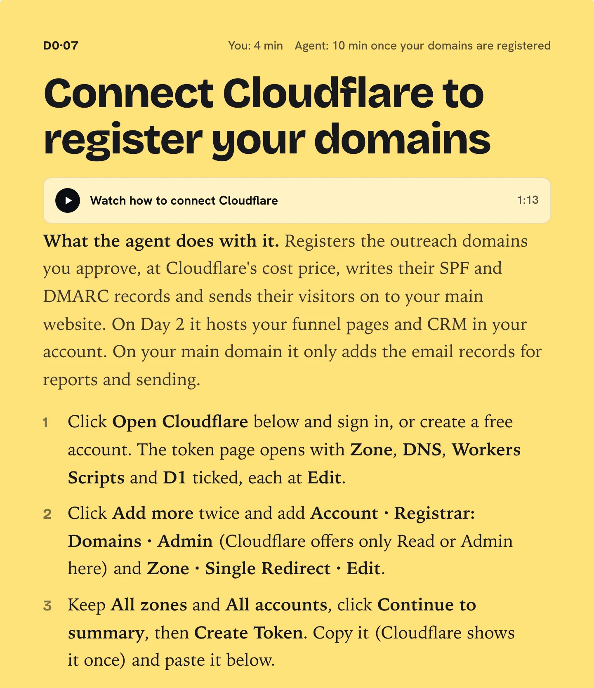
The Connect Cloudflare card: what the agent does with your token, and the three steps that create it.
What Good Looks Like
Grant the listed permissions and nothing more: the agent's reach stops where the token's does.
Pick Include All zones, so the token covers domains bought after you create it.
Keep a copy of the token in your password manager, never in a doc or a chat thread.
The Records Each Domain Needs
Every sending domain needs MX records, exactly one SPF record, a DKIM key from the mail provider's admin console, and a DMARC record starting at p=none with reports sent to an inbox you read. Two SPF records break authentication without any error.
app/src/lib/templates/contrib-c.ts
Common Mistakes
Leaving out Registrar: Domains at Admin, so no domain can be registered.
Limiting the token to one zone, so new outreach domains are out of reach.
Pasting a Zone ID where the Account ID belongs.
D0·165 min
Let Cloudflare Register Domains for You
Why It Matters
Cloudflare can register your outreach domains at cost straight into your account, so no nameserver change is needed.
Cloudflare refuses API registrations without billing, a registrant contact and the agreement, so the purchase fails at the first domain.
How It Works
What the Agent Does
Registers the names you approve and waits for each registration to finish.
Sets up each new domain with SPF, DMARC and the redirect to your website.
What You Do
Add a payment method and the default registrant contact.
Accept the Domain Registration Agreement once.
Every Step
In Cloudflare, open Manage Account → Billing and add a payment method. Domains are charged to it at cost.
Open Domain Registration → Register Domains once, set your default registrant contact, and accept the Domain Registration Agreement.
Done When
Billing, contact and agreement are set, and Cloudflare Registrar answered a domain check.
What Good Looks Like
Use real registrant details: every domain needs a real name, address, phone and email by ICANN rules.
The shortlist uses .com names, because some other extensions cannot be registered through Cloudflare's API.
Common Mistakes
Skipping the agreement, so Cloudflare refuses the first registration.
Leaving the registrant contact as a placeholder.
D0·172 min
Approve Your Outreach Domains
Why It Matters
Your outreach domains are registered at Cloudflare, starting the chain to mailboxes and 2 to 3 weeks of warm-up.
Without outreach domains you either send from your main domain and risk all your email, or the warm-up clock never starts.
How It Works
What the Agent Does
Builds .com names from your brand, checks they are free at Cloudflare Registrar and prices them; re-checks when the list is over an hour old; registers exactly the ticked names for the total you saw.
Sets up each domain in Cloudflare as soon as it is registered.
What You Do
Untick names you would not want a prospect to see.
Every Step
Tick the domains you'll send from. The agent suggests available names and prices them at Cloudflare Registrar, and you can add your own.
Approve. The agent registers them at Cloudflare with the contact and card on your Cloudflare account.
Done When
Approved. The agent is setting them up.
What Good Looks Like
Choose names a prospect connects to your brand at a glance: your brand with get, try or hq.
Never include your main domain. If it gets flagged, your normal email stops arriving too.
Approve as many as your sending plan asks for: it counts the domains your mailboxes need.
A Brand and Its Outreach Domains
A SaaS company sells from northwind.io. It buys northwindhq.com and trynorthwind.com, creates two mailboxes on each, and starts warm-up the same day. Each outreach domain redirects to northwind.io, so anyone who types it lands somewhere real.
workshop-plan/playbook.html
Common Mistakes
Adding your own hyphenated or unrelated names that read as spam to a prospect.
Adding a domain that already runs a website or inbox.
D0·181 min
Click the Registry Email
Why It Matters
Your domains stay live: the registry confirms the owner's contact details, which every new registration requires.
Miss the 15-day window and the registry suspends the domains, taking your mailboxes and warm-up down with them.
How It Works
What the Agent Does
Checks your domains were bought before it accepts your confirmation.
What You Do
Find the email in the owner inbox and click its link.
The Wait
Within 15 days, or the domains are suspended
Every Step
Open the email Cloudflare sends to your registrant contact asking you to verify it.
Click the link in it. One click covers every domain registered with that contact.
Done When
Clicked.
What Good Looks Like
Search the owner inbox and its spam folder the day your domains are bought.
One click covers every domain bought with the same details, so you do it once.
Confirm here only after you have clicked: this card cannot see the registry's status.
Common Mistakes
Waiting for a reminder instead of looking the same day.
Using an owner email nobody reads, so the link never gets clicked.
D0·191 min
Get Your Inboxes Through Our Partner
Why It Matters
Your cold email goes out from Google Workspace inboxes that our inbox partner sets up for you: domains included, with SPF, DKIM and DMARC done, hosted on their side. Their team contacts you, so there is no mailbox to buy or build. The inboxes still need 2 to 3 weeks of warm-up before cold sending.
Our partner sets up Google Workspace inboxes for you on the outreach domains you approved, with SPF, DKIM and DMARC done, and their team contacts you.
Without this, the partner never hears that you want inboxes, and your warm-up clock never starts.
How It Works
What the Agent Does
Passes the partner your name, your email, your approved outreach domains and the number of inboxes in your sending plan.
Checks Tantra for the delivered inboxes on the card after Connect Tantra, and counts the warm-up days from there.
What You Do
Press Mark done to ask the partner to set the inboxes up.
Answer the partner's email when it arrives.
Send them the Client ID and the scopes the Connect your inboxes in Tantra card shows, once they deliver.
The Wait
Setup by the partner team, then 2 to 3 weeks of warm-up
Every Step
Press Mark done to ask the partner to set up the inboxes in your sending plan on the domains you approved. This shares your name, your email, those domains and the number of inboxes with them, and nothing else.
The partner team contacts you by email at the address you signed up with. Answer them and they set up the inboxes for you.
When they deliver, send them your Google service account's Client ID and the scopes. The Connect your inboxes in Tantra card builds the service account after one Google sign-in and shows both, ready to copy. They authorise it on the Workspace they built, so Tantra can send from every inbox.
Done When
Asked. The partner team will contact you.
What Good Looks Like
The partner removes the build work, not the wait: inboxes still need 2 to 3 weeks of warm-up before cold sending.
Keep two or three inboxes per domain, so one flagged domain never takes your whole sending capacity with it.
You never build a mailbox yourself. The partner owns the domains' email setup, and Tantra reaches the inboxes through one service account.
Common Mistakes
Asking before your outreach domains are approved, so the partner has nothing to build on.
Sending the partner the service account's email or key file. They need the numeric Client ID and the scopes, nothing else.
Tantra is connected, so the agent can load your clean list and build your invite, email or LinkedIn campaigns there as drafts.
Without the key, every campaign you chose to run in Tantra has to be built by hand, contact import included, on the day you want to send.
How It Works
What the Agent Does
Imports your clean prospect list into Tantra.
Builds a draft of each campaign you picked Tantra for.
Starts only the campaigns whose channels you tick and approve on the Day 3 launch card.
What the Agent Does With This Access
Imports your clean list and builds your cold email, LinkedIn and calendar-invite campaigns in Tantra as drafts, which send nothing until you start them on the Day 3 launch card. If you picked Tantra for reminder email, your pages send each registrant's approved reminders through it at their time. It never starts a campaign on its own.
What You Do
Decide on the Day 3 launch card which channels start. The rest stay drafts.
Sign in to Tantra (a Pro trial covers this cohort).
Open Connectors → API Keys → Create API Key, name it, leave the expiry empty, and copy the key (it starts tk_live_; Tantra shows it once).
Done When
Connected. The agent can load your lists and campaigns into Tantra.
Watch how to connect Tantra0:50
Which Plan
Tantra Pro, $99 a month with a 7-day free trial, includes the REST API, webhooks and the MCP server.
Permissions to Grant
Tantra keys reach the whole account; there are no scopes yet. Give the agent its own named key so you can revoke just that one.
Where the Key Appears
Connectors, then API Keys under Platform, then Create API Key. Leave the expiry empty. Tantra shows the key once, starting tk_live_.
Common Errors
Invalid API key
The key was mistyped or revoked. Create a new one and paste it with the copy icon.
API key has expired
An expiry date was set. Create a new key with the expiry left empty.
You lost the key
It can't be shown again. Revoke it with the bin icon and create a new one.
What Good Looks Like
One key per workspace. Name it for this build, so you know which one to revoke later.
Copy the key straight into this card. Tantra shows it once, and a key sitting in a doc or chat is a leak.
Drafts by default is deliberate: you read the finished campaign in Tantra before anything reaches a prospect.
Safe Daily Limits per Inbox
In Tantra, Guests/day is the calendar limit per inbox: 20 while the inbox is cold, 50 once it has warmed for 2 to 3 weeks. Set Warm to Cold or Warmed to match. Tantra spreads a big list over later days rather than go over the limit.
Tantra sends your cold email from the inboxes the partner delivered, and warms them while you wait. It reaches them through a Google service account, so nobody signs in to each inbox.
Every inbox the partner delivered is connected to Tantra, Gmail capable and set to Cold, so warm-up runs and cold email has a date it can start.
With no inbox in Tantra, the cold email campaign has nothing to send from and the build stops with a message.
How It Works
What the Agent Does
After one Google sign-in, creates the Google Cloud project, switches on the Gmail and Calendar APIs, makes one service account and its key, and uploads the key to Tantra.
Shows the Client ID and the scopes on the card, ready to send to the partner.
Once the partner has added them, verifies every inbox you listed in Tantra, every 30 minutes until each is Connected and Gmail capable.
Sets each inbox to Cold so Tantra warms it, starts the warm-up count, then builds the campaign from those inboxes as a draft that sends nothing.
What You Do
Sign in to Google once, as a super admin of your own company Workspace.
Send the partner the Client ID and the scopes. The agent notices when they have added them.
Every Step
Paste every inbox address the partner delivered below, one per line.
Click Build my service account and sign in to Google once, as a super admin of your own company Workspace (the partner's Workspace stays theirs). The agent creates the Google Cloud project, switches on the Gmail and Calendar APIs, makes one service account and its key, and uploads the key to Tantra (Connectors, Google Service Accounts). You never handle a key file.
The card then shows a Client ID and a line of scopes, ready to copy. Send both to the partner. They add them under Manage Domain Wide Delegation in the Workspace they built for you. Google offers no way to do this click for you.
The agent checks Tantra every 30 minutes until the partner has added it. It verifies every inbox (Verify and Add Accounts) until each shows Connected and Gmail capable, sets each one to Cold so Tantra starts warming it, and starts the count to the day cold email can start. If it stops waiting, click The partner added it: check again.
By Hand
Paste every inbox address the partner delivered below, one per line.
In console.cloud.google.com create a project, enable the Gmail API and the Google Calendar API, then open IAM & Admin → Service Accounts → Create service account. On its Keys tab click Add key → Create new key → JSON and keep the file.
Send the partner the service account's numeric Client ID (under Advanced settings) and these three scopes, comma separated: https://www.googleapis.com/auth/gmail.send, https://www.googleapis.com/auth/gmail.modify, https://www.googleapis.com/auth/calendar. They add them under Manage Domain Wide Delegation in the Workspace they built for you.
In Tantra open Connectors → Google Service Accounts, drop the JSON key into Upload Service Accounts and click Upload.
Open Accounts. In Verify and Add Accounts, paste every inbox address the partner delivered and click Verify & Add. Set each one to Cold so Tantra starts warming it.
Check here. The agent reads your Tantra accounts and confirms every inbox shows Connected and Gmail capable, then counts the days to the date cold email can start.
Done When
Every inbox is connected in Tantra, Gmail capable and warming.
Watch how to connect Google Workspace senders1:00
Which Plan
Google Cloud is free for a service account. Calendar invites: your own Workspace, one service account for each sender, authorised by a super admin. Cold email: the inboxes come from our inbox partner, who authorises your service account in the Workspace they built.
Permissions to Grant
Calendar senders: domain-wide delegation for each sender's service account (its numeric client ID), with the calendar scope.
Vendor inboxes: one service account, authorised by the partner with three scopes: gmail.send, gmail.modify and calendar.
Calendar invites need calendar; cold email needs the two Gmail scopes. Nothing else.
Where the Key Appears
Google Cloud, IAM and Admin, Service Accounts makes each JSON key. For calendar senders, admin.google.com, Security, Access and data control, API controls, Manage domain-wide delegation authorises it. For vendor inboxes, send the partner the numeric client ID and the three scopes. In Tantra: Connectors, Google Service Accounts to upload every key, then Accounts, Verify & Add for each address.
Common Errors
An inbox shows Calendar-only
The Gmail scopes are missing from the delegation entry. Ask the partner to add gmail.send and gmail.modify, then verify again.
Unauthorized client when you verify
The delegation used the service account's email. Paste its numeric client ID instead.
A calendar sender shows Disconnected
That sender's service account was never uploaded, or its client ID isn't authorised. Upload its JSON key and add its delegation entry, then verify again.
What Good Looks Like
One service account covers every inbox in the Workspace the partner built. Nobody signs in to each inbox, and you never touch a key file.
List every inbox before the agent verifies, so volume is spread across all of them.
Do it the day the partner delivers: warm-up is a wait, and it only runs once the inbox is connected.
Every inbox address the partner delivered, one per line
Every address exactly as the partner sent it, one per line. The agent verifies each one in Tantra and sets it to Cold for warm-up.
What the Two Badges Mean
Connected means your service account can act as that inbox. Gmail capable means it can also send email. Connected with Calendar-only means the two Gmail scopes are missing from the partner's delegation.
Sending the partner part of the scope line. An inbox without the Gmail scopes shows Calendar-only and cannot send cold email.
Signing in with a personal Gmail account. Google Cloud needs a Workspace organisation to hold the project.
Sending the partner the service account's email or a key file. They need the numeric Client ID and the scopes, nothing else.
D0·2210 min
Connect LinkedIn in Tantra
Why It Matters
Tantra sends LinkedIn connection requests and messages from your own account. LinkedIn login is the one step nobody can do for you, so you sign in once inside Tantra.
Your LinkedIn account is connected and running in Tantra, so connection requests and messages can go out.
With no LinkedIn account running in Tantra, the LinkedIn campaign cannot be built.
How It Works
What the Agent Does
Checks Tantra for a LinkedIn account that is running and synced.
Builds the LinkedIn campaign as a draft that sends nothing.
What You Do
Sign in to LinkedIn once inside Tantra Channels.
Check here once it shows running.
Every Step
In Tantra open Channels and connect LinkedIn: sign in and finish any code LinkedIn asks for.
Let it sync (a few minutes). When it shows running, check here.
Done When
Your LinkedIn account is connected and running in Tantra.
What Good Looks Like
Use the account you actually sell from: people check the profile before they accept.
Let the first sync finish before you check.
Why LinkedIn Login Stays Yours
LinkedIn asks for your password and a code. The agent never holds either, so you sign in inside Tantra and the agent only reads whether it is running.
workshop-plan/playbook.html
Common Mistakes
Checking while the account is still syncing.
Connecting someone else's account without their say.
Cold calendar invites go out from their own Google Workspace, never your main one or your cold email one. Several senders share the daily volume, and each one is a Workspace user with its own Google service account in Tantra. A new account needs about 60 days before it can send invites at volume.
A separate, prepaid Google Workspace sends your calendar invites through Tantra from several senders, with its 60 day warm-up clock already running.
Start this late and the invite account is still young when you need volume, so invites go out slowly or put the domain at risk.
How It Works
What the Agent Does
After one Google sign-in, builds the Google Cloud project, the service account and its key, and uploads the key to Tantra.
Verifies the sender in Tantra once you have clicked Authorize, and sets its daily invite limit.
Counts the days since the account was created, against the 60 day warm-up.
Builds the invite campaign in Tantra as a draft. It starts only when you tick calendar invites on the Day 3 launch card.
What You Do
Buy the extra domain and create the Workspace with a user for each sender.
Prepay the account, then sign in to Google once as its super admin.
Paste each Client ID and the scopes under Domain-wide delegation and click Authorize.
List every sender and the day the Workspace was created.
The Wait
60 days of warm-up before full volume
Every Step
Write the new domain below (never your main domain or an outreach domain) and click Domain paid and connected once: the agent registers it through your Cloudflare Registrar (a few dollars, charged to your Cloudflare card) and tells you when it is yours.
Sign up for Google Workspace Business Starter on that domain, with one user for each person who sends invites (two or three senders is a good start). Choose "I already own a domain" so Google does not sell you another.
Prepay $100 to it (€100 if you're billed in euros): in admin.google.com → Billing → your subscription → Make a payment. Paid history raises Google's sending limits.
List every sender below, one address per line, with the day you created the account. When the agent builds your invite campaign it sends from all of them and shows how many of the 60 days have passed and the day the account reaches full volume.
Click Build my service accounts and sign in to Google as the super admin of this new Workspace. The agent creates the Google Cloud project, switches on the Gmail and Calendar APIs, makes a service account and key for every user who sends invites, and uploads the keys to Tantra (Connectors, Google Service Accounts). You never handle a key file.
The card then shows a Client ID and a line of scopes. In admin.google.com → Security → Access and data control → API controls → Manage domain-wide delegation, click Add new, paste both and click Authorize. Google offers no way to do this click for you.
The agent checks every few minutes until Tantra can send as each sender, then sets its daily invite limit: 20 while the account is cold, 50 after day 60.
Doing it by hand instead? For each user who sends invites: in console.cloud.google.com create a project, enable the Gmail API and the Google Calendar API, then IAM & Admin → Service Accounts → Create service account, open it, Keys → Add key → Create new key → JSON. In Tantra upload the file under Connectors → Google Service Accounts. Then in admin.google.com add each service account's Client ID under Domain-wide delegation with the scopes https://www.googleapis.com/auth/calendar, https://www.googleapis.com/auth/gmail.send and https://www.googleapis.com/auth/gmail.modify. Finally open Accounts → Verify and Add Accounts in Tantra: each sender must show Connected. One service account with delegation covers every mailbox in the same Workspace.
Click Domain paid and connected. The agent asks Tantra about every sender and passes only when each shows Connected.
By Hand
Write the new domain below (never your main domain or an outreach domain) and click Domain paid and connected once: the agent registers it through your Cloudflare Registrar (a few dollars, charged to your Cloudflare card) and tells you when it is yours.
Sign up for Google Workspace Business Starter on that domain, with one user for each person who sends invites. Choose "I already own a domain" so Google does not sell you another.
Prepay $100 to it (€100 if you're billed in euros): in admin.google.com → Billing → your subscription → Make a payment. Paid history raises Google's sending limits.
List every sender below, one address per line, with the day you created the Workspace. When the agent builds your invite campaign it shows how many of the 60 days have passed and the day the account reaches full volume.
Signed in to console.cloud.google.com as the super admin of this Workspace, for each sender follow steps 1 to 4 of the build guide: create a project under the organisation, enable the Gmail API and the Google Calendar API, then for each user who sends invites IAM & Admin → Service Accounts → Create service account, open it and Keys → Add key → Create new key → JSON.
In Tantra, upload each key file under Connectors → Google Service Accounts.
In admin.google.com → Security → Access and data control → API controls → Manage domain-wide delegation, click Add new for each service account, paste its Client ID with the scopes https://www.googleapis.com/auth/calendar, https://www.googleapis.com/auth/gmail.send and https://www.googleapis.com/auth/gmail.modify, and click Authorize.
In Tantra, open Accounts → Verify and Add Accounts: each sender must show Connected.
Click Domain paid and connected. The agent asks Tantra about every sender and passes only when each shows Connected.
Done When
Every sender exists, is prepaid and is connected to Tantra.
Watch how to connect Google Workspace senders1:00
Which Plan
Google Cloud is free for a service account. Calendar invites: your own Workspace, one service account for each sender, authorised by a super admin. Cold email: the inboxes come from our inbox partner, who authorises your service account in the Workspace they built.
Permissions to Grant
Calendar senders: domain-wide delegation for each sender's service account (its numeric client ID), with the calendar scope.
Vendor inboxes: one service account, authorised by the partner with three scopes: gmail.send, gmail.modify and calendar.
Calendar invites need calendar; cold email needs the two Gmail scopes. Nothing else.
Where the Key Appears
Google Cloud, IAM and Admin, Service Accounts makes each JSON key. For calendar senders, admin.google.com, Security, Access and data control, API controls, Manage domain-wide delegation authorises it. For vendor inboxes, send the partner the numeric client ID and the three scopes. In Tantra: Connectors, Google Service Accounts to upload every key, then Accounts, Verify & Add for each address.
Common Errors
An inbox shows Calendar-only
The Gmail scopes are missing from the delegation entry. Ask the partner to add gmail.send and gmail.modify, then verify again.
Unauthorized client when you verify
The delegation used the service account's email. Paste its numeric client ID instead.
A calendar sender shows Disconnected
That sender's service account was never uploaded, or its client ID isn't authorised. Upload its JSON key and add its delegation entry, then verify again.
What Good Looks Like
Keep invites on their own domain and Workspace. If it gets flagged, your main email and cold email keep working.
Several senders share the volume: each one stays inside its own daily limit, so three senders send three times what one can.
One service account per sender. If one key is revoked or one sender is flagged, the others keep sending.
Start today even if invites are weeks away. The 60 day clock is the longest wait in the whole build.
Until full volume, start campaigns at a low daily send and stay inside Tantra's per-inbox limits.
The new calendar domain
A new domain just for calendar invites, separate from your main and outreach domains. The agent registers it through your Cloudflare Registrar, so you only sign up Workspace on it.
Every calendar sender's email address, one per line
Every sender address on the new invite domain, one per line, exactly as added in Tantra. Invites show the sender's name in the prospect's calendar.
The day the account was created
The day you created the Workspace account, not the day you fill this in. The agent counts the 60 days from it.
The Limits for Cold Calendar
Cold calendar invites from outreach inboxes: 20 a day per cold inbox, 50 a day once warmed, never above 200 a day, with SPF, DKIM and DMARC in place first. Outreach domains only, never your main brand domain. Ignore it and what breaks is the domain, permanently.
workshop-plan/playbook.html
Common Mistakes
Using your main domain or a cold email domain for invites.
Writing today's date instead of the day the account was really created.
Reusing one sender's key for the others, or listing a sender here that was never added in Tantra.
Hitting a greyed out Create new key: newer Google organisations block service account keys until the policy is switched off.
D0·241 min
Decide How Buyers Pay
Why It Matters
Live payments need identity checks that take 1 to 3 business days, so they start today.
You choose how a buyer pays, so the right checkout or booking path gets built and payment verification starts before you need it.
Decide late and live payments are still in verification when your first buyer is ready, so the sale waits or goes manual.
How It Works
What You Do
Pick checkout or invoice, based on how your deals really close.
Every Step
Pick how a buyer pays for your offer. If a person closes every deal, say so.
Done When
Picked.
What Good Looks Like
Match the path to the price. Lower-priced offers sell through a checkout; higher-priced ones go through a call first.
A checkout confirms every payment on the server, so a paid order moves the deal to Payment Completed without anyone checking.
If a person closes every deal, choose invoice. A checkout nobody uses is one more thing to maintain.
Buyers pay
Dodo Payments is the built-in path and handles sales tax as merchant of record. Pick Stripe only if you already run it. Pick invoice if every deal needs a call.
Booking Link or Checkout
Have the link ready before the offer: your booking link if the offer is about $1,000 or more, your checkout link if it is under that. Live payments only work once your payment account's verification is approved.
Create a Dodo Payments account and start live verification now: identity, business and bank details.
Switch to Test mode, open Developer → API Keys → Add API Key, choose write access and copy it.
Paste the test key below.
Swap to your live key once Dodo approves you (1 to 3 business days): switch Dodo to Live mode, copy a live key from Developer → API Keys, then come back to this card and click Replace the key. The Day 3 card Swap to your live key checks it.
Done When
Connected in test mode. Live keys follow verification.
Watch how to connect Dodo Payments0:47
Which Plan
No plan: Dodo charges per sale. Test mode is free and builds the same products and checkout links. Start live verification on day one; live payments open after Dodo approves your business.
Permissions to Grant
Keep Enable write access ticked so the agent can create your product and checkout. Untick it only for a read-only reporting key.
Where the Key Appears
In test mode: Developer, API Keys, Add API Key. Dodo shows the key once. A test key works only in test mode; a live key only in live mode.
Common Errors
401 Unauthorized
A test key used against live, or the other way round. Paste the key from the same mode the card asks for.
403 Merchant not live
Live payments aren't on until verification finishes. Stay in test mode until Dodo approves you.
Can't create products
The key was made with write access unticked. Create a new key with it ticked.
What Good Looks Like
Submit verification today and build in test mode meanwhile. Most reviews take 1 to 3 business days.
Test and live are separate: a test key works only on test, a live key only on live.
Trust the webhook, never the browser, to say a payment succeeded. The agent wires it for you.
Setting Up Dodo Before You Sell
Create the account and finish verification: product information, identity, then bank. Most reviews take 1 to 3 business days, and live payments stay off until every form is approved. A test key works only on test.dodopayments.com, a live key only on live.dodopayments.com.
Create a Stripe account and complete activation so live payments are ready.
In your sandbox, open Developers → Workbench → API keys → Manage → Create restricted key, tag it for an agent, and set Write on exactly four: Products, Prices, Payment Links and Webhook Endpoints. Leave every other permission at None. Click Create key, then enter the code Stripe sends you (a two-step check) before it shows the key.
Paste the key (it starts rk_test_) below. Never paste your secret key (sk_): it can move money, and the centre refuses it.
Swap to your live key once Stripe activates you: leave the sandbox, create the same restricted key (it starts rk_live_), then come back to this card and click Replace the key. The Day 3 card Swap to your live key checks it.
Done When
Connected in a sandbox.
Watch how to connect Stripe1:04
Which Plan
No plan needed. A sandbox works the day you sign up; live payments need Stripe to verify your business first.
Permissions to Grant
Products, Prices, Payment Links and Webhook Endpoints: Write.
Everything else: None (Stripe's default).
Tag it Authorizing agent access to your account when Stripe asks how you'll use the key.
Where the Key Appears
In your sandbox: Developers, Workbench, API keys, Manage, Create restricted key. After Create key and the two-step check, click the key to copy it. It starts rk_test_.
Common Errors
Invalid request error when the agent builds
The key is missing a permission. Stripe's error names it: edit the key and set that resource to Write.
You can't see API keys
Only Administrators can. Ask an Administrator on the account for access.
Products made in a sandbox don't appear in live
A sandbox and live keep separate objects and keys. Build in the sandbox, then repeat with a live key after verification.
Live payments are blocked
Finish verifying your business in the Dashboard. Until then, only your sandbox works.
What Good Looks Like
Use a restricted key, never your secret key. It can do the listed jobs and nothing else in your account.
Tag the key for an agent. Stripe's own agent tooling is moving to accept only agent-tagged restricted keys.
Build in a sandbox first, prove a test purchase reaches your pipeline, then switch to live.
Common Mistakes
Pasting the full secret key because it is easier to find.
Missing write access on Webhook Endpoints, so sales never reach your pipeline.
Leaving activation for later, so live payments are not ready at launch.
Create a Cal.com account and connect the calendar you take calls on (Google Calendar or Outlook).
Open Settings → Developer → API Keys → New, name it, and copy the key (it starts cal_live_).
Done When
Connected. The agent can create your booking link.
Watch how to connect Cal.com0:50
Which Plan
Your current Cal.com plan works: the key acts on your own account and event types.
Permissions to Grant
Cal.com keys have no scopes and carry your account's rights. Name the key so you can find and delete it later.
Where the Key Appears
Settings, Developer, API keys, New. Turn on Never expires and click Create. Cal.com shows the key once, starting cal_live_.
Common Errors
401 when you click Connect
The key was cut short when copying. Create a new one and use the clipboard icon.
Bookings stop after a month
The key had an expiry date. Create one with Never expires and replace the key on your card.
Too many requests
Cal.com allows 120 calls a minute per key. Wait a minute and click Connect again.
What Good Looks Like
Connect the calendar that holds your real meetings. A booking link that ignores your diary double books you.
A Cal.com key has no scopes and opens the whole account, so keep this account for sales calls only.
Bookings should move the pipeline: tools report events, events move deals.
The Booking Moves the Stage
Write the entry event beside each stage before you build an automation. Eval Call Scheduled: a calendar booking is created. No Show: the appointment is marked no-show. Sales Call Held: the appointment is marked showed.
app/src/content/guides/s5-pipeline/s5-pipeline.ts
Common Mistakes
Creating the key in a personal Cal.com account you also use for friends and family.
Pasting the key into chat or a doc instead of only into this card.
D0·2820 min
Set Up Your GoHighLevel Account and Sub-account
Why It Matters
A GoHighLevel sub-account of your own, on the right plan and time zone, ready for the agent to build your pipeline in.
The agent builds into the agency layer or a client's sub-account, and your funnel's contacts land where your team never looks.
How It Works
What the Agent Does
Nothing yet: signing up, picking the plan and making the sub-account need you. The next card hands the agent a token for this sub-account only.
What You Do
Pick the plan: Starter covers one business, Unlimited suits an agency.
Make one blank sub-account for this funnel, with the time zone your calls run in.
Check Private Integrations shows in its settings, switching it on in Labs if not.
Every Step
Already on GoHighLevel? Keep your plan and skip to step 4: you only need one new sub-account for this funnel.
Pick your plan on gohighlevel.com/pricing. Starter ($97 a month, up to three sub-accounts) covers one business. Unlimited ($297) is for agencies running many clients. Agency Pro ($497) adds SaaS mode. Every plan starts with a 14-day trial, and SMS, calls and email are billed by use on top.
Sign up. GoHighLevel makes your agency account first: the layer that holds billing, sub-accounts and snapshots. Contacts, pipelines and workflows never live there, so nothing you build for this funnel goes in the agency view.
Make the sub-account your funnel lives in: in the agency view open Sub-Accounts → + Create Sub-Account, choose a blank sub-account (no snapshot), enter your business name, address and phone, set the time zone your sales calls run in, and Save. Every workflow wait and task due date uses that time zone.
Click Switch to Sub-Account. Open Settings → My Staff and check you are listed with the Admin role; add each salesperson the same way. Workflow tasks and alerts go to these people.
Check Settings → Private Integrations is there. Not listed? Open Labs in the settings menu, switch Private Integrations on and refresh. The next card creates the token there.
Leave Phone Numbers and Email Services as they are. Your funnel sends every message to your contacts; GoHighLevel only sends your team's own alerts, which use its built-in email.
Sub-account made, time zone set, Private Integrations showing.
Have you ever logged in to GoHighLevel, found three pipelines called "Sales", and had no idea which one your funnel was filling?
That happens when the build goes into the wrong layer. GoHighLevel has two: the agency and the sub-account. Today you make one clean sub-account for this funnel, so every contact, pipeline and workflow lands in one place your team can find.
Agency or Sub-Account: Which Is Which?
Agency account. The top layer. It holds your billing, your list of sub-accounts, snapshots and the Labs switches. You never build a pipeline here.
Sub-account (HighLevel also calls it a location). One business. It holds the contacts, the opportunities and pipelines, the calendars and the workflows. Its ID is the Location ID the next card asks for.
Running this funnel for a second business later? That is a second sub-account, never a second pipeline inside the first.
Which Plan to Pick
Plan
Price
Sub-accounts
Pick it when
Starter
$97 a month
Up to 3
You run one business. This is enough for everything in the workshop.
Unlimited
$297 a month
Unlimited
You are an agency building this funnel for several clients.
Agency Pro
$497 a month
Unlimited
You resell GoHighLevel to clients (SaaS mode).
Every plan starts with a 14-day trial. SMS, calls and email are billed by use on top of the plan. You won't need them: your funnel sends every message to your contacts.
What to Set
Setting
Value
Why
Sub-account type
Blank, no snapshot
A snapshot brings its own stages and tags. Any name that clashes with the funnel's breaks the sync.
Time zone
Where your calls run
Every workflow wait and task due date uses it.
Users
You (Admin) plus each salesperson
Workflow 1 assigns every registrant to one of them.
Private Integrations
Visible under Settings
The next card creates the agent's token there.
How to Test It
Open Settings → Business Profile inside the sub-account. You should see your business name and a Location ID. If you see an agency name and no Location ID, you are still in the agency view.
Mistakes to Avoid
Building in the agency view. Nothing you need lives there.
Starting from someone else's snapshot. Its stage and tag names fight the funnel's.
Leaving the default time zone. Tasks then fall due at 3 a.m.
Buying a number for SMS reminders. The funnel already sends them, so people get two of each.
What Good Looks Like
Build in a sub-account, never the agency view. Contacts, pipelines and workflows only exist inside a sub-account.
Start blank. A snapshot brings someone else's stages and tags, and every one that clashes with the funnel's names breaks a sync.
Leave phone numbers and email sending off. Your funnel sends to contacts; GoHighLevel only alerts your team.
Agency Above, Sub-Account Below
The agency account holds billing, snapshots and the list of sub-accounts. Your funnel lives in one sub-account: its contacts, its Sales pipeline and its nine RevOps workflows. A second business is a second sub-account, never a second pipeline in the first.
Creating the private integration at agency level, so its token can't open the sub-account.
Leaving the sub-account on the default time zone, so every task is due at the wrong hour.
Buying a phone number for SMS reminders the funnel already sends, then texting people twice.
D0·2910 min
Set Up Your HubSpot Account and Know Your Plan
Why It Matters
A HubSpot account with its time zone, your salespeople and your plan on record, so the agent builds what your plan allows.
The agent builds for a plan you don't have, and Day 2 asks you for workflows HubSpot won't let you make.
How It Works
What the Agent Does
Reads your plan answer to show you only the Day 2 steps your HubSpot can run.
What You Do
Sign up for the free CRM or use the account you have.
Set the time zone and add your salespeople as users.
Pick your plan: it decides whether you get workflows.
Every Step
Already on HubSpot? Use that account and skip to step 3.
Sign up for the free CRM at app.hubspot.com/signup-hubspot/crm with your work email. HubSpot names the account after your company domain.
Set the time zone and currency: Settings (the gear icon) → Account Management → Account Defaults. Every task due date and workflow delay uses that time zone.
Add your salespeople: Settings → Users & Teams → Create user, with their work email. Free accounts include a limited number of seats; the deal owner and every task need a user.
Pick your plan below. It decides what HubSpot can automate: Free has one deal pipeline and no workflows; Starter has two pipelines and no workflows; Professional or Enterprise (Sales, Marketing, Service or Smart CRM) has workflows. You don't need to upgrade: your funnel sends every message and reads back every stage move on any plan.
Done When
Account ready, time zone set, plan picked.
Ever opened HubSpot to build a workflow and found the menu simply isn't there?
That's your plan talking. HubSpot gates workflows by tier, and nobody tells you until you go looking. On this card you set the account up and tell the centre which plan you're on, so Day 2 only shows the steps your HubSpot can run.
What Each Plan Gets
Plan
Deal pipelines
Workflows
What the agent builds
Free
1
No
Contact properties, and a RevOps stage dropdown on each contact instead of a pipeline. You move stages in that dropdown.
Starter
2
No
The properties and a Sales (RevOps Workshop) pipeline with the 12 stages (it reuses a pipeline named Sales if it already has every stage).
Professional or Enterprise
More
Yes
The same. On Day 2 you add eight tag workflows that give your team tasks and alerts.
HubSpot's "Send a webhook" workflow action needs Data Hub Professional. You don't need it here: the funnel reads stage moves back without it.
How to Test It
Open CRM → Deals. On Starter and above the pipeline menu at the top left lists your pipelines. On Free there is just one. Either way you're ready for the next card.
Mistakes to Avoid
Connecting a sandbox. The real portal never gets a contact.
Picking Professional when you're on Starter. Day 2 then asks you to build workflows HubSpot won't let you make.
Upgrading just for this funnel. Stage moves come back on Free. Upgrade when your team wants the task workflows, not before.
What Good Looks Like
Don't upgrade for this funnel. Your funnel sends every message and reads every stage move back on Free too.
Professional adds workflows, which turn each funnel tag into a task or an alert for your team.
Every deal needs an owner: add the people who take calls before the first contact arrives.
Your HubSpot plan
Check Settings, Account and Billing if you're not sure. Free and Starter run everything here except the Day 2 workflows.
What Each Plan Gets
Free: one deal pipeline, so the agent keeps each contact's stage in a RevOps stage dropdown. Starter: two pipelines, so it builds Sales (RevOps Workshop) beside yours. Professional: the same, plus workflows that give your team a task for every funnel tag.
cloud/src/jobs-stack.ts
Common Mistakes
Signing up in a sandbox or test portal, so the real portal never gets a contact.
Picking Professional here when the account is on Starter, then looking for a Workflows menu that isn't there.
The agent can set up GoHighLevel to mirror your funnel: the same stages, tags and fields, filled as every registration, booking and payment happens.
Your team works from a GoHighLevel board that never fills, while the real contacts sit only in the built-in CRM.
How It Works
What the Agent Does
Creates every tag your funnel sends and the contact and opportunity fields, including the four UTM fields.
Creates the Sales pipeline with its 12 stages, Form Filled to Delivery, and the four extra pipelines.
Copies each contact with its tags, and moves its opportunity to the matching stage.
What the Agent Does With This Access
Creates the Sales pipeline, the four extra pipelines, every tag your funnel sends and every field the Stage 5 guide names (including the webinar date, time and watch link), reads your workflows back to check them on Day 2, then copies every registration, tag, booking and payment from your funnel into GoHighLevel. It adds tags and never removes them, never deletes anything and never sends messages from GoHighLevel.
What You Do
Choose the sub-account this funnel lives in.
Tick exactly the scopes listed, then copy the pit- token and Location ID.
In the sub-account you'll use, open Settings → Other Settings → Private Integrations → Create new Integration and name it RevOps Workshop. Not listed? Switch Private Integrations on in Labs first.
Tick these scopes. Each label pairs a name with its scope, like Edit Contacts - contacts.write: contacts.readonly, contacts.write, locations/tags.readonly, locations/tags.write, locations/customFields.readonly, locations/customFields.write, opportunities.readonly, opportunities.write, locations.readonly and workflows.readonly. Tick every Opportunities scope, which covers pipelines: GoHighLevel has no separate pipeline scope. Copy the token (it starts pit-).
Copy the Location ID from Settings → Business Profile.
Done When
Connected. The agent can build your pipeline and sync every contact.
Watch how to connect GoHighLevel0:56
Which Plan
Your current GoHighLevel plan works: Private Integrations are available to agencies and sub-accounts, and any account admin can create one unless an admin has switched that permission off.
Permissions to Grant
Each scope label pairs a name with its scope, like Edit Contacts - contacts.write. Tick contacts.readonly and contacts.write, locations/tags.readonly and locations/tags.write, locations/customFields.readonly and locations/customFields.write.
Tick every Opportunities scope (opportunities.readonly and opportunities.write), which covers pipelines: GoHighLevel has no separate pipeline scope. Add locations.readonly and workflows.readonly. Nothing else: GoHighLevel recommends only the scopes you need.
Where the Key Appears
In the sub-account: Settings, Other Settings, Private Integrations, Create new Integration. The token (it starts pit-) shows once, with a Copy button. The Location ID is at the top of Settings, Business Profile.
Common Errors
Private Integrations is missing from Settings
Switch the feature on in Labs, then reload. If you're a team member, an admin can enable it under My Staff, Roles & Permissions.
You closed the dialog before copying the token
Open the integration and click Rotate and expire this token now, then copy the new token.
A call fails for a missing scope
Choose Edit from the three-dot menu, add the scope and click Update. The token stays the same.
The token was made at agency level
Create the integration inside the sub-account you'll use. Agency and sub-account tokens are separate.
S5 · Revenue & Deal Pipeline
Set It Up in GoHighLevel
Path A: fields, tags, five pipelines, the booking calendar and the workflows, all inside GoHighLevel.
The Full Setup
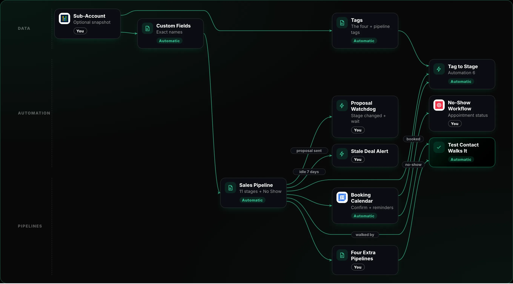
The Task
Build the whole of Stage 5 inside GoHighLevel: the fields and tags, the Sales pipeline with its eleven stages and No Show exit, the four extra pipelines, a booking calendar with its reminders, and the workflows that move deals and send follow-ups on their own. Paste in the copy you generated from your survey. You're done when a test contact books, misses, rebooks and pays, and every stage move and message happens without you.
Step by Step
Start From a Clean Sub-Account
Do the build in its own sub-account, so test contacts and workflows never mix with anything live. If your agency already has a pipeline snapshot you trust, open Account Snapshots in the agency view and create the sub-account from it, then check every stage and field against this guide. Otherwise start empty. It takes less time than untangling someone else's stages.
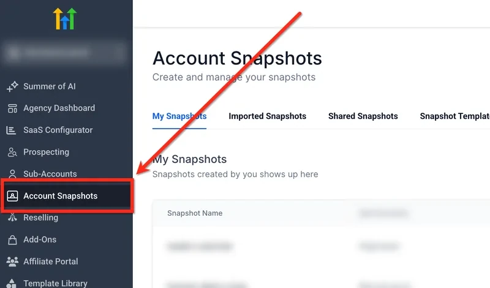
Agency view → Account Snapshots, if you're starting from a snapshot. HighLevel Help · Create New Sub-Account Using a Snapshot (https://help.gohighlevel.com/support/solutions/articles/155000005762) · Captured 24 Sept 2026
Create the Custom Fields
The Centre Does This
The centre's CRM setup creates the seven custom fields in your GoHighLevel account.
You Do This
Connect your GoHighLevel account once (token and location ID) when the centre asks.
Building it by hand instead
Go to Settings → Custom Fields, choose the Contact object and click Create field. Create each field from the fields list in The 11-Stage Deal Pipeline, with exactly those names: source, the four UTMs, mechanism (dropdown), diagnostic_score (number), score_band (dropdown), priority (dropdown P1 to P3), owner, next_action_date (date), and the four webinar fields as Text: readable_webinar_date, readable_webinar_time, watch_link_webinargeek, webinar_broadcast_date.
Then switch the object to Opportunity and create the deal fields: deal_value, proposal_sent_at, proposal_expires_at, lost_reason (dropdown), reengage_after.
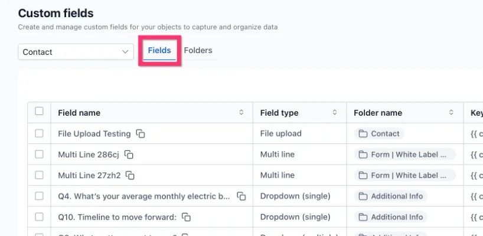
Pick Contact first; switch to Opportunity for the deal fields. HighLevel Help · How to Create and Use Custom Fields (https://help.gohighlevel.com/support/solutions/articles/155000008031) · Captured 24 Sept 2026
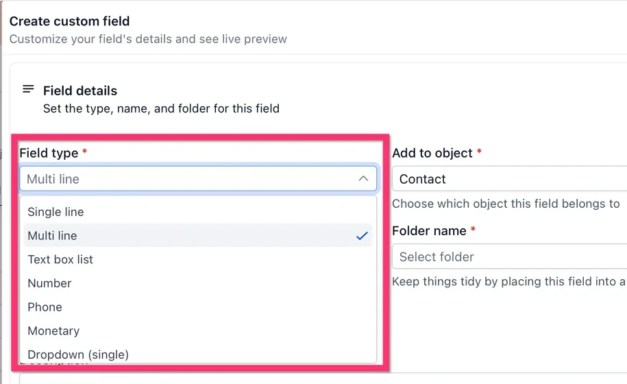
Pick the field type, then name it exactly as the guide says. HighLevel Help · How to Create and Use Custom Fields (https://help.gohighlevel.com/support/solutions/articles/155000008031) · Captured 24 Sept 2026
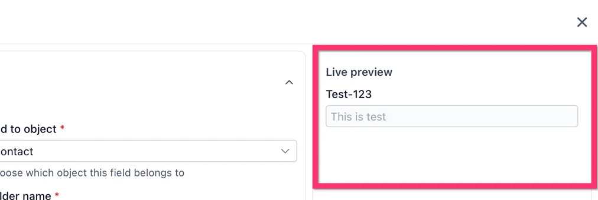
The live preview shows how the field will look on the contact. HighLevel Help · How to Create and Use Custom Fields (https://help.gohighlevel.com/support/solutions/articles/155000008031) · Captured 24 Sept 2026
Create the Tags
The Centre Does This
The CRM setup creates the tags, and the funnel applies them as people register, attend, miss the session, watch the replay and buy.
Building it by hand instead
Tags are created the first time you type them. Open Contacts, tick your test contact, click the Add Tag icon and type each tag once: webinar registrant, webinar attended, live webinar not watched, purchased, watched webinar replay, live webinar watched, webinar unsubscribed, call-no-show, enquiry, ghosted, nurture, deal-lost, referral, reactivated, confirmed, webinar-completed, next-step-taken. Spell them exactly like this; every workflow matches on the text.
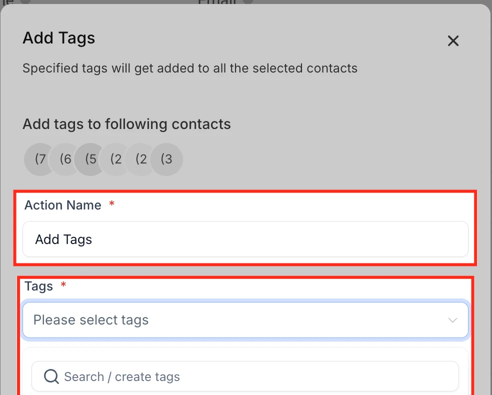
Type each tag once in Search / create tags. HighLevel Help · Bulk Add Contact Tags (https://help.gohighlevel.com/support/solutions/articles/155000002830) · Captured 24 Sept 2026
Build the Sales Pipeline and the Four Extra Pipelines
The Centre Does This
The CRM setup creates the 11-stage Sales pipeline.
You Do This
The four extra pipelines are not created by the centre; build them by hand.
Building it by hand instead
Go to Opportunities → Pipelines → Create new pipeline. Name it Sales and add the stages in order: Form Filled, Eval Call Scheduled, No Show, Qualified, Unqualified, Sales Call Held, Follow-Up, Proposal Sent, Proposal Accepted, Payment Completed, Onboarding, Delivery. Use the arrows to reorder and Add stage for each one.
Give the two exits (No Show, Unqualified) a stage colour so they stand out on the board. Then create four more pipelines the same way: No-Show Recovery, Nurture-Back, Referral and Expansion, Re-Engagement, with the stages listed in The Four Extra Pipelines.
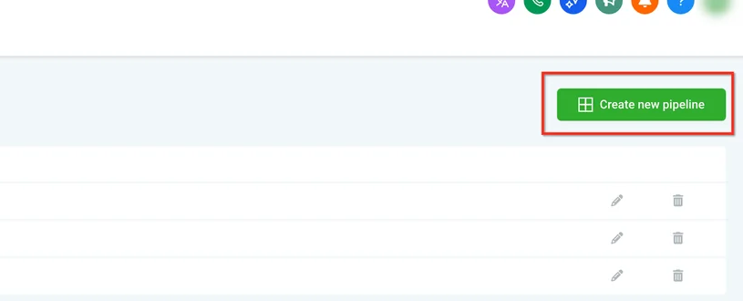
Opportunities → Pipelines → Create new pipeline. HighLevel Help · Step-by-Step Guide: Creating Pipelines (https://help.gohighlevel.com/support/solutions/articles/155000001985) · Captured 24 Sept 2026
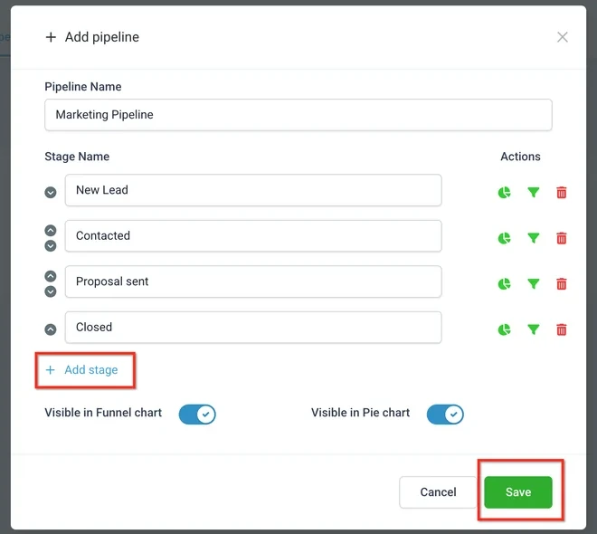
Name it Sales, add every stage, reorder with the arrows. HighLevel Help · Step-by-Step Guide: Creating Pipelines (https://help.gohighlevel.com/support/solutions/articles/155000001985) · Captured 24 Sept 2026
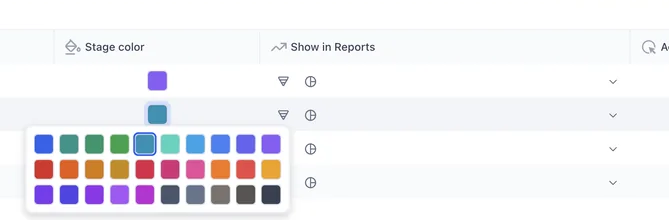
Give the exits their own colour. HighLevel Help · Step-by-Step Guide: Creating Pipelines (https://help.gohighlevel.com/support/solutions/articles/155000001985) · Captured 24 Sept 2026
Set Up the Booking Calendar and Its Reminders
Go to Settings → Calendars, open your sales-call calendar with Edit, then Notifications. Turn on the booking confirmation for the contact on Email and SMS, and add reminders at 48 hours, 24 hours and 1 hour before the appointment. Paste in your generated copy from follow-ups/03-call-reminders.md.
Add your prep question as a required question on the booking form, so it lands on the contact before the call.
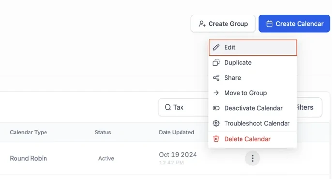
Settings → Calendars → Edit. HighLevel Help · Calendars: SMS, Email and In-App Notifications (https://help.gohighlevel.com/support/solutions/articles/155000003441) · Captured 24 Sept 2026
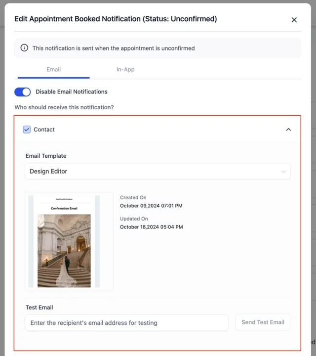
Notifications: the confirmation email to the contact. HighLevel Help · Calendars: SMS, Email and In-App Notifications (https://help.gohighlevel.com/support/solutions/articles/155000003441) · Captured 24 Sept 2026
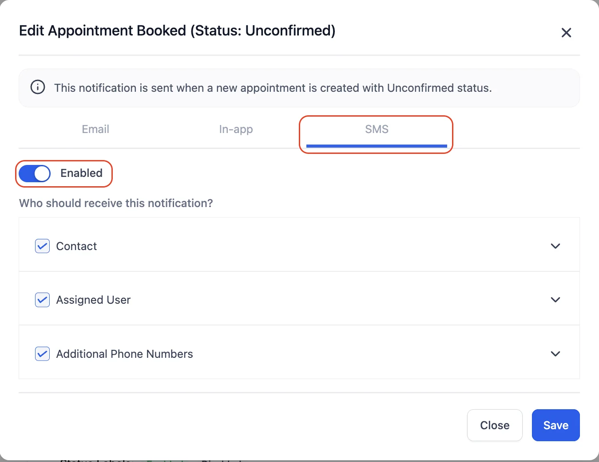
The same notification on SMS. HighLevel Help · Calendars: SMS, Email and In-App Notifications (https://help.gohighlevel.com/support/solutions/articles/155000003441) · Captured 24 Sept 2026
Wire Tag to Stage
The Centre Does This
You do not build these workflows. The funnel moves the opportunity at every 5-minute sync (tag to stage, automation 6), and booking and payment webhooks set Eval Call Scheduled, Follow-Up, Sales Call Held, Payment Completed and Onboarding.
Building it by hand instead
This is automation 6: tags and events move deals, people don't. Go to Automation → Workflows → Create Workflow. Build one small workflow per move, for example:
Pick the trigger for the move you're wiring. HighLevel Help · Workflow Trigger: Pipeline Stage Changed (https://help.gohighlevel.com/support/solutions/articles/155000002493) · Captured 24 Sept 2026
Build the No-Show and Follow-Up Workflows
You Do This
GoHighLevel has no public way to create workflows, so these stay by hand.
One workflow per sequence in your follow-ups/ folder. For the no-show:
Trigger: Appointment Status = No Show.
Actions: add tag call-no-show, move to No Show, Send SMS (your 5-minute text), Wait 10 minutes, Send Email, create two call tasks, then the 7-day steps with Wait between them.
Goal: Customer Booked Appointment, so a rebooking ends the workflow.
Build the proposal watchdog the same way, with Pipeline Stage Changed → Proposal Sent as the trigger and waits of 48 hours and 7 days.
The no-show workflow starts from Appointment Status. HighLevel Help · Workflow Trigger: Appointment Status (https://help.gohighlevel.com/support/solutions/articles/155000002619) · Captured 24 Sept 2026
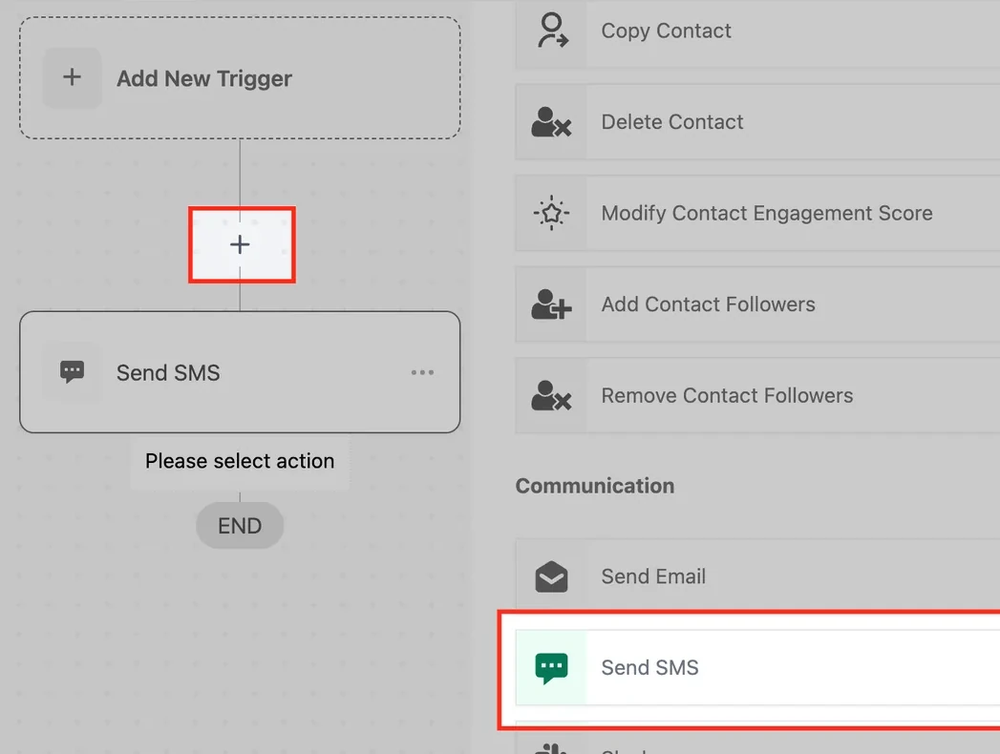
Add the Send SMS step first: it has to land within 5 minutes. HighLevel Help · Send SMS Action in Workflows (https://help.gohighlevel.com/support/solutions/articles/155000002474) · Captured 24 Sept 2026Paste the text from follow-ups/04-no-show-recovery.md. HighLevel Help · Send SMS Action in Workflows (https://help.gohighlevel.com/support/solutions/articles/155000002474) · Captured 24 Sept 2026
Catch Deals That Stop Moving
You Do This
The stale-deal workflow stays by hand in GoHighLevel for now.
Add one more workflow with the Stale Opportunities trigger, filtered to the Sales pipeline, with Duration in days set to 7. The action is a task for the coordinator: "Stuck in stage: decide the next action or close it". It's the 7-day Follow-Up rule, enforced by the system instead of by memory.
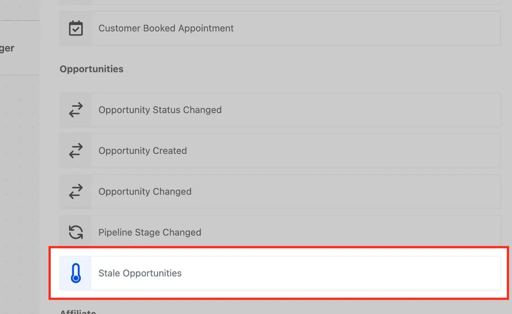
Stale Opportunities trigger. HighLevel Help · Stale Opportunities Workflow Trigger (https://help.gohighlevel.com/support/solutions/articles/155000002492) · Captured 24 Sept 2026
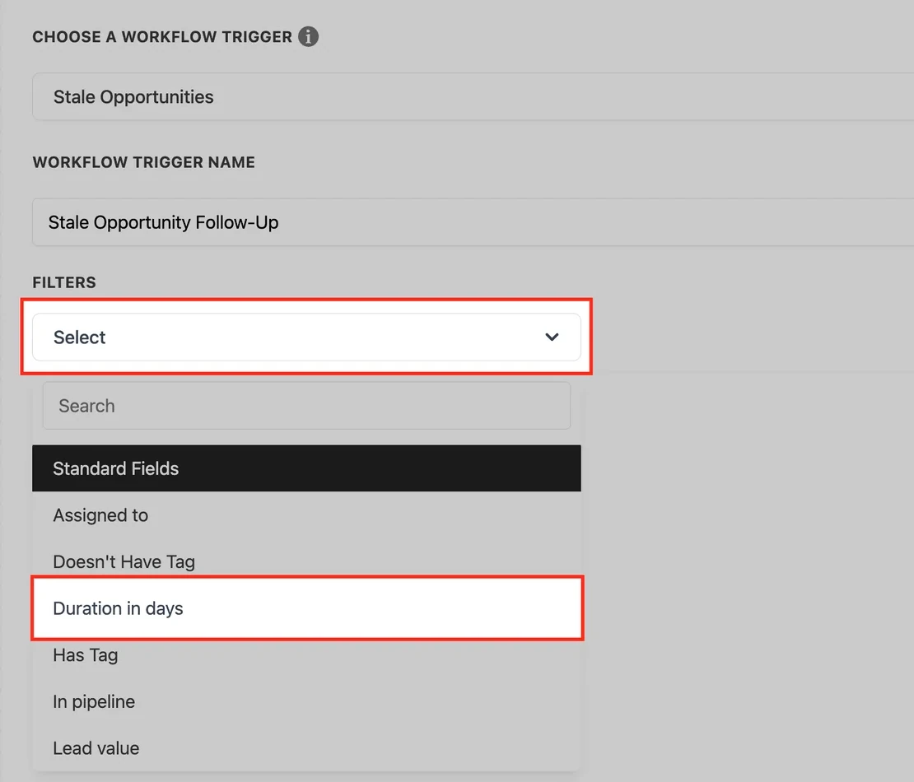
Set Duration in days to 7. HighLevel Help · Stale Opportunities Workflow Trigger (https://help.gohighlevel.com/support/solutions/articles/155000002492) · Captured 24 Sept 2026
Walk a Test Contact Through the Board
The Centre Does This
The centre's test run walks two synthetic test contacts through every timed message, a signed test payment and a test booking, then reports pass or fail per automation.
You Do This
Open the board and check the cards sit where the report says.
Building it by hand instead
Open Opportunities and add a test contact through your real booking link. Watch the card: Eval Call Scheduled, then mark the appointment no-show and see it jump to No Show with the tag and the text sent. Rebook, mark it showed, move it through a proposal, and pay with a test payment. If you had to drag a card at any point, that move still needs its workflow.
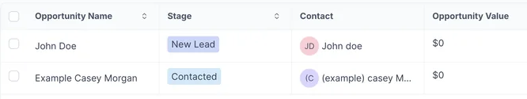
Watch the test card change stage in the list. HighLevel Help · Step-by-Step Guide: Creating Pipelines (https://help.gohighlevel.com/support/solutions/articles/155000001985) · Captured 24 Sept 2026
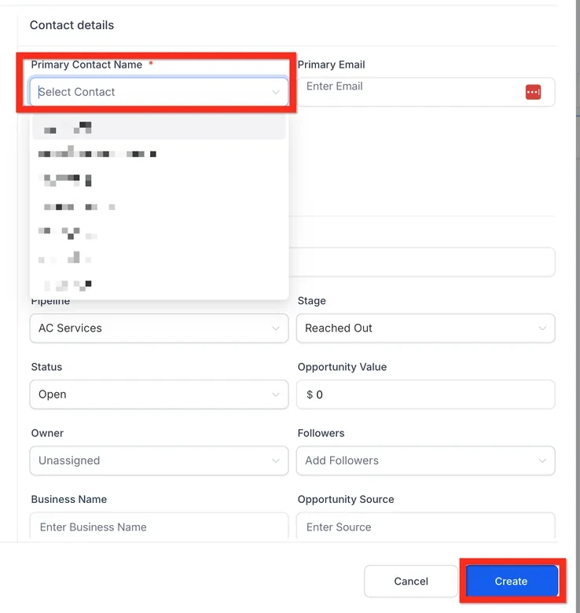
Or add a test opportunity by hand to check the fields. HighLevel Help · Getting Started: Setup Pipelines and Opportunities (https://help.gohighlevel.com/support/solutions/articles/155000005062) · Captured 24 Sept 2026
Examples From the Template Library
Build specs (no real example yet):Pipeline Fields and Tags · Booked-Call Confirmation and Reminders · Call No-Show Recovery · Proposal Watchdog
You could build twelve stages, fifteen tags and twenty fields by hand. It takes an afternoon, and one typo breaks the sync.
Or you create one private integration, paste its token, and the agent builds all of it in five minutes with the exact names your funnel sends. Let me show you how.
How to Test It
The card turns green with Location "Your Business". If it says it can't open that location, the token was made in another sub-account or at agency level.
Mistakes to Avoid
Making the integration at agency level. Its token can't open the sub-account.
Skipping workflows.readonly. The Day 2 check then can't read your workflows and asks you to add it.
Ticking delete scopes "just in case". The agent never needs them, and a narrow token limits what a leak could do.
What Good Looks Like
Use a clean sub-account, so test contacts and workflows never mix with anything live.
Grant only the listed scopes. The agent never needs delete rights, and a narrow token limits what a leak could do.
Keep the stage and tag names exactly as created: every workflow and report matches on the text.
Tags and Events Move Deals
One small workflow per move. Customer Booked Appointment creates or updates the opportunity at Eval Call Scheduled. Appointment Status Showed moves it to Sales Call Held. Tag purchased added moves it to Payment Completed. Turn on Allow Opportunity to Move, or the card stays where it is.
The agent can create your contact properties and deal stages in HubSpot, so every funnel contact arrives with its source and stage.
HubSpot stays a separate list nobody updates, and sales sees contacts without the UTM source or stage that explains them.
How It Works
What the Agent Does
Creates RevOps tags, RevOps stage and seven funnel properties on your contacts.
Creates an 11-stage deal pipeline where your HubSpot plan allows a second pipeline.
On one-pipeline plans, keeps each contact's stage in the RevOps stage property instead.
Upserts each contact by email and moves its deal as the stage changes.
What the Agent Does With This Access
Creates your contact properties and, where your plan allows, an 11-stage deal pipeline, then copies every registration, tag, booking and payment from your funnel into HubSpot. It never deletes anything.
What You Do
Create the service key with exactly the eight scopes listed.
Decide whether your HubSpot plan is worth upgrading for a separate deal pipeline.
Open Settings → Integrations → Service Keys, create a service key and name it RevOps Workshop. (HubSpot stopped new legacy private apps for accounts made since 28 September 2026, and for every account on 26 October 2026; a legacy app token you already have still works.)
Add these scopes: crm.objects.contacts.read and .write, crm.objects.deals.read and .write, crm.schemas.contacts.read and .write, crm.schemas.deals.read and .write.
Copy the key and paste it below.
Done When
Connected. The agent can build your pipeline and sync every contact.
Watch how to connect HubSpot0:53
Which Plan
Any HubSpot plan can make a service key. A separate deal pipeline needs Starter or above (free tools allow no custom pipelines); on free, the agent keeps the stage in a contact property.
Permissions to Grant
crm.objects.contacts.read and crm.objects.contacts.write
crm.objects.deals.read and crm.objects.deals.write
crm.schemas.contacts.read and crm.schemas.contacts.write
crm.schemas.deals.read and crm.schemas.deals.write
Where the Key Appears
Settings, Integrations, Service Keys, then create a key. After Create, open the key, click Show, then Copy. You can show it again later.
Common Errors
You can't see Service keys
Only super admins and users with Developer tools access can create them. Ask a super admin for the permission.
The second pipeline is refused
Free tools allow no custom pipelines. Upgrade to Starter or above, or let the agent keep the stage in the RevOps stage property.
429 Too many requests
Free and Starter allow 100 calls per 10 seconds. Wait a moment and click Connect again.
The key may have leaked
Open the key, click Rotate, then Rotate and expire now, and paste the new key.
What Good Looks Like
Scope the key to contacts, deals and contact schemas only. It has no reason to read anything else.
On a plan with one pipeline, a property for the stage keeps your existing sales pipeline untouched.
Contacts match on email, so the same person never appears twice when they register again.
When the Plan Allows One Pipeline
If HubSpot refuses a second pipeline, the agent reports that your plan allows one pipeline and keeps each contact's stage in the RevOps stage property instead. Your tags travel in the RevOps tags property either way.
cloud/src/jobs-stack.ts
Common Mistakes
Creating the key in a sandbox or test portal, so the real portal never receives a contact.
Adding broad scopes for convenience, which widens what a leaked key could reach.
The agent can schedule your approved Day 2 posts, with their images, to the social profiles you pick, weeks ahead.
Posts go out one at a time, on the day, by hand, which is how a social channel quietly stops.
How It Works
What the Agent Does
Checks the token, userId and blogId together before saving them.
On Day 2, schedules up to 12 approved posts, Monday, Wednesday and Friday at 09:30.
Attaches each post's image when one was made, and skips posts already scheduled.
What the Agent Does With This Access
Schedules the posts you approve on Day 2 to the profiles you pick, with their images. It never posts anything you didn't approve, and never touches your inbox or ads.
What You Do
Decide whether the Advanced plan is worth it for scheduling by API.
Connect each social profile inside Metricool yourself; each network needs your login.
The API needs Metricool's Advanced plan. Connect each social profile you'll post to inside Metricool (LinkedIn, Facebook, Instagram, X).
Open Account settings → API and copy your token.
Open your brand's dashboard: the numbers after userId= and blogId= in the address are the two IDs below.
Done When
Connected. The agent can schedule your posts.
Watch how to connect Metricool0:57
Which Plan
The API needs Metricool's Advanced or Custom plan. Free and Starter have no API access.
Permissions to Grant
One token for the whole account, with no scopes. The agent only posts what you approve, to the brand you name.
Where the Key Appears
Menu at the top right, Account settings, API tab, Copy. The userId and blogId are the numbers in the address bar when you open your brand.
Common Errors
Access denied
The token was copied wrong, or the blogId belongs to another account. Copy both again from your own brand.
The request must include blogId and userId
One of the two numbers is missing. Open your brand and read both from the address bar.
A post goes out without its image
The image link was private or expired. The agent uploads its own images, so this only happens with links you add.
What Good Looks Like
Connect only the profiles you will really post to. The agent posts to the networks you pick on Day 2.
Use the brand dashboard for this funnel's brand: the blogId decides where every post lands.
Batch before the week starts. Scheduled posts can still be edited until they go out.
The Schedule the Agent Uses
Three posts a week, on Monday, Wednesday and Friday, at 09:30 in your time zone, starting on the first day you pick. Up to 12 approved posts. A retry finds a post already scheduled and leaves it alone.
cloud/src/jobs-stack.ts
Common Mistakes
Copying the userId and blogId from a different brand's dashboard, so posts land on the wrong profiles.
Expecting the API on Free or Starter: only Advanced and Custom include it.
Each approved Day 2 post gets its own on-brand image, made from your brand colours and imagery style, ready for scheduling.
Posts go out as plain text, or you design every image by hand after the copy is already approved.
How It Works
What the Agent Does
Writes one image prompt per approved post from your brand name, colours and imagery style.
Asks for square images with no words in them.
Keeps a copy of each image, because Kie.ai's own link expires within a day.
Posts without an image if one fails, rather than holding the schedule.
What the Agent Does With This Access
Makes one image per approved post and ad from its image brief and your brand colours, and keeps a copy for scheduling. It spends only on images you approve.
What You Do
Add credits to Kie.ai and decide how much to keep there.
Approve the posts on Day 2; only approved posts get images.
Create a Kie.ai account and add credits (a GPT Image 2 image costs $0.03 to $0.08).
Open kie.ai/api-key, create a key and copy it.
Done When
Connected. The agent can make your post and ad images.
Watch how to connect Kie.ai0:40
Which Plan
No plan: Kie sells credits, and each image or text call uses some. Top up under Billing before you connect.
Permissions to Grant
Keys have no scopes, but each one can be limited: set Allowed Models to the models you use, a Safe-Spend limit, and an IP whitelist if you have one.
Where the Key Appears
kie.ai/api-key, Create New Key. Copy the key from the table and paste it into your card.
Common Errors
401: You do not have access permissions
The key was copied wrong or the IP whitelist blocks the centre. Copy it again or clear the whitelist.
402: Insufficient credits
Top up under Billing. The card shows your balance once connected.
429: Rate limited
More than 20 new requests in 10 seconds. Rejected requests aren't queued, so wait a moment and send them again.
What Good Looks Like
Fill the brand card's colours and imagery style first: they are the only brand input the image prompt reads.
Keep credits modest. The agent spends only on images for posts you approve.
Images carry no words, so your copy does the selling and nothing is misspelled in a picture.
What the Image Prompt Says
A clean social media image for your brand, in your brand colours and your imagery style. It illustrates the post, with no words in the image. Square, one per post. The finished image is copied and served from a signed address, because Kie.ai's link expires within a day.
cloud/src/jobs-stack.ts
Common Mistakes
Leaving the brand colours blank, so every image comes back in generic colours.
Turning on an IP whitelist for the key, which blocks the agent's requests.
Reminder texts go out from a compliant sender in your own Twilio account, only to people who opted in.
The SMS touches before your session never send, and registrants rely on email alone to remember to show up.
How It Works
What the Agent Does
Creates a Messaging Service whose replies come back to your funnel.
In the US or Canada, buys a toll-free number and submits its verification; elsewhere, files the regulatory bundle and buys the number with it.
Checks the balance is at least $20 first.
Texts only contacts who ticked SMS consent, with STOP wording in every message.
What the Agent Does With This Access
Buys one number for reminders, submits its compliance verification with the details you approve, and sends reminders only to people who ticked the SMS box on your form. STOP replies unsubscribe them everywhere. WhatsApp is not Twilio's job: it runs on Tantra.
What You Do
Upgrade from trial and fund the balance; only you can add money.
Approve the business details Twilio's verification asks for.
Create a Twilio account, upgrade it from trial and add at least $20 of balance (a number and its verification fit inside it). The agent checks the balance before it buys anything.
Open Account → API keys & tokens (Twilio may first email you a verification code; enter it to open the page), click Create API key, choose Standard, and copy its SID (starts SK) and secret (Twilio shows it once).
Copy your Account SID (starts AC) from the Console home page.
Done When
Connected. The agent can set up your SMS sender.
Watch how to connect Twilio1:07
Which Plan
Upgrade from the trial and add balance first. A trial can only text up to 5 verified numbers in your own country, and toll-free verification needs a paid account.
Permissions to Grant
A Standard API key: every resource except managing accounts and other keys. Never paste your Auth Token or a Main key.
Where the Key Appears
Account, API keys and tokens, Create API key, Key type Standard. Twilio may ask for a code it emails you before it opens the page. Twilio shows the secret once; the Account SID is on the same page under Live credentials.
Common Errors
20003 Authenticate
The SID and secret don't match, the key was deleted, or it was made in another region. Create a new key in your account's region.
21608: the number is unverified
The account is still on the trial. Upgrade it, then try again.
30032: toll-free number not verified
Texts from a toll-free number wait for Twilio's verification, usually 3 to 5 business days. The agent submits it for you.
What Good Looks Like
Upgrade before anything else. A trial account can only message numbers you have verified yourself.
A Standard API key is enough. Never paste your Auth Token or a Main key.
Start now: toll-free verification is reviewed by people and takes business days, not minutes.
Why the US Route Takes Days
For the US and Canada, the agent buys a toll-free number and submits a Toll-Free Verification. Twilio reviews it in 3 to 5 business days, and unverified toll-free traffic is blocked. Elsewhere, it files a regulatory bundle, waits for Twilio to approve it and buys the number with it.
cloud/src/jobs-twilio.ts
Common Mistakes
Planning SMS to India through Twilio: it needs DLT registration Twilio cannot do. Use WhatsApp through Tantra instead.
Losing the API key secret. Twilio shows it once; create a new key if it is gone.
D0·3510 min
Connect WhatsApp in Tantra
Why It Matters
Your WhatsApp reminders and twins run on Tantra campaigns, so Tantra needs your WhatsApp. Linking a phone number to WhatsApp is a scan on your own phone, so it stays a click for you.
Your WhatsApp is connected and running in Tantra, so reminders and twins reach people on WhatsApp as well as by email.
Without a WhatsApp account in Tantra, the WhatsApp touches before your session never send and registrants rely on email alone.
How It Works
What the Agent Does
Checks Tantra for a WhatsApp account that is running and synced before this card ticks.
On Day 2, makes one WhatsApp campaign per reminder next to its email campaign, and starts it.
Adds each registrant who ticked the WhatsApp box to the right campaign the moment a message is due, and ends WhatsApp reminders when they reply STOP.
What You Do
Scan the code Tantra shows with the WhatsApp app on your phone.
Check here once it shows running.
Every Step
In Tantra open Channels and connect WhatsApp: scan the code with the WhatsApp app on the phone whose number your buyers should hear from.
Let it sync (a few minutes). When it shows running, check here.
Done When
Your WhatsApp is connected and running in Tantra.
What Good Looks Like
Use the number your buyers should hear from; people reply to it.
Let the first sync finish before you check.
Only people who ticked the WhatsApp box on your form are messaged, and a STOP reply ends it.
Why WhatsApp Lives in Tantra
The same Tantra campaign that sends a reminder email sends its WhatsApp version, to the people who opted in. There is no second sender to register and nothing to submit for review on your side.
cloud/src/jobs-tantra.ts
Common Mistakes
Checking while the account is still syncing.
Linking a number you cannot keep: reminders and replies run through it.
Reminders and follow-ups send from your own verified main domain, and the agent ends up holding a key that can only send from it.
Registrants get no confirmation or reminders, or get them from an unverified domain that lands in spam.
How It Works
What the Agent Does
Adds the domain from your Business card's website to Resend.
Writes Resend's records into your Cloudflare, or lists them if DNS lives elsewhere.
Waits for verification, then swaps the full-access key for a send-only one.
What the Agent Does With This Access
Adds your main domain to Resend, writes its records in Cloudflare, waits for it to verify, then keeps only a send-only key. Reminders and follow-ups send from it.
Open API Keys → Create API Key with Full access, and copy it. The agent uses it once to add your domain, then swaps it for a key that can only send from that domain.
Done When
Connected. The agent set up your sending domain.
Watch how to connect Resend0:51
Which Plan
The free plan sends 3,000 emails a month, up to 100 a day, from up to 3 domains. Pro is $20 a month for 50,000 emails with no daily cap.
Permissions to Grant
Full access, all domains, used once so the agent can add your sending domain.
The agent then creates a Sending access key for that one domain and works from it.
Where the Key Appears
API Keys, Create API key. Resend shows the key once, starting re_.
Common Errors
This API key is restricted to only send emails
A Sending access key was pasted. Create a Full access key for the first connection.
You can only send testing emails to your own address
The domain isn't verified yet. The agent writes the records; verification can take up to 72 hours.
Daily quota exceeded
The free plan stops at 100 emails a day. Upgrade, or spread reminders out.
What Good Looks Like
Send reminders from your main domain: registrants know it. Cold outreach stays on separate outreach domains.
Full access is needed once, to add the domain. After that, a send-only key limits any leak to sending.
Keep your domain's DNS in Cloudflare and the records go in without you touching them.
The Key Swap
Once the domain verifies, the agent creates a key that can only send from that domain and deletes the full-access one in Resend itself. From then on it holds only the send-only key.
cloud/src/jobs.ts
Common Mistakes
Keeping the full-access key alive after the swap, when nothing needs it any more.
Expecting instant verification: Resend can take up to 72 hours to see new records.
Your Google Analytics property is linked to the agent, so registrations by source can sit beside every other number on your dashboard.
Registrations by channel go unmeasured, and next month's decisions run on guessed numbers instead of real ones.
How It Works
What the Agent Does
Checks it can see the property and its website stream.
Proves the website's domain is yours with a DNS record before saving the property.
Writes that proof record itself when the domain is in your Cloudflare.
What the Agent Does With This Access
Sets up your web stream and Measurement ID, accepts Google's user-data terms for server-side events on your behalf, creates the server-side secret, and counts registrations and booked calls as key events, so every channel's numbers reach your dashboard. No key is pasted.
What You Do
Add the service account email as an Editor at account level, under Account access management.
Make sure the property has a web stream for your site.
No Google Analytics yet? Click Open Google Analytics, choose Start measuring, name the account after your business and accept Google's terms. Any property name will do; you can skip the data stream.
Open Admin → Account access management → +, add the email below and choose Editor. Account level lets the agent build the property for you.
Prove the website is yours: add the proof value below as a TXT record named _revops-proof.yourdomain.com where your main domain's DNS lives. If that domain is in the Cloudflare account you connected, the agent adds it for you.
Click Connect. Leave the Property ID empty: the agent finds the property that measures your website, or uses the one you just made.
Done When
Connected. The agent is building your measurement.
Watch how to connect Google Analytics0:56
Which Plan
Google Analytics is free. You need to be an Administrator on the account to add a user.
Permissions to Grant
Add the agent's email from your card at account level, with the Editor role, so it can create the web stream and key events.
Untick Notify new users by email: the agent's address doesn't read mail.
Where the Key Appears
No key to copy. Admin, Account access management, the blue plus, Add users. Your centre card shows the email to add.
Common Errors
Permission denied when you click Connect
The email was added at property level or as Viewer. Add it at account level as Editor.
No property found
Paste the numeric Property ID from Admin, Property details. It is not the ID that starts with G-.
The Add button stays grey
Only an Administrator can add users. Ask whoever owns the account to add the email.
What Good Looks Like
Grant access on the account that holds your funnel's property, so the agent can find it or build it.
There is no key to paste: access is a user you can remove from Account access management any time.
A registration should count as the generate_lead key event, so the Key events column reads registrations by source.
One Row per Channel
For a SaaS company, the cold calendar run and the LinkedIn run sit on separate rows of the dashboard, so cost per trial for each channel is side by side.
workshop-plan/playbook.html
Common Mistakes
Adding the email as Viewer, which lets the agent read but not set anything up.
Using a property with no web stream, which cannot be tied to your domain.
D0·3820 min
See the Three Funnels You Can Build
Why It Matters
You know the three funnel shapes well enough to pick the one that fits how your buyers can be reached, before Day 1 asks you to.
Arrive without this and Day 1's funnel choice becomes a guess, and every page, message and trigger on Day 2 is built on that guess.
How It Works
What You Do
Open all three funnels full size and scroll each one end to end.
Note which shape matches how your buyers can be reached.
Every Step
Open each funnel full size and scroll: the board plays stage by stage. Your funnel is one of these three, and you pick it on Day 1.
Read the four foundations chapters linked below before Day 1. They are the why behind every card here.
Answer the two questions below. They feed Day 1's reach-math prompt so your channels and your funnel shape fit your buyers, not the other way around.
Done When
Seen all three, and the two reach questions are answered.
What Good Looks Like
Every funnel does four jobs: traffic, capture, convert and retain. Only the shape changes.
Pick by reach. Can you list your buyers by name? Do they gather where content finds them? Can they show up three days running?
The numbers in the walk-throughs are teaching models, not client results. Day 3 is where you measure your own.
Three Shapes, Three Reasons
A live session fits when your buyer is list-addressable: you can build a searchable list and invite them by name. A reverse squeeze page fits when they are content-reachable. A challenge fits when they can show up three days running, since a cohort needs repeated attention.
workshop-plan/playbook.html
Common Mistakes
Picking the shape you like watching rather than the one your buyers can reach.
Skipping the foundations chapters, then meeting every Day 1 term for the first time live.
D0·3910 min
Read Your Personal Plan
Why It Matters
You see where your funnel is strong and weak across the six stages, and which day carries most of your build.
You treat all three days as equal and spend limited hours on stages you already have working.
How It Works
What the Agent Does
Writes your plan from your registration answers, without inventing metrics, clients or results.
What You Do
Read it once, end to end, before Day 1.
Note anywhere it marks a stage unknown or misreads your business.
Do the Before Day 1 checklist it gives you.
Every Step
Read your plan: every task from Day 0 to Day 3 for your funnel, in order, with your time and the agent's.
Send the question you most want answered in the Day 1 Q&A.
Done When
Read.
What Good Looks Like
Start with Your Weakest Link: it names the one stage to fix first, and why that one comes before the others.
Check your branch. If buyers close on a page, Days 1 and 3 carry your build; if a person closes, Day 2 does.
Where the plan says unknown, bring the missing numbers to Day 1 rather than guessing them.
What the Plan Contains
Eight sections, in order: What we heard, Your funnel shape, Your six stages (have, partial, missing or unknown), Your weakest link, Your three days, Before Day 1, What you will walk out holding, and What this will not do.
workshop-plan/ops/prompts/course-plan.md
Common Mistakes
Skimming past the Before Day 1 checklist inside the plan.
Letting a vague registration answer stand when the plan says it was vague.
D0·4045 min
Run Your Day 0 Prompts
Why It Matters
Today's cards collected your decisions. These prompts turn them into finished work inside Tantra RevOps OS: your own AI builds each task end to end, one task per session.
Day 0 finished inside Tantra RevOps OS: your answers saved into context/, your setup checked, and a short list of what still waits on you.
Day 1's prompts start from an empty context/, so your AI asks again for everything you already told the centre.
How It Works
What You Do
Run each prompt in its own new session, in the order shown.
When a prompt asks for a key, a click or your approval, do it, then reply "done" in that same session.
Every Step
Open your Tantra RevOps OS project in the assistant you set up on Day 0.
Run the first prompt, Save today's context, in a new session. It writes today's answers into the project, so every later prompt starts from them.
Run every other prompt in its own new session, in order. When one asks for a key, a click or your approval, do it and reply "done" in that session.
Done When
Every prompt ran, and STATUS.md in your project lists today's tasks as done.
You answered a stack of questions today. If those answers stay in the centre, your AI starts Day 1 knowing none of them.
This card moves them into Tantra RevOps OS. You'll do the same thing at the end of every day.
How Every Day Ends
Save today's context. Every answer so far goes into context/answers.json, today's answers in plain words into context/day-0.md, and a short summary of your business into context/business.md.
One prompt per build task. Each names its guide in tasks/, carries that card's answers, saves its work under outputs/, updates STATUS.md and ends with a report: what is done, how it checked it, what waits on you and the next prompt to run.
The wrap. On Day 0 it's Check your setup: every tool your answers say you use, whether its key is set, and where to get each missing one.
Why a New Session for Every Prompt
Long chats drift. By the fourth task, an AI carrying every earlier file and side conversation in one window starts mixing them up: your reminder copy picks up your cold email's tone, and a price from an old draft comes back.
A new session starts clean. It reads the brief, context/ and STATUS.md from disk, then only the guide its prompt names. Everything carries over through files, not chat memory. That's why the first prompt saves your context: it's the handover note between sessions.
When a Prompt Needs You
Some steps only you can do: paste a key into .env, click a verification email, approve a send. The prompt stops and tells you exactly what to do, with the full URL, the page, the field and the button. Do it, then reply "done" in that same session, not a new one.
In a Claude or ChatGPT Project
Your AI can't write files there, so it hands you each one in a code block headed by its path, for example context/answers.json. Add every file to the project's files, replacing older copies, before you run the next prompt. Skip that and the next session works from yesterday.
What Good Looks Like
Save today's context runs first, every day. It writes your answers into context/answers.json and context/day-0.md, so every later session starts from them.
One prompt, one new session. Each task starts clean, reads only context/, STATUS.md and its own guide, and a long chat about one task never bleeds into the next.
In a Claude or ChatGPT project your AI hands you each file instead of writing it. Add those files to the project before the next prompt, or the next session cannot see them.
Approve one action at a time, in your own words. Nothing is sent, launched, bought or deleted until you do, and your words go into context/approvals.md.
Common Mistakes
Running every prompt in one long chat. By the fourth task it mixes up which files belong to which.
Skipping Save today's context, so the next prompts work from what was saved yesterday.
Typing "yes, do everything" as an approval. It approves nothing specific, so your AI asks again.
Day 1
Make the 8 Decisions Every Page, Email and Invite Depends On
Want to know why most funnels fail before a single page is built?
Because nobody decided what they were selling, to whom, or why that person should care. So the landing page says one thing, the emails say another, and the sales call says a third.
Today we fix that. You'll make eight decisions: the offer, how you position it, how strong it is, who you sell to, who's on your list, which funnel you run, when your event is, and which channels you send from.
I'll walk you through each one in order: what it is, why it matters and what good looks like. You carry them out one at a time in your onboarding centre (or through the Day 1 questions), and each one adds a section to the strategy document that Day 2 builds every asset from.
D1·0160 min
Join the Day 1 Session
Why It Matters
You hear every Day 1 decision explained once, live, so the cards you fill build one strategy instead of eight separate guesses.
Cards filled without the session drift apart: the offer, persona and event title stop matching, and every Day 2 page repeats the mismatch.
How It Works
What You Do
Join live, or watch the recording the same day.
Fill each card as the session reaches it, while the reasoning is fresh.
Bring one question to the Q&A.
Every Step
Join live, or watch the recording here afterwards.
After the 45 minutes of teaching, work through the day's cards.
Done When
Joined or watched.
What Good Looks Like
Day 1 is a chain: offer, method, value, persona, list, funnel, event date. Each card reads the answers of the one before it.
Answer in your own words beside the session. AI drafts are better built from your facts than from a blank.
Where you lack evidence, write it down as unknown. Day 3 measures it; a guessed number misleads every later step.
What Day 1 Leaves You With
One strategy with the five blocks Day 2 builds from: the offer, the buyer, the voice, the method and the proof. Plus a clean prospect list, your funnel, the event line, and every channel connected with warm-up running.
workshop-plan/playbook.html
Common Mistakes
Watching passively and filling the cards days later, when the reasoning has gone.
Skipping the offer cards to reach the tool connections, which then target nobody in particular.
D1·025 min
Plan Your Day 1
Why It Matters
Today's list is read in order and the hours to finish it are blocked in your calendar before you start.
Without a plan the day goes to whichever card you open first, and the slow cards (warm-up, approvals, verification) start last.
How It Works
What You Do
Read today's list once, top to bottom.
Block the 5 to 6 hands-on hours in your calendar.
Every Step
Open your plan and read today's list once, top to bottom, before you touch a tool. Most people skip this, then lose an hour to the wrong card.
Day 1 takes 5 to 6 hands-on hours outside the session. Find them in your calendar now and block them.
Start with anything that has a clock on it, like a domain that needs weeks to warm up. Everything else waits.
Done When
Today's list is read and the hours are blocked.
What Good Looks Like
Put the work that has a clock on it first, because waiting time cannot be rushed.
Name one deliverable for the day, not an activity.
Block whole hours, not gaps between meetings.
Common Mistakes
Opening the first card you see and skipping the order the plan gives you.
Planning the day without putting the hours in your calendar.
D1·0325 min
Write the Offer
Why It Matters
One offer sentence a stranger can repeat, with its price, terms and next rung, which every Day 2 page, email and invite repeats.
Every channel carries this sentence. A vague one makes the cold email, the page and the pitch vague, and no channel can fix that later.
How It Works
What the Agent Does
Drafts the six slots, the next rung and the terms from your business answers.
Marks any number it had to assume with [check] for you to confirm.
Joins your six slots into one offer sentence when you mark the card done.
What You Do
Name the buyer narrowly enough that a stranger pictures one company.
Set the price, the guarantee and what is not included.
Test the sentence aloud on someone outside your business.
Every Step
Fill the six slots. They join into your offer sentence below.
Read it aloud to someone outside your business. If they ask a follow-up question, rewrite it.
Place it on your ladder (entry, core or flagship). Name and price the rung above it, built or not.
Under the sentence, list the price, the guarantee, what is included and what is not.
Done When
A stranger repeats it back correctly, and two rungs are named and priced.
The Offer Ladder
Every business needs at least two rungs. Entry gets someone to a first win cheaply. Core is what most buyers take. Flagship is the highest-touch version. Your sentence describes one rung; name the rung above it, so a buyer who wins has somewhere to go next.
Why: every Day 2 page, email and invite repeats this sentence. If a stranger cannot repeat it back, no channel will fix it.
Slot
What goes in it
Example, for a software company
Who
Your buyer, named narrowly
B2B software companies of 11 to 50 staff
Before
Where they are stuck today
Ad hoc demos
After
The outcome, as a number: "ten booked calls a month"
A steady weekly demo calendar
Mechanism
Your method. The tool goes here, never in the outcome
A three-channel invite system
Time
How long until they see it
60 days
Guarantee
Who carries the risk if it fails
We keep working at no charge until you get there
Fill the six slots, then join them into one sentence: I help who go from before to after using mechanism, in time, or guarantee.
Read it aloud to someone outside your business. If they ask a follow-up question, rewrite it.
Place it on your ladder (entry, core or flagship). Name and price the rung above it, built or not.
Under the sentence, list the price, the guarantee, what is included and what is not.
The same sentence for three kinds of business. These are illustrative examples, not real companies or client results:
Software company: "We help B2B software companies of 11 to 50 staff go from ad hoc demos to a steady weekly demo calendar using a three-channel invite system, in 60 days, or we keep working at no charge until you get there."
Consultancy: "We help managing partners of accounting firms go from waiting on referrals to three new retainers a quarter using the Partner Pipeline System, in 90 days, or we keep working at no charge until it runs."
Course business: "We help heads of sales at companies of 50 to 300 staff go from a five-month ramp for every new manager to a nine-week ramp using The Manager Sprint, in one six-week cohort, or anyone who misses a week repeats it in the next cohort free."
ToolYour strategy docTime20 minProofA stranger repeats it back correctly, and two rungs are named and priced
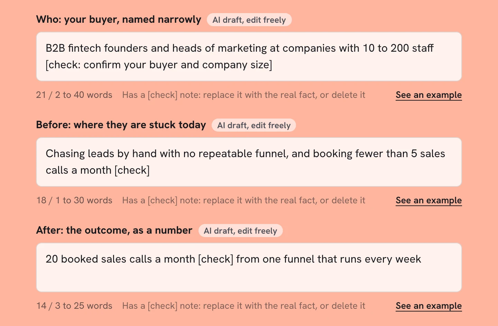
The Write the offer card in your onboarding centre, shown for a demo brand. The AI drafts each slot, and you fix every [check] note.
What Good Looks Like
The tool or software goes in the mechanism slot, never the outcome. Buyers pay for the after state, not the method.
Write the after state as a number with a unit and a period, so Day 3 can count it.
A guarantee says who carries the risk. Promise only what you can afford to honour for every buyer.
Name and price the rung above, built or not. A buyer who wins needs somewhere to climb.
Who: your buyer, named narrowly
Size, industry and role together, so the same words can become list filters. If a stranger cannot picture one company, narrow it.
Before: where they are stuck today
The situation as your buyer would describe it, in their words. It becomes the opening line of your cold email and page.
After: the outcome, as a number
A number with a unit and a period, like booked calls a month. This is exactly what Day 3 measures.
Mechanism: your method. The tool goes here, never in the outcome
The name of how you get them there. Any tool belongs here; the outcome slot stays about their result.
Time: how long until they see it
How long until they see the after state. A shorter honest time beats a longer impressive one, and the value card scores it.
Guarantee: who carries the risk if it fails
Say who carries the risk if it fails. Promise only what you can afford to honour for every buyer.
Where it sits on your ladder
Entry gets a first win cheaply, core is what most buyers take, flagship is highest touch. Pick the rung this sentence sells.
The rung above it, and its price
The next step for a buyer who wins, with a real price, even if it is not built yet. You will need it by Day 3.
The price, the guarantee, what is included and what is not
List what is included and what is not. Exclusions written now stop scope arguments on the sales call later.
The Offer, Joined Up
"We help B2B software companies of 11 to 50 staff go from ad hoc demos to a steady weekly demo calendar using a three-channel invite system, in 60 days, or we keep working at no charge until you get there." A consultancy's version: "We help managing partners of accounting firms go from referral-dependent to 3 new partner retainers a quarter using the Partner Pipeline System, in 90 days, or we keep working at no charge until it runs." A training business's version: "We help heads of sales at B2B companies of 50 to 300 staff go from a 5-month ramp for every new manager to a 9-week ramp using The Manager Sprint, in one 6-week cohort, or anyone who misses a week repeats it in the next cohort free." Every slot is concrete, and the method sits in the mechanism.
workshop-plan/playbook.html
Common Mistakes
A buyer named as a market ("SMBs", "founders") instead of a size, an industry and a role.
An outcome with no number, like "more growth", that no dashboard can count.
Leaving out what is not included, so it surfaces later as an objection on the sales call.
D1·0430 min
Position It With a Named Method and Voice
Why It Matters
A named method with three to five reasoned steps and labelled proof, giving every Day 2 asset one name and a reason to choose you.
An unnamed method sounds like every competitor, so your pages and pitch end up competing on price instead of on your way of working.
How It Works
What the Agent Does
Drafts a method name, its steps with reasons, and why the obvious alternative fails.
Leaves proof empty on purpose: that field only takes results you supply.
What You Do
Pick a name you are happy to say out loud on a call.
Supply every proof item: a number, a name and a date.
Label borrowed proof as borrowed.
Every Step
Name your method in two to four words. List its three to five steps, with one line on why each step is needed.
Write one line on why the obvious alternative (an agency, a tool alone, doing nothing) fails.
List your proof: each result with a number, a name and a date. None yet? Use borrowed proof (third-party research, a public case study, your own before and after) and label it as borrowed. Never invent one.
Done When
The method has named steps and a reason for each.
Why: an unnamed method sounds like every competitor. A named one gives buyers a reason to choose you, and gives Day 2 one name and one voice for every asset.
Name your method in two to four words. List its three to five steps, with one line on why each step is needed.
Write one line on why the obvious alternative (an agency, a tool alone, doing nothing) fails.
Write your voice: three words you sound like, three you never sound like, and the words you always use. Add your brand colours, font and logo file.
List your proof: each result with a number, a name and a date. None yet? Use borrowed proof (third-party research, a public case study, your own before and after) and label it as borrowed. Never invent one.
Example, for a consultancy: "The Partner Pipeline System: map the referral pattern you already have, turn it into one offer, build one repeatable channel, hand the rhythm to the team. Agencies fail because they sell activity, not a channel the firm owns."
ToolYour strategy docTime20 minProofThe method has named steps and a reason for each
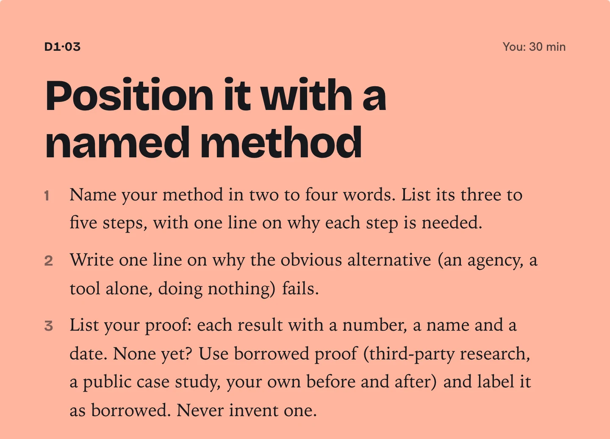
The named method card: name it, say why the obvious alternative fails, then list your proof.
What Good Looks Like
Two to four words that describe what happens, not a slogan. Buyers repeat names that tell them the steps.
Every step carries a because. A step without a reason is one a buyer will ask to skip.
Name the alternative your buyer is weighing (an agency, a tool alone, doing nothing) and say exactly why it fails.
No results yet? Third-party research, a public case study or your own before and after, labelled as borrowed.
Your method: its name, its 3 to 5 steps with a reason each, and why the obvious alternative fails
Name first, then numbered steps with a because each, then one line on why the obvious alternative fails. Follow the example's shape.
Your proof: each result with a number, a name and a date. Borrowed proof is labelled as borrowed
One line per result: the number, who got it and when. Write "borrowed" beside anything that is not your own result.
A Named Method in One Line
For a SaaS company: "The Demo Engine: list, invite, remind, follow up. Ads alone fail because nobody named is invited; here every invite goes to a named buyer." For a consultancy: "The Partner Pipeline System: map the referrals, make one offer, build one channel, hand it to the team. Agencies fail because they sell activity, not a channel the firm owns." Four steps each, then one reason the alternative fails.
workshop-plan/playbook.html
Common Mistakes
A method named after the tool or software it uses, which any competitor with the same tool can copy.
Proof without a number, a name and a date, which a sceptic dismisses in seconds.
Inventing a result to fill the proof field. One claim found out discredits every other line.
D1·0530 min
Set Your Brand Rules
Why It Matters
Every page, email, post and invite the agent writes follows these. Teams that skipped them spent weeks fixing tone, numbers and logos afterwards.
One written set of brand rules (names, voice, colours, claims, legal lines) that every asset the agent writes follows from the first draft.
Without them the agent has to leave gaps in your colours, titles and claims, and Day 2 builds stall until each one is answered.
How It Works
What the Agent Does
Drafts every rule from the guidelines, logos and samples you attach.
Writes [check] wherever your documents are silent, instead of guessing.
Uses your colour, font, logo link and anonymity choice on the pages it builds.
What You Do
Answer every [check] yourself.
Decide who approves numbers and which customers may be named.
Choose whether cold outreach is branded or anonymous.
Every Step
Attach your brand guidelines, logo files and a few pieces that sound right (posts, emails, pages). The agent drafts every answer from them.
Check each answer against what you'd sign off. Where your documents don't say, the draft says [check]: answer it yourself.
One version of each fact: one speaker title, one set of numbers, one call to action.
Done When
Every rule is written once.
What Good Looks Like
One version of each fact. Two speaker titles or two prices across assets is what a sceptical buyer notices first.
Write the voice as opposites: three words you are, three you never are. The never list keeps drafts on tone.
Write the claims rules before anyone writes copy: where each number comes from and who signs it off.
Decide what stays unbranded now. The cold landing page is built from this choice.
Brand, product, method and offer names exactly as written, with any trademark marks
Write each name exactly as it must appear, with capitals and any trademark mark. Every asset copies this spelling.
Your voice: three words you sound like, three you never sound like, the words you always use
Three words you sound like, three you never sound like, and the words you always use. The never list does most of the work.
Colours as hex codes (background, buttons, accent, text), your fonts, and a link to your logo file
Put your button colour first: the first hex code becomes your pages' accent. Name the font, and link the logo as a direct .svg or .png file.
Where your logo goes, and what stays unbranded (cold emails, invites, a cold landing page)
Say where the logo appears and where it must not, such as cold emails, invites and a cold landing page.
Your imagery style (photos, illustration, icons), and whether AI images are allowed
Photos, illustration or icons, and a clear yes or no on AI images, so generated visuals never surprise you.
Words and phrases you never use
List the words and phrases you never want to see, including hype words and competitor terms. Drafts avoid them.
Spelling
Pick the spelling your buyers expect. Mixed spelling on one page reads as careless.
Emoji
Choose where emoji are allowed. WhatsApp and SMS only keeps email and pages formal while short messages stay natural.
Urgency language
Only real dates and deadlines is the safest rule. A fake limit found out once costs trust on every later launch.
Cold outreach and its landing page
Anonymous until they register keeps your brand off cold outreach and its landing page. The agent builds the cold page from this choice.
The speaker: name, one approved title, and a two-line bio
One name, one approved title, one two-line bio. Every invite, page and reminder copies it, so write the version you want repeated.
Your main call to action: the words, and where it goes
The exact words and where the button goes, such as a booking page. One call to action sends every click to the same place.
Claims: who approves numbers, where each comes from, which customers may be named, and whether any guarantee is allowed
Name who approves numbers, the source of each, which customers may be named, and whether a guarantee is allowed.
Legal: the consent line under your forms, links to your terms and privacy policy, and any rules your wording must follow
Paste the exact consent line, your terms and privacy links, and any rules your industry sets. These belong under every form you publish.
A Voice Written as Opposites
For a SaaS company: "Direct, practical, numerate. Never hype, never jargon, never cute." For a consultancy: "Calm, exact, senior. Never salesy, never vague, never trendy." Three words it sounds like, three it never does. Any writer, human or AI, can test a line against both lists in seconds.
app/src/lib/workshop-cards.ts
Common Mistakes
Colours named as words ("navy") instead of hex codes, which a page cannot use exactly.
An empty banned words list, so drafts use the very phrases you dislike.
Allowing a guarantee or a customer name in copy that legal or the customer never approved.
D1·0630 min
Score the Offer on the Value Equation
Why It Matters
No headline saves a weak offer, so fix the weak lever before writing copy.
An offer with its two weakest value levers fixed before any copy is written, so every page and email sells a stronger offer.
Copy written on a weak offer only spreads the weakness: people register, nobody buys, and the page gets blamed for the offer.
How It Works
What the Agent Does
Drafts an honest score for each lever, with one concrete change each.
Rewrites your offer sentence with the two lowest levers fixed, in the same template.
What You Do
Score as hard as a sceptical buyer would.
Keep only the changes you can actually deliver, then make them.
Every Step
Score each of the four levers out of 10, honestly.
Write one change next to each: a number and deadline for the outcome, proof a sceptic sees in ten seconds, a week-one win, one step you do for the buyer.
Make the changes to your two lowest scores, then update your offer slots.
Done When
Every lever has a written change, and the two lowest are made.
The Value Equation
Value = (dream outcome × perceived likelihood) ÷ (time delay × effort and sacrifice).
Raise the top: a bigger, more specific outcome, and proof a sceptic sees in ten seconds. Shrink the bottom: a first win in week one, and steps you do for the buyer.
Why: value is dream outcome times perceived likelihood, divided by time delay times effort. This is Alex Hormozi's value equation from $100M Offers; Hormozi sold a majority stake in his portfolio of companies, including Gym Launch, and now runs the investment firm Acquisition.com. No headline saves a weak offer, so fix the weak lever before writing copy.
Pressure-test the value, then stack the offer
Top half: score the offer. Bottom half: the sentence you wrote in Step 1, rebuilt with the changes.
Score each of the four levers out of 10, honestly.
Write one change next to each: a number and deadline for the outcome, proof a sceptic sees in ten seconds, a week-one win, one step you do for the buyer.
Make the changes to your two lowest scores, then update your Step 1 sentence.
Example, for a course business: perceived likelihood scores 4 out of 10 because buyers have paid for training their managers never finished. The change: "attendance tracked every week, and anyone who misses a week repeats it in the next cohort free."
Example, for a software company: time delay scores 3 out of 10 because setup takes six weeks. The change: "first campaign live in week one, and we do the setup."
ToolYour strategy docTime30 minProofEvery lever has a written change, and the two lowest are made
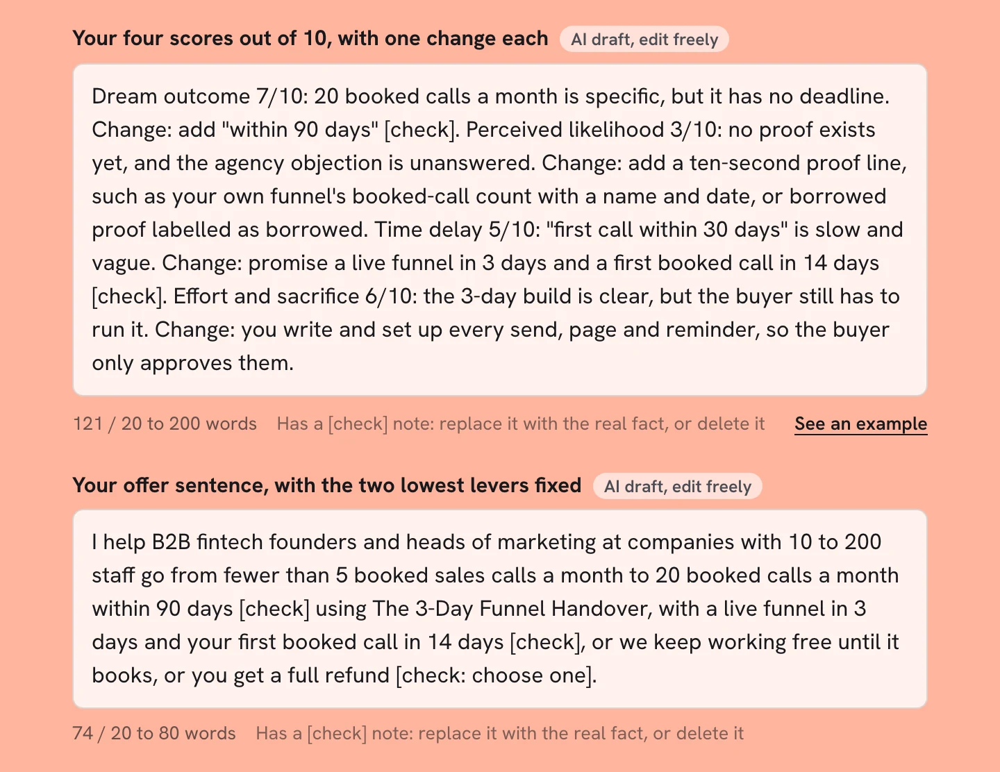
The value equation card, shown for a demo brand: four scores, one change each, then the offer sentence with the two lowest levers fixed.
What Good Looks Like
Push the bottom of the equation. Removing time and effort is harder to copy than a bigger promise.
Shrink time delay with a win inside week one, even a small one the buyer can see.
Cut effort by doing one step for the buyer that they currently do themselves.
Raise likelihood with proof a sceptic sees in ten seconds, not a longer list of testimonials.
Your four scores out of 10, with one change each
Lever, score, then the change, for all four. The lowest scores are the useful ones, so be as hard on yourself as a buyer would.
Your offer sentence, with the two lowest levers fixed
Same template as your offer card, with both fixes inside the sentence. Update the offer card to match, so Day 2 builds this version.
Fixing Time Delay First
For a SaaS company, time delay scores 3 out of 10 because setup takes six weeks. The change: "first campaign live in week one, and we do the setup." One change moves two levers at once: time delay and effort. A consultancy makes the same move with "first channel live in 30 days, and we run the first month."
workshop-plan/playbook.html
Common Mistakes
Scoring every lever high, which leaves nothing to fix.
Fixing only the top: bigger promises and more testimonials while setup still takes weeks.
Writing the changes but never updating the offer card, so Day 2 builds the old offer.
D1·0745 min
Define the Buyer Persona
Why It Matters
Fields 1 to 5 are the filters the agent types into your data tool. Fields 5 to 9 are who your copy speaks to. Field 10 says when to reach them.
A persona traced to real customers: the filters your list is built from, the person your copy speaks to, and the trigger that times it.
A guessed persona builds a list of the wrong people, and every later step then works perfectly on buyers who never buy.
How It Works
What the Agent Does
Drafts the ten fields and exclusions from your answers, marking assumptions [check].
Turns role, geography, headcount and industry into search filters for your list.
Drops anyone whose title or company contains one of your exclusion words.
What You Do
Put your best customers in a sheet and find what over half share.
Quote the deal-killing objection word for word.
Write at least three exclusions from your worst customers.
Every Step
List your 20 best customers (by revenue, retention and ease to serve) in a sheet. Fewer? Use them all. None yet? Use your 10 best sales conversations and mark each value "assumed".
Fill fields 1 to 4: any value shared by more than half of them goes into the persona.
Fill fields 5 to 10 from real conversations. Quote the objection that kills your deals word for word.
Write down what your worst five customers share. Those are your exclusions. Write at least three.
Done When
Every value traced to a real customer, the objection quoted, three exclusions written.
Why: the account (fields 1 to 4) plus the role (field 5) is what you type into a data vendor in Step 5. The person (fields 5 to 9) is who your copy speaks to. The trigger (field 10) says when to reach them.
From a whole market to one winnable account, then to one person
Both halves or neither. The account tells you where to find them; the person tells you what to say.
#
Field
What good looks like
Where it comes from
1
Headcount band
"11 to 50 employees", not "SMB"
Your customer list
2
Revenue band
The floor below which they cannot afford the outcome
Enrichment data, their site
3
Industry
One to three industries
Your best 20 customers
4
Geography
Where you can deliver and get paid
Your last 20 deals
5
Role and seniority
Someone who can say yes alone
Who signed your won deals
6
Their goal
The number they are measured on, in their words
Customer conversations
7
Their challenge
What blocks that number now
Customer conversations
8
Where they get information
Named publications, communities, people
Ask them
9
Buying process
Who else signs, cycle length, the objection that kills deals
Your lost deals
10
The trigger
The event that makes it urgent this quarter
Funding, a new hire, a launch, a rule change
List your 20 best customers (by revenue, retention and ease to serve) in a sheet. Fewer? Use them all. None yet? Use your 10 best sales conversations and mark each value "assumed".
Fill fields 1 to 4 for each. Any value shared by more than half of them goes into the persona.
Fill fields 5 to 10 from real conversations. Quote the objection that kills your deals word for word.
Write down what your worst five customers share. Those are your exclusions. Write at least three.
No recent conversations? Tonight, ask five customers: "What number are you personally judged on this quarter, and what's in the way?"
Example, for a software company: 11 to 50 staff, B2B software, US and UK, head of sales, judged on pipeline created. The objection: "We tried outbound and it burned our domain."
Example, for a consultancy: 25 to 120 staff, accounting and law firms, UK, managing partner, judged on new fees billed. The objection: "Our work comes from referrals. Marketing doesn't work for firms like ours."
ToolSheet or CRMTime60 minProofEvery value traced to a real customer, the objection quoted, three exclusions written
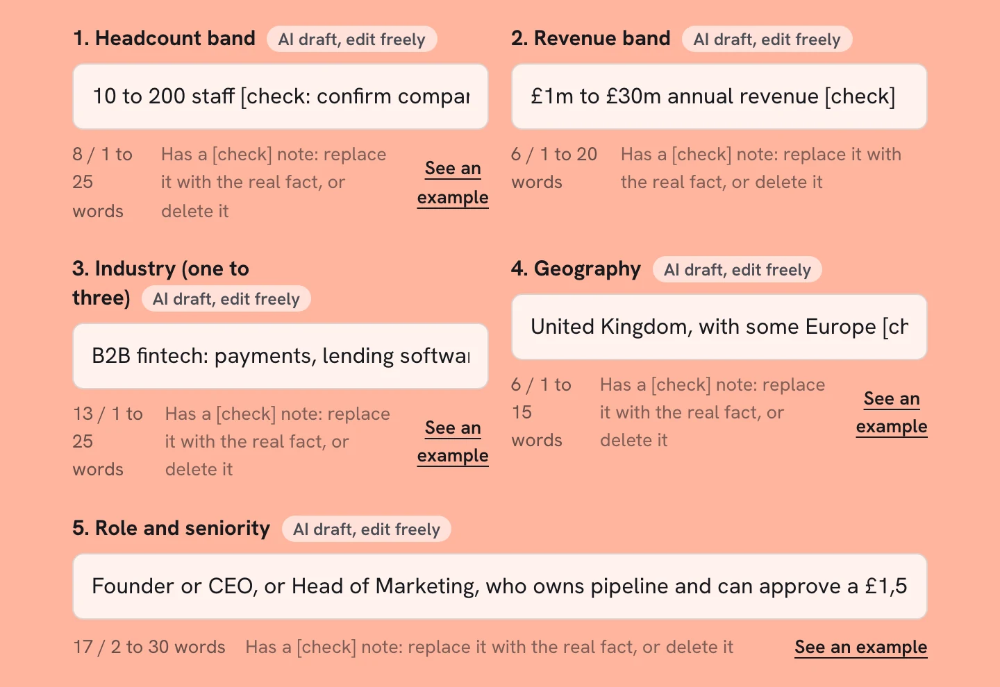
The buyer persona card, shown for a demo brand. Fields 1 to 5 are the filters your data tool uses.
What Good Looks Like
Use bands, not labels: "11 to 50 employees" is a filter, "SMB" is not.
The role is someone who can say yes alone. A champion who needs a committee slows every deal.
Get goal and challenge in the buyer's words: what number are they judged on this quarter, and what is in the way?
The trigger is an event you can see from outside (funding, a hire, a launch, a rule change). It says who to reach first.
1. Headcount band
Write a range as "11 to 50". The agent turns that exact pattern into the headcount filter; "SMB" or "mid-size" filters nothing.
2. Revenue band
The floor below which they cannot afford your outcome. Take it from enrichment data or their site, not a guess.
3. Industry (one to three)
One to three industries, separated by commas. They become search keywords, so use the words companies use about themselves.
4. Geography
Places you can deliver to and get paid in, separated by commas. Country names, or US and UK, become the location filter.
5. Role and seniority
Job titles separated by commas, as people write them on LinkedIn. They become the title filter, so include variants like Head of Sales, VP Sales.
6. Their goal: the number they are measured on, in their words
The one number they are judged on, in their words. Copy that echoes it reads as written for them.
7. Their challenge: what blocks that number now
What stops that number moving today. It becomes the before state your page and session open on.
8. Where they get information: named publications, communities, people
Named publications, communities and people, not just "LinkedIn". This tells you where content and ads go later.
9. Buying process: who else signs, cycle length, and the objection that kills deals, word for word
Who else signs, how long it takes, and the objection exactly as said. Your session and follow-ups must answer that sentence.
10. The trigger: the event that makes it urgent this quarter
An event you can observe from outside: funding, a hire, a launch, a rule change. It tells you who to contact first.
Exclusions: what your worst five customers share (at least three)
Words found in job titles or company names, comma separated, three letters or more. Anyone whose title or company contains one is dropped from your list.
A Persona in One Line
For a SaaS company: 11 to 50 staff, B2B software, US and UK, head of sales, judged on pipeline created. The objection: "We tried outbound and it burned our domain." For a consultancy: 25 to 120 staff, accounting and law firms, UK, managing partner, judged on new fees billed. The account fields tell you where to find them; the person fields tell you what to say.
workshop-plan/playbook.html
Common Mistakes
Describing the customer you want instead of the ones you have.
Paraphrasing the objection. The exact sentence is what your page and session must answer.
Skipping exclusions, so the list fills with companies too small, too big or out of reach.
D1·0810 min
Size the Prospect List
Why It Matters
The number of people you must invite to reach your revenue target, or the one rate you must measure first to know it.
Without it you buy a list by budget instead of by target, and learn weeks later that the funnel could never reach the number.
How It Works
What the Agent Does
Divides your target by your price to give the buyers you need.
Divides by each rate you evidence to give the people to invite.
Uses the answer to size the list it builds for you.
What You Do
Enter only rates you can evidence from your own numbers.
Change the price, offer or funnel if the invite count is absurd.
Every Step
Enter your monthly revenue target and your offer's price. That gives the buyers you need.
Enter each rate you can evidence (purchase, show-up, registration). The agent works the funnel equations backwards, stage by stage and channel by channel, to the number of people to invite. No evidence? Leave it blank: it reads "unknown, will measure". Never borrow a benchmark.
If the number of people to invite is absurd, change the price, the offer or the funnel now.
Done When
You know how many people to invite, or which rate you will measure first.
What Good Looks Like
Work backwards from revenue: target over price gives buyers, and each evidenced rate turns buyers into people to invite.
Leave a rate blank rather than borrow one. Blank reads "unknown, will measure"; a borrowed benchmark is a confident wrong answer.
An absurd invite count is a message about the offer, not the list. Fix price or rung before buying data.
Monthly revenue target
Revenue per month you want from this funnel alone, not from the whole business.
Offer price
The price of the offer this funnel sells, from your offer card. An entry rung needs far more buyers than a flagship.
Purchase rate you can evidence, %
Of people who heard your offer on a call or live session, the share who bought. Only from your own records.
Show-up rate you can evidence, %
Of people who registered for a past event of yours, the share who turned up. Blank if you have never run one.
Registration rate you can evidence, %
Of people you invited before, the share who registered. Blank is honest; Day 3 measures it.
From Target to Buyers
With the card's placeholder target of 50,000 a month and a price of 4,000, you need 13 buyers. Each rate you can evidence turns that into an invite count. Each blank rate becomes the first thing you measure.
app/src/lib/workshop-cards.ts
Common Mistakes
Copying an industry conversion rate from a blog post into a rate field.
Keeping a target the price can never reach, then buying the list anyway.
D1·0910 min
Pick Where Your List Comes From
Why It Matters
One data source chosen, with outreach rules checked, so the agent knows where prospects come from and who to leave out.
The wrong database misses your persona, and an unchecked country or forgotten customer domain means invites that break rules or reach clients.
How It Works
What the Agent Does
Cleans and deduplicates the CSV you upload, whether you exported it or our data partners sent it.
Removes the countries and customer domains you list here.
What You Do
Pick the database that matches how your buyers are defined.
Check cold outreach rules in each buyer country.
List your customers' email domains.
Every Step
Pick one source. Buy a list through our data partners, who pull the rows for you. Anything else, you export a CSV and the agent cleans it.
Check the rules on cold outreach in your buyers' countries (for example GDPR in the EU and UK) before anything sends.
Done When
Database picked and outreach rules checked.
Which Database to Use
- Our data partners: they pull the rows from contact databases such as ZoomInfo for you and quote before anything is bought. Use it when you have no database account of your own.
- ZoomInfo: a large company and contact database with buying-intent signals. Mid-market or enterprise buyers, and a larger budget.
- Clay: combines many data providers; adds funding, hiring and tech stack; tries several sources per email. Use it when you need the trigger (field 10), or better email coverage.
Prices change often. Check each vendor's pricing page before you buy.
Why: Day 2's invites go to named people with working contact details. Bad addresses bounce and damage the sending domains from Step 8.
Tool
What it is for
Use it when
Our data partners
Pull the rows from contact databases such as ZoomInfo for you and quote before anything is bought
You have no database account of your own
ZoomInfo
Large company and contact database with buying-intent signals
Mid-market or enterprise buyers, and a larger budget
Clay
Combines many data providers; adds funding, hiring and tech stack; tries several sources per email
You need the trigger (field 10), or better email coverage
Free list checks
Remove duplicates, catch malformed emails and confirm each email matches the company domain
Always, before any cold email. The list arrives already verified by the vendor, so you never pay for a verifier
Prices change often. Check each vendor's pricing page before you buy.
Size the list first, working the funnel equations backwards: monthly revenue target divided by offer price is the customers you need. Divide by each pipeline rate to get booked calls, then by each conversion, show-up and registration rate you can evidence, then by each channel's delivery, reply and click rates, to get the number of people to invite per channel (The Funnel Equations). No evidence for a rate? Write "unknown, will measure"; never borrow a benchmark. If the number is absurd, change the price, offer or funnel now.
Pick one database. Enter persona fields 1 to 5 as filters and your exclusions as negative filters.
Export a first list of a few hundred to 1,000 people into a sheet: first name, last name, title, company, website, email, LinkedIn URL, country.
Remove duplicates by email, your existing customers, and anyone who matches an exclusion.
Check every email is well formed and matches the company's domain. Drop the ones that fail. The vendor verified the list before delivery, so there is no paid check.
Check the rules on cold outreach in your buyers' countries (for example GDPR in the EU and UK) before anything sends.
Example, for a consultancy: titles "Managing Partner" and "Partner", 25 to 120 employees, Accounting, United Kingdom. Export, remove existing clients, run the free checks, save as the Day 2 invite list.
ToolOur data partners or your own database, a sheetTime60 minProofA sheet of named people, deduped, every email well formed and on the company domain
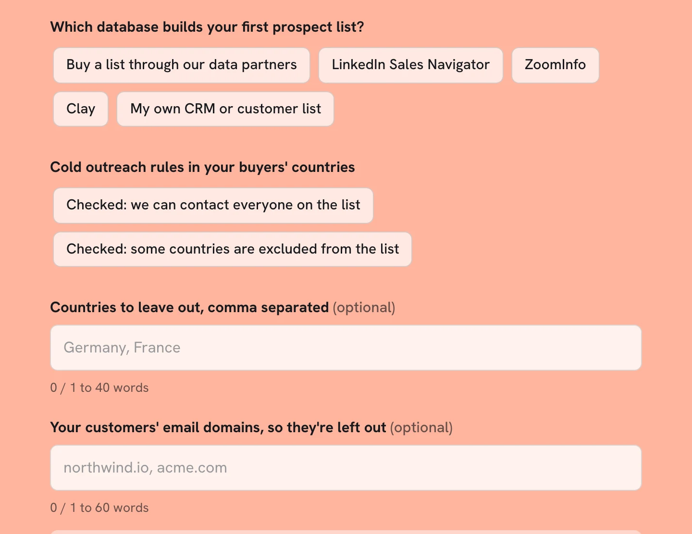
The list source card: one database, the outreach rules checked, and who to leave out.
What Good Looks Like
Pick by what defines your buyer: title and size suit ZoomInfo or our data partners, a recent trigger suits Clay.
Every row needs a work email and a LinkedIn URL, so the same list feeds Tantra email and Tantra LinkedIn.
When a country's rules are unclear, leave it out of this first list and add it once checked.
Which database builds your first prospect list?
Choose by what defines your buyer. Buying through our data partners needs no export of your own; any other source means exporting a CSV for the agent to clean.
Cold outreach rules in your buyers' countries
Check the rules for every country in your persona's geography. If one is unclear, exclude it for now and add it once checked.
Countries to leave out, comma separated
Country names as your list data writes them, comma separated. People in those countries are removed from the list.
Your customers' email domains, so they're left out
Every domain your customers email from, comma separated. Anyone at those domains, or their subdomains, is removed.
A First List
For a SaaS company: titles "Head of Sales" and "VP Sales", 11 to 50 employees, Computer Software, United States. Export, remove customers, and save it as the Day 2 invite list.
workshop-plan/playbook.html
Common Mistakes
Picking the biggest database instead of the one that holds your persona's work emails.
Forgetting your customers' domains, so existing clients receive a cold invite.
Sending into the EU or UK before checking the rules there.
D1·103 min
Order Your List From Our Data Partners
Why It Matters
Our data partners buy the prospect list for you, so you need no account on the platform. You say which platform the rows come from, how many you want and which filters to use. The partner team pulls the list, quotes the price before anything is bought, and emails you the rows as a CSV. You upload it, and the agent dedupes it and checks each email's format and company domain, like any CSV. The vendor verified the list before delivery.
Our data partners pull a prospect list from the platform you choose and email you the rows as a CSV to upload, so you need no account on that platform.
Without this the partner team never hears which platform, how many rows or which filters, and the list card waits for a CSV that nobody sends.
How It Works
What the Agent Does
Passes the partner team your name, your email, the platform, the row count and your filters.
Cleans the rows once you upload them, like any CSV: duplicates, your customers, your exclusions and the countries you left out are removed, and every email is checked for format and company domain. The vendor verified the list before delivery.
What You Do
Choose the platform that holds your buyer.
Say how many rows you want, using your invite count as the guide.
Copy the filters from your persona card.
Read the price the partner team quotes before agreeing to anything.
Every Step
Pick the database the rows should come from, or let the partner team choose the best fit for your filters.
Enter how many rows you want. Use the invite count from the Size the prospect list card as your guide.
Write the filters from your buyer persona: titles, industries, company size and countries.
Press Mark done to send this to the partner team. It shares your name, your email and these three answers with them, and nothing else. They quote the price before anything is bought.
The partner team emails you the rows as a CSV. Upload it on the Approve your prospect list card; the agent cleans it there, and you approve the first 25.
Done When
Asked. The partner team will quote you before anything is bought.
What Good Looks Like
Choose by what defines your buyer: titles and company size suit ZoomInfo, a recent trigger suits Clay.
Not sure? Let the partner team pick the database that fits your filters best.
Take the filters straight from your persona, so the rows match the buyer you wrote down.
Which database should the rows come from?
The database the partner team pulls the rows from. Each row comes with a work email and a LinkedIn URL.
How many rows do you want?
How many rows you want. The invite count on the sizing card is your guide; the price is quoted before anything is bought.
Filters: titles, industries, company size and countries
Titles, industries, company size and countries, taken from your persona card. Separate the groups with semicolons.
Common Mistakes
Asking for more rows than your invite count needs, then paying for rows that never get used.
Writing loose filters such as "managers in tech", so the rows miss your persona.
D1·112 min
Approve Your Prospect List
Why It Matters
A list of named people who match your persona, without customers, exclusions or left-out countries, every email checked for format and company domain for Day 2 invites.
Approving without reading the 25 lets one bad filter fill the whole list, spending credits on people who will never buy.
How It Works
What the Agent Does
Builds a first 25 from your filters: deduplicated, excluded and each email checked for format and company domain.
Pauses until you approve those 25.
Then fills the full list the same way, within the approved credit budget.
Never reveals or pays for the same person twice.
What You Do
Read each of the 25: would you invite this person?
Fix the persona or exclusions when a pattern misses.
Approve only when the sample looks like your best customers.
Every Step
Check the first 25 people. They come from your persona filters, deduplicated, without your customers, your exclusions and the countries you left out.
Approve, and the agent builds the full list the same way from the rest of your CSV.
Done When
A list of named people, cleaned and deduplicated.
What Good Looks Like
Judge the 25 against your best customers, not against the filters. Filters can be right and still miss the buyer.
A pattern of misses points at one field: wrong titles mean field 5, wrong companies mean fields 1 to 4.
Add a missed exclusion word before approving. It keeps those people out of the full list.
What a Clean List Leaves Out
Before a list is used, remove do-not-contact, already contacted, past registrants, past responders, bounces and unsubscribes, and anyone out of region. Add the ones that apply to you as exclusions or customer domains before you approve.
app/src/lib/templates/contrib-c.ts
Common Mistakes
Approving on count alone without reading titles and companies.
Fixing bad rows by hand in a sheet instead of fixing the filter that produced them.
D1·123 min
Pick Your Funnel
Why It Matters
The funnel decides which Day 2 build you get and where your hours go. Pick it on what your buyers already believe and who closes the sale, not on what you sell.
The funnel shape your buyers' belief and your closer call for, which sets your event card, your Day 2 build and the hours you book.
A shape picked on taste asks cold buyers for an hour or makes warm buyers wait, and the build hours go to the wrong funnel.
How It Works
What the Agent Does
Updates a recommended funnel as you answer the questions.
Shows the event card and Day 2 build guides for the shape you pick.
What You Do
Answer belief from your buyers' view, not yours.
Write the one answer that decided it.
Book the build hours in your calendar.
Every Step
Answer the questions below. With your ladder rung from the offer card, the recommendation updates as you answer.
Start from your kind of business. Webinar: any B2B business, and the best first funnel if you are new to funnels or still testing your message. Reverse squeeze: you already know which message works and have case studies to prove it. Workshop series (challenge): consulting with heavy knowledge transfer, or education such as training, edtech and courses, where customers must do the work to feel the value.
Then check it against belief, the answer that decides most picks. Buyers who know you and need one idea reframed: a webinar. Buyers who must try it to believe it: a workshop or challenge. Buyers who have never heard of you: a reverse squeeze.
Pick your funnel and write one sentence naming the answer that decided it.
Press Add the build hours to put them in your calendar: one block each weekday for two weeks, sized from your hours answer. Running it takes weekly time on top (our estimates): 8 to 12 h for a webinar, 10 to 15 h during a workshop cohort, 4 to 8 h for a reverse squeeze.
Done When
Funnel and reason written, build hours booked.
Why: the funnel decides which Day 2 guide you build and where your hours go. Pick it on what your buyers already believe and who closes the sale, not on what you sell. Every type in the diagram below is explained, with its own animated funnel, under The Big Picture.
Twenty funnel types, grouped by the job they do
◆ the three shapes we build in depth (reverse squeeze has two variants)hours = our one-time build estimate, not weekly load
The type decides which stage carries the weight, and so where your build hours go.
Answer the five questions in Your Conversion Mechanism at the end of this chapter (belief, ladder rung, who closes, weekly hours, your leaning). It recommends a funnel.
Check it against your kind of business. New to funnels, or still finding the message that lands: a webinar, which suits every B2B business. You already know which messaging works and have case studies to show: a reverse squeeze. Your customers must learn or do something before they feel the value (consulting with heavy knowledge transfer, training, edtech): a workshop series, also called a challenge.
Then check it against belief, the answer that decides most picks. Buyers who know you and need one idea reframed: a webinar. Buyers who must try it to believe it: a workshop series. Buyers who have never heard of you: a reverse squeeze.
Write one sentence naming your funnel and the answer that decided it. Give the same answer to "Which funnel are you building?" in today's questions, so Day 2 opens on your guide.
Book the build hours in your calendar. The diagram's hours are one-time build estimates. Running it takes weekly time on top (our estimates): 8 to 12 h for a webinar, 10 to 15 h during a workshop cohort, 4 to 8 h for a reverse squeeze.
Example, for a software company: buyers know the category but not the method, and a person closes on a demo call. It picks the webinar: "They need one idea reframed, and a person closes."
Example, for a course business: managers must try the method before their boss buys a team pack. It picks the workshop series: "They need to feel it work before they pay."
ToolThe diagram and the mechanism pickerTime15 minProofFunnel and reason written, build hours booked
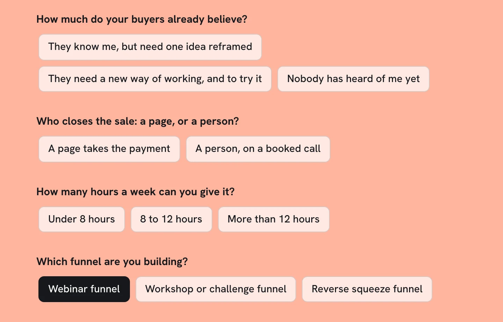
The Pick your funnel card. Your answers decide the funnel. Here it's a webinar.
What Good Looks Like
If a person closes on a call, the funnel's job is booking calls; if a page closes, the page must carry every objection.
Match the weekly running load to your real calendar. A funnel you cannot run every week loses to a simpler one you can.
An entry offer suits a paid challenge: the entry price filters harder than any form field.
A booked call fits inside every shape. Pick the shape that gets the right people to it.
Do you already know which message wins buyers?
Yes only if you have case studies and a message buyers already respond to. Then a reverse squeeze can sell from one video. If not, start with a webinar: it is the fastest way to learn which message lands.
Must customers learn or do something before they feel the value?
Answer yes when buyers must learn a method or complete a task before they feel the value, as in consulting with heavy knowledge transfer, training, edtech or a course. That points to a workshop series.
How much do your buyers already believe?
Answer for the people your list will reach, not for existing fans. A cold list usually means nobody has heard of you yet.
Who closes the sale: a page, or a person?
If a person closes on a booked call, every step should lead to that call. If a page takes payment, it must answer every objection.
How many hours a week can you give it?
Pick the hours you have in a bad week. Running needs weekly time on top of the one-time build.
Which funnel are you building?
Take the recommendation unless you can name a reason not to. This choice sets your event card and your Day 2 guides.
Your funnel and the answer that decided it, in one sentence
Name the funnel and the single answer that decided it, as in the example. Reread it before you think about switching.
Build hours
Put real blocks in your calendar before you tick this. Unbooked build hours are the first thing a busy week takes.
Why a SaaS Team Picks the Webinar
Buyers know the category but not the method, and a person closes on a demo call. The pick is the webinar, and the reason is one line: "They need one idea reframed, and a person closes." A consultancy often lands on the same pick: partners must trust the method before they buy, and a partner closes.
workshop-plan/playbook.html
Common Mistakes
Picking the webinar because it is familiar when nobody on the list has heard of you.
Picking a shape whose weekly running load does not fit your calendar.
Switching shape on Day 2, which throws away the event card and guides set for the first one.
D1·13Webinar15 min
Set the Webinar Topic, Date and Time
Why It Matters
One event line (title, date, time zone, length, platform) that every invite, reminder and page repeats, set once so nothing is rewritten.
A date set too soon sends invites from domains still warming, and a vague title gives a busy buyer no reason to give up an hour.
How It Works
What the Agent Does
Drafts a title from your buyer's outcome and your method's name.
Joins your answers into one event line every later asset uses.
Uses the date, time and zone for the reminders and invites it builds.
What You Do
Pick a date your warm-up and invites can meet.
Choose an hour your audience is at work, in their zone.
Set a replay expiry you will keep.
Every Step
Topic: the buyer's outcome plus your method's name. Would your persona give up an hour for it?
Date: any upcoming day. Cold email from new domains waits for warm-up, so a near date leans on LinkedIn, calendar invites and your own lists.
Time: in your audience's time zone, not yours; across zones, the hour most of them are at work.
Length and replay: session length, and how long the recording stays up.
Done When
One line with title, date, time zone, length and platform.
Why: every Day 2 invite, reminder and page carries the topic and date. Set them once, so nothing is rewritten.
Topic: the buyer's outcome plus your method's name. Would your persona give up an hour for it?
Date: new sending domains need 2 to 3 weeks of warm-up before cold email (Step 8), and invites need time to land after that. Count forward from today.
Time: in your audience's time zone, not yours; across zones, the hour most of them are at work.
Length and replay: session length, and how long the recording stays up.
Write it as one line: title, date, time with time zone, length, platform.
Reverse squeeze: set the day the video goes live. Challenge: set the date of day one.
Example, for a consultancy: "How Accounting Firms Win New Retainers Without Waiting for Referrals. A Thursday, 08:00 London, 45 minutes, on Zoom."
ToolYour calendarTime15 minProofOne line with title, date, time zone, length and platform
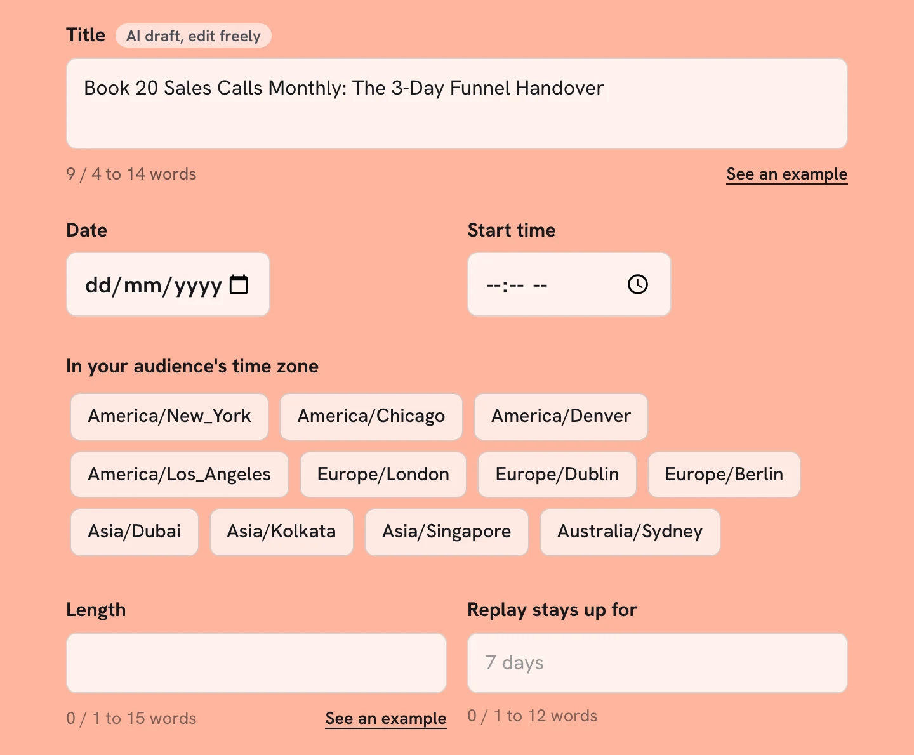
The topic, date and time card, shown for a demo brand. The AI drafts the title, and you set the rest.
What Good Looks Like
Title test: would your persona give up an hour for it? Outcome first, method name second, no wordplay.
Further out is safer than sooner. Warm-up has a fixed wait, and invites need time to land after it.
Across time zones, pick the hour most of your audience is at work.
A replay with a real expiry gives people a reason to come live. Keep to the date you set.
Title
Outcome first, then your method's name. Short enough to read in a calendar notification.
Date
Any upcoming day. Check public holidays in your buyers' countries.
Start time
A working hour in your audience's zone. Across zones, choose the hour that overlaps most of them.
In your audience's time zone
Your audience's zone, not yours. The event line and reminders state the time in this zone.
Length in minutes
Long enough to teach, make the offer once and take questions. The Day 2 webinar guide plans the hour minute by minute.
Replay stays up for
Set a real expiry and keep to it. Follow-ups tell people when the replay closes, which is what makes them watch.
Platform
The tool you will present in. Your choice decides which platform you connect next.
One Line for the Whole Funnel
Title: "How B2B Software Teams Fill Their Demo Calendar Without Ads." Then the rest of the line: the date, 11:00 ET (16:00 UK), 60 minutes, on Zoom. Outcome first, and short enough to read in a calendar. A consultancy's version: "How Accounting Firms Win New Retainers Without Waiting for Referrals."
workshop-plan/playbook.html
Common Mistakes
Setting the time in your own zone when your buyers sit in another.
A title about your offer instead of the buyer's outcome.
A replay that never closes, which removes the reason to attend live.
D1·14Reverse Squeeze Page10 min
Set the Day Your Video Goes Live
Why It Matters
A title and a live day for your reverse squeeze video, so every invite and page points at one release day, set once.
Without a fixed live day, invites carry no reason to watch now, and a day set too soon sends them from domains still warming.
How It Works
What the Agent Does
Drafts a title from your buyer's outcome and your method's name.
Joins title and live day into one line every later asset uses.
What You Do
Pick a live day your warm-up and recording can both meet.
Check the title would make your persona press play.
Every Step
Topic: the buyer's outcome plus your method's name.
Pick the day and hour the video goes live.
Done When
Title, live day and hour set.
What Good Looks Like
The video teaches before it asks, so the title promises the lesson, not the offer.
The video is recorded once and cut three ways. Pick a live day that leaves time to script, record and edit.
Further out is safer than sooner: warm-up has a fixed wait, and the video must be ready before invites send.
Title
Promise the lesson the video teaches: outcome first, method name second. Cold viewers press play for what they learn.
The day the video goes live
After the video is recorded and cut. Leave room for that.
The hour it goes live
The hour the video goes live, in your audience's zone. Cold calendar invites are timed from it, so pick an hour most of them are at work.
In your audience's time zone
Your audience's zone, not yours. The invite states the time in this zone.
What the Live Day Launches
A separate page plays your video first and asks for nothing until the viewer is deep in. A button appears at the script's off-ramp line, and a short bridge form appears only past the threshold, sending Part 2 in seconds.
app/src/content/guides/s4-conversion/s4-rsp.ts
Common Mistakes
A title that sounds like a pitch, for buyers who have never heard of you.
Setting a live day before the video is scripted and recorded.
D1·15Challenge10 min
Set the Date of Day One
Why It Matters
A title, day one, start time and session length for your challenge, set once so every invite, reminder and calendar entry agrees.
A day one too soon sends invites from domains still warming, and a time in your own zone empties the room for buyers elsewhere.
How It Works
What the Agent Does
Joins title, day one, time and length into one event line.
Uses the start time and zone for the reminders and invites it builds.
What You Do
Pick a day one your warm-up and invites can meet.
Choose a start time you can hold every day of the challenge.
Set a session length you can repeat daily.
Every Step
Topic: the buyer's outcome plus your method's name.
Pick the date of day one and the time in your audience's time zone.
Done When
Title, day one, time and length set.
What Good Looks Like
Every day runs at the same hour. Pick one you can hold all week, not just on day one.
Registration closes the evening before day one, so leave enough days between the first invite and that deadline.
Title the finish line: what they will have built by the last day, plus your method's name.
Title
What they will have built by the last day, plus your method's name. Short enough to read in a calendar.
Day one
Leave people time to register before the evening before day one.
Start time
An hour you can hold every day of the challenge, in your audience's working day.
In your audience's time zone
Your audience's zone, not yours. The event line and reminders state the time in this zone.
Length of each day's session in minutes
Teaching plus questions, in a length you can repeat every day without anyone dropping off before the end.
A Three-Day Cohort on One Config
This workshop runs as a challenge: three 60-minute sessions, 45 minutes of teaching and 15 of Q&A, at the same hour each day. Registration closes the evening before day one, and every date lives in one config, so moving the cohort changes one file.
A start hour that suits day one but clashes later in the week.
Sessions too long to repeat daily, for you or for them.
A time set in your own zone when your buyers sit in another.
D1·161 min
Build Your Pipeline in Your CRM
Why It Matters
Your CRM gets the same stages, every tag and the contact fields your funnel uses, so every move in the funnel shows up as a move on the board.
Stages and tags drift from what the funnel sends, and each sync either fails or lands contacts in the wrong column.
How It Works
What the Agent Does
Creates the stages, tags and fields in the CRM you connected, skipping any that already exist.
Records the pipeline and stage ids so every contact syncs to the right stage.
If your pages are already live, redeploys them so syncing starts at once.
What You Do
Approve the build once the CRM card before this one is green.
Every Step
The agent builds what the Stage 5 guide builds by hand: the Sales pipeline (Form Filled to Delivery, with the No Show and Unqualified exits), the four extra pipelines and every contact and deal field, including the webinar date, time and watch link your reminders use.
It creates every tag your funnel sends, so each one is in your CRM's trigger list before a contact carries it: the five funnel tags (webinar registrant, webinar attended, live webinar not watched, watched webinar replay, purchased) and the ten sales tags (enquiry, booked, call-no-show, call-held, qualified, unqualified, follow-up, proposal-sent, proposal-accepted, proposal-declined).
In HubSpot it makes RevOps stage a dropdown, and in Zoho it adds a RevOps stage picklist to your Leads: the field a rep changes when a deal moves.
From Day 2 on, every registration, tag, booking and payment is copied in as it happens. Your built-in CRM keeps a full copy too.
Your funnel sends every reminder and follow-up itself. Day 2 connects your CRM's own automations: GoHighLevel's you build from a card, Zoho's the agent builds, and HubSpot's stage moves your funnel reads back by itself.
Done When
Your CRM has the pipeline, tags and fields.
How Every Step Lands in Your CRM
Could you open one contact right now and see how much of your video they watched?
You need to. Every message in Stage 3 and every route in Stage 4 keys off a tag, so a tag that's missing is a follow-up that never sends.
A reverse squeeze adds four steps in front of the 11-stage pipeline, then joins it:
What the Person Does
Tag Written
Pipeline Stage
Presses play on Part 1
None yet
VSL Started
Passes 25, 50 and 75%
depth-25 · depth-50 · depth-75
Past the Threshold, once they cross yours
Opts in at the bridge
webinar registrant, the same tag a webinar sign-up gets
Bridge Opt-In
Sends the application
score_band: top, middle or bottom
Applied
Books the call (top band)
None
Eval Call Scheduled, then the shared 11-stage chain
Misses the call
call-no-show
No Show
Pays, on either branch
purchased
Payment Completed, then Onboarding. The middle band arrives here straight from its checkout
A webinar funnel runs eight automations. A reverse squeeze runs seven, because the clock-driven scheduler has nothing to schedule. The depth triggers above take its place, and they fire per person, the moment that person crosses a line.
S5 · Revenue & Deal Pipeline
Set It Up With Claude Code and Cloudflare Workers
Path B: your pipeline runs as a Cloudflare Worker in your own account, and Claude Code reads it.
The Full Setup
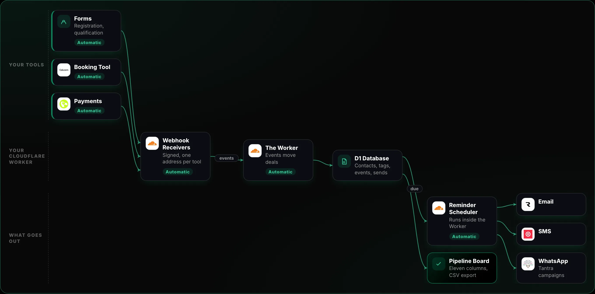
The Task
Run your pipeline as a Cloudflare Worker in your own Cloudflare account instead of a subscription CRM. The agent builds it with your pages on Day 2: a database of contacts, the eleven stages, the tags and a board. Your form, booking tool and payment provider report events to it, and the events move the deals. You're done when a test registration, a real booking and a test payment move one contact through the pipeline and you never moved it by hand.
Step by Step
Build It From Your Pages Card
You don't install anything. On Day 2, approve your pages card (Approve your registration and thank-you pages, or Approve your Part 1 and Part 2 pages for a reverse squeeze). The agent deploys one Worker into the Cloudflare account you connected on Day 1. That one Worker holds:
your pages and the registration form
the CRM: contacts, tags, events and every message sent, in a D1 database named after the Worker with -crm on the end
the reminder scheduler
It runs on Cloudflare, so it has a public address. That's why your tools can send it webhooks, which a CRM on your own computer can't receive.
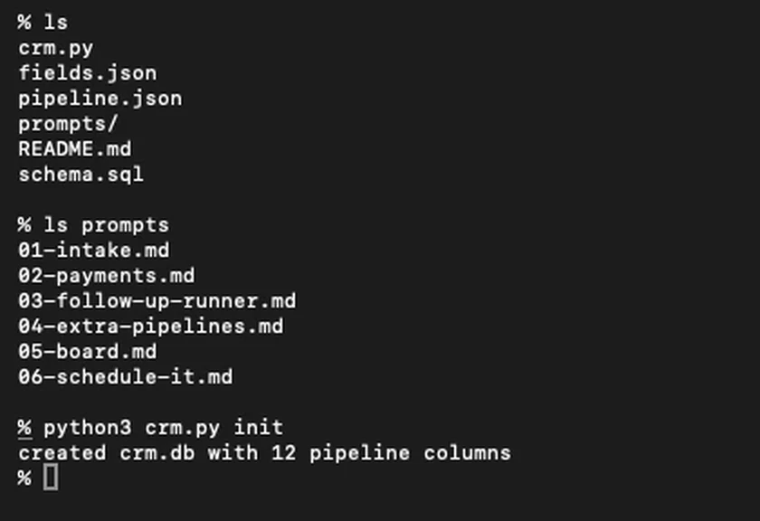
After you approve, the card gives you the page, the CRM and the token. All five build steps show as done. The Tantra centre · Day 2 card, run locally against the vendor simulator · Captured 10 Oct 2026
Open Your Board
On the same card, click Open your CRM. The board opens at /crm on your funnel's address, with one column per stage, in order:
Form Filled, Eval Call Scheduled, Qualified or Unqualified, Sales Call Held, Follow-Up, Proposal Sent, Proposal Accepted, Payment Completed, Onboarding, Delivery, and the No Show exit.
Each contact is one card. Export CSV at the top downloads every contact.
The link signs this browser in and the token leaves the address bar straight away. If you ever shared that link, click Shared the CRM link? Make a new one. The old link stops working once the redeploy finishes.
Tip Treat the CRM link like a password. Anyone who has it can read every contact.
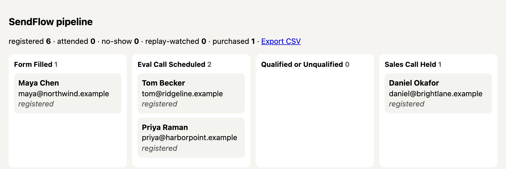
The first four columns. Each card shows the name, the email and the tags. The funnel Worker · /crm board, run locally with test contacts · Captured 9 Oct 2026
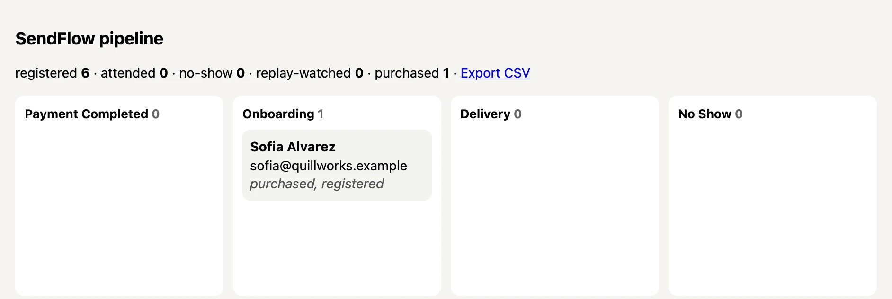
Scroll right for the last columns. A paid contact carries the purchased tag. The funnel Worker · /crm board, run locally with test contacts · Captured 9 Oct 2026
Walk a Test Contact Through It
Use an email address you own.
Register on your own page. A card appears in Form Filled.
Book a call with the same email. The card moves to Eval Call Scheduled.
Make one test-mode payment with the same email. The contact gets the purchased tag and the card passes through Payment Completed straight into Onboarding, because onboarding starts the moment the payment is confirmed.
Refresh the board after each one.
You never dragged a card. Tools report events; events move deals. That's the whole design.
For the full rehearsal, Day 3's Watch a test contact go through every automation card runs a test contact through every reminder too.
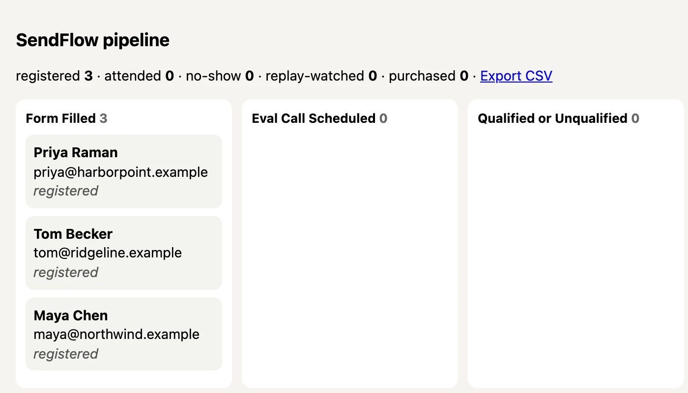
Before the booking: every registration sits in Form Filled. The funnel Worker · /crm board, run locally with test contacts · Captured 9 Oct 2026
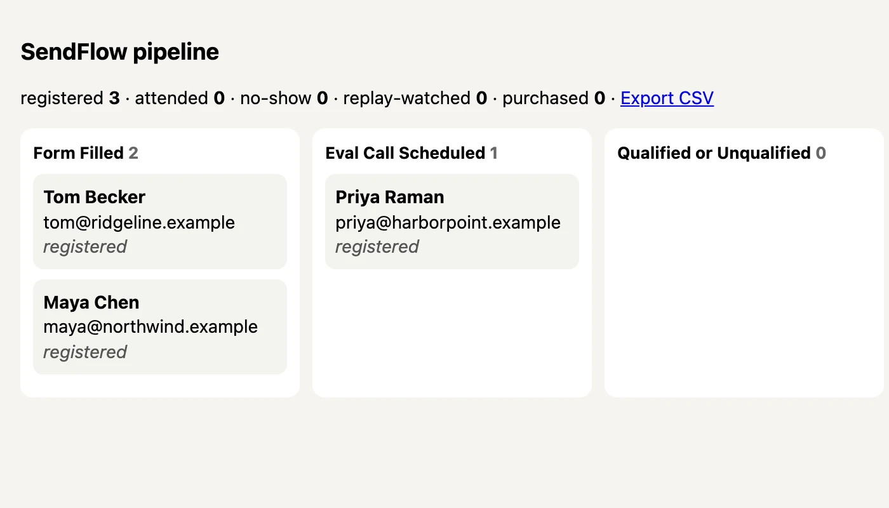
After the booking: the same contact is in Eval Call Scheduled, and nobody dragged it. The funnel Worker · /crm board, run locally with test contacts · Captured 9 Oct 2026
Connect Booking and Payments
Approve Approve your close: booking to payment on Day 2. The agent creates the booking type, the checkout and the payment webhook, then points each tool at your Worker.
Each tool reports to its own address on your funnel:
/hooks/cal for Cal.com. A booking moves the deal to Eval Call Scheduled, a cancellation to Follow-Up, and a finished meeting to Sales Call Held.
/hooks/dodo for Dodo Payments and /hooks/stripe for Stripe. A successful payment adds purchased and moves the deal through Payment Completed into Onboarding.
Every payment webhook is checked against its signing secret, and the same event is never counted twice. A payment is confirmed by the provider's webhook, never by the browser landing on a thank-you page.
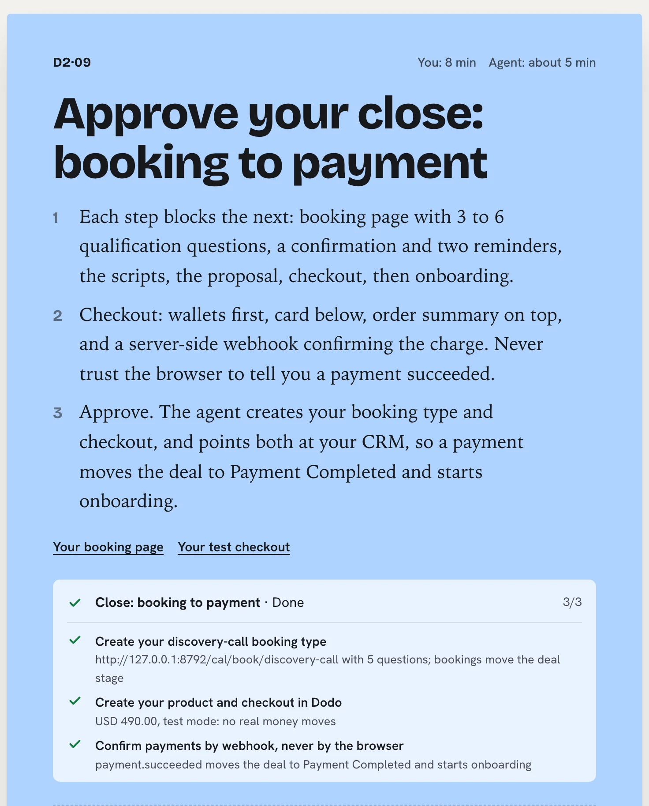
The close card after approval. The booking type, the test-mode checkout and the payment webhook are all created. The Tantra centre · Day 2 card, run locally against the vendor simulator · Captured 10 Oct 2026
Connect Claude Code to It
In your Tantra RevOps OS project (the folder you set up on Day 0):
On your Day 2 pages card, click Show your CRM token and copy it.
Paste it after FUNNEL_ADMIN_TOKEN= in the project's .env (add that line if it is missing).
Start a new Claude Code session in the folder and paste the prompt below.
Claude Code reads your contacts from /api/contacts on your funnel's address, with the token sent as a bearer header. Ask it for one contact by email and you get their tags, their stage and every message they were sent.
Tip The token goes in .env, never in the chat.
Mirror It to a CRM You Already Pay For
This step is optional. If your team already works in GoHighLevel, HubSpot or Zoho CRM, pick the matching Built-in, synced to option on Choose your tools, connect that CRM, and approve Build your pipeline in your CRM.
The agent builds the same pipeline, tags and fields there. From then on, every registration, tag, booking and payment is copied across as it happens.
Your Worker keeps the full copy and still sends every reminder and follow-up itself. The other CRM is a mirror. Don't rename a stage there: the sync finds stages by name.
Start Here: Read Your Pipeline
Read every file in this folder in full. Don't change anything.
Then call GET $FUNNEL_URL/api/contacts with the header "Authorization: Bearer $FUNNEL_ADMIN_TOKEN" (both values are in .env; never print the token).
Tell me, in under 150 words:
1. How many contacts sit in each of the eleven stages, plus No Show.
2. Which contacts have a booking or a payment but are still in Form Filled. That means a webhook isn't connected.
3. The three contacts who have waited longest in their current stage.
Examples From the Template Library
Build specs (no real example yet):The 11-Stage Deal Pipeline · Pipeline Fields and Tags · Follow-Up Matrix for Every Stage
Here's the thing about CRM syncs: they fail on spelling. Your funnel sends "Proposal Sent". Your CRM has "Proposal sent". The contact lands nowhere.
So you don't type any of it. You approve this card, and the agent builds the stages, tags and fields with the exact names your funnel uses.
What the Agent Builds, per CRM
GoHighLevel
HubSpot
Zoho CRM
Sales pipeline, 12 stages
Yes (reuses "Sales" if it has every stage, else "Sales (RevOps Workshop)")
Yes where the plan allows a second pipeline; on Free the stage lives in the RevOps stage dropdown
A Deals pipeline where the edition allows
Four extra pipelines
Yes
Up to your plan's pipeline limit
No
Tags
All 15 the funnel sends
Kept in the RevOps tags property
Added to each Lead as real Zoho tags
Fields
Contact and opportunity custom fields
Contact and deal properties
Lead and Deal custom fields
Stage field a rep changes
The opportunity's stage
RevOps stage as a 12-option dropdown
RevOps stage picklist on Leads
How to Test It
GoHighLevel:Opportunities → Pipelines shows Sales with 12 stages; Settings → Tags lists all 15.
HubSpot:Settings → Properties, search RevOps: RevOps tags and RevOps stage are there.
Renaming a stage or tag later. The sync matches on the exact text.
Moving deals by hand without the Day 2 report-back. Until it's in place, the next sync moves them back.
What Good Looks Like
One pipeline serves every funnel shape: only the stages in front of Form Filled change.
Names are fixed and never renamed. Every automation, report and sync matches on the exact text.
Your built-in CRM keeps a full copy, so the external CRM is a mirror, never the only record.
Tools Report Events, Events Move Deals
Register on your own page, book a call, then make a test payment, all with one email. The deal goes from Form Filled to Eval Call Scheduled to Payment Completed, and nobody moved it. That is the whole design.
Your live broadcast is scheduled on your date, and every registration, attendance, replay, no-show and poll vote flows back to your funnel.
Registrants never reach the webinar room, and nobody is tagged attended or no-show, so the right follow-up never goes out.
How It Works
What the Agent Does
Checks the key and the webinar ID together before saving them.
On Day 2, schedules the broadcast on your event date and time.
Sends registration, live, replay, no-show, poll and ended events to your funnel.
What the Agent Does With This Access
Schedules your broadcast on your date, registers everyone from your pages with their own watch link, and after the session reads who watched live, who watched the replay and who didn't show, so the right follow-up goes to each person.
What You Do
Create the base webinar by hand: the API cannot create it.
Create a WebinarGeek account. On the 14-day trial the API is off until WebinarGeek support switches it on (ask in the chat window), and then it allows 10 requests a minute and 500 a day: enough for one webinar's set-up and registrations.
Click + New webinar, choose Present live, give it your title and save. WebinarGeek's public API docs list no endpoint to create a webinar, so this part is yours; the agent schedules the broadcast on it and registers everyone.
Open Account → Integrations → API, copy the API key, and paste it below with the new webinar's ID. Get the ID from the API reference icon next to Edit webinar. The number in the address bar is the episode ID, not the webinar ID.
Done When
Connected. The agent can schedule your broadcast.
Watch how to connect WebinarGeek0:52
Which Plan
The API isn't tied to a plan. On a free trial it allows 10 requests a minute, and the centre card notes that support may need to switch it on first.
Permissions to Grant
WebinarGeek has one key for the whole account, with no scopes. Treat it like a password.
Where the Key Appears
Account, Integrations, API. The key sits in a box with a copy icon. Open your webinar and click the API reference icon next to Edit webinar to copy the webinar ID. The number in the address bar is the episode ID, not the webinar ID.
Common Errors
401 Unauthorized
The key was copied with a space or from an old screen. Copy it again from Integrations, API.
Your other tools stopped syncing
Someone clicked Generate API key, which switches off the old key. Paste the new key everywhere it was used.
Webinar not found
Use the number from the address bar of the webinar itself, not from a broadcast or a registration page.
What Good Looks Like
Create the base webinar as Present live, with the same title as your registration page.
Copying the number in the address bar. That is the episode ID. The webinar ID sits behind the API reference icon next to Edit webinar.
Attendance is what splits your follow-up into attended and no-show, which is why WebinarGeek reports it back.
When the No-Show Tag Lands
Live and replay viewer events arrive one to two hours after the session. So the funnel waits: three hours after the end, any registrant with no attendance is tagged no-show, and only then does the no-show follow-up start.
cloud/funnel/worker.js
Common Mistakes
Choosing an automated webinar type when you plan to present live.
Expecting attended tags the minute the session ends: attendance arrives up to two hours later.
Your sessions run as Zoom Pro meetings in your own account: one personal link per registrant, a room set up like a presentation, and attendance and the replay flowing back to your funnel.
You create sessions by hand, links drift from your registration page, nobody is tagged attended or no-show, and the replay never reaches the people who missed it.
How It Works
What the Agent Does
Tests the three values against your Zoom account before saving them.
Creates the meeting with registration on: one session for a webinar, one recurring meeting for a multi-day challenge, so each person gets one link for every day.
Sets the room at creation: muted on entry, cameras off, focus mode, nobody in before you, no waiting room, one device per link, cloud recording.
Registers everyone from your pages, reads attendance after each session, and sends the replay link when the recording is ready.
What the Agent Does With This Access
Creates your session with registration on and gives every registrant one personal join link (one link for every day of a multi-day challenge). Sets the room up like a presentation: muted on entry, cameras off, focus mode so attendees see only you, nobody in before you, no waiting room, one device per link, cloud recording. After each session it reads who attended, so attended and no-show follow-ups fire, and it sends the replay link the moment the recording is ready.
What You Do
Before you connect, open zoom.us/profile/setting, Meeting tab: Meeting Passcode ON and Embed passcode in invite link ON (one click, nothing to type), Only authenticated participants can join OFF, Focus mode ON (with Allow host to enable focus mode when scheduling), Request permission to unmute participants ON, Co-host and Cloud recording ON. Greyed out? Change it at zoom.us/account/setting.
Run a 15-minute test session before your first live one: register yourself, join from two devices, send a chat, answer a poll, end it, then check the recording and your attendance arrive.
At the start of each session, open Security and untick Unmute Themselves and Start Video. Two clicks.
Or email Zoom Support once and ask them to switch on host mute control and participant video disable for your account. Then every meeting is locked from creation.
Make your co-hosts inside the meeting: Participants, hover a name, More, Make Co-Host. Alternative hosts set in advance must be licensed users on your account.
Your Zoom plan needs to be Pro or above. A Pro room holds 100 people; the Large Meetings add-on raises that.
Before you connect, check your account settings at https://zoom.us/profile/setting, on the Meeting tab: Meeting Passcode ON and Embed passcode in invite link for one-click join ON (Zoom requires every meeting to have a passcode, a waiting room or sign-in; the passcode travels inside each person's link, so nobody types it), Only authenticated participants can join OFF (left on, Zoom refuses every registrant without a Zoom account), Focus mode ON with Allow host to enable focus mode when scheduling ticked, and Request permission to unmute participants ON. While you are there, make sure Co-host and Cloud recording are on too. If a switch is greyed out, it is locked for the whole account: change it at https://zoom.us/account/setting. Account settings beat what the agent sets, so check these first.
In the Zoom App Marketplace, open Develop → Build App → Server-to-Server OAuth and name the app. Your role needs permission to build Server-to-Server apps; the account owner has it, so build it there if the option is missing.
On the Feature page, copy the Secret Token into the optional field below. Leave Event Subscriptions for now: your funnel's webhook address exists once the agent deploys it on Day 2, and the agent then shows it to you. At that point turn on Event Subscriptions, paste the address, click Add Events, tick Recording, All Recordings have completed (that adds the scopes it needs), save, and click Validate. That is how the replay link reaches your funnel the moment the recording is ready.
Click Activate, then paste the Account ID, Client ID and Client Secret from App Credentials into the fields below.
Done When
Connected. The agent can create your sessions.
Watch how to connect Zoom1:14
Which Plan
Zoom Pro or above. A Pro room holds 100 people; the Large Meetings add-on raises that. You don't need a Zoom Webinars licence: every session is a Pro meeting with registration.
Permissions to Grant
A Server-to-Server OAuth app with the twelve meeting, user and cloud recording scopes listed on your card, nothing more.
Event Subscriptions with All Recordings have completed, so the replay link reaches your funnel. The Meeting start, end, joined and left events are optional live tracking.
Where the Key Appears
Zoom App Marketplace, Develop, Build App, Server-to-Server OAuth. After you click Activate, App Credentials shows the Account ID, Client ID and Client Secret, and the Feature page shows the Secret Token.
Common Errors
Registrants are refused when they join (error 1001)
Only authenticated participants can join is on in your profile settings. Turn it off: registrants don't need a Zoom account.
A switch is greyed out
It's locked for the whole account. Change it at zoom.us/account/setting, then back on your profile settings.
Zoom won't let you turn every security option off
Zoom requires a passcode, a waiting room or sign-in on every meeting. Keep Meeting Passcode on with Embed passcode in invite link on, so nobody types it.
429 when adding registrants
Zoom allows 3 registrations per person per day. The agent waits and tries again.
Run Your Event on Zoom Pro Meetings
Do you need a Zoom Webinars licence to run a webinar for 60 people? No.
For groups up to 100, a Zoom Pro meeting costs less and gives you the same registration and the same personal join links. Set the room up like this and your attendees get a webinar: they see you and hear you, and once you lock the room at the start, they cannot talk over you.
Setting
What it does
Registration on
Every registrant gets their own join link, so you know exactly who turned up
Mute on entry
Everyone joins silent
Participant video off
Cameras start off
Focus mode
Attendees see only you, your co-hosts and anyone you spotlight. It does not stop them unmuting
Join before host off
Nobody is in the room before you
Waiting room off
Registered people walk straight in at the start, with nobody to admit one by one
One device per link
A personal link cannot be passed on and used at the same time
Cloud recording
Records every session, so the replay is ready for everyone who missed it
One link for every day. Running a three-day challenge? Create one recurring meeting (daily, one occurrence per day) with registration on, not three separate meetings. Each person registers once, gets one link that works every day, and receives one confirmation email listing all the dates.
Lock the room at the start. Here's the catch: on a normal Zoom account no setting stops people unmuting or turning on their camera. So when you open the session, click Security and untick Unmute Themselves and Start Video. Two clicks. Or email Zoom Support once and ask them to switch on host mute control and participant video disable for your account. Then every meeting is locked from the moment it is created.
Make co-hosts in the meeting. Open Participants, hover a name, click More, then Make Co-Host. You can name alternative hosts in advance, but only people who are licensed users on your account.
Mind the 100 cap. A Pro room holds 100 people at once, and that count includes you and your co-hosts. Registrations can go past 100 because not everyone shows, but anyone who joins once the room is full is turned away. Need more seats? The Large Meetings add-on raises the cap.
Send reminders from your funnel. Zoom sends no reminder emails for meetings. Your own reminders carry each person's personal link, and they are what gets people into the room.
Read attendance after. When the session ends, Zoom's participant report shows who attended. That splits your follow-up into attended and no-show, and the replay link goes out the moment the recording is ready.
What Good Looks Like
Why not Zoom Webinars? For groups up to 100, a Pro meeting costs less and gives you the same registration and personal links. The room settings do the rest.
Focus mode means attendees see only you, but on a normal account they can still unmute and turn on their camera. The Security menu lock (or Zoom Support's switch) is what stops that.
Zoom sends no reminder emails for meetings. Your funnel's reminders carry each person's own link, so send them from there.
The 100 cap counts everyone in the room at once, you and your co-hosts included. Plan for a few seats of staff.
What Zoom Will Not Let Anyone Automate
On a standard account no API setting stops people unmuting or starting their camera, and co-hosts cannot be assigned before the meeting. So the agent sets everything else at creation, and you do two clicks in the Security menu at the start, unless Zoom Support switches the locks on for your account.
docs/onboarding-v3/analysis/zoom-pro-meetings.md
Common Mistakes
Trusting the agent's room settings over your account's. Account settings win: on our own account, Only authenticated participants can join made Zoom refuse every registrant without a Zoom account, because Zoom requires a passcode, a waiting room or sign-in on every meeting and our passcode setting was locked off.
Testing sign-up over and over with the same email. Zoom allows only 3 registration attempts per person per day, so use a fresh address for each test.
Skipping the Security menu lock, so someone unmutes in the middle of your pitch.
D1·19Challenge5 min
Connect Claude for Your Daily Challenge Outputs
Why It Matters
Every participant who sends a day's survey gets that day's output back within a minute, written from their own answers, as a page and a PDF.
Every survey sits at waiting: participants answer, nothing comes back, and the reason to show up tomorrow is gone.
How It Works
What the Agent Does
Tests the key against Anthropic before saving it.
Hands the key to your funnel when it deploys, so the funnel writes each output itself.
Writes one output per participant per day from what they did, where they got stuck and what they want next.
Sends it by email (and WhatsApp when they opted in) with a live page link and a PDF.
What the Agent Does With This Access
Writes each participant's day output from their own survey answers the moment they submit, then emails it as a page and a PDF. Used only for your challenge's daily outputs, nothing else. Each output costs a few cents from your balance.
What You Do
Create an Anthropic Console account and add a small prepaid balance.
Create the API key and paste it here.
Watch the balance during the challenge and top it up if it runs low.
Create an Anthropic Console account. This is separate from a Claude.ai subscription: a Claude or ChatGPT plan cannot be called by your funnel, so it needs an API key.
Open Settings → Billing and add a small prepaid balance. $10 covers a large cohort: each output costs a few cents.
Open Settings → API keys → Create key, name it after your challenge and click Add.
Copy the key straight away (Anthropic shows it once) and paste it below.
Done When
Connected. Every survey answer now comes back as that day's output, written for that participant.
What Good Looks Like
Use a key made for this challenge only, so its spend is easy to read and easy to revoke after.
Keep the balance small. Each output costs a few cents, so $10 goes a long way.
Ask sharp survey questions: the output is only as specific as the answers it reads.
Common Mistakes
Thinking a Claude or ChatGPT subscription covers this. Your funnel runs on its own, so it needs an API key, not a chat plan.
Leaving the balance at zero: Anthropic refuses every call and the outputs stop.
Losing the key: Anthropic shows it once, so copy it before closing the window.
Your reverse squeeze page plays from Wistia, so the page knows how far each viewer watched and reveals the Part 2 opt-in at the right moment.
The page cannot tell a skimmer from a viewer, so the Part 2 opt-in shows to everyone at once and depth-based follow-ups have nothing to read.
How It Works
What the Agent Does
Tests the token as the Account Owner's before saving it.
Reads watch depth at 25, 50, 75 and 100% from the Wistia player on your page.
Reveals the Part 2 opt-in once a viewer passes your depth threshold.
What the Agent Does With This Access
Uploads Part 1 and Part 2 for you, turns captions on, sets the player to start muted with click for sound, and puts both links on your pages. Reads watch depth (25, 50, 75 and 100%) so each viewer gets the right next step.
What You Do
Choose the Wistia plan: calls to action, forms and A/B tests need Business.
Create a Wistia account. Its free plan has no calls to action, forms or A/B tests; those start on the Business plan. A/B tests need a paid plan and an Account Owner or Manager.
As the Account Owner, open Settings → API Home → New token and create a token with Read, update & delete anything and Upload video.
Done When
Connected. The agent can host your video and read how far people watch.
Watch how to connect Wistia0:47
Which Plan
Wistia's docs don't tie API tokens to a plan. Calls to action, forms and A/B tests start on the Business plan.
Permissions to Grant
Read, update & delete anything
Upload video
Where the Key Appears
Only the Account Owner sees it: Settings, API Home (the API tab of Account Settings), New token. Copy the token as soon as it's created; after you leave or refresh, it can't be copied.
Common Errors
There's no API page in Settings
Only the Account Owner can see API tokens. The Billing page shows who the Owner is.
You can no longer copy the token
Wistia shows it only at creation. Create a new token and delete the old one from its ... menu.
Uploads are rejected
Edit the token from its ... menu and tick Upload video.
HTTP 429
Wistia allows 600 requests a minute per account. Wait the seconds in Retry-After.
What Good Looks Like
Host Part 1 on Wistia. On any other host, the page cannot read depth and shows the opt-in straight away.
Let the video teach before it asks: the bridge appears only once the viewer is deep in.
Plan to test two cuts against each other from day one, which needs a paid plan.
The Depth Gate on Your Page
Part 1 is never gated. The page listens to the Wistia player, records the deepest point each viewer reaches, and marks 25, 50, 75 and 100%. Past the threshold (75% unless you change it), the bridge opt-in for Part 2 appears and carries how far they watched.
cloud/funnel/worker.js
Common Mistakes
Creating the token as a Manager or user instead of the Account Owner, who alone can see the token page.
Pasting a YouTube or Vimeo link for Part 1, which switches off the depth gate.
D1·212 min
Check Every Connection
Why It Matters
Every tool you connected is retested with its stored key, so you finish Day 1 knowing Day 2's builds have the access they need.
A revoked or mistyped key surfaces halfway through a Day 2 build, and that build stops until you fix it.
How It Works
What the Agent Does
Retests every stored connection with its own key.
Marks anything that fails red, with why and how to fix it.
Records which channels are ready, and ticks this card only when all are green.
What You Do
Fix anything red on its own card, then run the check again.
Every Step
The agent re-tests every account you connected. Anything red says why and how to fix it.
Done When
Every connection is green.
What Good Looks Like
Run it last on Day 1, after every connect card, so it tests the full set.
Treat red as information: each one names the vendor's reason and the fix.
Run it again after you change any key or plan, before you rely on the next build.
Common Mistakes
Revoking a key in the vendor's dashboard and expecting builds to carry on.
Moving to Day 2 with a red connection because the rest are green.
D1·2230 min
Tonight's Homework
Why It Matters
Real buyer language for your persona and a folder of proof sorted by objection, the two raw materials Day 2's pages are written from.
Day 2's pages are written from guesses about the buyer, and the proof is hunted for while the page is half drafted.
How It Works
What You Do
Send the question to five real customers tonight.
Gather your proof into one shared folder, each file named after an objection.
Every Step
Short on real conversations for your persona? Send the question to five customers: "What number are you personally judged on this quarter, and what's in the way?" Five sent, not five drafted.
Gather your proof into one folder: screenshots, numbers, testimonials, logos, links. Name each file after the objection it answers. Day 2's pages need them.
Done When
The question is sent and the proof folder exists.
Tonight's Homework: 30 Minutes
Short on real conversations in Step 4? Send the question to five customers. Five sent, not five drafted.
Gather your proof into one folder: screenshots, numbers, testimonials, logos, links. Name each file after the objection it answers. Day 2's pages need them.
What Good Looks Like
Ask customers, not prospects: they already bought, so their answer names the number that made them buy.
Five sent, not five drafted. A question still in drafts teaches you nothing by Day 2.
Name proof files after the objection they answer, so the page writer finds the right one in seconds.
The five-customer question
Pick sent only once five customers have the question. If your persona already comes from real conversations, say so instead.
Link to your proof folder
A shared folder link, viewable without asking for access. Screenshots, numbers, testimonials, logos and links, each named after the objection it answers.
A Persona From Real Words
For a SaaS company: 11 to 50 staff, B2B software, US and UK, head of sales, judged on pipeline created. The objection, quoted word for word: "We tried outbound and it burned our domain."
workshop-plan/playbook.html
Common Mistakes
Rewording the question into a survey. Ask it as written, one person at a time.
Collecting proof with no labels, so nobody knows which objection a screenshot answers.
D1·235 min
Plan What You Finish Before Day 2
Why It Matters
A named piece of Day 1 work and the hours to finish it, blocked in your calendar and posted where your cohort can see it.
Day 1's unfinished work rolls into Day 2, the heaviest day, and everything built on it slips.
How It Works
What You Do
Name the one thing you will finish before Day 2.
Block the hours in your calendar, then post your build in the cohort group.
Every Step
Name what you will finish and block the hours in your calendar.
Open the cohort WhatsApp group (the link is on the Join the two WhatsApp groups card) and post your offer sentence, your funnel choice and your event line, as a link or a screenshot. Leave out your prospect list: it holds other people's contact details.
Done When
Time blocked and your build posted.
What Good Looks Like
Finish what has a clock first: a clean list and warming domains, because warm-up cannot be rushed.
Name a deliverable, not an activity: "list cleaned" beats "work on the list".
Protect Day 2: every Day 3 task runs on what you build there.
What will you finish before Day 2, and when is that time blocked?
One deliverable, then the day and the hours with a time zone. Pick work that has a clock on it, like a clean list or warming domains.
The Hours Behind Each Day
Hands-on hours outside the sessions: Day 1 takes 5 to 6, Day 2 takes 13 to 17, Day 3 takes 14 to 19. Day 3 takes the most hours, but Day 2 is the one to protect: every Day 3 task runs on what you build there.
workshop-plan/playbook.html
Common Mistakes
Writing a plan with no time in it, so it never happens.
Posting your prospect list in the group: it holds other people's contact details.
D1·2460 min
Run Your Day 1 Prompts
Why It Matters
Today's cards collected your decisions. These prompts turn them into finished work inside Tantra RevOps OS: your own AI builds each task end to end, one task per session.
Day 1 finished inside Tantra RevOps OS: your offer, persona, list and funnel pick saved into context/, and your strategy document written from them.
Day 2 builds from whatever context/ holds. Without today's prompts it builds from Day 0's answers and guesses the rest.
How It Works
What You Do
Run each prompt in its own new session, in the order shown.
When a prompt asks for a key, a click or your approval, do it, then reply "done" in that same session.
Every Step
Open your Tantra RevOps OS project in the assistant you set up on Day 0.
Run the first prompt, Save today's context, in a new session. It writes today's answers into the project, so every later prompt starts from them.
Run every other prompt in its own new session, in order. When one asks for a key, a click or your approval, do it and reply "done" in that session.
Done When
Every prompt ran, and STATUS.md in your project lists today's tasks as done.
What Good Looks Like
Save today's context first. When a Day 1 answer contradicts an earlier one, today's wins, and your AI tells you which line it followed.
One prompt, one new session, in the same project you opened on Day 0. Everything carries over through context/ and STATUS.md, not through chat history.
Finish with Write your strategy document. It marks every assumption [check] and ends with the questions you still need to answer before Day 2.
Common Mistakes
Opening a new project for Day 1, so your AI knows none of your Day 0 setup.
Skipping Save today's context, so later prompts build from yesterday's answers.
Your Day 1 Summary
Your offer is one sentence a stranger can repeat, scored on the value equation and placed on a ladder.
Your method, voice and proof are written once, so every asset sounds the same.
Your buyer is defined as an account and a person, and a clean list of them exists.
Your funnel, event date and every channel are set, with domain warm-up already running.
It all lives in one strategy doc with five blocks (offer, buyer, voice, method and proof). Day 2 builds every asset from it.
Day 2
How to Build Every Page, Email and Automation Your Funnel Needs
Here's how most teams build a funnel: a landing page in March, some emails in April, a follow-up sequence "when we get to it."
Six months later, the pieces still don't connect.
Today you build the whole thing in one pass. Because you made every decision yesterday, nothing is a guess: outreach for every channel, the registration page, the reminders, the live session, the close, the newsletter and the follow-up.
I'll take you through it stage by stage, S1 to S6, and you build each piece one at a time in your onboarding centre. You're done when every page, message and trigger exists and someone else could run it without you.
Build Order
Warm the domains now, switch traffic on last. New sending domains need 2 to 3 weeks of warm-up, so that clock starts today. But traffic sent into a half-built funnel burns a list you can't email again.
Confirm your outreach domains are warming (S1, Task 2.1). Start them now if you didn't connect them on Day 1.
Write the outreach templates (S1, Task 2.2), then build S2 to S6.
Switch traffic on only when S2 to S5 are live and a test contact has passed through them.
Install Claude Code now (Day 3 Step 1): today's tool cells use it to draft and build. Any AI assistant works for the writing tasks.
Each of the three shapes has its own path, drawn one by one below. The conversion engine is what changes: a live webinar, the last day of a workshop series, or Part 2 of a reverse squeeze page.
The Webinar Funnel: The Path a Visitor Moves Through
The webinar is the conversion engine here: one live session, one offer. Under about $1K, buyers go to checkout; about $1K or more books a call first. Everyone else gets the replay and the follow-ups, then the next session.
The Workshop Series Funnel (Challenge): The Path a Visitor Moves Through
The last live day is the conversion engine here: the upgrade lands on people who have already done the work. Under about $1K, buyers go to checkout; about $1K or more books a call first. Everyone else gets the recap of what they built and the invite to the next cohort.
The Reverse Squeeze Page Funnel: The Path a Visitor Moves Through
Part 2 is the conversion engine here: no date and no live moment. How much someone watched picks the offer: shallow viewers see the low-ticket checkout, deep viewers the premium offer and a booked call. Everyone else gets follow-ups set by their watch depth.
D2·0160 min
Join the Day 2 Session
Why It Matters
You leave the session knowing the Day 2 build order, so each card below is filled while the reasoning behind it is still fresh.
Cards filled without the session get generic answers, and the agent builds your pages and messages from exactly what you approve.
How It Works
What You Do
Join live or watch the recording before you approve anything today.
Keep your Day 1 offer, buyer and proof folder open while you work.
Every Step
Join live, or watch the recording here afterwards.
After the 45 minutes of teaching, work through the day's cards.
Done When
Joined or watched.
What Good Looks Like
Start the cards with outside waits first: domain warm-up, SMS verification and Twilio's regulatory bundle review run on clocks you cannot shorten.
Build the page, nurture, live delivery and close before any traffic card. Traffic into a half-built funnel burns a list.
Every Day 2 draft is written from your Day 1 answers, so weak Day 1 answers show up here first.
Warm the Domains Now, Switch Traffic on Last
The playbook's Day 2 build order: confirm your outreach domains are warming first, because warm-up takes 2 to 3 weeks. Write the outreach templates next, then build the page, the nurture, the live delivery, the close and the follow-up. Switch traffic on only when those are live and a test contact has passed through them.
workshop-plan/playbook.html
Common Mistakes
Approving drafts during the session without reading them; approval is what the agent builds from.
Starting with outreach copy because it feels productive, then launching before the pages work.
Leaving the run of show and the close until after the session.
D2·025 min
Plan Your Day 2
Why It Matters
Today's list is read in order and the hours to finish it are blocked in your calendar before you start.
Without a plan the day goes to whichever card you open first, and the slow cards (warm-up, approvals, verification) start last.
How It Works
What You Do
Read today's list once, top to bottom.
Block the 13 to 17 hands-on hours in your calendar.
Every Step
Open your plan and read today's list once, top to bottom, before you touch a tool. Most people skip this, then lose an hour to the wrong card.
Day 2 takes 13 to 17 hands-on hours outside the session. Find them in your calendar now and block them.
Start with the cards that wait on someone else: an approval, a verification, a warm-up. Do the slow ones first.
Done When
Today's list is read and the hours are blocked.
What Good Looks Like
Put the work that has a clock on it first, because waiting time cannot be rushed.
Day 2 is the heaviest day: protect it before anything else.
Block whole hours, not gaps between meetings.
Common Mistakes
Opening the first card you see and skipping the order the plan gives you.
Planning the day without putting the hours in your calendar.
D2·032 min
Confirm Your Sending Domains Are Authenticated and Warming
Why It Matters
Every outreach domain proves to Gmail, Outlook and Yahoo that its mail is really yours, and every mailbox builds reputation before the first cold email.
A domain missing SPF, DKIM or DMARC lands in spam or is rejected, and a cold mailbox sending at volume can burn the domain permanently.
How It Works
What the Agent Does
Reads each domain's public DNS for exactly one SPF record, a DKIM key and DMARC.
Counts how many of your mailboxes have warm-up switched on in your sending tool.
Confirms your prospect list is cleaned, then marks this card done when every row passes.
What You Do
Fix any red row at your DNS host or in the sending tool, then check again.
Leave warm-up running for 2 to 3 weeks; it cannot be rushed.
Every Step
The agent runs every domain through SPF, DKIM, DMARC and MX checks, confirms warm-up is on for every mailbox at 20 a day, and checks your list is cleaned. Anything red says why and how to fix it.
Task 2.1Confirm Your Sending Domains Are Authenticated and Warming
New inboxes need 2 to 3 weeks of warm-up. Gmail, Yahoo and Outlook require SPF, DKIM and DMARC from bulk senders; a domain missing one lands in spam or is rejected.
Check you own separate outreach domains. If you didn't set them up on Day 1, do it now (Cold Email guide, step 1). Never use your main brand domain.
Run every domain through the Google Admin Toolbox check. SPF, DKIM, DMARC and MX must all pass.
Open your sending tool and confirm warm-up is on for every inbox, with the daily limit at 20.
Check your lead list: deduped, every email well formed and on the company domain. Reject any bought file with more than 2% duplicates.
OwnerYouToolDomain registrar · DNS · sending platformTime30 min if connected on Day 1, 90 min if not; then 2 to 3 weeks of warm-upDeliverableAuthenticated domains in warm-upProofA test send lands in the primary inbox, not promotions
What Good Looks Like
Send cold email only from separate outreach domains, so a flagged domain never stops your invoices and client mail.
Keep exactly one SPF record per domain: two break authentication without any error message.
Hold each mailbox at 20 a day while warming and 50 once warm. Scale in steps, never jumps.
Leave warm-up on after campaigns go live.
How Many Sends Your Mailboxes Allow
Count the working days to your event, then multiply by your mailboxes and their daily limit. Ten warm mailboxes at 50 a day over 8 days gives 4,000 sends. A five-step thread uses up to five sends per person, so that covers about 800 people. If your list is bigger, add mailboxes or start earlier.
app/src/content/guides/s1-traffic/s1-overview.ts
Common Mistakes
Adding a second SPF record instead of editing the first.
Raising a mailbox's daily limit to catch up, instead of adding mailboxes or starting earlier.
Starting warm-up last, when it is the only task with a hard outside wait.
D2·042 min
Pick the Channels You'll Run
Why It Matters
You commit to the channels that fit how warm your audience already is, so Day 2 writes copy only for what you will run.
Picking every channel spreads your sending capacity thin, and picking one with no warm-up time leaves nothing ready on launch day.
How It Works
What You Do
Choose by how warm your audience is and how soon your event is.
Every Step
Tantra omni-channel runs calendar invites, email, LinkedIn and WhatsApp as one sequence, so each person hears from you once per touch, on the channel they answer. Or pick single channels.
Stay inside each channel's daily limits and read its numbers once a week. Cold calendar and cold email go to people who have never heard of you; LinkedIn reaches named people from your own profile; blog and social are slow and free per click; paid ads are the fastest way to spend money.
Done When
Channels picked.
S1: How to Fill Your Funnel With the Right People Every Week
Six channels: cold calendar, cold email, LinkedIn, blog, social and paid ads. Stay inside each one's daily limits and read its numbers once a week.
Daily operating limits, and the weekly scale-or-fix gate
Low open rate: fix domains and warm-up. Low click-through: fix the offer. Open rate applies to email only. The thresholds are this playbook's starting points.
◆ What Changes per Funnel Type · Traffic
Webinar FunnelTraffic is dated: every asset carries the event date and expires with it. Run the invite push in a short window before the session.
Workshop · ChallengeParticipants recruit participants. Give each registrant a shareable link with their own UTM tag from day one.
Reverse SqueezeTraffic points at content, not a form, so the same link keeps working after any date passes.
The Metric for This Stage
Webinar: VR Visit Rate = page visits ÷ people reached, across every channel
Reverse Squeeze Page: VR Visit Rate = page visits ÷ people reached, across every channel
Workshop Series: VR Visit Rate = page visits ÷ people reached, across every channel
S1 Traffic: Send Every Channel at the Video, Not at a Form
Have you ever sent a cold email with a "register now" link and watched nobody click?
A reverse squeeze takes that ask away. Your link doesn't want anything from the reader. It opens the video.
You run the same six channels as every other funnel. Group blog and social into one Content lane and you have five lanes, each with its own automations working behind it:
Lane
What the Message Offers
Automations Behind It
Read Every Week
Cold calendar
An invite for the day your video goes live, with the Part 1 link in the description
UTM tag on the invite link · phone match to fill in the CRM record · a fallback message when nobody answers · every outcome synced to your dashboard
Invites delivered, Yes and Maybe replies, page visits
Cold email
The five-step thread, every email linking to Part 1
Replies sorted by intent · bounce and unsubscribe handling · a CRM lead created on an interested reply · UTM tags on every link
Delivery, opens, link clicks, interested replies
LinkedIn
A connection note, then a short message sequence with the link
Profile details added to the contact · inbox replies answered · CRM sync when a request is accepted · UTM tag on the link
Acceptance, messages sent, link clicks, interested replies
Content (blog and social)
Posts that teach one idea from Part 1 and link to the rest
Scheduling in Metricool · engagement tracked per post · people who engage added to the CRM · the top post reworked for the other networks · UTM short links
Impressions, engagement, link clicks, inbound messages
Paid ads
A short teaser cut of Part 1 as the ad
Pixel and Conversions API events · retargeting audiences kept in sync · lookalike audiences built from your CRM · UTM rules enforced · spend synced to your dashboard · conversions written back to the contact's source
Impressions, click-through, page views per click, spend
One thing about ads: the agent creates every Meta ad paused. Nothing spends until you switch it on.
Which lane should you lead with? Two rules. If you sell to small businesses, swap LinkedIn for Facebook groups. If you sell to enterprise, lead with cold calendar.
RSP S1Point Every Channel at Part 1
You wrote two versions per channel in Task 2.2. Here they change in one way: the promise is the video, so nothing in them asks anyone to register.
Go through both versions for every channel and cut the registration language: "register", "save your seat", "sign up". Say what the video shows them instead.
Link every message to the Part 1 page with utm_source per channel and utm_content=variant_a or variant_b.
Point Tantra's reply, bounce and unsubscribe webhooks at your workflow or Worker, so an interested reply creates the contact without a form.
Send both versions to a small slice of your list. After a week, keep the version with more page visits per person reached.
OwnerYou · AI drafts from the prompt packToolClaude Code · Tantra · Metricool · Meta AdsTime60 minDeliverable2 versions × every live channel, all linking to Part 1ProofA click from each channel shows up as a page visit with that channel's utm_source
S1 · Traffic
Stage 1 at a Glance: The Traffic Engine
Six channels, one lead list, one tracking scheme and one weekly gate. Set these up before any channel.
The Full Setup
The Task
Set up the four things every traffic channel shares: an approved buyer profile, one clean lead list, one link-tagging scheme and sending domains that are already warming. Then switch on the channels that fit your offer and read their numbers once a week. You're done when every link is tagged, the list is verified and a test contact from each channel lands in your CRM with its source attached.
How This Changes by Mechanism
Webinar
Traffic is dated. Every asset carries the event date and expires with it, so run the invite push in a short window before the session.
Reverse Squeeze Page (VSL)
Traffic points at content, not a form, so the same link keeps working after any date passes.
Challenge
Participants recruit participants. Give every registrant a shareable link with their own UTM tag from day one.
Step by Step
Pick Your Channels and Confirm Your Buyer
You don't need all six. Pick by how warm your audience already is:
Cold calendar and cold email reach people who have never heard of you. They need outreach domains and 2 to 3 weeks of warm-up.
LinkedIn outreach reaches named people through your own profile.
Blog and social build up over time and cost nothing per click.
Paid ads are the fastest to switch on and the fastest to burn budget.
For a SaaS company selling to operations leads, a sensible start is cold email plus LinkedIn, with ads added once the page converts.
Before you pay for any list, get the buyer persona card from Day 1 approved in writing: job titles, company size, region, and whether your contact is the buyer or the signer. A list bought against the wrong profile is money you don't get back.
Tip Check that the job titles you picked exist as filters in the data tool you'll use.
Every channel's daily limits, and what you lose if you ignore them. The AI RevOps Playbook · Day 2, S1 The Traffic Engine · Captured 2 Oct 2026
Tag Every Link Before You Share It
The Centre Does This
The centre puts UTM tags on the registration link in your email and calendar campaigns, and the live funnel saves them on each contact at sign-up.
You Do This
Tag any link you share yourself, such as blog, social and ads.
Building it by hand instead
A UTM is a short tag on the end of a link that tells your analytics which channel sent the visitor. Without it, you can't tell which channel earned a registration, and you can't defend the budget.
Fill in source (calendar, email, linkedin, meta, google, blog, social) and medium: outreach for calendar, email and LinkedIn, organic for blog and social, paid for ads. Campaign is your event slug, for example ops-webinar-weekly.
Copy the finished link. Never type a tagged link by hand.
GA4 must already be on the registration and thank-you pages (Stage 2 guide, step 7). Read results by Session source / medium; GA4's channel groups file medium organic under Organic Search.
Fill source, medium and campaign; copy the finished link it generates. Google Analytics · Campaign URL Builder (ga-dev-tools.google), live public tool · Captured 25 Sept 2026
Start Warming Domains Today
The Centre Does This
The centre registers the domains you approved at Cloudflare, writes SPF and DMARC, and counts the warm-up days once your mailboxes are connected in Tantra, which warms them (20 a day while warming). Ready date is set 14 days out.
You Do This
Tick the domain shortlist, approve it and give the centre your Cloudflare token.
Building it by hand instead
Cold calendar and cold email send from separate domains, never your main one. If an outreach domain gets flagged, your invoices and client email keep working.
New inboxes need 2 to 3 weeks of warm-up before they can send to real prospects. Buy the domains and start the warm-up now, so they're ready when your funnel is.
In Tantra, open Accounts and connect each mailbox with a Google sign-in. Tantra warms every connected mailbox from then on. The Cold Email guide below walks through every click.
Build One Clean List and One Send Log
The Centre Does This
The centre reads your CSV, removes duplicates, your exclusions and your customers, and builds a 25-row sample, then the full list.
You Do This
Upload your CSV (your own export or the file our data partners send), then approve the sample.
Building it by hand instead
Buy or build one list, then clean it once for every channel:
Remove duplicates, including people on lists you already have.
Delete rows with no email or no first name.
Check every email is well formed and on the company's own domain. Drop the ones that fail. The vendor verified the list before delivery, so there is no paid check.
Remove everyone on your do-not-contact list, everyone already contacted and everyone who already registered.
Paste the clean list into one master outreach sheet, one tab per event. Column A is the send date; fill it only after a send is confirmed. That column stops anyone being contacted twice across calendar, email and LinkedIn.
Reject any bought file with more than 2% duplicates.
Tip Work by column name, not column letter. Columns move every time someone pastes data in.
Work Out How Much You Can Send
The Centre Does This
The centre sets warm-up volume and then sends at 50 per mailbox per day once the inboxes are warm.
You Do This
Check the list fits the days you have; if not, add inboxes or start earlier.
Building it by hand instead
Safe daily limits:
Cold email and cold calendar: 20 per inbox a day while warming, 50 once warm.
LinkedIn: about 15 to 20 connection requests a day per account to start. LinkedIn does not publish exact limits.
Count the working days until your event.
Multiply by your accounts and their daily limit. For example, 10 warm inboxes × 50 × 8 days = 4,000 sends. A five-step email thread uses up to five sends per person.
If your list is bigger than that, add inboxes or start earlier. Never raise an account's limit to catch up.
You don't type a weekly volume anywhere: the centre works it out from your mailboxes and accounts and shows it on your sending plan.
Tip Scale in steps. A sudden jump in volume is the clearest signal a spam filter reads.
The centre works out your weekly capacity from your mailboxes. Tantra · Onboarding Centre → Set Your Sending Plan (preview attendee) · Captured 10 Oct 2026
Write Two Versions for Every Channel
The Centre Does This
The centre builds the A/B variants into your Tantra campaigns from your approved copy.
You Do This
Approve the copy for both versions.
Building it by hand instead
One version gives you a result; two give you a comparison.
Version A, benefit-led: open with the outcome your buyer wants.
Version B, problem-led: open with their objection, in their own words.
Generate both from your Day 2 prompt pack, so they make the same offer and differ only in the opening angle. Tag them utm_content=variant_a and variant_b.
Read the Numbers Once a Week
The Centre Does This
The dashboard syncs your Tantra and Metricool numbers every hour, ready for your weekly check.
You Do This
Pick scale, fix or hold for each channel.
Building it by hand instead
Every week, for each channel, pick one of three moves:
Scale it: click-through at least 3%, conversion at least 1.5% and bounce at most 2%. Add inboxes or budget, not new ideas.
Fix it today: open rate under 15% (email only) or bounce over 5% is a deliverability problem, so stop that inbox today. Click-through under 1% means the inbox is fine and the message isn't, so rewrite the offer.
Hold and tune: anything in between. Change exactly one thing, then measure again.
These thresholds are this playbook's starting points, not industry benchmarks; replace them with your own baseline after a few weeks.
Before you trust any channel's numbers, test it once: click that channel's tagged link, register with a test email, then open the new contact in your CRM. Its utm_source should name the channel. If it's empty, the form isn't passing its hidden UTM fields; fix that in the Stage 2 guide, step 7.
Once a week, per channel, pick exactly one of three moves; the last two are shown. The AI RevOps Playbook · Day 2, S1 The Traffic Engine · Captured 2 Oct 2026
Examples From the Template Library
Build specs (no real example yet):Lead List Cleaning Checklist · Master Outreach Sheet · Weekly Scale, Tune or Fix Scorecard
What Good Looks Like
Cold calendar and cold email need warmed outreach domains; pick them only if warm-up has already started.
LinkedIn runs from your own profile, so it starts slow and grows weekly.
Add paid ads once the page converts on cheaper traffic.
Blog and social compound slowly; pair them with a faster channel for a dated event.
Which channels will send traffic to your page?
Each channel you tick adds an approval card with its own copy. Pick the ones you can run well this cycle.
A Sensible First Pair
For a SaaS company selling to operations leads, a sensible start is cold email plus LinkedIn, with ads added once the page converts. Cold email and cold calendar reach people who have never heard of you; LinkedIn reaches named people through your own profile.
app/src/content/guides/s1-traffic/s1-overview.ts
Common Mistakes
Choosing all six channels for a first run.
Picking ads before the page has converted a single registration.
Forgetting each channel needs its own tagged link to be judged.
D2·05WebinarChallenge5 min
Approve Your Registration and Thank-You Pages
Why It Matters
Your registration and thank-you pages go live in your own Cloudflare account, and every sign-up lands in your CRM with its source attached.
Every channel you switch on sends people here; a weak page wastes each click, and an untagged form hides which channel worked.
How It Works
What the Agent Does
Drafts every block from your offer, method, buyer and proof when you click Draft with AI.
Creates your CRM database with the 11 pipeline stages and the five tags.
Publishes the pages, form and scheduler, then opens the page as a visitor to confirm it is live.
Refuses to publish while any answer still holds a [check] note or a placeholder.
What You Do
Edit every line until it sounds like you and claims only what you can prove.
Choose the two headline angles you will test against each other.
Supply your privacy page, and decide whether the form asks for a LinkedIn profile.
Every Step
The agent drafts both pages from your offer, method, buyer and proof. Edit anything.
You A/B test the headline (benefit-led against problem-led), never a second, thinner page.
Approve. The agent builds the pages, the form and your starter CRM in your Cloudflare account and gives you the link to check on a phone, a tablet and a laptop.
Your pages are live and a registration lands in your CRM.
S2: The Registration Page That Turns Visitors Into Sign-Ups
One page, the Tantra Funnel page: branded, proof-led, form above the fold. What you A/B test is the headline (benefit-led against problem-led), never a second, thinner page.
Page anatomy: what the Tantra Funnel page has, and what it must not have
One page, built from one spec. Every block is switched on because it answers an objection or earns the action. If a block does neither, it comes out.
Pro Tip: The Form Abandon Number Is the One Nobody Watches
People obsess over the conversion rate and ignore form abandonment: the visitors who started typing and stopped. That number tells you something conversion rate can't: they wanted to, and something in the form stopped them. Usually it's a field you didn't need. Every field you remove is a measurable lift.
Task 2.3Build the Tantra Funnel Page and the Thank-You Page
Two pages, generated from your Day 1 offer and persona:
Tantra Funnel page: nine blocks, form above the fold at 1366×768.
Thank-you page: this one earns its keep. It confirms, it adds to calendar, it asks them to join your community group (with a one-to-one WhatsApp chat as an option for personal confirmations and reminders), and it sets the expectation of what arrives next. A thank-you page that only says "thanks" is a wasted asset.
Then check every page at 375px, 768px and 1280px before you call it done.
OwnerYou · AI builds from your Day 1 decisionsToolClaude Code · Cloudflare · WebinarGeek · GoHighLevelTime2 to 3 hDeliverable2 live pages under one URL schemeProofA real registration lands in your CRM, from a phone
◆ What changes per funnel type · the capture page
Webinar FunnelThe date block is load-bearing: timezone handling, an add-to-calendar button, and a countdown. Get the timezone wrong and your show-up rate collapses for reasons you'll never diagnose.
Workshop · ChallengeThe page is a checkout, not a form. Wallets first, card below, order summary on top, and the three-day commitment stated plainly, because setting the expectation is what protects your completion rate.
Reverse SqueezeThere is no form on the entry page at all. The page is Part 1, and the opt-in bridge only appears once they've consumed enough of it to owe you an answer.
Other types: book-a-call funnels replace the form with a calendar embed plus qualification fields · free-plus-shipping needs a full address form, so every removable field matters twice as much · a final-funnel has no page at all: the "capture" is a reply in an inbox.
The Metric for This Stage
Webinar: PAR Page-to-Attendee Rate = attendees who signed up on the page ÷ page visits
Reverse Squeeze Page: HWR Half-Watch Rate = people who watched more than half of the video on their first visit ÷ page visits
Workshop Series: PDHR Page-to-Day-and-a-Half Rate = people who signed up on the page and attended 1.5 days or more ÷ page visits
S2 · Landing & Registration
The Tantra Funnel
Landing page, form, thank-you page, calendar file, tracking and CRM hand-off, with every automation.
The Full Setup
Reverse Squeeze Page (VSL)Challenge
The Task
Turn a click into a registered attendee in your CRM, in one step, with nothing typed by hand. You'll set up the event, build a nine-block landing page with the form above the fold, handle the form on your server so it registers the person, creates the contact, adds a calendar hold and logs the row, then send them to a thank-you page that earns its keep. You're done when a registration made from your phone appears in your event platform and your CRM with its UTM intact, and the confirmation email with the calendar file arrives.
How This Changes by Mechanism
Webinar
The form is the conversion. The date block does the heavy lifting: the time in the visitor's time zone, an add-to-calendar button and a countdown. Get the time zone wrong and show-up drops for reasons you'll never find. The page hands straight to the event platform's registration: one list, one join link.
Reverse Squeeze Page (VSL)
There's no form on the entry page. The page is Part 1: the video above the fold, muted, with captions. The opt-in only appears once they've watched enough, as a bridge form built in the Stage 4 Reverse Squeeze guide (steps 4 to 6), and that opt-in is what earns the webinar registrant tag. The thank-you page is replaced by the Part 2 page, delivered in seconds. The server hand-off and CRM fields here stay the same.
Challenge
Two pages, two URLs: a free page with no price, and a paid page with one seat card that goes straight to checkout. Every day's date sits in the hero, with the real registration deadline. Thank-you page one is a short video and the intake survey before the group link; thank-you page two gives each day's logistics, then the optional upgrade with a real way to decline. Contacts get webinar registrant plus a lane field, and entry-purchased on payment.
Step by Step
Set Up the Event First
The Centre Does This
The centre creates and schedules the WebinarGeek broadcast and the account-wide webhook that reports registrations and attendance (the event-setup job). For Zoom it makes a Zoom Pro meeting with registration on instead.
You Do This
Give the centre your WebinarGeek key and webinar ID (or Zoom app credentials), and confirm the date and time.
Building it by hand instead
In your event platform (WebinarGeek in this stack):
Click + New webinar and choose Live. Write the title (a promise with a number in it) and the description.
Under Date and time, add a broadcast: date, time and time zone.
Set Estimated duration correctly. Every calendar entry and reminder is built from it, so a wrong duration makes every invite end at the wrong time. Left empty, it defaults to one hour.
Decide the replay now, not after the event: Edit webinar → General → Dates and times → Replay → Settings, then set how long the replay stays available.
Open Publish in the left sidebar and click Publish. The registration link is not active until you do.
Copy the API key your page will use: Account → Integrations → API.
Note the broadcast ID from the page address. Everything downstream keys on it.
Tip A broadcast's date can only be changed in the web screen, not through the API: Edit webinar, General, Date and time, Edit, Edit time, then Save. Re-open it to check, and tell the people who already registered.
Each broadcast has its own date and time; change it only through Edit time, then re-check it. WebinarGeek Help Centre · Setting date and time · Captured 24 Sept 2026Estimated duration feeds every calendar invite, so set it to the real length. WebinarGeek Help Centre · Estimated duration of your webinar · Captured 24 Sept 2026
Build the Landing Page From One Spec
The Centre Does This
The centre deploys the funnel as a Cloudflare Worker with your approved copy, gives it a workers.dev address and checks the live page after it goes up (the deploy-funnel job).
You Do This
Approve the pages and the copy, and give the centre your Cloudflare token.
Building it by hand instead
Write one spec and have Claude Code build the page from it. The page has nine blocks, in this order:
Logo and a trust strip
Headline (the promise) and subhead (the mechanism in one line)
A 60 to 90 second video, muted, with captions
Three proof points: numbers, not adjectives
The registration form
Your mechanism, named, in 3 to 5 steps
Testimonials, each answering one objection
An FAQ that is your objection list, answered
A call-to-action button that follows the reader down the page
To get set up:
Install Claude Code. On macOS or Linux, open a terminal and run curl -fsSL https://claude.ai/install.sh | bash. On Windows, open PowerShell and run irm https://claude.ai/install.ps1 | iex.
Run claude and log in when the browser opens. It needs a paid Claude plan (Pro, Max, Team or Enterprise) or a Console account. The free plan does not include it.
Once the page is live on its workers.dev address, add your domain. In the Cloudflare dashboard open Workers & Pages, pick the funnel Worker, then Settings → Domains & Routes → Add → Custom domain. Your domain already uses Cloudflare DNS (Day 0), so Cloudflare creates the record and the certificate itself.
Our own funnel's hero: the promise, the mechanism in one line, one button and the countdown. The 3-Day AI RevOps Workshop · /workshop (this funnel, built as a Tantra Funnel) · Captured 24 Sept 2026
Put the Form Where Nobody Has to Look for It
The Centre Does This
The deployed page already carries the registration form. Each sign-up is saved with its UTMs, lane, time zone and consents.
Building it by hand instead
The form sits above the fold on a 1366×768 laptop, without scrolling, and again further down the page.
Ask only what you'll use: first name, last name, business email, and a profile link for follow-up. Ask for a phone number only if you will actually call or text.
Watch form abandonment: people who start typing and stop. It usually points to one field you didn't need.
Four fields, one button, and a line saying what the number is used for. The 3-Day AI RevOps Workshop · /workshop registration form, 390px · Captured 24 Sept 2026
Handle the Form on Your Server
The Centre Does This
The funnel's own server handles every submit: it checks the origin, a hidden honeypot field, the email and a rate limit, saves the contact, tags it registered, registers it on WebinarGeek, sends the confirmation email at once and redirects to the thank-you page.
Building it by hand instead
Never send the form straight from the browser to your tools. Send it to your own small backend, which Claude Code builds for you. In order, it:
Checks every field again on the server.
Registers the person in your event platform and keeps the per-person join link it returns. Never use the webinar's generic join link: it is the same for everyone, and then nobody can tell who attended.
Creates or updates the contact in your CRM, writing readable_webinar_date, readable_webinar_time, watch_link_webinargeek and webinar_broadcast_date. The reminders in Stage 3 are timed from that last field, so if it is empty no reminder ever fires.
Makes sure the calendar hold goes out. WebinarGeek's confirmation email carries the calendar invitation, so that is the hold. A separate write to Google Calendar needs Google Workspace domain-wide delegation, because a plain service account cannot invite guests. The Cold Calendar guide, steps 1 to 5, covers that setup.
Logs the row in a sheet.
Sends the browser to the thank-you page.
Your server writes the contact, so each submit is captured once and the redirect can't cut a write short. If you let GoHighLevel's form-tracking script capture the form in the browser instead, add two guards:
One capture, not two. Make the button type="button" and submit the form once from your script with requestSubmit(), after the join link has come back. A type="submit" button is captured twice, once on the click with the join link still empty, and the registrant gets two confirmations. The join link and date fields must be real text inputs parked off-screen, because the tracker skips type="hidden".
Delay the redirect by 600 ms. Leaving the page at once cancels the tracker's request, and registrations go missing, most often on a phone on mobile data.
Create those four custom fields in the CRM (Settings → Custom Fields, type Text) before your first test submission. A value that arrives before its field exists is never mapped and never backfills, and every message that uses it renders blank.
Keep every key on the server. Nothing secret belongs in the page. The backend needs:
WebinarGeek API key: the one from step 1. Do not send skip_confirmation_mail with the registration, or no confirmation email goes out.
GoHighLevel token:Settings → Private Integrations → Create new Integration. Name it, tick only the scopes the backend needs, and copy the token straight away. It is shown once.
GoHighLevel fields:Settings → Custom Fields → Add Field. Create utm_source, utm_medium, utm_campaign, utm_content, source and mechanism before the first test.
Sheet log: enable the Google Sheets API and share the sheet with the service account's email as Editor.
Save each key as a secret on the funnel Worker (the centre does this for the keys you connect on their cards):
In the Cloudflare dashboard open Workers & Pages, pick the funnel Worker, then Settings → Variables and Secrets → Add.
Set the type to Secret, enter the Variable name and Value, and click Deploy.
Or run npx wrangler secret put NAME in the project. Either way the secret reaches the next version of the Worker.
Make the Thank-You Page Earn Its Keep
The Centre Does This
The funnel serves the thank-you page after sign-up, with a calendar file at /event.ics.
Building it by hand instead
A thank-you page that only says 'thanks' is a wasted asset. Give it four jobs:
Confirm the registration.
Add to calendar: a Google Calendar button and a downloadable calendar file for everything else.
Ask them to join your community group, and offer a one-to-one WhatsApp chat button as well, for anyone who wants their confirmation and reminders sent to them personally.
Say exactly what arrives next and when.
After the server writes, the browser lands on the next page, never a blank 'thanks'. The 3-Day AI RevOps Workshop · /workshop/success · Captured 24 Sept 2026The thank-you page gives three jobs: join the group, save the link, block the time. The 3-Day AI RevOps Workshop · /workshop/join · Captured 24 Sept 2026
Send the Confirmation With the Calendar File
The Centre Does This
The funnel sends the confirmation email the moment someone registers, and the thank-you page carries the calendar file.
You Do This
Read one test confirmation to check the date, time and join link.
Building it by hand instead
Your event platform sends the confirmation the moment someone registers. In WebinarGeek:
Open the webinar and click Edit webinar → Emails. Next to the confirmation email, click Edit.
Check the date, time and join link are right.
Scroll to Send test e-mail, enter your own address and click Send. Check the merge fields fill in. The view link in a test email opens a dummy page.
Check the calendar invitation setting. It is not in the email editor: open the webinar's Registration settings and find Customize email calendar invitations. Keep the option that adds the invite to the recipient's calendar.
In the email that arrives, check the calendar file is attached, in the registrant's time zone.
The invitation uses the duration from step 1, and its wording can't be edited.
The confirmation email sits under Automatically triggered emails, with Edit beside it. WebinarGeek Help Centre · Creating emails · Captured 2 Oct 2026The calendar invitation is its own setting, with a menu for how the invite is added. WebinarGeek Help Centre · Confirmation email · Captured 2 Oct 2026The platform's confirmation arrives with the calendar entry built in. WebinarGeek Help Centre · Confirmation email · Captured 24 Sept 2026
Carry the UTM All the Way to the CRM
The Centre Does This
The funnel saves utm_source, utm_medium, utm_campaign and utm_content on the contact at sign-up and the 5-minute CRM sync carries them across. The centre also builds your Google Analytics property, web stream and Measurement ID, puts the tag on every funnel page, and marks generate_lead and book_call as key events.
You Do This
Add the centre's email as an Editor on your Google Analytics account, on the Let the Agent Into Google Analytics card. That is your only step.
Building it by hand instead
The tag on the link that brought someone in has to reach their CRM record.
Read utm_source, utm_medium, utm_campaign and utm_content from the page address and send them with the form.
Save them on the contact, along with source and mechanism, in the custom fields from step 4.
Pass the same values to WebinarGeek with the registration (subscription_utm_tag_attributes), so they show on the subscriber there too.
Add your analytics tag to every page, and mark the registration as a key event.
Set up Google Analytics once, for the registration page and the thank-you page:
Go to analytics.google.com. In Admin, click Create → Property and fill in the name, time zone and currency.
In Admin, open Data Streams, click Add stream → Web and enter your site address.
Open the stream and copy the Measurement ID (it starts with G-).
Have Claude Code add the Google tag with that ID to both pages, right after <head>, and send a registration event (for example generate_lead) when the thank-you page loads.
Register once so the event exists. Then open Admin → Data display → Events and click the star next to it to mark it as a key event.
Data can take 30 minutes to start, and a new key event up to 24 hours to show in reports.
Hand Every Registrant to the CRM the Same Way
The Centre Does This
The centre creates the tags, seven custom fields and an 11-stage pipeline in GoHighLevel (or the HubSpot or Zoho equivalent), then the funnel syncs every 5 minutes. It maps registered to webinar registrant, attended to webinar attended, no-show to live webinar not watched, replay watched to watched webinar replay, and moves the pipeline stage itself.
You Do This
Give the centre your GoHighLevel token and location ID (or your HubSpot or Zoho access).
Building it by hand instead
Every new registrant carries the same fields and the tag webinar registrant. Name the tags once and never rename them: webinar registrant, webinar attended, live webinar not watched, purchased, plus watched webinar replay. Everything in Stage 3 keys off them.
These are also exactly the tags the supplied WebinarGeek-to-CRM sync writes, so nothing needs mapping. On top of them the sync adds live webinar watched for a live viewer and webinar unsubscribed for an opt-out.
When you import a list into the CRM:
Open Contacts and click Import Contacts. Upload the CSV.
On the Map step, match each column to the field with the same name.
Keep Don't update to an empty value ticked on every column, so a blank cell can't wipe a value that is already there.
A filled cell still replaces the old value. Leave a column unmapped if the import must never change that field.
On the last step, add the tag for the imported contacts.
Existing contacts are matched by contact ID, then email, then phone. A thin registration record must never replace richer data.
Map every column by name, and never let an empty value overwrite what's already there. HighLevel Help Centre · Importing contacts using a CSV file · Captured 24 Sept 2026
Catch Social Lead Forms Too
People who register through a social event page or lead form must land in the same place. On LinkedIn, a small Cloudflare Worker that Claude Code builds for you does the catching: every new lead-form answer becomes a row in a Google Sheet within seconds.
What the Worker does with each answer:
Receives it the moment it's submitted. LinkedIn pushes each new lead-form submission to the Worker's address, so nothing polls on a schedule and nothing is missed between runs. This needs a LinkedIn developer app with access to LinkedIn's lead sync for the ad account that owns your forms.
Writes one row to the tab LinkedIn Lead Gen Form Submissions, in this column order: First Name, Last Name, Email Address, LinkedIn URL, Job Title, Company Name, Campaign Name, Account Name, Form Name, Full Response. The last column keeps the complete answer set, so a question you add later is never lost.
Set it up:
In Google Sheets, add a tab named LinkedIn Lead Gen Form Submissions and type those ten headers into row 1, in that order.
In Claude Code, ask for a Cloudflare Worker that receives LinkedIn lead-form submissions and appends each one to that tab, in that column order. Give it the sheet and your Cloudflare Workers token; keep every key in the Worker's secrets, never in its code.
Register the Worker's address as the lead-form webhook in your LinkedIn developer app, for the forms you want to watch.
Submit a test answer on one of your forms and check the row appears within seconds.
Register Lead-Form Rows in the Same Worker
Filling the sheet is half the job. The same Worker finishes it: each new row is registered on WebinarGeek, so a lead-form registrant gets the same personal join link as someone who used your page. Nothing else needs to run.
The two calls it makes after writing the row:
Upcoming broadcast. Asks your registration backend which session is next: a GET to /api/v1/broadcast/upcoming-broadcast with your clientId. The answer carries the broadcast_id.
Add the subscriber. Sends a POST to WebinarGeek at /api/v2/broadcasts/{broadcast_id}/subscriptions with the email and first name from the answer. WebinarGeek registers the person and sends its own confirmation email with their personal join link.
Set it up:
Ask Claude Code to add those two calls to the Worker, after the sheet row is written.
Store your WebinarGeek API token as a Worker secret named WEBINARGEEK_TOKEN, sent as the Api-Token header. Never type the token into the code: anything in the code ends up in every copy of it.
Submit one more test answer and check the person appears in the WebinarGeek broadcast and receives the confirmation email.
Check the Live Page Every Cycle
The Centre Does This
The centre probes the live page when it deploys it, and the test-run job walks two synthetic test contacts through the funnel and reports pass or fail per automation.
You Do This
Open the page once yourself and look at the date and the preview in a chat app.
Building it by hand instead
Before you send any traffic, open the live page:
The date is this event's date.
A test registration reaches the event platform and the CRM.
View Source: no keys or private tokens anywhere in the page.
Paste the link into a chat app. Link previews don't run scripts, so if the date is added by script, the preview shows the old one.
Check it at 375px, 768px and 1280px.
Check the page at phone width: headline, date and button all visible without zooming. The 3-Day AI RevOps Workshop · /workshop, 390px · Captured 24 Sept 2026
Register From Your Phone and Follow It Through
The Centre Does This
The test-run job already registers two synthetic contacts and checks each automation, so you are confirming the experience, not the plumbing.
You Do This
Make one real registration from your phone.
Building it by hand instead
The proof the funnel works is one real registration, made from a phone:
Register with a test address from a tagged link.
Check the thank-you page loaded and the calendar button works.
Check the person is in your event platform and your CRM, with the UTM on the record. In WebinarGeek, open the webinar, then Statistics → Registrations, open the three dots next to the test registrant and click Show details. In GoHighLevel, open the contact and check the custom fields.
Check the confirmation email arrived with the calendar file.
If any of the four fails, the funnel isn't live yet.
Show details lists what the platform saved for one registrant, including the registration source and time zone. WebinarGeek Help Centre · Registration data · Captured 2 Oct 2026Straight after a test sign-up: the dates and the calendar button, all on one phone screen. Our local build · /workshop/join, tracking off · Captured 10 Oct 2026
How the Deployed Funnel Handles a Registration (Paste Only if You Build by Hand)
Build a small server endpoint for my registration form. On each submission: validate first name, last name, business email (and phone only if present) on the server; register the person for my event (broadcast ID: [id]) in my event platform; create or update the contact in my CRM with source, utm_source, utm_medium, utm_campaign, utm_content, mechanism, the webinar fields readable_webinar_date, readable_webinar_time, watch_link_webinargeek (the per-person join link) and webinar_broadcast_date, and the tag 'webinar registrant', never overwriting a field that already has a value; add a calendar hold; append a row to my registration log sheet; then redirect to [thank-you URL]. If the email is already registered, skip the writes and still redirect. Keep all keys in environment variables, never in the page. Show me a test run with two submissions, one new and one duplicate.
Examples From the Template Library
Branded Landing Page (13 Sections) · Short Landing Page (One Screen of Promise, Four Proof Cards) · Registration Form · Confirmation Email (T+0 on Registration)
Build specs (no real example yet):Event-Platform Registration Page Description · Thank-You / Registered Page · Calendar-Hold Email · Exit-Intent Popup · Registration Automations Map · CRM Hand-Off Fields and Tags · Live Landing Page Check
What Good Looks Like
Every block answers one objection or earns the action. If a block does neither, take it out.
Proof points are numbers, not adjectives. Borrowed proof stays labelled as borrowed.
Ask only for fields you will use. Every extra field costs completions.
The thank-you page confirms, adds to calendar, invites them to your group and says exactly what arrives next.
Headline A, benefit-led
The outcome your buyer wants, in their words, with a number only if you have a real one.
Headline B, problem-led
Open with the objection that kills deals, as your buyer says it. Same offer as A; only the angle changes.
Subhead
Your method in one line: how the promise in the headline actually happens.
Proof points, one per line: numbers, not adjectives. Only your own proof, or labelled borrowed
Write each point as a number with its context. Leave it empty rather than invent one.
FAQ: each objection answered, as "Q: …" then "A: …" lines
Use your Day 1 objection list. Each answer should remove one reason to wait, not repeat the headline.
Thank-you page: confirm, then what arrives next
Say what arrives next and when, so they know to look for it. The page adds its own calendar button.
Thank-you page: your community group link (shows a join link). Leave it empty and nothing shows
Shows a join link on the thank-you page that opens your group. A group gives sign-ups somewhere to go while they wait. Empty means no link shows.
Thank-you page: the join link's text
The words of that join link. Name the group, like Join the Members Group. Empty means the link reads Join the community group.
Thank-you page: the one next step, shown under the join link
One line under the join link that tells them the single thing to do now. Empty means the line does not show.
Ask for their LinkedIn profile?
Say yes only if you will follow up personally on LinkedIn. Every field costs sign-ups.
The Nine Blocks, in Order
Logo and trust strip. Headline and subhead. A 60 to 90 second muted, captioned video. Three proof points. The registration form, above the fold on a 1366 by 768 laptop. Your method in 3 to 5 steps. Testimonials, each answering one objection. An FAQ that is your objection list. A button that follows the reader down the page.
Testing a second, thinner page instead of a second headline.
Adding navigation links that lead visitors off the page.
A thank-you page that only says thanks, at the moment they are most willing to act.
D2·06WebinarChallenge15 min
Create Your LinkedIn Event
Why It Matters
A LinkedIn event puts your session in front of your network for free, and everyone who taps Attend sees it again in their feed. LinkedIn has no API for events, so this one is a few pastes.
Your session listed as a LinkedIn event that links to your registration page, shared with the people in your network who fit your persona.
You leave free reach on the table: your own network never hears about the session unless your outreach finds them.
How It Works
What You Do
Create the event on LinkedIn and paste each prefilled field.
Invite the first-degree connections who match your persona.
Every Step
On LinkedIn, click Me → Events → Create event (or For Business → Create an event from a company page). Choose Online and External event link.
Paste each field below into LinkedIn's form, add your banner image, and click Post.
Share the event once from your own profile and invite your first-degree connections who match your persona (LinkedIn caps invites per week, so start with the best fits).
Done When
The event is posted and links to your registration page.
What Good Looks Like
Point the event at your registration page, never at LinkedIn's own sign-up, so every registrant lands in your CRM and gets your reminders.
Invite your best-fit connections first: LinkedIn caps invites each week.
Post about the event once from your profile; the event page alone gets little reach.
Common Mistakes
Using LinkedIn's own registration, so attendees never reach your reminders or your CRM.
Inviting everyone at once and running out of invites before the best fits.
D2·07Reverse Squeeze Page3 to 5 h
Record Part 1 and Part 2
Why It Matters
You have Part 1, the free teaching video your funnel rests on, and Part 2, which goes deeper and then makes the offer.
A reverse squeeze only works if Part 1 is genuinely valuable; a thin Part 1 gives nobody a reason to reach the opt-in.
How It Works
What You Do
Fill the VSL template's fields from your Day 1 answers, then record the long version.
Note the second your early off-ramp line starts in each cut.
Choose which two cuts to A/B test first.
The Wait
The longest single task in this funnel
Every Step
Part 1 first, good enough that you'd have charged for it. Cut a 6-minute and a 12-minute version.
Record Part 2: it escalates, then makes the offer.
Give the agent each file: drop it on this card (up to 15 MB), paste a Dropbox or Google Drive link to it, or upload it to Wistia yourself with Part 1 or Part 2 in its name and leave the fields empty. Got captions from your editor? Drop the .srt here too.
Approve. The agent uploads both to your Wistia, turns captions on, sets the player to start muted with click for sound, and writes both links on the next card. You only check the videos play.
Done When
Both parts are in your Wistia with captions on, and their links are on the pages card.
The Reverse Squeeze Page Funnel, Step by Step
Everything above assumed a dated event. A reverse squeeze has no date, no registration and no live moment, and it still runs all six stages. Here's the whole thing, at the same depth, because "it's just a landing page with a video" is how people build one that doesn't work.
The core idea: you give the valuable thing away before you ask for anything. Not a teaser. Not a preview. The actual thing. The opt-in comes afterwards, and it converts far better because by then you've earned it.
The Reverse Squeeze Page Funnel: All Six Stages, No Date, No Form up Front
Notice what's missing: a date. Nothing here expires, which is why a reverse squeeze costs fewer hours to run each week, and why it takes longer to produce a result. You're trading urgency for compounding.
Stage
What you build
The number that proves it
S1 Traffic
2 variants per channel, all pointing at Part 1. No registration language anywhere: the click promise is the content itself
Clicks to Part 1, per channel
S2 Part 1
The content page, the asset itself, depth events at 25/50/75/100%, and the opt-in bridge with its threshold in the spec
% reaching 75% depth
S3 Nurture
Three depth-triggered sequences, not one time-triggered one. Each with its own hook
Bridge opt-in rate per depth band
S4 Part 2
Gated page, instant delivery, email backup, and the escalation into the offer
Part 2 completion rate
S5 Offer
Two offer pages (low-ticket and premium) plus the routing rule that decides which one they see
Purchase rate, split by branch
S6 Growth
Three tracks: ascension for low-ticket buyers, a fresh Part 1 monthly for non-buyers, referral for premium buyers
Repeat purchase and referral rate
Pro Tip: The Threshold Is Your Highest-Leverage Variable
Where you place the opt-in bridge decides everything downstream. Too early and you're a squeeze page wearing a costume: you lose the trust the format exists to build. Too late and people finish, feel satisfied, and leave. Put it in the spec, start around three-quarters through, and treat it as your first A/B test.
Task 2.8If You're Building a Reverse Squeeze, Build It in This Order
Make Part 1 first, and make it genuinely good enough that you'd have charged for it. This is not negotiable: the entire mechanism rests on the value being real.
Instrument depth before you build anything else. Without depth events you have no funnel, just a page.
Build the bridge and set its threshold in the spec, not in code.
Build Part 2 and the offer inside it.
Then the three nurture branches, then the two offer pages and the routing rule.
Traffic last. Same as every other shape.
OwnerYouToolClaude Code · video host · emailTime33 h build · 4 to 8 h/week to runDeliverablePart 1 · bridge · Part 2 · 3 branches · 2 offer pagesProofDepth events fire at all four milestones for a real session
A separate page that plays your video sales letter first and asks for nothing until the viewer is deep in.
The Full Setup
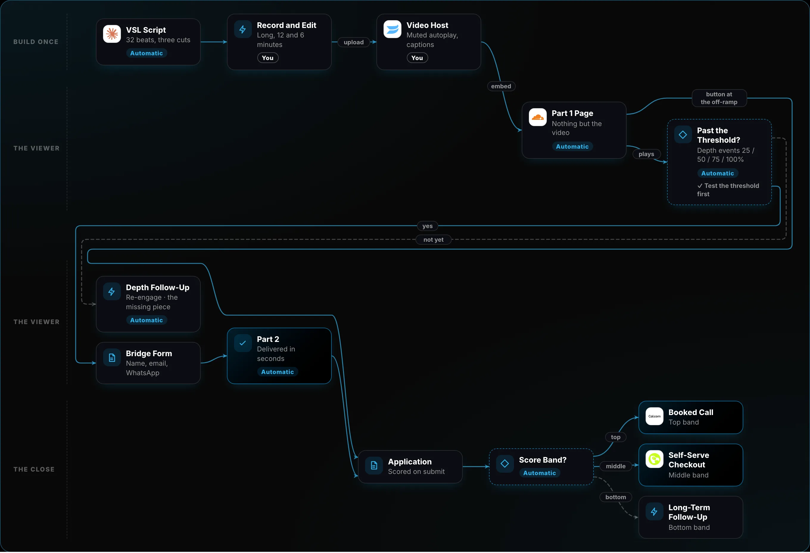
The Task
Record one video sales letter from the template, put it alone on its own page, and let it teach before it asks. A button appears at the script's off-ramp line; a short bridge form appears only once the viewer is deep in, and sends Part 2 in seconds. Every play, milestone and form is an event, so follow-up is set by how much each person watched. The screenshots use Wistia as the video host. Its free plan has no calls to action, forms or A/B tests; those start on the Business plan. Done means a test viewer who reaches 75% sees the bridge, gets Part 2, and lands in the CRM with their depth on the contact.
Step by Step
Generate the Script From the Template
Open the VSL Script Template below. It has 32 beats in three acts: hook and proof, teaching that shifts five beliefs, then the offer. Every specific is a field, like {desired_outcome} or {mechanism_name}.
Fill the fields from your Day 1 answers: your buyer, their pain, your method, your offer.
Use only proof you can source. If a proof field is empty, the beat is rewritten without it.
Paste the filled fields into the prompt at the end of this guide to get the full script, the cue sheet and the captions.
Tip Never invent a number, logo, rating or deadline to fill a field. Leave the beat out instead.
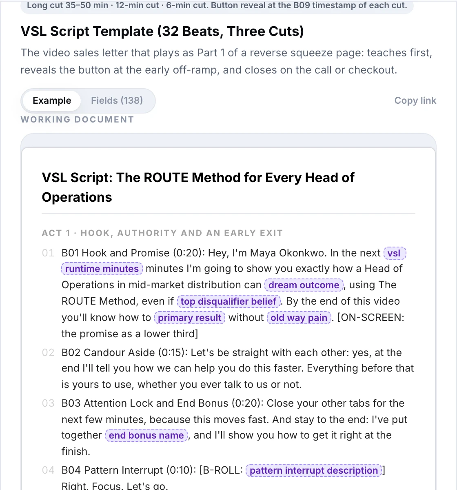
The template: each beat, with its fields marked Tantra · Template Library → VSL Script Template · Captured 25 Sept 2026
Record Once, Cut It Three Ways
Record the long version (35 to 50 minutes), then cut a 12-minute and a 6-minute version from it. Each beat in the template says which cuts keep it.
For every cut, write down one number: the second the early off-ramp line starts (beat B09). That number drives the page's button.
Upload two cuts and run them as an A/B test, so the data picks the length:
On a video's page, open the three-dot menu and click Create A/B test. Or go to Analytics → A/B Tests → Get Started.
Choose video A and video B, then click Start A/B test.
Click View Embed Code and use that code on your page in step 4. The test does not start until the code is on the page.
A/B tests need a paid plan and an Account Owner or Manager.
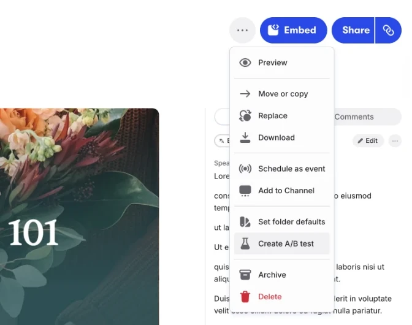
Test two cuts against each other from day one Wistia help centre · A/B Testing · Captured 25 Sept 2026
Host It Muted, With Captions On
The Centre Does This
Give the agent both files on the Record card (or a Dropbox or Google Drive link). It uploads them to your Wistia, turns captions on, sets the player to start muted with click for sound, and writes both embed links on your pages card.
Building it by hand instead
Most viewers start with the sound off. On the video's page in your video host:
Click Customize, open Controls, tick Autoplay and choose Click for sound.
Back on the video's page, click Generate transcript from the final edit, and tick Automatically enable captions when they're ready. The computer-made transcript is free.
In Customize → Controls, set captions to on by default.
Check the End setting in the same panel: the video should pause or reset when it finishes, not loop.
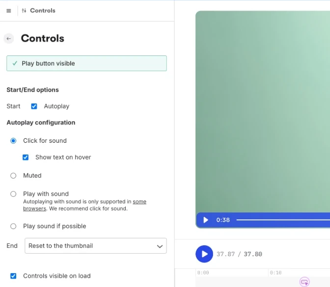
Autoplay on, with Click for sound selected Wistia help centre · Customize the Player Controls · Captured 25 Sept 2026
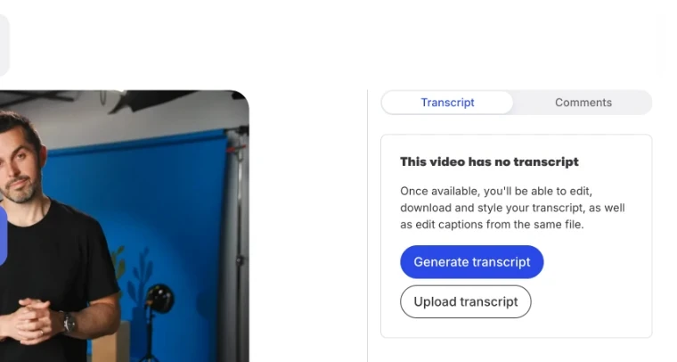
Generate the transcript, then turn captions on Wistia help centre · Transcripts and Captions · Captured 25 Sept 2026
Build a Page That Is Only the Video
This is a separate page from your registration page. It has:
A one-line call-out: who it's for.
A headline taken from beat B01 of the script.
The video, above the fold on a laptop and on a phone.
Nothing else to click: no menu, no form, no links except the legal ones in the footer.
To put it live:
Deploy the page as a Cloudflare Worker: run npx wrangler login, then npx wrangler deploy in the project. The centre does this for you on the funnel Worker.
On the video's page, click Embed and copy the Standard inline embed, or the A/B test's embed code from step 2. The Fallback embed is an iframe.
The workshop's own thank-you page uses the same player pattern: muted autoplay, a click-to-listen panel and captions.
Tip Every link off the page leaks watch time. Unlink the logo too.
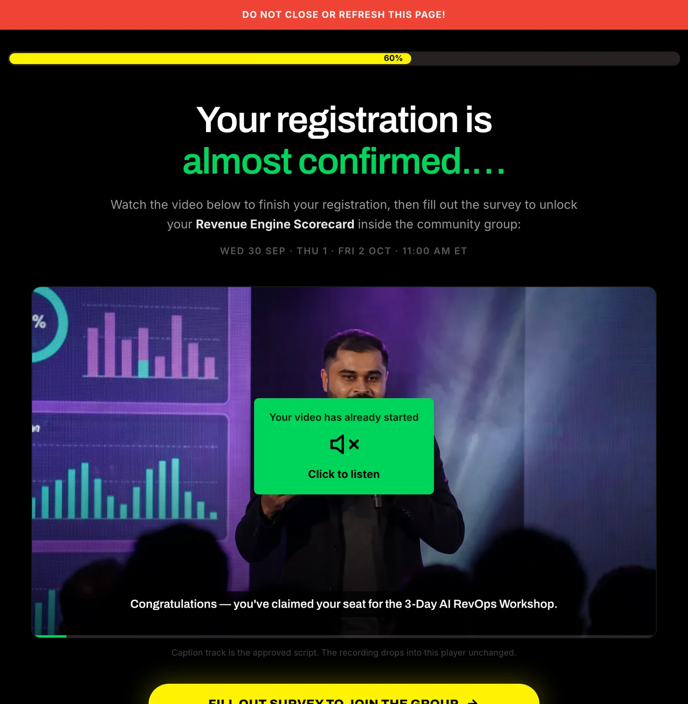
The player pattern only, on our thank-you page: muted autoplay, Click to listen and captions Tantra · /masterclass/success · Captured 25 Sept 2026
Reveal the Button at the Off-Ramp Second
Hide the button until the video reaches the off-ramp second from step 2. That's where the script says "click the button below this video".
Once shown, it stays visible.
Returning viewers who already passed it see it straight away.
Revealing it fires a vsl_cta_revealed event, so it counts as a signal too.
On your own page, the player's time event shows the button. With Wistia's Standard embed that is one line of the player API: video.bind("crosstime", 540, showButton), where 540 is your off-ramp second. Remembering returning viewers and firing vsl_cta_revealed are code on your page, not player settings.
Inside the player there are two timed options, both on a paid plan:
Customize → Annotation links: a small link with a start and an end time. The video keeps playing.
Customize → Call to action: covers the whole player at the set time, with a Skip link.
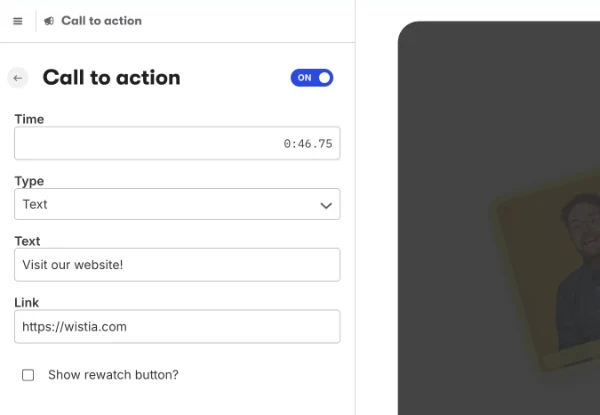
A Call to action at a set time, with its text and link Wistia help centre · Call to Action · Captured 25 Sept 2026
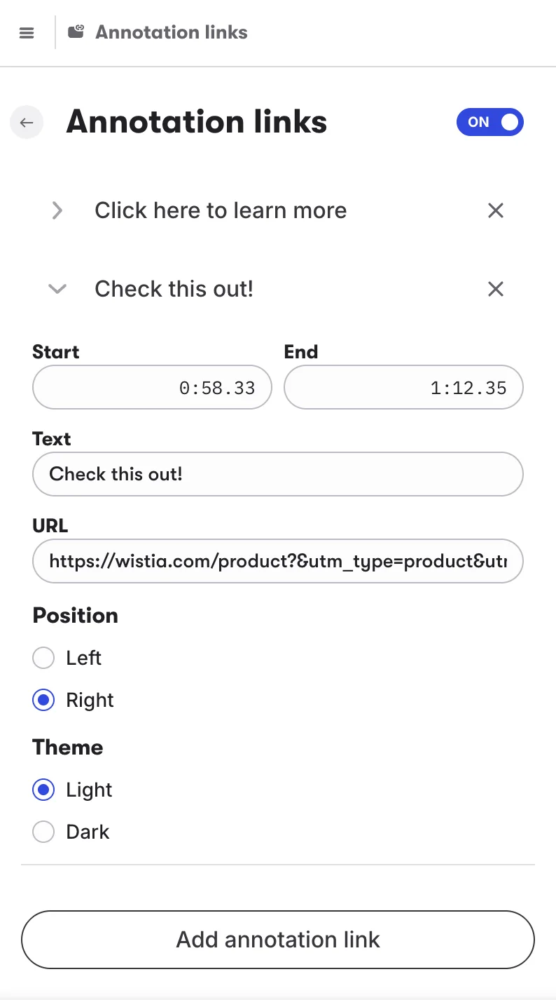
An annotation link, with its start and end time Wistia Help · Annotation Links · Captured 2 Oct 2026
Show the Bridge Only Past the Threshold
The Centre Does This
The funnel keeps the bridge hidden until the viewer passes the threshold, 75% of Part 1 by default.
Building it by hand instead
The bridge is the first ask: "Part 2 goes deeper. Where should we send it?" It appears only once the viewer passes the threshold in your spec. Start at 75% of Part 1.
First name and email; WhatsApp only with a consent box.
One qualifying question at most.
Let viewers skip it. Nothing is gated before the value.
Save the depth they reached on the contact.
In Wistia:
Open Customize → Form and choose At a specific time.
Set Pause video at. It is a time in seconds, not a percentage, so work out 75% of each cut's length.
Tick Allow viewers to skip.
Set the fields. Email is always asked; first and last name are one toggle; extra fields are a text field, a dropdown or a single checkbox. For WhatsApp, use a text field plus a consent checkbox.
The form saves leads in Wistia. It can also send them to HubSpot, Marketo, Pardot, Klaviyo, ActiveCampaign, Eloqua, Mailchimp or Keap. For any other CRM, your page sends the lead and the depth itself: listen for the player's conversion event and post both to your CRM.
Tip Too early and it's a squeeze page in a costume. Too late and satisfied viewers leave without asking for more.
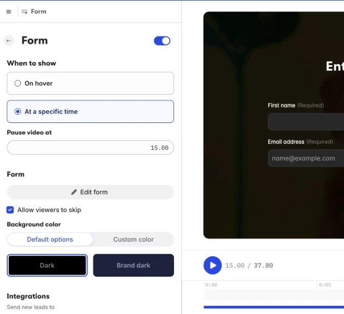
A form at a set second, and skippable Wistia help centre · Wistia Forms · Captured 25 Sept 2026
Deliver Part 2 in Seconds
The Centre Does This
When someone submits the bridge, the funnel sends the confirmation email at once and takes them straight to Part 2.
Building it by hand instead
Submitting the bridge opens the Part 2 page straight away, and sends the same link by email as a backup. Part 2 goes deeper on your method, then makes the offer:
Deep viewers see the application and the call.
Others see the self-serve, lower-ticket offer.
The bonus promised in beat B03 is delivered here.
With a Wistia form, opening Part 2 is code on your page: video.bind("conversion", openPart2). Test it before launch: submit the form on a phone and on a laptop, and check that Part 2 opens and the email arrives.
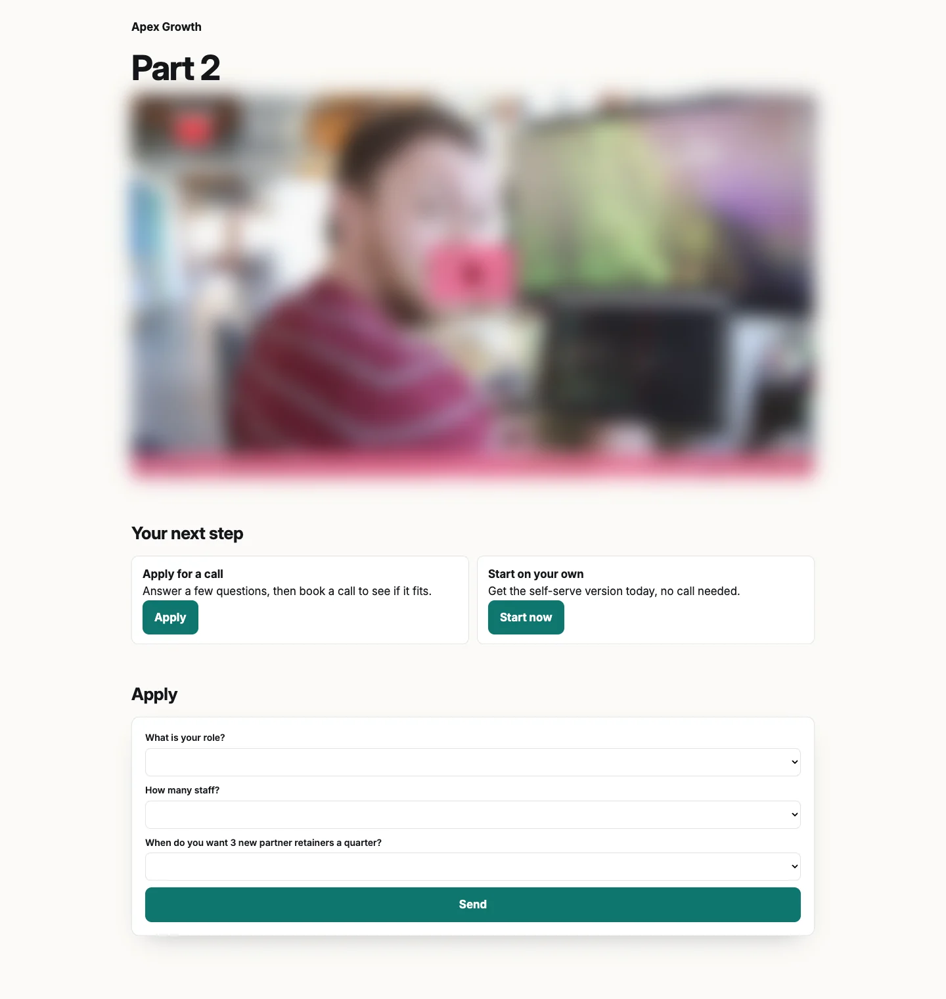
Submitting the bridge lands here at once Our local build · RSP Part 2 page · Captured 10 Oct 2026
Score the Application and Route It
The Centre Does This
The funnel scores each application on submit and sends the top band to the booking page. The close-setup job creates the booking event for it.
You Do This
Give the centre your booking key and approve the discovery questions.
Building it by hand instead
The button leads to a short application, one question per screen. There's one question for each fit rule the script says out loud in beat B29. Score it on submit:
Top band: the booking calendar, as step 2 of 2.
Middle band: the self-serve offer, or a personal reply within a day.
Bottom band: the long-term follow-up.
Write the bands and the rule in your spec before launch. Never score on country, age or any protected trait.
Have both doors ready before launch. The booking calendar is a Cal.com event type (Event types → New event type), with a link like cal.com/you/call. The self-serve offer is a Dodo Payments product, and live payments only work once your account verification is approved. Most reviews take 1 to 3 business days.
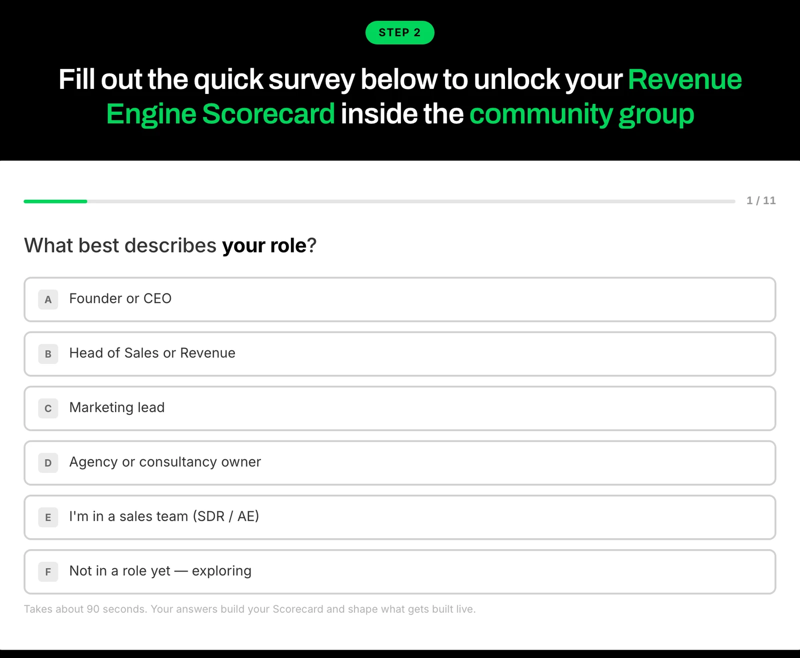
The one-question-per-screen pattern, shown on our intake survey Tantra · /masterclass/success → Step 2 · Captured 25 Sept 2026
Fire an Event at Every Milestone
The Centre Does This
The funnel's depth beacons at 25, 50, 75 and 100% tag each person depth-25, depth-50, depth-75 or depth-100 on the contact.
Building it by hand instead
Without depth events you have a page, not a funnel. Send these to your analytics and your ad pixels:
vsl_play, vsl_unmute
vsl_progress_25, _50, _75, _100
vsl_cta_revealed, vsl_cta_click
bridge_shown, form_submit, application_submit
These vsl_* names are custom events. Your page fires them with gtag("event", ...) from the player API events play, mutechange, percentwatchedchanged and crosstime. Each event carries the UTMs, the page variant and the cut.
Wistia's built-in GA4 integration sends its own fixed names instead: wistia_play, wistia_25_percent_played, wistia_50_percent_played, wistia_75_percent_played, wistia_95_percent_played, wistia_seconds_played and wistia_conversion. The last milestone is 95%, not 100%. To connect it:
Have a GA4 property with a web data stream, and the GA4 tag on the page.
In Wistia, open Integrations → Analytics → Google Analytics 4.
Click Set up, then Connect, and sign in to Google.
Pick the Analytics account, the web property and the web data stream.
You need to be an Account Owner or Manager in Wistia.
Export the percent each person watched into the CRM: on the video's Engagement page, click Export Stats to CSV. The email column is filled only for viewers who gave their email in a form or came from an email link.
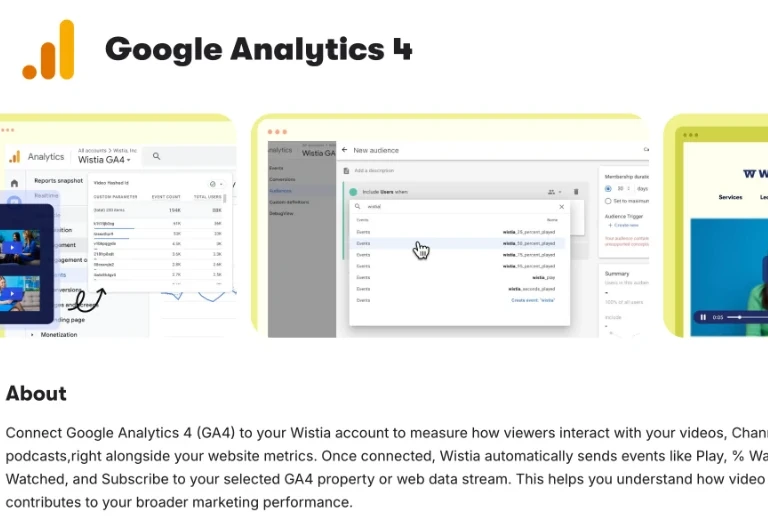
Connect analytics: plays and percent watched flow in Wistia help centre · Wistia and Google Analytics 4 Integration · Captured 25 Sept 2026
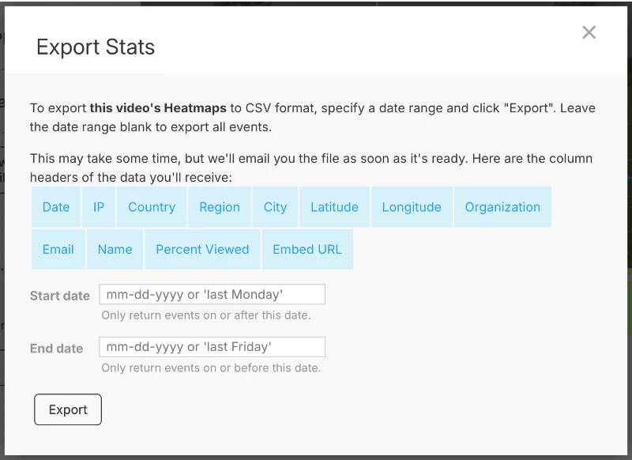
Percent viewed per person, ready for the CRM Wistia help centre · Heatmaps · Captured 25 Sept 2026
Follow Up and Retarget by Depth
The Centre Does This
The funnel sends one depth-based message 24 hours after: one for under 25%, one for 25 to 74%, and one for 75% or more who have not reached Part 2.
You Do This
Build any retargeting audiences yourself in your ad account.
Building it by hand instead
Depth, not the clock, decides the next message. The Tantra Flow runs the tiers: under 25% of Part 1 → re-engage · 25 to 75% → the missing-piece nudge · over 75% → the Part 2 bridge.
Build ad audiences from the same events: played but under 50%, watched past 50% with no bridge, and bridge shown but not sent.
Wistia's Meta Ads integration is on Enterprise plans, the older Advanced and Premium plans, or the Automation Suite add-on. It needs admin access to Meta Ads Manager and a Meta Pixel that has accepted the Custom Audiences terms, and it can't fill in past views. Its ready-made audiences are: watched less than 50% of one video, at least 50% of one video, at least 50% of more than one video, and subscribed to a Channel. The two bridge audiences are not among them; build those in Meta or GA4 from your own events.
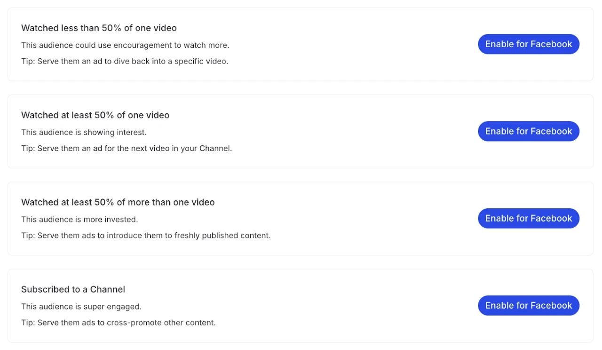
Audiences built from how much people watched Wistia help centre · Reach & Retarget for Meta · Captured 25 Sept 2026
Test the Threshold First
Your first test is where the bridge appears, not the headline. Then test the two cuts and the button label, one at a time. Keep every threshold and variant in the spec, so the page changes without anyone editing code.
A Wistia A/B test compares two videos. To test the bridge position, make a copy of the video, set a different form time on each copy, and run the two as an A/B test. The results show play rate, play count and engagement for each.
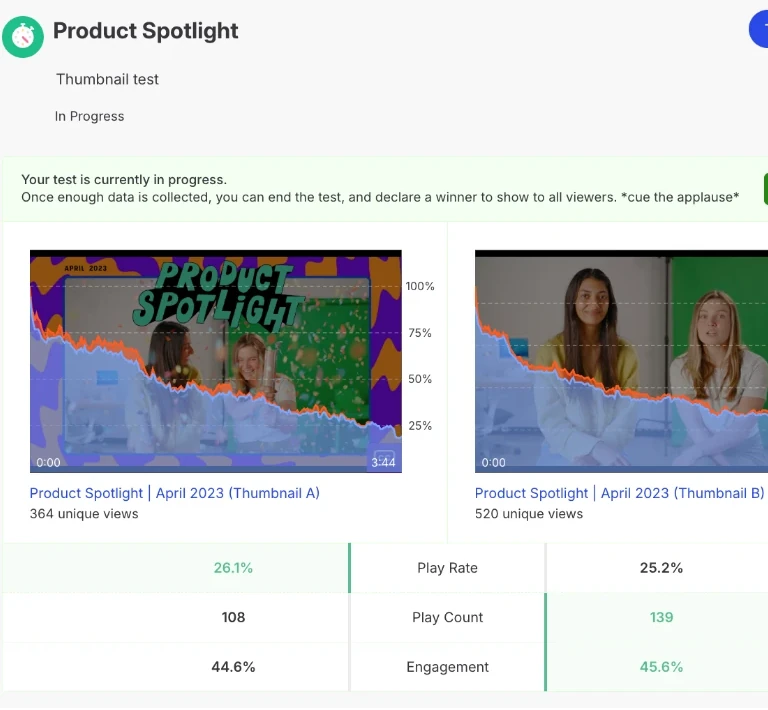
An A/B test result: play rate, play count and engagement, side by side Wistia help centre · A/B Testing · Captured 25 Sept 2026
Write My VSL From the Template
Use the VSL Script Template (32 beats, three acts) to write my video sales letter. Follow every beat in order, and keep each beat's goal. Rules: never invent a number, name, logo, rating, guarantee or deadline; one metaphor, one visual, one proof and one voiced objection per teaching point; two call-to-action moments only (the early off-ramp and the close).
Return: 1) the long script, 2) the 12-minute and 6-minute cuts, 3) a cue sheet with each beat's start time and on-screen cues, 4) the caption track.
My fields:
host_name: {host_name}
company_name: {company_name}
icp_role: {icp_role}
icp_industry: {icp_industry}
dream_outcome: {desired_outcome}
pain_point: {pain_point}
mechanism_name: {mechanism_name}
offer_name: {offer_name}
call_name: {call_name}
booking_link: {booking_link}
proof_library: {proof_library}
Build My Page and Forms From the Script
From my finished VSL script, write: the Part 1 page (one-line call-out, headline from beat B01, sub-head from B05, fit bullets from B29, button label from B09), the bridge form (first name, email, WhatsApp with consent, one qualifier), and the application (one question per fit rule in B29, each with a scoring rule and three bands). Then list the events the page must fire: vsl_play, vsl_progress_25/50/75/100, vsl_cta_revealed, vsl_cta_click, bridge_shown, form_submit, application_submit.
Button reveal second: {cta_reveal_seconds}. Bridge threshold: {depth_threshold_pct}% of Part 1.
Examples From the Template Library
VSL Script Template (32 Beats, Three Cuts)
Build specs (no real example yet):VSL Cue Sheet and Edit List · Reverse Squeeze Landing Page (Part 1) · Bridge Opt-In Form (Part 2 Unlock) · Part 2 Instant-Access Page · Application and Scoring Form · Self-Serve 60-Second Scorecard (No Email Wall) · Watch-Depth Tracking Plan
What Good Looks Like
Teach before you ask: two call-to-action moments only, the early off-ramp and the close.
Record the long version once, then cut the shorter versions from it rather than recording three times.
Use only proof you can source. If a proof field is empty, rewrite the beat without it.
The Script Template's Three Acts
The VSL Script Template has 32 beats in three acts: hook and proof, teaching that shifts five beliefs, then the offer. Every specific is a field you fill from your Day 1 answers. Record the long version at 35 to 50 minutes, then cut 12 and 6 minute versions; each beat says which cuts keep it.
app/src/content/guides/s4-conversion/s4-rsp.ts
Common Mistakes
Inventing a number, logo, rating or deadline to fill a script field.
Recording Part 2 first because it holds the offer.
Losing track of the off-ramp second; the page's button depends on it.
D2·08Reverse Squeeze Page5 min
Approve Your Part 1 and Part 2 Pages
Why It Matters
Part 1 plays alone on its own page, the opt-in appears only after real watching, and every viewer's depth is recorded on their contact.
Without depth events you have a page, not a funnel: follow-ups cannot tell an interested viewer from someone who left in the first minute.
How It Works
What the Agent Does
Builds the pages, depth tracking and scoring from your approved fields only.
Refuses to publish while any answer still holds a [check] note or a placeholder.
Opens the page as a visitor after publishing to confirm it is live.
What You Do
Pick the bridge threshold and treat it as your first A/B test.
Write application questions that mirror the fit rules Part 2 says out loud.
Every Step
Part 1 has no form up front. The bridge opt-in appears once they have watched past the threshold: start around three-quarters through, then A/B test it.
Part 2 carries the application. Its answers score into three bands that decide the next step.
You don't paste the video links: the agent writes both from your Wistia uploads on the Record card. If you approve this card first, the pages rebuild with the videos once they are in.
Approve. The agent builds the pages, the depth tracking at 25, 50, 75 and 100%, the scoring and your starter CRM in your Cloudflare account.
Depth events fire at all four milestones for a real session.
The Score Bands
Over 70 books a call straight away. 40 to 70 goes to the AI SDR, which replies within minutes. Under 40 gets the nurture sequence.
S2 Video Page: Let Them Watch First, Then Ask
Here's the mistake I see most. Someone builds a reverse squeeze, loses their nerve the night before launch, and puts a form above the video.
Now it's a squeeze page. And the trust the format exists to build is gone.
This stage has three parts. Build all three:
Part
What You Build
Automations Behind It
Read Every Week
The page
One page whose only job is the video: headline A or B, the subhead, the player. No form, no menu. It runs on Cloudflare (route B) or GoHighLevel (route A)
The two headlines rotated as an A/B test · heatmaps and session recordings in Microsoft Clarity · page events in GA4
Visits, and how many stay past 10 seconds
The video
Part 1 on Wistia with captions on, starting muted with click for sound. Two cuts: 12 minutes and 6 minutes
Depth events at 25, 50, 75 and 100% written to the contact · captions generated on upload
Play rate, average watch time, how many pass halfway
The bridge and the button
The opt-in bridge, hidden until the viewer passes your threshold. The Apply button, hidden until the minute your offer lands
The watch-threshold trigger that reveals the bridge · the form handler that creates the contact with the webinar registrant tag and its UTM values · an exit prompt that offers early leavers the link by email
Bridge opt-in rate per depth band, and how many reach the button
Why the exit prompt? Because most people who leave early aren't saying no. They got interrupted. An email address lets Stage 3 bring them back.
How long should Part 1 be? A simple rule: if your offer is under $1,000, swap the long video for a 90 second one. Over $5,000, keep the long form.
RSP S2Build the Page, Then Watch It as a Stranger Would
The agent builds the pages. Your job is the video, and then proving the tracking with one real session of your own.
Record Part 1 first, good enough that you'd have charged for it, and cut the 12 minute and 6 minute versions. Then record Part 2.
Approve the pages card with headline A, headline B, the subhead, the bridge button text and the threshold set to 75.
Open the page on your phone in a private window. Check there is no form anywhere, then watch to the end.
Ask Claude Code to read your test contact back. You want four depth events, and a bridge that stayed hidden until the threshold.
OwnerYou record · agent buildsToolWistia · Claude Code · Cloudflare or GoHighLevelTime3 to 5 h to record · about 10 min to approve and testDeliverablePart 1 page · Part 2 page · depth tracking · the bridgeProofAll four depth events sit on your test contact, and the bridge appeared only after the threshold
S4 Part 2 and the Application: Turn a Viewer Into a Booked Call
In a webinar you can read the room, answer the objection in the chat, and nudge someone toward the button.
Here nothing is live. So Part 2 and the application have to do that work for you.
Part 2 arrives within seconds of the opt-in, on the page and by email as a backup. It goes deeper than Part 1, and then it makes the offer. The Apply button appears at the minute the offer lands, not before.
The application is three to five questions, and every answer is worth points. A full qualification form can run to 14 fields. Start short, and add a field only once you can see people finishing the form.
The points sort every applicant into one of three bands. You set the cut-offs in your spec, where you can change them without touching code:
Band
What They See Next
What Fires Behind It
Top band
The booking calendar, straight away. Nobody else sees it
Calendar gating · the booking written to the CRM · the contact filled in before the call, so you walk in knowing who they are
Middle band
The lower-priced offer page, with its own checkout and no call
The redirect to that page. A purchase there goes straight to Payment Completed
Bottom band
A thank-you, then the Stage 6 emails
The long-term sequence starts. No call is offered
Four numbers tell you where this stage leaks: how many viewers reach the button's minute, how many of those click Apply, how many finish the application, and how many applications become a booked call. Multiply them and you have your Booking Rate.
RSP S4Score the Application and Prove All Three Routes
The routing rule decides who gets your calendar. Get it wrong and you spend your week on calls with people who were never going to buy.
Write three to five application questions. Give each answer points, so an ideal buyer totals about 100.
Write the two cut-offs into your spec: where the top band starts and where the bottom band ends.
Send three test applications from three addresses: one ideal buyer, one maybe, one poor fit.
Check where each one landed: the calendar, the lower-priced page, the thank-you. Then check each contact carries its score_band.
OwnerYou · agent wires itToolClaude Code · Cal.com · your CRMTime45 minDeliverableScored application · 2 cut-offs in the spec · 3 routesProofThree test applications land in three different places without you touching anything
What Good Looks Like
Part 1's page holds only the video, a one-line call-out and a headline: no menu, no form, no links off the page.
Start the bridge around three-quarters through Part 1. Too early is a squeeze page in a costume; too late, satisfied viewers leave.
Let viewers skip the bridge. Nothing is gated before the value.
Never score on country, age or any protected trait.
Show the bridge opt-in after (% watched)
Start at 75. Keep the number in the spec, not in code, so you can move it as a test.
Application questions: "Question | answer = points; answer = points", one per line
One question per fit rule in your Part 2 script, each answer worth points. An ideal buyer should score about 100.
Bridge button text
Promise Part 2, not a download: the bridge asks where to send the deeper half.
Part 1 video link (the agent writes it once Part 1 is in Wistia)
Paste the embed link of the Part 1 cut you are testing.
After sign-up, top of Part 2: your community group link (shows a join link). Leave it empty and nothing shows
Shows a join link at the top of Part 2 the moment someone signs up, since an RSP funnel sends them straight there instead of a thank-you page. It opens your group. A group gives sign-ups somewhere to go while they wait. Empty means no link shows.
After sign-up, top of Part 2: the join link's text
The words of that join link. Name the group, like Join the Members Group. Empty means the link reads Join the community group.
After sign-up, top of Part 2: the one next step, shown under the join link
One line under the join link that tells them the single thing to do now. Empty means the line does not show.
Where to Put the Bridge
Where you place the opt-in bridge decides everything downstream. Too early and you lose the trust the format exists to build. Too late and people finish, feel satisfied and leave. Put the threshold in the spec, start around three-quarters through Part 1, and make it your first A/B test.
workshop-plan/playbook.html
Common Mistakes
Linking the logo or adding a menu; every link off the page leaks watch time.
Testing headlines first; the first test is where the bridge appears.
Questions that map to no fit rule, so the score cannot separate buyers from browsers.
D2·095 min
Approve Your SMS Sender
Why It Matters
Carriers block text messages from unverified senders. In the US and Canada a toll-free number with a verified use case is the fastest compliant route: Twilio reviews it in 3 to 5 business days.
Your reminders gain a compliant SMS sender, so time-critical texts reach the people who ticked the SMS box on your form.
Carriers block unverified senders, and texting people without a recorded opt-in is a legal risk; either one stops the channel before it starts.
How It Works
What the Agent Does
Creates a Twilio Messaging Service whose replies, including STOP, reach your funnel.
Buys a toll-free number in the US or Canada and submits its verification, with a screenshot of your live form taken by Cloudflare Browser Rendering.
Elsewhere, files the regulatory bundle, waits for Twilio to approve it and buys the number with it.
Checks Twilio's review twice a day, then switches SMS on in your scheduler once approved.
What You Do
Give your legal business details exactly as they appear on your documents.
Choose a realistic monthly volume; it is submitted with the verification.
The Wait
3 to 5 business days for Twilio's toll-free review; a regulatory bundle can take longer
Every Step
Pick where your buyers are. In the US or Canada the agent buys a toll-free number and submits its verification with the details below. Elsewhere the agent makes the regulatory bundle from the same details, waits for Twilio to approve it and buys the number with it.
Your registration form gets an unticked SMS box with the required wording. Only people who tick it get texts, and STOP works from the first message.
Twilio's reviewers ask to see the opt-in. The agent photographs your live registration form with Cloudflare Browser Rendering and attaches it. If your Cloudflare token lacks Account · Browser Rendering · Edit, attach a screenshot of the form with the SMS box showing instead.
Approve. The agent builds it and waits for Twilio's review; your emails keep going out meanwhile. Outside the US and Canada the bundle review comes first (hours to days), then the number is bought.
Done When
Your SMS sender is verified and in the scheduler.
India
India is not on this list on purpose. Local sending needs DLT registration with the mobile operators, which Twilio cannot do for you, and shortened links are not allowed. Reach buyers there with WhatsApp or email instead.
S6 · Follow-Up and Growth
The SMS Nudge
A one-segment text beside the emails that matter: invitations, deadlines and re-invites only.
The Full Setup
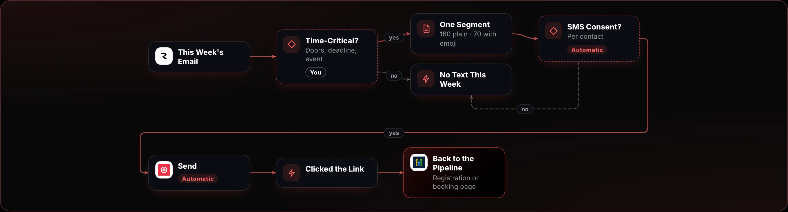
The Task
Add an SMS to the weeks that are time-critical (doors opening, a deadline, a live session), never to every letter. Each text is one segment, which is 160 characters of plain text or 70 once there's an emoji, and goes only to people who gave SMS consent. You're done when you have a pointer text and an invitation text ready, both under one segment, and your sender is set up.
Step by Step
Decide Which Weeks Get a Text
SMS is the rare rail. The playbook's cadence is email weekly, messaging fortnightly, and SMS only when it's time-critical. Text when:
a new cohort or event opens, or a seat deadline is close
a live session starts today
the "invitation back in" month of the rotation lands
Every other week: no text. That's what keeps the texts that matter from being ignored.
Only the time-critical weeks get a text. Demo output · rotation.md · Captured 10 Oct 2026
Fit It in One Segment
A text over one segment is split and billed as several. The sizes, from Twilio's docs:
Plain text (GSM-7): 160 characters in one segment, 153 per segment once it splits.
Any emoji or non-GSM character (UCS-2): 70 in one segment, 67 per segment once it splits.
Twilio's free segment calculator: paste your text and check it says 1 segment before you send. Twilio · Message Segment Calculator (https://twiliodeved.github.io/message-segment-calculator/) · Captured 9 Oct 2026
Write the Two Texts You Need
Pointer:{brand}: new playbook on {topic} is in your inbox. 2-min read: {short_link}
Invitation:{brand}: {first_name}, doors open for {event_title} on {date}. Your seat: {short_link}. Reply STOP to opt out
Start with who it's from, because people don't save your number. Use a short link. Include the opt-out wording where your country requires it.
Send Only With Consent
The Centre Does This
The twilio-setup job creates the Messaging Service with its inbound webhook, checks the balance is at least $20, buys a toll-free number (US and Canada) and submits toll-free verification with a screenshot of your live form, or files a regulatory bundle and buys the number with it elsewhere. Once SMS is verified, the funnel mirrors each WhatsApp touch by SMS, only to contacts who opted in.
You Do This
Give the centre your Twilio SID, key and secret, your legal business details and your country. India is blocked by DLT rules.
Building it by hand instead
Only text people who ticked SMS consent on your form. In the starter CRM that's consent_sms, and your funnel skips anyone without it. In GoHighLevel, use a workflow Send SMS step filtered to contacts with your SMS-consent tag. Send in their daytime, an hour after the email.
GoHighLevel: a Send SMS step, filtered to contacts with SMS consent. HighLevel Help · Send SMS Action in Workflows (https://help.gohighlevel.com/support/solutions/articles/155000002474) · Captured 24 Sept 2026
Write the SMS for This Week
Here is this week's newsletter email and what's time-critical this week: <doors opening / deadline / live session / nothing>.
If nothing is time-critical, reply "No SMS this week" and stop.
Otherwise write ONE text:
- Starts with "<brand>:" so they know who it's from.
- One reason to act now, and the {short_link}.
- Plain GSM-7 characters only: straight quotes, no emoji, no em dashes.
- 160 characters maximum INCLUDING "Reply STOP to opt out" if my country needs it (<country>).
- Print the character count and confirm it's one segment.
EMAIL:
<paste the email>
Examples From the Template Library
Build specs (no real example yet):SMS Twin of a Newsletter Email
What Good Looks Like
Keep SMS for time-critical moments: the last hour before a session, a deadline, doors opening.
Start every text with who it is from, because people do not save your number.
Fit each text in one segment: 160 plain characters, or 70 once there is an emoji.
Your buyers are in
Pick where most buyers are. The agent buys the number in every case; outside the US and Canada it first files the regulatory bundle, which Twilio reviews.
Your business's legal name
Exactly as it appears on your registration documents, including Ltd, LLC or Inc.
Texts a month, at most
Pick the band your reminders really need: registrants times the texts each one gets.
Contact email (Twilio sends the decision here)
Twilio sends its decision here. A rejection can be fixed on this card and approved again.
The Two Texts You Need
Pointer: {brand}: new playbook on {topic} is in your inbox. 2-min read: {short_link}. Invitation: {brand}: {first_name}, doors open for {event_title} on {date}. Your seat: {short_link}. Reply STOP to opt out. Each starts with who it is from and fits in one segment.
app/src/content/guides/s6-growth/s6-sms.ts
Common Mistakes
Ticking the SMS box by default; only a box the person ticks counts as consent.
A legal name that differs from your registration documents.
Curly apostrophes, which switch a whole text to the 70-character limit.
Registrants are reminded until they show up, then attendees and no-shows each get their own follow-up, all sent without anyone pressing send.
Many registrants never turn up because nothing reminded them, and without the two branches attendees and no-shows get the same wrong message.
How It Works
What the Agent Does
Loads every message into your funnel's scheduler, timed from your session's date.
Makes one Tantra campaign per message, email and WhatsApp. Each sends only to your registrants when its reminder is due; nothing goes to prospects.
Adds each registrant to the right campaign when the message is due, and a changed text gets a new campaign.
What You Do
Read every message as a registrant would, the night before and an hour before.
Name a real deadline for the last call, and keep it.
Every Step
Six touches before the event, then two branches after it: one for people who came, one for people who didn't. The agent drafted every message.
Every message has exactly one link. The day-before reminder sends at 8am in each person's own time zone.
Approve. The agent loads them into your funnel's scheduler. Each message runs as its own Tantra campaign, and WhatsApp versions go through your WhatsApp in Tantra to people who ticked the WhatsApp box.
Done When
As a test contact, you receive every touch on time.
Watch how to connect Tantra reminders1:04
Which Plan
Tantra Pro covers email and WhatsApp reminder steps. LinkedIn and WhatsApp accounts come with the plan, with no channel add-on. For WhatsApp steps, connect your WhatsApp under Channels; WhatsApp never goes through Twilio.
Permissions to Grant
The Tantra API key from your Connect Tantra card. The agent builds the campaigns from your approved copy and registers the webhook with it.
One omnichannel campaign per reminder (the day before, 1 hour before, we're live), each with a sending window open every day and every hour.
Where the Key Appears
Campaigns, Create Campaign, Omnichannel. Each sign-up on your funnel is imported into the right campaign by webhook, through Tantra's API, and step 1 sends the moment they are added. Connectors, Webhooks sends RSVPs, replies and unsubscribes back to your funnel.
Common Errors
A reminder went out hours late
The campaign's sending window was limited to working hours. Open Scheduling and allow every day and every hour.
The WhatsApp step can't be added
Connect your WhatsApp number under Connectors first. WhatsApp comes with your plan, with no add-on. If the step still shows a lock, send Tantra support a screenshot.
Registrants never reach the campaign
The campaign isn't launched, or the API key on your Connect Tantra card was revoked. Launch it, or paste a new key.
Your starter list got the reminder
Use a starter list with only yourself in it. Everyone after that arrives from your funnel.
S3: How to Get Registrants to Actually Show Up
Here's the number nobody wants to hear: roughly half the people who register never turn up. Not because your content is bad: they haven't seen it yet. Because life happened and nothing reminded them hard enough. The flow below is the fix. In the whiteboard teaching model it lifts show-up to 89%. The Funnel Equations chapter gives the reference bands to measure against: 25 to 40% for sign-ups who skip the thank-you page action, 45 to 70% for sign-ups who add the event to their calendar or join the WhatsApp group. Neither is a result. The show-up rate that counts is the one you measure on your own funnel.
Nurture is the cheapest lift in the entire funnel. You already paid to acquire these people. Every reminder that converts a registration into an attendee costs you almost nothing and is worth exactly as much as a new lead.
The Tantra Flow: six touches before, two branches after
The no-show branch is worth more than it looks. These people registered: they raised their hand and then life got in the way. They are not cold, and treating them like a lost cause is the most common unforced error in the whole funnel. The 89% in the diagram is the whiteboard teaching model, not a result. The Funnel Equations reference bands are 45 to 70% for sign-ups who take the thank-you page action and 25 to 40% for those who skip it.
Do This: Send the T−24h Reminder at 8am in Their Timezone
Not 8am in yours. A reminder that lands at 3am is a reminder that gets buried under everything that arrived after it. If your tool can't send by recipient timezone, that's a reason to change tools.
Task 2.4Write the Tantra Flow and Set the Send Windows
Generate all of it from your Day 1 offer and persona, then set the mechanics by hand:
Word counts matter. The T−24h email can be 180 to 220 words. The T−1h is 80 to 100. The "we're live" is 50 to 70 and contains one link. People skim in inverse proportion to urgency.
Every message has exactly one link. Two links is a decision, and a decision at T−15 minutes is a lost attendee.
Run every draft through a spam checker before it goes near a real list.
Set the five tags: webinar registrant, webinar attended, live webinar not watched, watched webinar replay, purchased. Every automation, report and audience keys off these, so name them once, write them down and never rename them.
OwnerYou · AI drafts, you set timingsToolWebinarGeek · GoHighLevel · Gmail · WhatsApp · Twilio · ElevenLabsTime2 to 3 hDeliverable14-node Tantra Flow, liveProofYou register as a test contact and receive every touch, on time
◆ What changes per funnel type · nurture
Webinar FunnelPurely time-triggered off one date. Build it once and every future run reuses it: change the date in the spec and all six touches move together.
Workshop · ChallengeThree nested copies of the same shape, plus the daily delivery loop: recap → the artifact they generated → what tomorrow needs. Non-completion on day two is your early warning that people will drop off.
Reverse SqueezeNot time-triggered at all: depth-triggered. Under 25% of Part 1 gets a re-engage; 25 to 75% gets the missing-piece nudge; over 75% goes straight to the Part 2 bridge.
Other types: book-a-call funnels replace show-up nurture with no-show rebooking, which recovers a meaningful slice of bookings · product launches run a dated open-cart countdown · free-plus-shipping switches nurture to post-purchase entirely, because the sale already happened.
The Metric for This Stage
Webinar: SUR Show-Up Rate = attendees ÷ registrants
Reverse Squeeze Page: NHWR Nurtured Half-Watch Rate = people brought past halfway by reminders ÷ people you can remind
Workshop Series: DHR Day-and-a-Half Rate = people who attended 1.5 days or more ÷ registrants
S3 · Multi-Channel Nurture
The Tantra Flow
Six timed touches before the session, then an attended or no-show branch, across four channels.
The Full Setup
The Task
Get registrants to actually turn up, then follow up with each person based on what they did. You'll send six timed touches across email, WhatsApp, SMS and an AI voice call, then split everyone into an attended branch and a no-show branch, and finally hand them all to the 52-week cadence. Tantra reminder campaigns and a set of behaviour tags run it without anyone pressing send. You're done when a test contact who attends and a test contact who deliberately misses both receive every touch on time and get the right tag automatically.
How This Changes by Mechanism
Webinar
Purely time-triggered off one date: confirmation, then 7 days before, 24 hours before (at 08:00), 1 hour before, 15 minutes before, and when it goes live, with SMS and the AI voice call added at go-live. Change the date in the spec and every touch moves together. Afterwards, attended people get the +0 offer and booking link, and no-shows get the replay after 24 hours with a real expiry.
Reverse Squeeze Page (VSL)
Not time-triggered at all, but depth-triggered, per person. Under 25% of Part 1 → re-engage · 25 to 75% → the missing-piece nudge · over 75% → the Part 2 bridge. Email and WhatsApp (with consent), plus retargeting audiences split by depth. There's no live moment; the premium branch books a call with its own reminders. The reminder schedule (automation 8) is replaced by depth triggers, built in the Stage 4 Reverse Squeeze guide (step 10).
Challenge
The clock runs once per day, plus whether each day was completed: reminder → live → the day's output and tomorrow's first task. Not finishing Day 2 is your early drop-off warning. Join links go out each morning in a WhatsApp announcement channel and by email. The daily output loop is a ninth automation, built in the Stage 4 Challenge guide (step 10), and the offer comes only on the last day.
Step by Step
Name Your Tags Once
The Centre Does This
The centre creates the tags in your CRM, and the funnel applies them: registered becomes webinar registrant, attended webinar attended, no-show live webinar not watched, replay watched watched webinar replay, and a payment purchased.
Building it by hand instead
Everything in this flow keys off tags on the contact. Name them once and never rename them:
webinar registrant: set by your page in Stage 2.
webinar attended and live webinar not watched: set from your event platform after the session.
watched webinar replay: set when someone watches the replay.
live webinar watched and webinar unsubscribed: also set by the platform sync, for a live viewer and for an opt-out.
purchased: set in Stage 5.
Create each tag before you build on it. In GoHighLevel, open a workflow's Contact Tag trigger, click + Add New Tag and type the name exactly as above.
A typo in a tag silently breaks every automation that listens for it.
Tags drive workflows: a Tag Added trigger starts the flow for everyone who carries it. HighLevel Help Centre · Workflow Trigger: Contact Tag · Captured 24 Sept 2026
Collect Channel Opt-Ins on the Form
The Centre Does This
The form saves each person's consents with the contact, and the funnel only sends WhatsApp and SMS to people who opted in.
Building it by hand instead
Only message people on channels they agreed to. Add a tick box for WhatsApp and one for texts and calls on the registration form. Your Stage 2 backend turns each ticked box into a tag on the contact (for example whatsapp_reminder, the tag the reminder automation checks). A box left unticked means no tag, and no message on that channel.
Only contacts with the matching opt-in tag are added to a reminder campaign for that channel.
The form asks for a mobile or WhatsApp number and says it is used for reminders by WhatsApp or SMS. The 3-Day AI RevOps Workshop · /workshop registration form, 390px · Captured 24 Sept 2026
Turn on the Event Platform's Own Emails
The Centre Does This
Tantra omni-channel campaigns send every reminder in this flow, as campaign steps for registrants imported by webhook: 7 days before, 24 hours before (at 08:00), 1 hour before, 15 minutes before, and when it goes live. WebinarGeek still sends its own confirmation with each person's join link.
Building it by hand instead
Your event platform sends the confirmation and reminders natively, but the reminders are not there by default. A new WebinarGeek webinar has only the confirmation email and a draft replay email. Create the rest:
Open the webinar and click Edit webinar → Emails.
Click New email → Reminder email.
Under Schedule email, set when it sends, then click Plan new email.
Repeat for each send time, one reminder email each: 7 days before, 24 hours before (at 08:00), 1 hour before, 15 minutes before, and when it goes live.
In each email, scroll to Send test e-mail and send yourself a copy. Do the same for the confirmation.
If you move the broadcast, these send times don't move with it. Open each email, click Cancel planned emails and reschedule them.
The Emails tab holds the confirmation and every reminder the platform sends itself. WebinarGeek Help Centre · Creating emails · Captured 24 Sept 2026
Write Every Touch With One Link
Generate every message from your conversion engine, one for each Tantra campaign step: 7 days before, 24 hours before (at 08:00), 1 hour before, 15 minutes before, and when it goes live. Then set the mechanics by hand:
24 hours before: 180 to 220 words. What to prepare before joining.
1 hour before: 80 to 100 words. The join link, again.
When it goes live: 50 to 70 words, one link.
Every message has exactly one link. Two links is a decision, and a decision 15 minutes before the start is a lost attendee. Run every draft through a spam checker before it goes near a real list.
Write every WhatsApp reminder as a plain statement of fact: the session starts tomorrow at 11:00, here is your link. Urgency words turn a utility template into a marketing one, which is charged at a higher rate and needs documented opt-in.
Paste every draft into a spam checker before it goes near a real list. Mailmeteor · Spam Checker (mailmeteor.com), live public tool · Captured 24 Sept 2026
Send the 24-Hour Reminder at 8am Their Time
The Centre Does This
At 08:00 in each recipient's own time zone, the funnel adds them to the Tantra campaign for the reminder 24 hours before, which sends the email and the WhatsApp message the moment they are added.
Building it by hand instead
Not 8am in yours. A reminder that lands at 3am gets buried under everything that arrives after it.
Store each registrant's time zone and send by it. If your tool can't send by the recipient's time zone, that's a reason to change tools.
In Tantra, open the reminder campaign's Scheduling and allow every day and every hour. A sending window limited to working hours holds the reminder back for hours.
If you build the reminders as a GoHighLevel workflow instead:
Open the workflow, then Settings, and set the time zone to Contact Timezone.
In the Wait step, turn on Advance Window and set Resume Between Hours to start at 8:00.
Have your backend save each registrant's time zone on the contact. A contact with none falls back to the account's time zone.
Connect WhatsApp in Tantra
The Centre Does This
The funnel makes one Tantra WhatsApp campaign per reminder on your WhatsApp account, starts it, and adds each registrant who ticked the WhatsApp box when the reminder is due. STOP replies reach your funnel through Tantra's webhook.
You Do This
Connect your WhatsApp in Tantra under Channels, on the Connect WhatsApp in Tantra card.
Building it by hand instead
WhatsApp reminders go through Tantra, never through Twilio. You connect your WhatsApp there once and the agent does the rest.
Connect the number in Tantra:
Use a number your buyers should hear from and that you can keep: reminders and replies run through it.
In Tantra open Channels, connect WhatsApp and scan the code with the WhatsApp app on that phone. Let it sync, which takes a few minutes.
Press the check on the card in your centre. It ticks only when Tantra shows the account running.
What the agent builds:
One campaign per WhatsApp reminder (24 hours before, 1 hour before, 15 minutes before, live), each with a single message and the join link.
Registrants join the right campaign through the funnel's webhook when the reminder is due, so they hear from you at the right minute and only once.
Only people who ticked the WhatsApp box are added. A STOP reply ends WhatsApp for them.
Whether Tantra needs WhatsApp message templates approved first is not in its public docs, so this step makes no claim about it. Check your Tantra workspace when you connect the number.
Text messages are the one place Twilio stays in this flow. Keep SMS to the last hour: 1 hour before and 15 minutes before, one link each, and only to people who opted in to texts. If you send SMS from GoHighLevel, set it up under Settings → Phone System → Trust Center. Before the first send:
Buy a Twilio number that can text your registrants' countries (the agent does this for you on the SMS card, after it files the regulatory bundle where one is needed).
United States: register a brand and a campaign for A2P 10DLC. It is required for any 10-digit number and takes up to two weeks.
India: local sending needs DLT registration with the mobile operators, and shortened links are not allowed. See Twilio's India guidelines.
Any other country: check Twilio's SMS guidelines for it.
Time the Reminders From the Broadcast Date
The Centre Does This
The funnel times every reminder from the event time and adds each registrant to that reminder's Tantra campaign by webhook: 7 days before, 24 hours before (at 08:00), 1 hour before, 15 minutes before, and when it goes live. Email goes 7 days, 24 hours and 1 hour before; WhatsApp goes 24 hours, 1 hour and 15 minutes before and when it goes live. SMS mirrors each WhatsApp touch once SMS is verified and the person opted in.
Building it by hand instead
Reminders are timed from the webinar_broadcast_date field that Stage 2 wrote on the contact, never from the moment someone registered.
In Tantra, one campaign per reminder:
Open Campaigns → Create Campaign → Omnichannel. Build one campaign for each reminder: 7 days before, 24 hours before (at 08:00), 1 hour before, 15 minutes before, and when it goes live.
Step 1 of each campaign is that reminder's message, on the channels it uses. It sends the moment a contact is added.
Under Scheduling, allow every day and every hour, then launch the campaign. A campaign that isn't launched receives nobody.
Your funnel adds each registrant to the right campaign when their reminder is due, by webhook through Tantra's API. Under Connectors → Webhooks, send replies and unsubscribes back to your funnel, so anyone who opts out leaves every later reminder.
Use a starter list with only yourself in it. Everyone after that arrives from your funnel.
There is no reminder 4 hours 30 minutes before. For an 11:00 ET session it would land at 06:30.
By hand in GoHighLevel instead: start from the supplied snapshot, which already contains this workflow, the confirmation workflow and the four custom fields: Import the snapshot. Open it while signed in to GoHighLevel and choose the sub-account to import into; signed out, it shows a generic product page.
The GoHighLevel workflow:
Trigger: the registration, either the tag webinar registrant or the form submission from your page.
Before each send, a Wait step set to wait until the field webinar_broadcast_date, with a negative offset for that reminder. Never use a plain wait for a number of days: it is wrong for everyone who did not register exactly that far ahead.
Before each send, a check that the join link field is not empty, so no reminder goes out with a blank link. A contact whose date is already past skips that step instead of getting a burst of late reminders.
Set the sub-account timezone (Settings → Business Profile) to your webinar's timezone, and give the workflow an exit on STOP or unsubscribe.
The supplied snapshot ships this workflow with four WhatsApp sends: 3 days before at 09:00, 1 day before at 09:00, 4 hours 30 minutes before and 15 minutes before. Change them to this guide's schedule: 24 hours, 1 hour and 15 minutes before, plus one at the start. Delete the 4 hours 30 minutes send. It moves with the session time, and for an 11:00 ET session it lands at 06:30.
To test without waiting days, move a test contact's webinar_broadcast_date to 65 minutes from now and watch the short reminders fire. Never edit the workflow's offsets to test.
What decides when each registrant is added to a campaign is a small scheduler on your funnel. Claude Code builds it from the prompt below. Clocks don't send webhooks, so it checks every 5 minutes, and on each run it does this:
Find the next session and the minutes left until it starts.
If it's within ±3 minutes of a reminder window (24h, 1h, 15m, live, then +1, +2 and +3 days), pick the contacts for that session who opted in.
Skip anyone whose session ID doesn't match, so nobody gets another event's reminder.
Add them to that reminder's Tantra campaign, once. For the follow-up days it adds a tag instead, and the tag starts the branch.
Wait between batches, or messaging apps flag you.
It runs on your funnel Worker as a Cron Trigger (*/5 * * * *): in the Cloudflare dashboard open the Worker, then Settings → Triggers → Cron Triggers → Add. Cron Triggers are on the free Workers plan too. The job uses the same WebinarGeek key as your Stage 2 backend, plus your Tantra API key.
The reminder workflow as shipped in the snapshot: the join-link check sits before each send, and every Wait is set to wait until webinar_broadcast_date minus the offset for that reminder. GoHighLevel · Automation → Workflows · reminder sequence · Captured 1 Oct 2026
Add the AI Voice Call at Go-Live
The Centre Does This
Pick ElevenLabs or Vodex on the AI voice call card and approve the script. The agent builds the call agent in your account, adds the call box to your form, and at go-live calls each person who ticked it, once. Each result shows on the card and your dashboard.
Building it by hand instead
At go-live, an AI voice call reaches the people who ticked the call box on your form. Keep it under 30 seconds: who's calling, that the session is starting now, and that the link is in their WhatsApp and email.
Call only people who opted in, say plainly that it's an automated call, and stop calling anyone who says no. Automated calls are regulated: in the United States, that means the TCPA and state rules.
The call is optional, and it runs on your own ElevenLabs or Vodex account. Twilio stays for text messages only.
In ElevenLabs Agents, create a new agent and pick Blank template. Give it a first message, the 30-second script as its system prompt, and a voice. Test it.
Open Phone Numbers → Import number → SIP trunk and add the number your phone provider gives you (Telnyx, Plivo, Vonage, Bandwidth or any SIP provider).
Next to the number, click Outbound call. Select the agent, enter your own phone number and click Send Test Call.
For the real run, start each call at go-live with ElevenLabs' SIP trunk outbound call API (POST /v1/convai/sip-trunk/outbound-call), once per person who opted in.
On Vodex, the same call is the project's agent setting (greeting and rules) plus one trigger-call at go-live with the opted-in list.
An AI voice agent starts from a blank template; give it the 30-second reminder script. ElevenLabs Docs · Agents platform quickstart · Captured 24 Sept 2026The Outbound Call dialog: pick the agent, enter a number, Send Test Call. ElevenLabs Docs · Twilio native integration · Captured 2 Oct 2026
Turn What They Did Into Tags
The Centre Does This
The attendance webhook from WebinarGeek tags each person attended, replay watched or no-show, with no CSV step. If no feed arrives, the funnel falls back to no-show three hours after the end. Zoom has no attendance feed, so Zoom events have no attended or no-show branches.
Building it by hand instead
After the session, your event platform reports who joined live, who watched the replay and who didn't show. An automation listens for each event, finds the contact in your CRM and applies the matching tag.
WebinarGeek sends the live-viewer and replay-viewer events 1 to 2 hours after the session, not at the end. Start the attended and no-show branches from the tag the sync adds, or wait at least 2 hours after the scheduled end. A branch that runs at the end time reads attendance that hasn't arrived and sends every attendee 'sorry we missed you'.
Connect the events:
In WebinarGeek, open Account → Integrations → Webhooks. Paste your backend's address (it must start with https) into the URL field and click Connect. Add a secret so your backend can check each request is real.
Click Add trigger and add New live viewer, New replay viewer and Webinar ended.
Your backend finds the contact by email and applies webinar attended on a live view and watched webinar replay on a replay view. When Webinar ended arrives, it applies live webinar not watched to everyone with no live view.
Don't trust tags alone for who attended. Check viewing time too: 'did not watch' in the data doesn't always mean 'did not attend'. Filtering on the wrong flag has sent 'sorry you missed it' to people who watched the whole thing. Each subscriber in the WebinarGeek API has watched_live and watch_duration (in seconds), and under 30 seconds of viewing is not counted. The same numbers are under Statistics → Viewers.
Live viewers and replay viewers are the signals for webinar attended, watched webinar replay and live webinar not watched. WebinarGeek Help Centre · Statistics automated webinar · Captured 24 Sept 2026
Build the Attended Branch
The Centre Does This
Once the attendance sync from step 9 has tagged them, everyone tagged attended gets the follow-ups at the end of the session and at +1, +2 and +3 days, without anyone starting them.
Building it by hand instead
Build the attendance sync in step 9 first, and check the webinar attended tag lands on a real contact after a real session. Nothing in your CRM knows who attended until that sync writes it. Without it this branch never starts, and every attendee gets the no-show messages.
No sync yet? Send everyone one follow-up that leads with the replay and suits both groups. Split into branches only once the tags arrive.
They've seen the offer. Four touches:
+0: the offer and the booking link, sent while they're still in the room.
+1 day: a recap and the first objection from your buyer profile, answered.
+2 days: proof and the second objection: a named result, not an adjective.
+3 days: last call, with a real deadline. If there's no deadline, don't use the words.
Build it in GoHighLevel:
Open Automation → Workflows and click Create Workflow.
Click Add New Trigger, choose Contact Tag, set the filter to Tag Added and pick webinar attended.
Add the four messages, with a Wait step (a set period of time) between them.
Switch Draft to Publish and click Save.
Each branch is a chain of wait steps and messages. HighLevel Help Centre · Workflow Action: Wait · Captured 24 Sept 2026
Build the No-Show Branch
The Centre Does This
Once the attendance sync from step 9 has run, everyone tagged no-show gets the replay follow-ups at +24 hours, +2 days and +5 days, without anyone starting them.
Building it by hand instead
This branch also waits for the attendance sync in step 9. A contact with no attendance tag at all means the sync didn't run: treat them as a no-show, and have the workflow alert someone, or the same failure repeats every week unnoticed.
They registered, so they're not cold. Four touches:
+24 hours: the replay, with an expiry. No expiry means no reason to watch today.
+2 days: the one thing they missed: one idea, with its timestamp, not 'here's the recording'.
+5 days: the replay closes tonight. Then actually close it.
Still nothing: the 30-day nurture. Unqualified is not the same as uninterested.
Build the branch the same way as step 10, with live webinar not watched as the trigger tag.
To close the replay for real, set its end date in WebinarGeek: Edit webinar → General → Dates and times → Replay → Settings, turn on Availability and set the Until date. The replay email is a draft until you schedule it: open it under Emails and use Schedule email.
Replay settings: Availability is on, with an Until date and time. WebinarGeek Help Centre · Change replay settings · Captured 2 Oct 2026The replay email is scheduled off the broadcast, like every other touch. WebinarGeek Help Centre · Email scheduling · Captured 24 Sept 2026Follow-up emails are scheduled in days, hours and minutes after each webinar starts. WebinarGeek Help Centre · Email scheduling · Captured 24 Sept 2026
Attach Each Email Template by Hand
In GoHighLevel, build each email under Marketing → Emails → Templates, inside a folder. Templates in a folder don't show at the top level, so open the folder to find them.
Then open Automation → Workflows, open the workflow, click the email action and pick the template. This step can't be done through the API. It's always manual.
Under the picked template is a Sync Edits to Template tick box. It is off on a new action, so later edits to the template do not reach this email. Tick it to keep the two the same.
In the workflow's email action, choose Select Existing Template and pick the one you built. HighLevel Help Centre · Managing email templates in workflow steps · Captured 24 Sept 2026With a template picked, the action shows its preview, the Sync Edits to Template tick box and the linked template. HighLevel Help Centre · Managing email templates in workflow steps · Captured 2 Oct 2026
Test It as Two Registrants
The Centre Does This
The test-run job walks two synthetic contacts through every timed message, a signed test payment and a test booking, and reports pass or fail per automation.
You Do This
Read the pass or fail report.
Building it by hand instead
Register as a test contact and attend. Check you get every touch, on time, and the webinar attended tag lands.
Register again with a second address and deliberately don't show. Check the live webinar not watched tag lands and the replay email arrives.
Nobody should touch anything for either test to pass.
Move Everyone Into the 52-Week Cadence
The Centre Does This
Anyone who has not bought gets four weekly follow-up emails from the funnel, and buyers leave every branch. The long-term newsletter itself is not run by the centre.
Building it by hand instead
Nobody leaves the funnel. They just change speed. When the attended branch ends, or the no-show branch reaches the 30-day nurture, everyone still on your list moves into the 52-week cadence in Stage 6.
Build the Reminder Scheduler
Build a scheduled job that runs every 5 minutes. Each run: fetch my next upcoming session from my event platform (broadcast ID and start time); compute minutes until start; if it is within ±3 minutes of one of these windows: 1440, 60, 15, 0 minutes before, or 1, 2, 3 days after, find contacts whose broadcast_id matches and who carry the opt-in tag for the channel; for the four reminder windows, add each contact to that window's Tantra omnichannel campaign through the Tantra API (one campaign per window: 1 day, 1 hour, 15 minutes, going live; step 1 sends when a contact is added); for the three follow-up windows, add the tag followup_day_1/2/3 so my CRM workflow sends the message; format the date and time in each contact's own time zone; never add or tag the same contact twice for the same window; pause between batches. Log every run. Show me a dry run against a session starting in 61 minutes.
Build specs (no real example yet):Tantra Flow Touch Schedule · AI Voice Reminder Call Script · Pre-event Value Email · Live-Now Email
S5 · Revenue & Deal Pipeline
Reminders and Follow-Ups for Every Stage
One sequence per stage, each with its own clock, channel and exit, generated from your survey answers.
The Full Setup
The Task
Give every pipeline stage its own sequence: what fires automatically, what a person does, how fast, and where the contact goes if nothing happens. The agent drafts the words from your approved Day 1 and Day 2 answers, so every message sounds like you and names your offer, and you load them into your CRM. You're done when every stage in your pipeline has a sequence with an exit condition, and a reply or a booking stops it.
Step by Step
Put a Clock on Every Stage
Copy this matrix into your spec. Each line is one sequence:
Enquiry: an acknowledgement email with the booking link and an SMS at once. A call within 5 minutes during working hours, then a call a day for 3 days (day 2 adds an SMS with three slots).
Form filled, no booking: reviewed within 12 hours. Qualified leads get a call to book; unreachable ones get the calendar link.
Call booked: confirmation email and SMS at once, then reminders 48 hours, 24 hours and 1 hour before.
No show: an SMS with new slots inside 5 minutes, an email inside 15, two calls the same day, then the 7-day workflow.
Follow-up: a recap email the same day; follow-ups weekly for high intent, every two weeks for medium.
Proposal sent: a follow-up at 48 hours and at 7 days, plus a call when it's opened.
Invoice sent: reminders 3 days before, on the due date, and 3 and 7 days late.
Paid: the welcome email at once, and kickoff booked within 3 to 7 business days.
Lost: a door-open email, a reason code and a re-engage date.
Each line of the matrix becomes one workflow: a trigger, waits and send actions. HighLevel Help · Send SMS Action in Workflows (https://help.gohighlevel.com/support/solutions/articles/155000002474) · Captured 24 Sept 2026
Get Your Templates From Your Approved Answers
The Centre Does This
You don't paste your answers anywhere. The agent already drafted your reminders and follow-ups from them on Day 2's Approve every reminder and follow-up card (a reverse squeeze and a challenge each have their own version), and your welcome email on Approve your close: booking to payment.
Your Tantra RevOps OS context then carries a context/workshop/follow-ups/ folder, built on the server from the same approved answers. It has one file per stage: the trigger, the clock, the exit and every message you approved for it, word for word.
You Do This
Read the drafts on those two cards and approve them. Some steps in that folder are marked To write, because no card drafts them yet. For those, start a new session in your Tantra RevOps OS project and run the Finish the Follow-Ups in Your Tantra RevOps OS Context prompt below.
Building it by hand instead
Open your survey page and click Copy answers (or Download my answers). Start a new session in your Tantra RevOps OS project, paste the Building Without the Centre prompt below, and paste your answers where it says so.
It writes one file per stage into follow-ups/. Each file holds the email, SMS and WhatsApp versions, the send offsets and the exit condition, using your offer, your call name, your prep question and your channels. Read every file once. Anything that doesn't sound like you, tell it why, and it fixes it.
Tip The folder only lists channels you connected. No SMS sender means no SMS step, and the folder's README says so.
Build the Booked-Call Reminders First
If you build only one sequence today, build this one. The trigger is a booking created. The steps are a confirmation email and SMS, a wait until 48 hours before, an email, a wait until 24 hours before, an email and SMS, a wait until 1 hour before, and an SMS.
Put a reschedule link in every message. A moved call beats a no-show.
Settings → Calendars → Edit your sales-call calendar. HighLevel Help · Calendars: SMS, Email and In-App Notifications (https://help.gohighlevel.com/support/solutions/articles/155000003441) · Captured 24 Sept 2026Turn on the confirmation by SMS as well as email, for the contact. HighLevel Help · Calendars: SMS, Email and In-App Notifications (https://help.gohighlevel.com/support/solutions/articles/155000003441) · Captured 24 Sept 2026
Build the No-Show Recovery
You Do This
Sales-call no-show recovery lives in GoHighLevel workflows, which the centre cannot create yet. Build it by hand.
The trigger is an appointment marked no-show, which also adds call-no-show. The sequence:
SMS within 5 minutes with new slots.
Email within 15 minutes: what they'd have got, plus the rebook link.
A task for two call attempts the same day.
The 7-day email, SMS and call workflow.
Day 7 with no reply adds ghosted and hands them to the 52-week engine.
A rebooking at any point cancels the workflow.
Start the recovery from Appointment Status, filtered to no-show. HighLevel Help · Workflow Trigger: Appointment Status (https://help.gohighlevel.com/support/solutions/articles/155000002619) · Captured 24 Sept 2026The 5-minute text: paste your generated copy and insert the booking link field. HighLevel Help · Send SMS Action in Workflows (https://help.gohighlevel.com/support/solutions/articles/155000002474) · Captured 24 Sept 2026
Build Proposal and Invoice Follow-Ups
You Do This
The proposal watchdog and invoice reminders are not built in the centre. They stay by hand.
Proposal watchdog: the trigger is the stage moving to Proposal Sent. Wait 48 hours; if there's no reply, send the email. Wait until day 7, then create a call task and send an offer of a 15-minute walkthrough. On the expiry date, extend once or close it as lost with the reason timing, so the Nurture-Back pipeline picks it up.
Invoice reminders: the trigger is the invoice being sent. Remind 3 days before the due date, on it, then 3 and 7 days late. Payment moves the deal from the payment webhook, never from someone ticking a box.
The watchdog starts when the deal enters Proposal Sent. HighLevel Help · Workflow Trigger: Pipeline Stage Changed (https://help.gohighlevel.com/support/solutions/articles/155000002493) · Captured 24 Sept 2026
Make Every Sequence Stop When People Act
The Centre Does This
In the live funnel, buyers leave every message branch the moment a payment webhook sets purchased.
You Do This
Sequences you build by hand in GoHighLevel need their own exit rule, and a test of each.
Building it by hand instead
Set one exit rule on every sequence: a reply, a booking or a stage change removes the contact. Nobody should get a no-show text after they've rebooked, or an invoice reminder after they've paid. Test each exit once with a test contact before you switch the sequence on.
Filters and goals keep a sequence to the right people and stop it when they act. HighLevel Help · Workflow Trigger: Pipeline Stage Changed (https://help.gohighlevel.com/support/solutions/articles/155000002493) · Captured 24 Sept 2026
Finish the Follow-Ups in Your Tantra RevOps OS Context
Read brief.md, spec.json, decisions.md and every file in assets/ and follow-ups/, all inside context/workshop/, in full. Don't change anything live.
follow-ups/ has one file per stage of my sales pipeline. Each file has the trigger, the exit, a table of steps and the messages I already approved. Some steps are marked "To write".
For every step marked "To write":
1. Write the copy under the "To write" heading of the same file, one sub-heading per step, named by its timing and channel.
2. Email: subject, preheader, body. SMS: one segment (160 characters in plain text, 70 if it contains an emoji). WhatsApp: under 400 characters. Call steps: a script of 3 to 5 lines.
3. Use personalisation fields in {curly_braces}: {first_name}, {booking_link}, {meeting_link}, {reschedule_link}, {invoice_number}, {amount}, {due_date}, {payment_link}, {expiry_date}.
Rules:
- Use only facts from spec.json, decisions.md and assets/. If a fact is missing, leave a {placeholder} instead of inventing it.
- Never change a message I already approved.
- Write only the channels each table lists. Don't add an SMS or WhatsApp step the table doesn't have.
- No invented numbers, results, testimonials or client names. If a message needs proof, use my proof exactly as written in spec.json. If there is none, write the message without a proof line.
- Sound like the voice in spec.json. Short sentences. No hype words.
When you're done, print a one-line summary per file, then ask me which file I want to review first.
Building Without the Centre: Generate Every Follow-Up From Pasted Answers
You are my revenue-operations writer. Using ONLY the facts in my survey answers below, write the follow-up templates for every stage of my sales pipeline.
My pipeline (11 stages + a No Show exit): Form Filled → Eval Call Scheduled (No Show exit) → Qualified / Unqualified → Sales Call Held → Follow-Up → Proposal Sent → Proposal Accepted → Payment Completed → Onboarding → Delivery.
Use these facts from my answers:
- Day 1: my offer sentence (who, before, after, method, time, guarantee), my method (its name, its steps and why the obvious alternative fails), my buyer (headcount, industry, geography, the role that signs, the objection that kills deals in their words), the funnel I'm building and my event line.
- Day 2: the channels I send traffic from, the reminders every registrant gets, my pitch (when the offer lands, what it is, the price), how a buyer gets from the offer to paying me, and my follow-up for people who did not buy (the first message, when it sends, which channel).
- Added by hand below my answers (the survey doesn't ask for these): who works each stage, my call's name and prep question, my proposal expiry and "not now" timing, my strongest proof, my brand voice, which follow-up channels I may use, and which extra pipelines I'm running. If one is missing, leave a {placeholder} for it instead of inventing it.
Write one markdown file per sequence into a folder called follow-ups/:
01-enquiry.md · 02-form-no-booking.md · 03-call-reminders.md · 04-no-show-recovery.md · 05-post-call-recap.md · 06-follow-up.md · 07-proposal-watchdog.md · 08-invoice-reminders.md · 09-welcome-onboarding.md · 10-deal-lost.md · 11-nurture-check-in.md
plus one file per extra pipeline I chose (no-show recovery, nurture-back, referral & expansion, re-engagement).
Each file must contain:
1. Trigger (the event that starts it) and exit (what stops it: a reply, a booking or a stage change).
2. A table of steps: offset (e.g. +5 min, 24 hours before, day 3), channel, owner (automation or which role), purpose.
3. The full copy for every step, per channel: email (subject, preheader, body), SMS (one segment: 160 characters in plain text, 70 if it contains an emoji), WhatsApp (under 400 characters; mark it "needs approved template" if it's business-initiated), and a call script of 3 to 5 lines for call steps.
4. Personalisation fields in {curly_braces}: {first_name}, {booking_link}, {meeting_link}, {reschedule_link}, {invoice_number}, {amount}, {due_date}, {payment_link}, {expiry_date}.
Rules:
- Only use channels my answers name. If SMS isn't named, write no SMS steps and say why at the top of the file.
- Use my call's name and my prep question in the booking and reminder messages, if I added them; otherwise use {call_name} and {prep_question}.
- Use my proposal expiry and "not now" timing exactly as I wrote them, if I added them; otherwise use {expiry_date} and {not_now_days}.
- No invented numbers, results, testimonials or client names. If a message needs proof, use my strongest proof exactly as written. If I gave none, write the message without a proof line.
- Sound like my brand voice if I described it. Short sentences. No hype words.
When you're done, print a one-line summary per file, then ask me which file I want to review first.
MY SURVEY ANSWERS:
<paste your Day 1 and Day 2 answers here, then add the hand-written facts listed above>
Examples From the Template Library
Post-session SMS Follow-Up Set · Post-session WhatsApp Follow-Ups, One Case Study per Message
Build specs (no real example yet):Follow-Up Matrix for Every Stage · Booked-Call Confirmation and Reminders · Call No-Show Recovery · Enquiry to Booked Call (3-Day Cadence) · Post-Call Recap Email · Proposal Watchdog · Invoice Reminders · Welcome and Onboarding Kickoff · Deal Lost: Door-Open Email
What Good Looks Like
Write WhatsApp reminders as plain statements of fact with one link; people read them on a phone between other things.
Make the replay expire, then actually close it. No expiry means no reason to watch today.
Answer one objection per attended follow-up, in your buyer's own words.
Make the second no-show email about the one thing they missed, with its timestamp.
The day before, 8am their time (email + WhatsApp): what to prepare
Give them one thing to prepare or bring, so the session already has a stake for them.
We're live (WhatsApp): one link
Write it for the person who forgot: one line saying the session is on now, and the join link.
Came: straight after (email): the offer and booking link
Send while they are still in the room: the offer and the booking link, nothing else.
Came: three days after (email): last call, a real deadline
Only say last call if the deadline is real and matches the slide and every email.
Didn't come: next day (email): the replay, with its expiry
Lead with the replay and the exact time it closes.
The No-Show Branch
They registered, so they are not cold. After 24 hours: the replay, with an expiry. Two days after: the one thing they missed, one idea with its timestamp, not a link to the recording. Five days after: the replay closes tonight, and then you close it. Still nothing: a 30-day nurture, because unqualified is not the same as uninterested.
Each viewer gets the follow-up that matches how much of Part 1 they watched, instead of everyone getting the same reminder.
Clock-based reminders have nothing to count down to here; without depth triggers, your best viewers and your drop-offs hear the same message.
How It Works
What the Agent Does
Loads the four emails into your funnel's scheduler.
Sends each contact the email for the depth recorded on their contact.
What You Do
Find the moment in Part 1 most viewers need, and timestamp it for the middle band.
Write a different hook for low-depth viewers, not a louder version of the first.
Every Step
Follow-ups go by how much of Part 1 they watched: under 25% one re-engage; 25 to 75% the missing piece, timestamped; over 75% straight to the Part 2 bridge.
Approve. The agent loads them into your funnel's scheduler.
Tantra Pro covers email and WhatsApp reminder steps. LinkedIn and WhatsApp accounts come with the plan, with no channel add-on. For WhatsApp steps, connect your WhatsApp under Channels; WhatsApp never goes through Twilio.
Permissions to Grant
The Tantra API key from your Connect Tantra card. The agent builds the campaigns from your approved copy and registers the webhook with it.
One omnichannel campaign per reminder (the day before, 1 hour before, we're live), each with a sending window open every day and every hour.
Where the Key Appears
Campaigns, Create Campaign, Omnichannel. Each sign-up on your funnel is imported into the right campaign by webhook, through Tantra's API, and step 1 sends the moment they are added. Connectors, Webhooks sends RSVPs, replies and unsubscribes back to your funnel.
Common Errors
A reminder went out hours late
The campaign's sending window was limited to working hours. Open Scheduling and allow every day and every hour.
The WhatsApp step can't be added
Connect your WhatsApp number under Connectors first. WhatsApp comes with your plan, with no add-on. If the step still shows a lock, send Tantra support a screenshot.
Registrants never reach the campaign
The campaign isn't launched, or the API key on your Connect Tantra card was revoked. Launch it, or paste a new key.
Your starter list got the reminder
Use a starter list with only yourself in it. Everyone after that arrives from your funnel.
S3 Nurture: Follow Up by How Much They Watched, Not by the Clock
Sound familiar? Someone watches four minutes of your video, their phone rings, and they never come back.
A webinar reminder says "we start in one hour". You have no start time. So every message here is triggered by what one person did.
You have two groups to follow up. The first group hasn't finished the video yet, and every message has one job: get them back to it. The second group has applied, and every message has a different job: get them to the call.
The centre builds the first four emails for you. This is the full set: seven emails, four WhatsApp messages, two texts and one optional AI call.
What They Did
Email
WhatsApp
SMS or AI Call
Opted in at the bridge
The confirmation, with the Part 2 link
The same link in one line
Nothing
Watched under 25%
One re-engage. One, not a series
Nothing
Nothing
Watched 25 to 75%
The missing piece, with a link to the exact timestamp they stopped before
A short nudge to the same timestamp
Nothing
Watched over 75%, no opt-in
Straight to the Part 2 bridge
The same link
One text
Applied and booked a call
What to prepare, then one proof story
A reminder the day before and on the day
One text before the call · an optional AI call for people who ticked the consent box
Went quiet for 14 days
One re-engagement email
Nothing
Nothing
Email goes through Resend or Tantra. WhatsApp goes through Tantra. Twilio sends the texts. The AI call is optional and runs on Vodex or ElevenLabs.
Behind those messages sit the automations that keep the list clean: opens and clicks written to the contact, inbound replies on WhatsApp and SMS logged against it, STOP and opt-out honoured on every channel, bounced addresses suppressed, call outcomes and transcripts saved to the CRM, and an alert to you when a hot lead replies.
How many touches is right? Size it to your price: if your offer is under $500, collapse to a three-email sequence. Over $10,000, extend to 14 touches across 30 days.
RSP S3Approve the Depth Messages and Test Every Branch
A branch that never fires loses people silently. So you test each one with a session of your own before any traffic arrives.
Approve the follow-ups card: the opt-in confirmation, the under 25% re-engage, the 25 to 75% missing piece, and the over 75% bridge email.
Write the WhatsApp twins for the confirmation and the 25 to 75% nudge, and submit them as message templates.
Run three test sessions with three addresses: stop one at about 10%, one at about 50%, and one past 75% without opting in.
Ask Claude Code to read the three contacts back and confirm each got its own message and nobody got another branch's.
OwnerYou · AI drafts, you approveToolClaude Code · Resend or Tantra email · Tantra WhatsApp · TwilioTime60 minDeliverable4 emails live · 2 WhatsApp templates submitted · 3 branches testedProofEach of the three test contacts gets the message for its depth, and only that one
What Good Looks Like
Measure each band by its bridge opt-in rate, the number that proves this stage works.
Build ad audiences from the same depth events, so retargeting matches the email each viewer got.
Keep each email to one link: Part 1 at the right second, or Part 2.
On opt-in (email): your Part 2 link
Put the Part 2 link in the first line. This email is the backup to the page that opens at once.
Watched under 25% (email): one re-engage
Assume the hook missed. Restate the promise a different way in one short email, then stop.
Watched 25 to 75% (email): the missing piece, timestamped
Name the one idea they missed and link Part 1 at that second, so one click lands them on it.
Watched over 75% (email): straight to Part 2
No re-pitch of Part 1. Tell them Part 2 is ready and what it goes deeper on.
Three Depth Bands, Three Messages
Under 25% consumed: wrong person, or wrong hook. One re-engage, then let them go. 25 to 75% consumed: interested, interrupted. Send the missing piece, timestamped. Over 75% consumed: your best lead of the week. Straight to the Part 2 bridge.
workshop-plan/playbook.html
Common Mistakes
Sending everyone a generic nudge to watch the video.
Chasing low-depth viewers repeatedly; one re-engage, then let them go.
Leaving a timed reminder sequence running alongside the depth triggers.
As a test contact, you receive every message on time.
Watch how to connect Tantra reminders1:04
Which Plan
Tantra Pro covers email and WhatsApp reminder steps. LinkedIn and WhatsApp accounts come with the plan, with no channel add-on. For WhatsApp steps, connect your WhatsApp under Channels; WhatsApp never goes through Twilio.
Permissions to Grant
The Tantra API key from your Connect Tantra card. The agent builds the campaigns from your approved copy and registers the webhook with it.
One omnichannel campaign per reminder (the day before, 1 hour before, we're live), each with a sending window open every day and every hour.
Where the Key Appears
Campaigns, Create Campaign, Omnichannel. Each sign-up on your funnel is imported into the right campaign by webhook, through Tantra's API, and step 1 sends the moment they are added. Connectors, Webhooks sends RSVPs, replies and unsubscribes back to your funnel.
Common Errors
A reminder went out hours late
The campaign's sending window was limited to working hours. Open Scheduling and allow every day and every hour.
The WhatsApp step can't be added
Connect your WhatsApp number under Connectors first. WhatsApp comes with your plan, with no add-on. If the step still shows a lock, send Tantra support a screenshot.
Registrants never reach the campaign
The campaign isn't launched, or the API key on your Connect Tantra card was revoked. Launch it, or paste a new key.
Your starter list got the reminder
Use a starter list with only yourself in it. Everyone after that arrives from your funnel.
What Good Looks Like
Each reminder recaps yesterday's output and names what today needs, so the days read as one build.
Keep the offer out of Days 1 and 2. Those days earn Day 3 by shipping something real.
Chase anyone who did not finish Day 2 the same evening.
Day 2, an hour before (email + WhatsApp): recap of day 1 and what today needs
Open with what they built on Day 1, then the one thing to have ready today.
Day 3, an hour before (email + WhatsApp): recap and the offer today
Recap, then say plainly that today ends with an offer. No surprise pitch.
After day 3 (email): last call, a real deadline
Name the deadline and what happens after it. Send it only if the deadline is real.
Day 2 Is the Early Warning
Someone who does not finish Day 2 is the early warning: chase them the same evening. Each day's survey triggers the AI to generate that day's output and deliver it as a PDF and a link, logged on the contact, so a missing output shows up as a stuck stage.
Pitching on Day 1, before anyone has seen the method work.
Recaps that summarise the talk instead of the attendee's own output.
A last-call deadline you later extend.
D2·13WebinarChallenge1 min
Optional: An AI Voice Call at Go-Live
Why It Matters
This is an optional extra (V2). When your session starts, an AI voice calls the people who ticked a box asking for a reminder call. It takes under 30 seconds: who's calling, that you are live now, and that the link is in their WhatsApp and email.
A decision on whether an AI voice calls the registrants who asked for a reminder the moment your session starts.
Nothing breaks. The call is an optional extra, and your reminders still go out by email, WhatsApp and text without it.
How It Works
What You Do
Pick ElevenLabs, Vodex or no call.
Open your own account with the tool you pick. The agent never buys a number for you.
Every Step
Pick the tool that places the call, or no call. You need your own account: ElevenLabs calls from a number you add on a SIP trunk, Vodex from the caller ID on your Vodex project. Twilio stays for text messages only.
Only people who tick the call box on your form get a call, and each one is called once. Automated calls are regulated (in the US, the TCPA and state rules), so the box is never ticked for them.
Pick no call if you are unsure. Your funnel is complete without it, and you can add the call later.
Choose the tool you already have a calling number on: a SIP trunk number for ElevenLabs, a project caller ID for Vodex.
Keep it opt-in. Only people who tick the call box get a call, and each one is called once.
AI voice call at go-live
Pick the tool you already have an account and a calling number with. No voice call is a complete answer.
Common Mistakes
Planning to call from your Twilio number. Twilio stays for text messages only here.
Treating the call as a broadcast to every registrant. Automated calls are regulated, so the box is never ticked for anyone.
D2·14WebinarChallenge5 min
Connect ElevenLabs for the Go-Live Call
Why It Matters
ElevenLabs connected with a number to call from, so the agent can build your call agent and place the go-live calls.
You picked ElevenLabs for the go-live call, so without this connection the script has no agent to speak it and no call goes out.
How It Works
What the Agent Does
Builds one call agent from the script you approve.
Finds the SIP trunk number it calls from.
Calls each registrant who asked for a call when your session starts, once.
What the Agent Does With This Access
Builds one call agent from the script you approve, finds the SIP trunk number it calls from, and calls each registrant who asked for a call when your session starts. It never buys a number and never calls anyone who didn't tick the box.
What You Do
Open an ElevenLabs account on a plan that includes phone calls.
Import your number over a SIP trunk from your phone provider.
Create an ElevenLabs account on a plan that includes phone calls.
Open Phone Numbers → Import number → SIP trunk and add the number your phone provider gives you (Telnyx, Plivo, Vonage, Bandwidth or any SIP provider). Don't import a Twilio number: Twilio is for text messages only here.
Open Developers → API Keys → Create key, set ElevenAgents to Write, and paste the key below.
Connected. The agent can build your call agent and place the calls.
What Good Looks Like
Import the number first. The agent never buys one, so it needs a SIP trunk number already in your account.
Give the key one permission: ElevenAgents set to Write. It needs nothing else.
Use a number from a SIP provider such as Telnyx, Plivo, Vonage or Bandwidth.
Common Mistakes
Importing a Twilio number. Twilio is for text messages only here.
Creating the key before the number is in. The agent then has nothing to call from.
D2·15WebinarChallenge5 min
Connect Vodex for the Go-Live Call
Why It Matters
Vodex connected to the project that holds your caller ID, so the agent can set up the call and start it at go-live.
You picked Vodex for the go-live call, so without this connection the script never reaches a call agent and no call goes out.
How It Works
What the Agent Does
Writes the call agent's greeting and rules into your project from the script you approve.
Starts one call to each registrant who asked for one when your session starts.
What the Agent Does With This Access
Writes the call agent's greeting and rules into your project from the script you approve, then starts one call to each registrant who asked for one when your session starts. It never calls anyone who didn't tick the box.
What You Do
Create the Vodex account and a project for your event with your caller ID number on it.
Email Vodex support for the API key and account URL.
Paste the key, the account URL and the project ID.
Connected. The agent can build your call agent and place the calls.
What Good Looks Like
Email support today. The key comes back by email from a person, so it is the slow part of this card.
Make one project for this event, so the caller ID and the script stay together.
Paste all three values in one sitting: the key, the account URL and the project ID.
Common Mistakes
Looking for a key in the Vodex dashboard. You get it by emailing support@vodex.ai with the subject Request API Key.
Creating the project without a caller ID number. The calls have nothing to come from.
D2·16WebinarChallenge3 min
Approve Your Go-Live Call Script
Why It Matters
An approved call script, a call agent built in your account, and a call box on your registration form.
The tool is connected but silent: no call agent exists and no call box is on your form, so nobody can ask for the call.
How It Works
What the Agent Does
Drafts the call from your approved "we're live" reminder.
Builds the call agent in your account and adds the call box to your registration form.
Calls everyone who ticked the box when your session starts, once, and records each result on this card.
What You Do
Read the script aloud and time it.
Approve it, or edit it until it sounds like you.
Every Step
The agent drafted the call from your approved "we're live" reminder. Read it aloud: it should take under 30 seconds and say it's an automated call.
Approve. The agent builds the call agent in your account and adds the call box to your registration form. When your session starts, it calls everyone who ticked it, once, and records each result here.
Your call agent is built and the call box is on your form.
What Good Looks Like
Under 30 seconds when read aloud: who is calling, that you are live now, and where the link is.
Say it is an automated call in the first sentence.
Point to the link in their WhatsApp and email. Nobody can click a phone call.
One message only: you are live now. No offer and no question.
What the call says: under 30 seconds, says it's automated, points to the link in their WhatsApp and email
Open with who is calling and that the call is automated. Say the session is starting now and that the link is in their WhatsApp and email, then stop.
Common Mistakes
Reading a web address or a number aloud for people to type.
Approving without reading it aloud. Words that read well can sound stiff when spoken.
D2·17WebinarChallenge45 min
Write Your Webinar Deck's Story
Why It Matters
Every strong webinar deck runs the same arc: promise, credibility, problem, the shift, the method, proof, the offer, the call to action and Q&A. Your offer, method, buyer and proof are already in. These answers are the rest of the raw material, so the agent can build every slide in your words.
Every section of your webinar deck has its raw material: the promise, who it is for, your numbers, your story, the problem, the shift, the proof and what to expect.
A deck built from an offer sentence alone has no story, no voices and no proof, and an audience that hears no proof doesn't book.
How It Works
What the Agent Does
Drafts every answer from your offer, method, persona, proof, speaker bio and anything you attach, in the format each label asks for.
Leaves the problem numbers empty unless you gave it a number with a source, and marks anything it inferred with [check].
What You Do
Swap every [check] for the real fact before you mark the card done.
Paste real buyer quotes from call notes, emails or reviews, word for word.
Pick one case study you can name, with its before, after and date.
Every Step
Read how the deck runs in the help below: the ten sections in order, and where your polls, chat prompts and calls to action sit.
Fill the opening: the one-line promise under your title, who it is for, and the three things they leave with.
Fill your credibility: three numbers you can show, then your story in three beats.
Fill the problem: numbers only with their source, real buyer quotes, and what staying stuck costs.
Fill the shift and the proof: old way against new way, your reframe, one case study with a number, and what attendees can realistically expect.
Done When
Every section of your deck has its raw material, in your words.
The Ten Sections of a Webinar Deck
1. Open and promise (minutes 0 to 8): the title, a chat prompt, who it is for, poll 1, the roadmap and what they leave with.
2. Credibility (8 to 10): you in three numbers, then your story.
3. Problem and stakes (10 to 16): sourced numbers, buyer quotes, poll 2, the cost of waiting, a soft call to action with no price.
4. Old way and new way (16 to 19): the contrast and your reframe.
5. The method (19 to 34): one slide per step, a chat prompt, the demo, poll 3, a checkpoint.
6. Proof (34 to 39): one case study, results, what to realistically expect.
7. The offer (39 to 43): the bridge line, the offer, what's included, the price or how to start, the guarantee.
8. Objections (43 to 44): the three questions everyone asks.
9. Call to action (44 to 46): poll 4, the next step with a QR code and the link in the chat.
10. Q&A (46 to 60): with the next step on screen.
A 45-minute session keeps the order on a shorter clock. A challenge splits it over three days, with the offer only on day 3.
D2 Write Your Webinar Deck's Story
Have you ever sat through a webinar where the host clearly knew their stuff, and you still left without booking anything?
I have. And when I went back through the decks of the webinars that did book calls, the difference wasn't the content.
It was the order.
I took four real webinar decks we built for clients in four different markets (B2B software, an agency, executive education and owner coaching) and laid them side by side. Every one of them ran the same arc. This task gathers your raw material for that arc. The next task turns it into slides.
The Arc Every Strong Deck Shares
Section
Its one job
What you write on this card
1. Open and promise
They decide in the first minute whether the hour is for them
The promise line, who it is for, three takeaways
2. Credibility
Earn the right to teach, in under a minute
Three numbers you can show, your story in three beats
3. Problem and stakes
Make them feel it, in numbers and in their own words
Sourced numbers, real quotes, the cost of waiting
4. Old way and new way
Blame the method, never the buyer
Three old against new rows, your reframe
5. The method
Teach the named steps, one slide each
Already in (your Day 1 method)
6. Proof
Show it worked for someone like them
One case study, what to realistically expect
7 to 10. Offer, objections, call to action, Q&A
Turn the hour into the next step
The next task, Approve Your Webinar Deck
How to Do It, Step by Step
Attach what you have. Call notes, reviews, testimonials, an old deck. The agent only takes quotes and numbers from what you attach.
Press Draft with AI. It fills every field in the exact format the label asks for, from your Day 1 answers. It never invents a number, a quote or a source; anything it inferred says [check].
Write the promise. One thing they can use tomorrow. It sits under your title on slide 1.
Name who it is for. Two to four groups, each with their pain in one line: who | their pain.
Give three numbers that earn you the room.number | what it counts. Only numbers you could show if someone asked.
Tell your story in three beats. Where you were, what broke, what you found. One line each.
Fill the problem. Numbers only with a source (your own data counts), three or four buyer quotes word for word, and what staying stuck costs each month.
Fill the shift and the proof. Three old way against new way rows, your reframe, one case study, and up to three honest ranges.
Swap every [check] for the real fact, then mark the card done.
Slide by Slide: What Each Answer Becomes
Here's exactly where each answer lands, with an example from each kind of business.
Slide
Your answer
Example
1. Title
The promise line under your title
B2B software: "Leave with the four-step plan that books 10 demos a week from buyers you pick by name."
3. Who This Is For
Two to four who | pain lines
Consultancy: "Managing partners | new work arrives in bursts from a few introducers"
6. What You Leave With
Three takeaways
Course: "A weekly pipeline review with four questions"
7. Your Host
Three number | what it counts lines
Solo: "9 | calls booked by Kite Studio in its first month"
8. Why I Built This
Three story beats
Consultancy: "When one of our three introducers retired, a whole year of new fees went with him."
10. The Problem in Numbers
Up to three number | meaning | source lines
B2B software: "31% | of registrants came without a reminder sequence | our own webinar report, May 2026"
11. What People Are Saying
Three or four quotes
Course: "My best rep is now my worst manager."
13. The Cost of Waiting
The cost, per month or quarter
Solo: "One empty month of selling after every busy month of delivery."
16. Old Way vs New Way
Three old | new rows
Consultancy: "Wait for the next referral | run the introductions on a date you choose"
17. The Reframe
"The question isn't ... It's ..."
Course: "The question isn't how to train managers. It's how to change one week of a manager's calendar."
26. Case Study
who | before | what you did | after | when
B2B software: "Ridgeline Software | 15 touches a rep a day | the four steps | 180 touches a rep a day | three weeks, March 2026"
28. What to Expect
Up to three range | outcome | condition lines
Solo: "4 to 8 | booked calls a month | a buyer you can reach by name"
The examples are the centre's fictional sample businesses, never real client results.
What Good Looks Like
A stranger reads your promise line and could say what they'd walk away with.
Every number has a source you could show. Every quote is something a buyer actually said.
The story's middle beat (what broke) is specific enough to picture.
The case study's "after" is a number with a date.
Every range has the condition it needs written under it.
Mistakes to Avoid
Writing the story as a CV. Nobody remembers your job titles. They remember what broke.
Inventing a statistic to fill the problem slide. Leave the field empty and the slide states the problem in your buyer's words instead.
"10X" with no condition. "5 to 10 a week, with a list of 500 named buyers" is believed. "10X" isn't.
Attacking the old way's users. Some of them are in the room. Blame the method.
What Good Looks Like
Open on what they leave with, not on you. Every strong deck we studied put the promise and who it is for before the host slide.
No source, no number. A problem number you can't source costs more trust than it earns.
Quotes beat claims. Three real sentences from buyers make the room nod before you have said a word about the fix.
Give ranges with a condition under each. "5 to 10 a week, with a list of 500 named buyers" is believed; "10X" isn't.
The promise under your title: the one thing they leave with, in a line
One concrete thing they can use tomorrow. It sits under your title on the first slide.
Who it is for: two to four groups, one per line, as "who | their pain in one line"
Two to four groups, each with the pain in their words. People decide in the first minute whether the hour is for them.
What they leave with: three takeaways, one per line
Three things they can write down. Each one becomes a promise you keep before the offer.
Three numbers that earn you the room, one per line as "number | what it counts". Only numbers you can show
Numbers you can show if asked: years, people trained, a client result with a name.
Your story in three beats, one per line: where you were, what broke, what you found
Three short lines. The middle one, what broke, is the one the room remembers.
The problem in numbers: up to three lines as "number | what it means | source". No source, no number
Your own data counts as a source. Write where it came from and when.
What buyers say: three or four real quotes from calls, emails or reviews, one per line
Word for word, from real calls, emails or reviews. One per line.
What staying stuck costs them, in money or time, each month or quarter
Money or time, per month or quarter. It makes waiting expensive without a fake deadline.
Old way against new way: three lines as "old way | new way"
Blame the method, never the buyer. Three rows is enough.
Your reframe, as "The question isn't ... It's ..."
The hinge of the talk: the question they ask, then the better question.
Your case study on one line: "who | before | what you did | after, with a number | when"
Who, before, what you did, after as a number, and when. Name them only if they agreed.
What they can realistically expect: up to three lines as "range | outcome | the condition it needs"
A range, the outcome, and the condition it needs. Honest ranges sell better than big promises.
The Arc Every Strong Deck Shares
Four real client decks, four industries, one order: the promise and who it is for, a roadmap with minute ranges and a reason to stay, the host in three numbers, the problem in numbers and quotes, the old way against the new way, the named method one step per slide, one case study and what to realistically expect, the offer, the call to action, Q&A.
workshop-plan/specs/WEBINAR_DECK_FRAMEWORK.md
Common Mistakes
Writing the story as a CV. Three beats: where you were, what broke, what you found.
Inventing a statistic to fill the problem slide. Leave it empty and the slide states the problem in your buyer's words instead.
A case study with no number or no date. The after must be a number.
D2·18WebinarChallenge20 min
Approve Your Webinar Deck
Why It Matters
Your deck is the session. The agent builds every slide from your answers in one file, with your polls, chat prompts and calls to action in the right places, and puts it online with your funnel.
A complete webinar deck, one HTML file in your colours, online with your funnel at /deck, with presenter notes and a timer.
Without a deck the session runs on memory: the polls go up late, the call to action lands once and nobody knows the next minute.
How It Works
What the Agent Does
Drafts your step details, four polls, chat prompts, transition, offer components and call to action from your answers.
Builds every slide in the framework's order, timed for your session length, with each poll, chat prompt and call to action on its own slide.
Publishes the deck with your funnel at /deck, behind your private link. Your Day 2 prompt builds the same deck in your Tantra RevOps OS project.
What You Do
Write your four polls in run-of-show order.
Write the line that moves you from teaching to the offer in your own voice.
Click through every slide once in the presenter view, then write the slide numbers into your run of show.
Every Step
The agent drafts the details below from your story, offer, method and proof. Edit anything.
Write your four polls in run-of-show order: persona, challenge, investment priority, discovery-call interest.
Approve. The agent builds the deck as one HTML file and publishes it with your funnel at /deck, behind your private link. Your Tantra RevOps OS project builds the same deck on its Day 2 prompt.
Open the deck, press N for the presenter view with notes and a timer, and click through every slide once. Then write the slide numbers into your run of show.
Done When
Your deck opens at /deck with every section, four polls and your call to action.
D2 Approve Your Webinar Deck
Here's the thing about webinar decks: most people spend a week on the slides and five minutes on the moments that make money.
The polls. The chat prompts. The exact minute the next step goes up, and the exact words that move you from teaching to the offer.
This task is those moments. You write them, approve, and the agent builds the whole deck: about forty slides in your colours, every poll and call to action in the right place, presenter notes on every slide, online with your funnel at /deck.
How to Do It, Step by Step
Finish the story card first (Write Your Webinar Deck's Story). This card builds on it.
Press Draft with AI. Read every field. Swap any [check] for the real fact.
Write your four polls in run-of-show order, one per line: Question? | option; option; option. Persona, challenge, investment priority, discovery-call interest.
Write four chat prompts: the wait before you start, after the buyer quotes, after step 1, on the call to action. Each asks for one word or one number.
Write your soft call to action: a free resource or the call, one line, no price.
Write the transition line word for word. It is the most fumbled line in any webinar.
List what's included:component | what it does for them | value. Leave the value out unless you can back it.
Name the call to action in two to six words: Book Your Demo Review, Join the Sprint.
Approve. The agent builds and publishes the deck in about five minutes. Your pages must be live first: the deck is published with them.
Open the presenter view from the card, click through every slide once, then write the slide numbers into your run of show (the next card).
The Whole Deck, Slide by Slide
This is what the agent builds for a webinar. A slide whose answer is empty is left out, never filled with made-up text.
#
Slide
60 min
45 min
What it does
Interaction
1
Title
0
0
The outcome in your accent colour, the promise line, you, the date
2
While we wait
1
1
A big chat prompt and three things to do while people join
Chat prompt
3
Who this is for
3
2
Two to four groups and their pain
4
Poll 1: persona
4
3
Who's in the room
Poll
5
Why you should stay to the end
5
3
The roadmap with minute ranges, the bonus named
6
What you leave with
7
4
Three takeaways
7
Your host
8
5
You in three numbers
8
Why I built this
9
6
Your story in three beats
9
Part 1: the problem
10
7
Section divider
10
The problem in numbers
11
8
Up to three sourced numbers
11
What people are saying
12
9
Real buyer quotes
Chat prompt
12
Poll 2: challenge
13
10
What gets in their way
Poll
13
The cost of waiting
14
10
What staying stuck costs
14
Before we go on
15
11
Option 1 the free resource, option 2 the call, with a QR
Soft call to action
15 to 17
The shift
16 to 18
12 to 13
Divider, old way against new way, the reframe
18
The method
19
14
Your method's name and its steps on a path
19 to 23
Step 1 to step N
21 to 27
15 to 20
One step per slide: why, how, the result
Chat prompt after step 1
24
Live
29
21
Your demo, five minutes at most
Screen share
25
Poll 3: investment priority
31
23
Which step they would pay to fix first
Poll
26
Where we are
32
24
The roadmap with ticks
Booking link in the chat
27 to 29
Proof
34 to 37
25 to 28
Case study, results, what to realistically expect
30
What happens next
39
29
Your transition line, word for word
31 to 34
The offer
40 to 42
30 to 31
The offer, what's included, the price or how to start, the guarantee
35
The questions everyone asks
43
32
Three objections answered
36
Poll 4: discovery-call interest
44
33
Who wants help
Poll
37
Your next step
45
34
The call to action with a large QR and the short link
Call to action, chat prompt
38
For staying to the end
45
34
The bonus you promised on slide 5
Link in the chat
39
Live Q&A
46
35
Topic chips, the call to action on screen the whole time
Q&A
40
Thank you
53
40
The button and the QR, once more
Call to action
Where the Polls, Chat Prompts and Calls to Action Go
Four polls, in the same order as your run of show, so every answer lands in your CRM tagged. Four chat prompts, roughly every eight to ten minutes: people who type stay to the end.
And the call to action? It appears four times. The price appears once.
Minute 15: the soft call to action. One line, one QR, no price.
Minute 32: the checkpoint. The booking link goes in the chat for anyone ready now.
Minute 45: the real call to action, right after poll 4. The chat moderator pastes the link and repeats it every five minutes.
Q&A and thank you: the call to action stays on screen.
What Changes for Your Close
Your close
The price slide
The QR opens
A booked call
"How to Start": book a short call, we map your plan together, you decide
Your booking page
Application, then a call
Apply in two minutes, we review it within a day, a short call
Your booking page
Checkout on a page
Your price, huge, and the button
Your checkout
Checkout below a price, a call above it
Your price, plus "bigger team? book a call instead"
Your checkout
What Changes for Your Business
B2B software: the demo slide is a live product walkthrough, and your strongest proof is a number from a customer's own dashboard. Close on a booked demo review.
Consultancy or agency: the demo is a real engagement walked start to finish (anonymised), the stack slide is "How We Work Together", and the close is a booked review or an application.
Course or training: the demo is a live lesson, the stack is "Inside the Programme", and a checkout below a price with a team call above it works best.
Solo consultant or coach: your own story carries the most weight, the demo is your own funnel's numbers, and a direct checkout or a short call both work.
What Changes for a Challenge
The same framework, split over three days. Day 1 opens, tells the problem and teaches the first half of the steps, then everyone builds. Day 2 teaches the rest, with the soft call to action at the checkpoint. Day 3 puts it together, then proof, the offer and the call to action. The offer only ever appears on day 3.
Presenting It
Open your deck and Open the presenter view are on the card once it's built. Keep the link private: it carries your CRM sign-in.
Arrow keys or Space move. N shows your notes, the planned minute, a timer and the next slide. G shows every slide. F is full screen. Type a number and press Enter to jump.
Share the deck window in Zoom or WebinarGeek, and keep the presenter view on your second screen.
Your Day 2 prompt builds the same deck in your Tantra RevOps OS project, as one HTML file that opens offline.
What Good Looks Like
You can say what every slide is for in one sentence.
Poll 3's options are your method's steps.
The QR on the call-to-action slide opens your real booking page or checkout from a phone.
The dry run finishes inside your session length with Q&A to spare.
Mistakes to Avoid
Showing the price before the proof. The price lands once, after the case study and the expectations.
A call to action with no link in the chat. Paste it the moment the slide appears, then every five minutes.
A fake bonus or deadline. If it isn't real, leave the field empty. The slide disappears.
Reading the slides. The notes tell you what to say; the slide shows one idea.
What Good Looks Like
One idea per slide. A slide you have to read out loud is two slides.
The offer lands once, near the end. Before it, the next step appears only as a soft call to action at a checkpoint: one line, one code, no price.
Poll 3 names your method's steps. Whoever picks a step your offer covers is telling you what to sell them.
Ask the chat something every eight to ten minutes. People who type stay to the end.
Slide theme
Dark reads best on a shared screen. Light suits bright rooms and printing.
For each method step: "Step N | how it works | the result it gives", one line per step
One line per method step: how it works, then the result. These fill the step slides.
What you show live during the method, and for how long (a product demo, a teardown, a worked example)
Optional. Show one real outcome live, five minutes at most.
Your four polls in order (persona, challenge, investment priority, discovery-call interest), one per line as "Question? | option; option; option"
Persona, challenge, investment priority, discovery-call interest. Three or four short options each.
Four chat prompts, one per line: the wait before you start, after the quotes, after step 1, at the call to action
One word or one number to type. Easy questions get answers; hard ones get silence.
Your soft call to action at the first checkpoint: a free resource, or the call, in one line. No price
A free resource or the call, no price. It goes up after the problem, before the method.
The line that moves you from teaching to the offer, word for word
Say it word for word. It is the most fumbled line of any webinar.
What's included, one per line as "component | what it does for them | value (optional)"
What each part does for them, not what it is. Leave the value out unless you can back it.
Your call to action on the slides: the words on the button, two to six words
Name the next step: Book Your Demo Review, Join the Sprint. Two to six words.
Three lines under your call to action: what they get from the next step, even if they never buy
What they get from the next step even if they never buy.
Your bonus for staying to the end, as "what it is | how they get it". Leave it empty if you have none ready
Only one you have ready to send. It is named on the roadmap slide as the reason to stay.
A real limit for this session (a closing date, a capped number of places). Leave it empty if there is none
Only a real limit. Empty means no urgency slide.
Three to five topics people ask about, comma separated (shown on the Q&A slide)
The topics people always ask about. They become chips on the Q&A slide.
Sixty Minutes, Slide by Slide
0 to 8: title, chat prompt, who it is for, poll 1, the roadmap, the host. 10 to 16: the problem in numbers and quotes, poll 2, the soft call to action. 16 to 19: the old way against the new way, the reframe. 19 to 34: the method, one step per slide, poll 3, the checkpoint. 34 to 39: the case study and what to expect. 39 to 46: the offer, the guarantee, the objections, poll 4, the call to action, the bonus. 46 to 60: Q&A with the link on screen.
workshop-plan/specs/WEBINAR_DECK_FRAMEWORK.md
Common Mistakes
Showing the price before the proof.
A call to action with no link in the chat. Paste it the moment the slide appears, then every five minutes.
A bonus or a deadline that isn't real. If it isn't true, leave the field empty and the slide disappears.
D2·19WebinarChallenge8 min
Approve Your Run of Show
Why It Matters
Your session runs on a written clock with a named person in every role, and its registrations, attendance and poll answers reach your CRM.
Improvised sessions miss the moments that produce bookings, and poll answers left in a screenshot never become follow-up.
How It Works
What the Agent Does
Schedules your session on your date in WebinarGeek, or creates it in Zoom.
For a challenge on Zoom, creates one recurring meeting for all three days, so each person keeps one personal link for every session.
With WebinarGeek, points registration, live, replay, no-show and poll events at your CRM.
What You Do
Write your actual slide numbers against each minute marker.
Brief the DM operator on the three timed messages.
Rehearse the move from teaching into the offer out loud.
Every Step
Webinar: hold 5 minutes, why 5, content 35 teaching the mechanism, Q&A 15, with the offer once near the end. Four polls in this order: persona, challenge, investment priority, discovery-call interest.
Challenge: the same shape every day (hold 5, why 5, teach and build 35, Q&A 15), with a recap of the day before from day 2 and the offer only on day 3. Put the four polls on the days they fit: persona on day 1, challenge on day 1 or 2, investment priority on day 2, discovery-call interest on day 3.
Write three moments verbatim: the open, the move from teaching to the offer, and the close of Q&A. Assign the five roles to real names.
Approve. The agent schedules your session on your date and the next four weekly runs, and points attendance, replay, no-show and poll events at your CRM.
Done When
Sessions scheduled and every event wired to your CRM.
S4: How to Run the Session That Makes the Sale
Everything so far was preparation for sixty minutes. Run those sixty minutes off a script and a clock, not off vibes, because the moments that produce bookings happen at specific times, and if you're improvising you'll miss them.
The delivery depends on your funnel, and your funnel on your kind of business:
Funnel
Best for
Webinar
Any B2B business. The best first funnel: one live session pitches to many buyers and shows you which message lands.
Reverse squeeze page
B2B brands that already know which message works and have case studies to prove it.
Workshop series (challenge)
Consulting with heavy knowledge transfer, and education businesses such as training, edtech and B2B courses: customers must do the work to feel the value.
The Webinar Funnel: Run of Show, Sixty Minutes, Four Lanes, Nothing Improvised
Do a full dry run. Same platform, same slides, same polls, a test attendee on a second device. Every failure you find in rehearsal costs you nothing; the same failure live costs you the room.
The Workshop Series Funnel (Challenge): Three Live Days, One Offer on the Last
Three shots, one offer. Each live day ships something real, and the artifact is the proof the method works before anyone is asked to buy.
The Reverse Squeeze Page Funnel: Part 2 Is an Edit Decision List, Not a Run of Show
Decide every cut in the edit. Where the proof lands, where the offer lands and where you cut are the only decisions; nobody is waiting live for them.
Task 2.5Write the Run of Show, the Script and the Four Polls
Three artifacts, all generated from your Day 1 offer and persona and then hand-tuned:
Run of show: the timeline above, with your actual slide numbers written against each marker.
The script: not word-for-word, but every transition written out. The three places people fumble are the open, the move from teaching into the offer, and the close of Q&A. Write those three verbatim.
Four polls, in this order: persona, challenge, investment priority, discovery-call interest. They test your Day 1 buyer persona live. Poll answers are the strongest intent signal of the whole session, so make sure they land in the CRM tagged, not in a screenshot.
Then assign the five roles to actual names. A role with nobody's name on it is a role nobody does.
OwnerYou + your teamToolSlides · WebinarGeek (or Zoom)Time3 h including the deck and the dry runDeliverableRun of show · script · 4 polls · named rolesProofA full dry run completes with no unknowns left
◆ What changes per funnel type · delivery
Webinar FunnelOne shot. The offer lands once, near the end, and has to survive being heard without scroll-back, so repeat the link in chat on a cadence and put it on the slide too.
Workshop · ChallengeThree shots, and the offer is only on the last day. Days one and two have to earn day three by shipping something real each time: the artifact is the proof that the method works.
Reverse SqueezeNothing is live at all. Part 2 is recorded and delivered at once, which means the "run of show" is an edit decision list: where the proof lands, where the offer lands, and where you cut.
Other types: product launches run this four times across a video sequence · a sideways sales letter spreads the same beats over multiple pages instead of minutes · book-a-call funnels have no delivery stage at all: the call is the delivery, which is why the qualification form matters so much more there.
Reverse Squeeze Page: BR Booking Rate = calls booked ÷ people who watched more than half
Workshop Series: BR Booking Rate = calls booked ÷ people who attended 1.5 days or more
S4 · Conversion Mechanism · Webinar
The Live Webinar
Set up the room, rehearse it, run sixty minutes on a clock, and close while people are still watching.
The Full Setup
The Task
Set up one live webinar room, staff it with named roles, rehearse it, then run sixty minutes on a fixed clock: 45 minutes of teaching, 15 of Q&A, and the offer landing once near the end. Every registration, attendance and poll answer flows into your CRM as a tag. Done means the dry run ran end to end, the offer button appears when your moderator starts it at its minute, and a test registration arrives in the CRM tagged webinar registrant.
Step by Step
Create the Webinar Room
The Centre Does This
The event-setup job schedules the broadcast on a WebinarGeek webinar you have created (WebinarGeek's public API has no endpoint to create the base webinar, checked against docs.webinargeek.com), or, if you use Zoom, a Zoom Pro meeting with registration on and the room set up like a webinar.
You Do This
Give the centre your WebinarGeek key and webinar ID (or Zoom app credentials).
Building it by hand instead
In your webinar tool (WebinarGeek in this stack; the free trial runs 14 days, and presenters need the Chrome browser), click + New webinar and choose Present live (everyone joins at the same time). Give it the same title, date and time as your registration page, and set the length to 60 minutes.
Pick the Webinar format, so attendees watch and presenters are on stage.
The time shown is in your account's time zone (Account → My account → Settings). Registrants see their own local time on the page, in emails and in reminders.
Leave replays switched on; you'll set their expiry in step 12.
When the pages and emails are ready, open Publish in the left sidebar and click Publish. The registration link is not active until then.
Tip Zoom works too, on a Pro plan or higher, with no Webinars add-on: a Pro meeting holds 100 people (you and your co-hosts count) and gives every registrant a personal link. At the start, open Security and untick Unmute Themselves and Start Video, and make co-hosts in the meeting. Zoom sends no reminder emails for meetings, so your funnel sends them.
Choose Present Live, then the Webinar format WebinarGeek help centre · Select Webinar Type · Captured 25 Sept 2026Set 60 minutes, then check the date and timezone WebinarGeek help centre · Add a Moderator · Captured 25 Sept 2026
Ask Only for the Fields You Will Use
The Centre Does This
The funnel's registration form registers each sign-up on WebinarGeek for you.
Building it by hand instead
Registration fields decide what you can do later. Use the playbook's five, and nothing more:
First name
Last name
Business email
Profile link (so the team can follow up personally)
Phone, only if you will call or text
If the form shows only first name and email, add the rest:
Click the webinar, then Edit webinar.
Open Registration → Registration fields.
Click Add general field for last name and phone number.
Click Add custom field and pick a text field for the profile link. Custom fields are a text field, a dropdown or radio buttons.
If people register on your own page (the Tantra Funnel), send those fields to the webinar tool, so there's one list and one join link per person. The routes are the embed form, the API (the key is under Account → Integrations → API), Zapier or a CSV import.
Tip Every extra field costs registrations. Ask the rest after they've said yes.
Registration fields, grouped into steps WebinarGeek help centre · Registration Fields · Captured 25 Sept 2026
Send Every Event to Your CRM
The Centre Does This
The event-setup job creates the account-wide webhook for you, and the funnel turns each event into a tag and a branch.
Building it by hand instead
Send each event to your CRM or automation endpoint with a webhook:
Open Account → Integrations → Webhooks.
Enter a Custom label and the incoming-webhook URL of your sync workflow. Only HTTPS URLs are accepted.
Click Add trigger and enable these eight WebinarGeek triggers on it, each set to send information about a webinar subscriber and active for all webinars: New registration, Webinar ended, New live viewer, New replay viewer, New poll vote, New call to action, Unsubscribed from webinar and New viewer.
The sync turns them into the tags Stages 3 and 5 key off:
New registration → webinar registrant
New live viewer → webinar attended and live webinar watched
Webinar ended, for anyone with no live view → live webinar not watched
New replay viewer → webinar attended and watched webinar replay
Unsubscribed from webinar → webinar unsubscribed
New poll vote → the poll answer
The webhook only sends the event. The rule that turns it into a tag lives in your CRM or automation tool.
Set this up before registration opens: triggers do not run for events that already happened. New live viewer and New replay viewer arrive 1 to 2 hours after the session. That is normal, and it is why every after-the-session branch waits at least 2 hours.
The webinar tool is the only system that knows who really watched, so this step is what makes every follow-up personal.
Enable all eight triggers; the live and replay viewer events arrive 1 to 2 hours late WebinarGeek help centre · Webhooks · Captured 25 Sept 2026
Put Five Names on Five Roles
The host only teaches. Four more people run the room, and each role gets a real name before the day:
Host: teaches and makes the offer.
Content moderator: watches the clock and relays questions.
Tech moderator: stage, screens, anyone who can't hear.
Chat and Q&A: posts the link, clears spam, marks answered questions.
DM operator: sends the 1:1 messages at minutes 3, 15 and 40.
Add them as co-presenters or moderators before the day:
In the webinar overview, click the webinar's title.
Scroll to Webinar team and click Add team member.
Enter the person's details and choose the role Co-presenter or Moderator.
Click Save.
On the day, you can also invite someone from the studio: Attendance tab → Invite team member. Moderators are not included in the Basic plan, and the number of co-presenters depends on your plan. Keep the Team chat tab open backstage.
Tip A role without a name on it doesn't get done. One person can cover two roles; nobody covers three.
The studio: attendance and interactions sit beside the stage WebinarGeek help centre · Moderating a Webinar · Captured 25 Sept 2026Inviting a team member from the studio: pick the role, then copy or email the link WebinarGeek Help · Add a moderator · Captured 2 Oct 2026
Build the Four Polls Before the Day
You Do This
This step is yours: WebinarGeek's public API has no endpoint for polls or interactions (checked against docs.webinargeek.com), and on Zoom you add them in the meeting's Polls/Quizzes tab (the live-room card has the clicks).
Four polls, in this order, each doing one job:
Persona: on slide 1. Who's in the room.
Challenge: early. The main problem, in their words.
Investment priority: around minute 10 to 15. Separates browsers from buyers.
Discovery-call interest: on the pitch slide. This is the list your close follows up.
Create all four now, so launching one live is a single click: Edit webinar → Interactions → Create interaction → Poll. In a live webinar a poll does not start by itself. Someone opens the Interactions tab in the studio and clicks Start.
The poll order, from the workshop deck Tantra · 3-Day AI RevOps Workshop deck, Day 2 · S4 · Captured 25 Sept 2026Write the question and answers, and check the preview WebinarGeek help centre · Poll · Captured 25 Sept 2026
Add the Offer Button and Set Its Minute
The Centre Does This
The close-setup job creates your booking event (a Cal.com Discovery call) and your checkout (Dodo or Stripe) with their webhooks, so you have both links ready.
You Do This
Choose the price, the currency and the discovery questions, and say an explicit yes before live payments are switched on.
Building it by hand instead
Have the link ready first: your booking link (offer about $1,000 or more) or your checkout link (under that). In Cal.com, a booking link comes from Event types → New event type. In Dodo Payments, a checkout link comes from a product, and live payments only work once your account verification is approved.
Then build the button:
Open Edit webinar → Interactions → Create interaction → Call to action.
Under Button action, choose Open a url/website and paste the link. Add ?src=live to it, so the sale is credited to the session.
Set Default duration long enough to reach the end of the hour.
In a live webinar the button does not appear by itself; start times only work for automated and on-demand webinars. When your offer slide appears, the tech moderator opens the Interactions tab in the studio and clicks Start. To keep the button up until you close it, choose End manually when starting it.
Tip The offer lands once. Don't show the button during the teaching.
Create interaction → Call to action WebinarGeek help centre · Call to Action · Captured 25 Sept 2026The Button action list, shown with Download file selected; yours is Open a url/website WebinarGeek help centre · Call to Action · Captured 25 Sept 2026Default duration: how long the interaction stays in view once started WebinarGeek Help · Call to action · Captured 2 Oct 2026
Open Q&A With Upvotes
Open Edit webinar → Webinar → Q&A and set it to Public, so attendees can post, see and upvote each other's questions. Answer the most-voted first. If the room is quiet, the host answers three to five common questions openly, as questions people often ask. Never post questions under invented attendee names.
Public Q&A lets people upvote WebinarGeek help centre · Hosting a Q&A Session · Captured 25 Sept 2026
Turn Recording On
You Do This
This step is yours: WebinarGeek's API has no recording setting. A Zoom meeting made by the agent already records to the cloud.
Live webinars are recorded by default, and recording starts when you start the webinar. Check the switch is still on before the day: click the webinar, then Edit webinar → Webinar → Settings → Enable recordings for live webinars. The recording becomes your replay, your no-show recovery and your next month's clips. Say "this is recorded" out loud during the session.
The recording switch, shown off here; it must be on before you go live WebinarGeek help centre · Recording Live Webinar · Captured 25 Sept 2026
Run a Full Dry Run Two to Three Days Before
Same computer, same network, same room, same slides. In the webinar overview, pick the webinar and click Dry run, then enter the room and click Start dry run. Walk the whole hour:
Every presenter reaches the stage, with the right name showing.
A test attendee joins on a second device, to see what they see. In the Attendance tab, click the eye icon to open the attendee view, or Invite test attendee to send a link.
Each poll starts, and the offer button appears when the moderator starts it at its minute.
Hand-offs between roles are agreed out loud.
A dry run is not recorded. To test the recording, run a short real live webinar that only your team registers for.
On the morning, make a second person co-presenter as a fallback.
Tip Every failure you find in the dry run costs nothing. The same failure live costs the room.
Test your real microphone and camera WebinarGeek help centre · Testing a Webinar · Captured 25 Sept 2026Invite a test attendee by link or by email WebinarGeek Help · Testing a webinar · Captured 2 Oct 2026
Run the Hour on the Clock
Enter the room with Open live webinar. On the hour, click Start live webinar, confirm, then click Go live! The clock runs the session, not the mood in the room:
0 to 5: doors open; ask where people are joining from.
5 to 10: who this is for, why to stay to the end, poll 1.
10 to 45: teaching; poll 2 early, poll 3 around minute 10 to 15.
Near 45: the offer, once; poll 4 on the pitch slide.
45 to 60: Q&A by upvotes, then close by repeating the offer.
Each poll starts when someone clicks Start in the Interactions tab. Meanwhile, chat posts the link every 5 minutes after the offer, and the DM operator messages at minutes 3, 15 and 40.
A poll running in the studio, with its results in the sidebar WebinarGeek help centre · Poll · Captured 25 Sept 2026
Close While They Are Still in the Room
The Centre Does This
A booking sets the contact to Eval Call Scheduled, a payment sets purchased and sends the purchase email, and attendees get the offer follow-up at the end of the session without anyone sending it.
You Do This
Start the offer button at the offer minute (WebinarGeek) or paste the offer link in the chat (Zoom).
Building it by hand instead
At the offer minute the tech moderator starts the button, and it appears on stage for everyone. Then:
Anyone who answered yes to poll 4 gets a personal message with the booking link within the hour.
The link stays pinned in chat until the end.
The deadline you name is real, and it's the same one on the slide and in every email.
The offer button, on stage for everyone WebinarGeek help centre · Call to Action · Captured 25 Sept 2026
Give the Replay a Real Expiry
You Do This
This step is yours: WebinarGeek's API has no replay settings (checked against docs.webinargeek.com).
Click the webinar, go to the broadcast you just ran, then open Replay → Settings. Turn on Availability and set the date and time the replay closes. The setting applies to that broadcast only. Then keep to that date. People who missed it get the replay 24 hours later, and the Tantra Flow tells them when it closes.
Set the date the replay closes WebinarGeek help centre · Offering Replay in Limited Availability · Captured 25 Sept 2026
Export the Reports and Tag Everyone
The Centre Does This
The WebinarGeek webhook tags attended, replay watched and no-show live, so there is no CSV to import. The funnel falls back to no-show three hours after the end if no feed arrives.
Building it by hand instead
About two hours after the session ends, open the webinar's Statistics and export three reports:
Registrations tab → Export to CSV: registrants.
Viewers tab → Export to CSV: attendees, with when and how long each one watched.
Interactions tab → View results → Export to CSV: poll answers per person.
Check the CRM has the same people tagged webinar attended and live webinar not watched, and add each person's poll 4 answer. Those two tags can take up to two hours to arrive, so don't check straight after the hour.
The export icon on the webinar list: all webinars or all subscribers WebinarGeek help centre · Exporting Data · Captured 25 Sept 2026Poll results for one question, with Export to CSV WebinarGeek Help · Interactions results · Captured 2 Oct 2026
Copy the Webinar for the Next Run
The Centre Does This
The event-setup job schedules the next four weekly runs at the same time as your first: extra broadcasts on the same WebinarGeek webinar (registration link, emails and interactions carry over), or one more Zoom Pro meeting per week. It checks for an existing run at each time first, so approving again never doubles one.
You Do This
Copy by hand only to change the weekly time or to run a different webinar.
Building it by hand instead
Copy this webinar, emails, interactions and presentation included, and only change the date: in the webinar overview, click the arrow next to View details, then Duplicate webinar, then Create webinar. Each new run then takes minutes, not a rebuild. To repeat the exact same webinar and keep its registration link, WebinarGeek suggests adding a date instead: Edit webinar → General → Dates and times → + Add an extra broadcast. Move the old event page's date to the new one before the current session starts, so its listing keeps its attendees.
The top of the Copy data panel WebinarGeek help centre · Copying a Webinar · Captured 25 Sept 2026The full list of what a copy can carry over WebinarGeek Help · Copying a webinar · Captured 2 Oct 2026
Write My Run of Show
Write a 60-minute run of show for a live webinar: 45 minutes of teaching and 15 of Q&A, with the offer landing once near minute 45. Put four polls in this order: persona (slide 1), challenge (early), investment priority (minute 10 to 15), discovery-call interest (pitch slide). Add chat prompts, the DM operator's messages at minutes 3, 15 and 40, and who does what in each minute.
My offer: {offer_name}. My buyer: {icp_role}. Their main problem: {pain_point}. My method: {mechanism_name}.
Write My Four Polls
Write the four live-webinar polls for {event_title}: persona, challenge, investment priority and discovery-call interest. Three or four answers each, in plain words a {icp_role} would use. Poll 4 must separate "book me now" from "not yet".
Examples From the Template Library
Session Talk Track (Segment by Segment) · Live Polls With Routing · Chat Prompts (Slide-Timed) · In-Chat CTA Drops (Fixed Slides) · 1:1 DMs During the Session · Seeded Q&A Questions (Asked Openly by the Team)
Build specs (no real example yet):Webinar Room Setup Checklist · Run-of-Show / Session Outline · Recurring CTA Slide · Q&A Handling Script · Dry-Run Checklist
S4 · Conversion Mechanism · Challenge
The Multi-Day Challenge
A paid cohort that builds something real each day, gets each day's output, and hears one offer at the end.
The Full Setup
The Task
Sell a short cohort with a small entry price, then run every day on the same five moves: watch, fill, get, do, ship. Keep knowledge and action apart: the portal is the library, and attendees act in one place built for it. Each day's answers become a personal output delivered that day, and the ascension offer lands only on the last day, to people who have already built something. Done means a test attendee can pay, join the group, answer Day 1 live and receive their Day 1 output, and every step shows up on their contact.
Step by Step
Put the Whole Cohort in One Config
Write every day's date and start time, the registration deadline, the prices per currency and what each seat includes in one file. Every page reads it. Nobody types a date or a price into a page.
The workshop runs three 60-minute sessions (45 minutes of teaching, 15 of Q&A), and registration closes the evening before day one. The start date and the day count sit in the hero.
Start from the Cohort Config template below. To put the pages live, deploy the project as a Cloudflare Worker: run npx wrangler login, then npx wrangler deploy in the project. It gets a workers.dev address at once; add your own domain under Settings → Domains & Routes.
Tip To move the cohort, change the dates in the config and nothing else.
The start date, the day count and one real deadline, above the fold Tantra · /workshop · Captured 25 Sept 2026
Split Free and Paid Into Two Pages
The Centre Does This
The funnel serves the challenge page with the free sign-up form and, once the checkout exists, a paid-seat button that opens it with the seat marked as paid.
You Do This
Choose the funnel shape when the centre asks.
Building it by hand instead
Give the free seat and the paid seat their own URLs, so each can be tracked and improved on its own:
Free page: never shows a price; its only job is the seat.
Paid page: sells the seat outright, in one card listing everything included.
The entry price filters harder than any form field. That's why a challenge takes payment at the door.
One card, one price, everything included Tantra · /masterclass → seat card · Captured 25 Sept 2026
Charge in the Buyer's Currency
The Centre Does This
The close-setup job creates the Dodo product, the checkout and the payment webhook. A completed payment tags the buyer purchased, sends the purchase email and starts onboarding. The separate entry-purchased tag for the entry seat is not built yet, so tag it by hand if you need the split.
You Do This
Choose the price and currency, and say an explicit yes before live payments are switched on.
Building it by hand instead
Keep one price table (one row per currency) and push it to your payment tool. The page shows the visitor's currency, with a switch, and the checkout charges exactly what was shown.
In Dodo Payments, set this up before you sell:
Create the account and finish verification. For an individual, the forms are product information, identity, then bank. Most reviews take 1 to 3 business days, and live payments stay off until every form is approved.
Create the seat under Products.
Add Localized Pricing rules to the product: one fixed price per currency. The buyer then pays exactly the amount shown. The other mode, Adaptive Currency (Settings → Business), converts your base price at live rates and by default adds a 2 to 4% conversion fee for the buyer, so the charge can differ from the page.
Create a key under Developer → API Keys → Add API Key. A test key works only on test.dodopayments.com, a live key only on live.dodopayments.com.
Add an endpoint under Developer → Webhooks → Add endpoint, and listen for payment.succeeded.
Send every buyer back to your own after-payment page (the checkout's redirect_url), never to the registration thank-you page. It says Payment received only once that webhook has arrived, and names the buyer's next step.
Pass the currency the page showed as billing_currency, pass the lane and the UTMs as metadata, and send the buyer back to a thank-you page for their lane with return_url.
Priced and charged in the visitor's currency Tantra · /vip (India) · Captured 25 Sept 2026
Ask the Intake Questions Before the Group Link
The first thank-you page plays a short video, then asks the intake survey. The answers shape the attendee's personal plan and tell you who's in the room. One question is the master fork: does a page or a person close the sale?
Show the survey before the community link.
The master fork: who closes the sale Tantra · /workshop/success → intake · Captured 25 Sept 2026
Make the Community the Daily Hub
Create one chat group and one announcement-only channel. Joining is the last required step of registration, because that's where the join link, the reminders and the daily prompts arrive.
Tip Until the real invite link exists, use an obvious placeholder so the flow can still be built and tested end to end.
Answers first, then the group Tantra · /workshop/success → done · Captured 25 Sept 2026
Put Every Day in Their Calendar
The Centre Does This
The funnel sends a reminder an hour before each day by email and WhatsApp, then a day 4 message.
Building it by hand instead
Offer one Add to Google Calendar link per day, plus a single calendar file holding every session. Reminders then go out per day, not once.
One link per day, plus one file with every session Tantra · Onboarding Centre → Day 0 · Captured 25 Sept 2026
Give Each Day the Same Five Moves
In the portal, each day is one section in the same order:
Watch: the live session; the recording and slides afterwards.
Fill: that day's questions, once the teaching part of the session is done.
Get: that day's output.
Do: the day's build, one task at a time, with the chapter and its templates as the reference.
Ship: post the build for review.
Every day, the same five moves Tantra · Onboarding Centre → Day 1 · Captured 25 Sept 2026
Keep Every Day Open
All three days are open from the start; nothing is locked behind a date or a switch. Attendees can read ahead, and the session items show when each live session runs. Leave the days open: a locked day only gives someone a reason to wait.
Every day is open; the session items show when it runs Tantra · Onboarding Centre → Day 2 · Captured 25 Sept 2026
Collect Answers Live, After the Teaching
The Centre Does This
Your funnel serves each day's survey at /challenge/day/1, /2 and /3 behind the attendee's personal link, and saves the answers. Put {survey_link} in your Day 1 to 3 reminder emails and it becomes that attendee's link for that day.
Building it by hand instead
Teach for 45 minutes and take 15 of Q&A. Attendees then answer the day's questions in a second window: one question per screen, a minimum word count, and sample answers on hand. The workshop asks 12 questions on Day 1, 6 on Day 2 and 12 on Day 3.
Submitting is the trigger for the day's output.
The live session itself needs a room. Set it up as in The Live Webinar, step 1. On Zoom, a webinar needs the Zoom Webinars add-on.
One question per screen, with sample answers Tantra · Daily survey → Day 1 · Captured 25 Sept 2026
Generate and Deliver Each Day's Output
The Centre Does This
Automation 9 runs this loop in your funnel. A submitted survey goes to your Anthropic key, comes back as a live page at /out/<day>/<token> and a PDF beside it, and the link goes out by email (Resend or a Tantra campaign). The contact gets an output_delivered event and an output-day-N tag. The test run submits a Day 1 survey and passes only when the PDF link returns a real PDF. The same link also goes by WhatsApp, through a Tantra campaign (never Twilio), to contacts who ticked the WhatsApp box.
Building it by hand instead
This is the automation a challenge adds: the daily output loop.
Answers arrive with the attendee's token.
A scheduled job feeds them, with that day's template, to your AI tool.
It renders a PDF and a live link.
It sends both by email and WhatsApp that evening, and records output_delivered on the contact.
In this workshop, your personal plan from the intake survey is generated exactly this way, and so is each day's prompt pack.
Tip Write one output template per day before the cohort starts. The loop is only as good as the template.
What lands in their inbox after Day 1 Tantra · 3-Day AI RevOps Workshop deck, Day 1 output · Captured 25 Sept 2026
Put Every Action in One Place
Keep the portal a library: the chapters, guides and templates explain each step, with no checkboxes, task lists or progress bars. Attendees act in one interface built for it: the day's questions, one at a time with sample answers, or a task centre that shows one task at a time.
Each task ends with its own done control, which stays locked until the answer has enough detail. Only then does the next task open, so nobody skims a list and nobody falls behind without noticing.
The done control sits at the end of the card Tantra · Onboarding Centre → Day 1 → Write the Offer · Captured 25 Sept 2026
Ask Everyone to Ship Their Build
The last move each day: post what you built in the review channel. Shipped builds are proof for the attendee, feedback from the room, and the strongest signal you have of who will buy.
Ship the day's build for review Tantra · Onboarding Centre → Day 1 · Ship · Captured 25 Sept 2026
Offer the Upgrade at Every Lock
Free seats see exactly what they're missing. Each paid item stays visible, marked as not in their seat, with the upgrade one click away. Before any offer, the join page covers the logistics for every day, then presents the upgrade as optional, with a clear decline.
A free seat sees the paid item, and the way in Tantra · Onboarding Centre (free seat) → Day 1 · Get · Captured 25 Sept 2026Logistics first, then an optional upgrade with a real decline Tantra · /workshop/join · Captured 25 Sept 2026
Make the Ascension Offer on the Last Day
Only on the last day, after the recap, show what continues after the cohort: keep going alone, keep going with support, or have it done with you. Make one offer at one price, then take questions before anyone decides.
Model two purchases separately: the entry seat and the ascension. The entry price is a filter, not the business.
One offer, one price, questions before the decision Tantra · 3-Day AI RevOps Workshop deck, the close · Captured 25 Sept 2026
Pay Members to Bring the Next Cohort
Every member gets a tagged link (utm_content=<member>-<post>). The first tagged visit is stored, carried into the checkout, and matched to verified payments, with refunds excluded. Members see only their own totals, never buyer names.
In Dodo Payments, carry the tag in the checkout's metadata, count a sale when the payment.succeeded webhook arrives, and take it off when refund.succeeded arrives.
Alumni who didn't buy stay in the community, and they are the first invite to the next cohort.
Per-member totals, no buyer names Our local build · referral dashboard · Captured 25 Sept 2026
Plan My Challenge Days
Plan a {day_count}-day challenge for {icp_role}, ending in {offer_name}. For each day give: the theme, what they build, the live session outline ({session_minutes} minutes: teaching, then Q&A), 6 to 12 questions they answer during the session, the output generated from those answers, the checklist that proves the day is done, and what they post to ship it. The offer appears only on the last day.
Write My Daily Output Template
Write the output template for Day {day_number} of my challenge. Input: the attendee's answers to these questions: {day_questions}. Output: a one-page PDF with their answers turned into a finished artefact, plus the first task for tomorrow. Never invent facts they didn't give; mark any gap as a question for them.
Examples From the Template Library
Build specs (no real example yet):Cohort Config (One Source for Every Page) · Daily Rhythm: Watch, Fill, Get, Do, Ship · Live Daily Survey · Daily Output Loop (Automation 9) · Cohort Community Kit · Last-Day Ascension Offer · Member Referral Links
What Good Looks Like
The host only teaches. If the host is troubleshooting settings or chat, the session is already lost.
Poll 3, investment priority, separates browsers from buyers; poll 4 is the list your close follows up.
The offer lands once, near the end. Repeat its link in chat every five minutes after that.
For a challenge, Days 1 and 2 each ship something real; the offer lives only on the last day.
Your pitch: the minute the offer lands, what you offer, and the price
Name the minute, the offer and the price. Above roughly a thousand, send them to a booked call; below, straight to checkout.
Run of show and script: minute markers, the three verbatim moments, the four polls
Write the three fragile moments word for word. Everything else can be notes against minute markers and slide numbers.
The five roles: host, content moderator, tech moderator, chat and Q&A, DM operator
One person can cover two roles; nobody covers three. Write names, not job titles.
Sixty Minutes on the Clock
0 to 5: doors open, ask where people are joining from. 5 to 10: who this is for, why to stay, poll 1. 10 to 45: teaching, poll 2 early, poll 3 around minute 10 to 15. Near 45: the offer, once, with poll 4 on the pitch slide. 45 to 60: Q&A by upvotes, then repeat the offer.
Leaving a role unnamed. A role with nobody's name on it is a role nobody does.
Showing the offer button during the teaching.
Running polls whose answers never reach the CRM.
D2·20Webinar45 min
Publish the Webinar and Set Up Its Polls, Button and Recording
Why It Matters
Your webinar's registration link works, the polls and offer button are ready to start live, and the session records for the replay.
An unpublished webinar takes no registrations, and a session without recording leaves no-shows nothing to watch.
How It Works
What You Do
Brief the tech moderator on when to start each poll and the offer button.
Set the replay's closing date to match the date in your emails.
Check your plan includes moderators if anyone besides the host runs the room.
Every Step
The agent has already scheduled the broadcast and registers every sign-up with their own watch link. WebinarGeek's API stops there: these five settings are clicks only you can make.
When the pages and emails are ready, open Publish in the left sidebar and click Publish. The registration link is not active until then.
Add the webhook: Account → Integrations → Webhooks → Add webhook, paste the address shown under this card and tick every trigger. Live attendance, replay views, no-shows and poll votes then reach your CRM within minutes; without it the agent still reads them from WebinarGeek after the session.
Create the four polls: Edit webinar → Interactions → Create interaction → Poll. In a live webinar a poll does not start by itself. Someone opens the Interactions tab in the studio and clicks Start.
Create the offer button: open Edit webinar → Interactions → Create interaction → Call to action. In a live webinar the button does not appear by itself; start times only work for automated and on-demand webinars. When your offer slide appears, the tech moderator opens the Interactions tab in the studio and clicks Start. To keep the button up until you close it, choose End manually when starting it.
Dry run: in the webinar overview, pick the webinar and click Dry run, then enter the room and click Start dry run. A WebinarGeek dry run is not recorded.
Check the switch is still on before the day: click the webinar, then Edit webinar → Webinar → Settings → Enable recordings for live webinars.
After the session, click the webinar, go to the broadcast you just ran, then open Replay → Settings. Turn on Availability and set the date and time the replay closes.
Published, with four polls, the offer button, recording on and the webhook added.
Tags and Moderators
- New live viewer and No show arrive within two hours after the webinar ends, not during it.
- Moderators are not included in the Basic plan.
What Good Looks Like
Add ?src=live to the offer button's link, so every sale is credited to the session.
Point the button at your booking link for offers around a thousand or more, your checkout link below that.
Set Q&A to Public so attendees upvote, and answer the most-voted questions first.
The Offer Button Has Two Doors
Have the link ready first: your booking link for an offer around $1,000 or more, your checkout link under that. Add ?src=live so the sale is credited to the session. Anyone who answers yes to poll 4 gets a personal message with the booking link within the hour.
Checking attendance tags straight after the session; they arrive one to two hours later.
Posting questions under invented attendee names when the room is quiet.
A replay deadline in the email that differs from the one set in WebinarGeek.
D2·21WebinarChallenge30 min
Set Up Your Zoom Room: Polls, Offer Link and Recording
Why It Matters
Your Zoom meeting records in the cloud, the polls are ready to launch live, and your offer link is ready to drop in the chat.
Without polls the call-interest signal is lost, and without the link ready the offer slide has nowhere to send people.
How It Works
What You Do
Create the four polls in the meeting's Polls/Quizzes tab.
Brief the chat moderator on when to paste the offer link.
For a challenge, name each poll with its day, and keep the offer link for day 3.
Every Step
The agent has already created your Zoom Pro meeting with registration on, muted on entry, cameras off, focus mode, no waiting room, one device per link and cloud recording. A challenge is one recurring meeting, so one link covers all three days. Registrants get their own join link.
Open the meeting in zoom.us → Meetings → Upcoming, click it, and check Recording says the meeting records automatically in the cloud. If your Zoom account locks that setting off, switch it on under Settings → Recording.
Done by the agent: event-setup creates the four polls on this meeting and on each of the next weekly meetings, in run-of-show order: persona, challenge, investment priority, discovery-call interest. For a challenge each title starts with its day (for example "Day 1: Persona"), so the one recurring meeting carries all three days. A re-run never adds a poll twice. If Zoom refuses the poll scope, event-setup names the scope to add; until then add the four polls by hand on the meeting page in Polls/Quizzes → Add.
A poll does not start by itself. In the session the tech moderator opens Polls/Quizzes in the toolbar and clicks Launch polling when the run of show says so, then End polling to share results.
A Pro meeting has no offer button. Keep your offer link ready (checkout or booking link, with ?src=live added) and have the chat moderator paste it in the chat the moment the offer slide appears, and put it on the slide itself. For a challenge, only on day 3.
Paste the webhook address from your event-setup step into your Zoom app (Feature → Event Subscriptions) so the replay link and attendance reach your CRM. Then do your dry run on this meeting: start it as host, join from a second device with a test registration and launch one poll. Zoom records a real meeting, so to test recording keep it short and only invite your team.
Meeting checked, the four polls in place, the offer link ready for the chat and recording on.
What the Agent Does and Does Not Do
- The agent creates the meeting, registers every sign-up with their own link, reads attendance and poll answers after each session, and sends the replay link when Zoom finishes the recording.
- The agent creates the polls, so your Zoom app needs meeting:write:poll:admin and meeting:read:list_polls:admin (on the Day 1 Zoom card). Launching and ending each poll stays the tech moderator's click.
- A Zoom Webinar is not needed: Pro meetings carry everything above.
Set Up Zoom Pro Step by Step
Here's the thing nobody tells you about Zoom: your account settings beat every setting an app puts on a meeting.
I learned that the hard way. On our own account, "Only authenticated users can join" was switched on, and Zoom refused every registrant who had no Zoom account (error 1001). Focus mode and "Request permission to unmute participants" were off too. The meeting settings said one thing; the account quietly did another. Then I found why: Zoom now requires every meeting to have a passcode, a waiting room or sign-in, and no account can switch that rule off. Our passcode setting was locked off, so Zoom picked sign-in. The fix that adds no step for anyone is a passcode carried inside each person's own link.
So do these six steps in this order, and your first live session will not be your test.
Check your account settings first. Open https://zoom.us/profile/setting and go to the Meeting tab. Switch Meeting Passcode ON and Embed passcode in invite link for one-click join ON (the passcode rides inside each person's link, so nobody types it). Switch Only authenticated users can join OFF. Switch Focus mode ON and tick Allow host to enable focus mode when scheduling. Switch Request permission to unmute participants ON, Co-host ON, and on the Recording tab, Cloud recording ON. If a switch is greyed out, it is locked for the whole account: change it at https://zoom.us/account/setting as the account owner or an admin.
Create the Server-to-Server OAuth app. In the Zoom App Marketplace, open Develop, Build App, Server-to-Server OAuth, and name it. On Scopes, add exactly the ones on your Connect Zoom card: meeting:write:meeting:admin, meeting:update:meeting:admin, meeting:read:meeting:admin, meeting:read:list_meetings:admin, meeting:write:registrant:admin, meeting:read:list_registrants:admin, meeting:read:list_past_instances:admin, meeting:read:list_past_participants:admin, user:read:list_users:admin, user:read:user:admin, cloud_recording:read:list_recording_files:admin and cloud_recording:read:recording:admin. Click Activate, then paste the Account ID, Client ID and Client Secret into the card.
Turn on Event Subscriptions. On the app's Feature page, switch on Event Subscriptions and click Add Events. Under Recording, tick All Recordings have completed. If your receiver reads attendance live (ours does; the Connect Zoom card reads it after the session instead), also tick, under Meeting, Start Meeting, End Meeting, Participant/Host joined meeting and Participant/Host left meeting. Ticking an event adds the scopes it needs for you. Now the order that trips everyone up: copy the Secret Token and save it where your receiver reads it (the token field on the card) before you click Validate. Zoom checks your endpoint with that token, so if it is not saved yet, validation fails.
Lock the room. No setting stops people unmuting or starting their camera on a normal account. Focus mode hides attendees' video from each other, but they can still unmute. So at the start of every session, click Security and untick Unmute Themselves and Start Video. Two clicks. Or email Zoom Support once and ask them to switch on host mute control and participant video disable for your account.
Run a 15-minute test session before your first live one. Register yourself on your own page, join from two devices, send a chat message, answer a poll, then end the meeting. Check that the recording arrives and that your attendance shows up. Use a fresh email for each test sign-up: Zoom allows only 3 registration attempts per person per day.
Track every session. After each one, look at attendance per person per day, the minutes each person stayed, the chat, the poll answers and the recording. That is what splits your follow-up into attended and no-show. And remember Zoom sends no reminder emails for meetings: every reminder comes from your funnel, carrying each person's own link.
What Good Looks Like
Add ?src=live to the offer link, so every sale is credited to the session.
Point the link at your booking page for offers around a thousand or more, your checkout link below that.
Launch each poll when the run of show says so, and end it so attendees see the result.
The Link Is Ready Before the Slide
Copy the offer link into the chat moderator's notes before the session. When the offer slide appears they paste it once, with one line saying what it is. Anyone who answers yes to poll 4 gets a personal message with the booking link within the hour.
Expecting an offer button: a Zoom meeting has none, the link goes in the chat and on the slide.
Launching a poll before you have checked it saved on the meeting.
Testing the recording in a meeting full of real registrants.
D2·22WebinarChallenge90 min
Run the Dry Run
Why It Matters
Every failure in your session is found while it costs nothing, with your team, your slides and a test attendee on a second device.
Anything untested, a muted presenter, a poll that will not start, a dead offer link, surfaces live in front of buyers.
How It Works
What You Do
Run it on the same computer, network, room and slides you will use live.
Agree every hand-off between roles out loud.
On the morning, make a second person co-presenter as a fallback.
Every Step
Two to three days before, run the whole session with your team and a second device as a test attendee. Fix every unknown it finds.
Start it the way the live room card above says for your platform, and join from a second device as a test attendee. Walk every poll, the offer link and the Q&A close.
To test the recording, run a short real session that only your team registers for.
Walk the whole hour, not just the opening; the offer minute and the Q&A close need rehearsal most.
Watch from the attendee's side on a second device to see what they see.
For a challenge, rehearse a full day, including the questions attendees answer during the session.
What the Dry Run Must Prove
Every presenter reaches the stage with the right name showing. A test attendee joins on a second device and sees what attendees see. Each poll starts, and the offer button appears when the moderator starts it at its minute. Hand-offs between roles are agreed out loud.
Rehearsing on a different laptop or network from the one you will use live.
Skipping the poll and offer-button starts because they seem simple.
Running it the night before, leaving no time to fix what it finds.
D2·238 min
Approve Your Close: Booking to Payment
Why It Matters
A buyer can go from your offer to a confirmed payment with no manual step, and the payment itself moves the deal and starts onboarding.
Between the offer and the money are several places people quietly fall out; each one left unbuilt leaks deals you already paid to win.
How It Works
What the Agent Does
Creates a 30-minute discovery-call booking type carrying your questions, in Cal.com.
Makes every booking move the deal stage in your CRM.
If your close uses checkout, creates it in Dodo or Stripe with a payment webhook.
Sends every buyer to an after-payment page that says the payment is received only once the webhook has recorded it.
Refuses a live payment key unless you chose to take real payments.
What You Do
Write booking questions that qualify the buyer and double as your call prep.
Write the battlecards for the two objections you hear most.
Decide when test payments end and real payments start.
Every Step
Each step blocks the next: booking page with 3 to 6 qualification questions, a confirmation and two reminders, the scripts, the proposal, checkout, then onboarding.
Checkout: wallets first, card below, order summary on top, and a server-side webhook confirming the charge. Never trust the browser to tell you a payment succeeded.
Approve. The agent creates your booking type and, for a checkout close, your checkout, and points them at your CRM, so a payment moves the deal to Payment Completed and starts onboarding.
You are paid after a call, by invoice, so no checkout is created: the agent builds only your booking type.
Each follow-up you write below is sent by email on its trigger: an enquiry not booked after 2 hours, an attendee or viewer not booked after 2 days, a booked call marked no-show after 15 minutes, and a proposal with no answer after 48 hours. An empty one never sends, and anyone who books or pays never gets them.
Done When
A test purchase completes and the onboarding email arrives.
S5: How to Turn a Yes Into Money in the Bank
A booked call is not revenue. A proposal is not revenue. Money in the account is revenue, and between the offer and the money there are five places people quietly fall out. Build all five now, not after you lose someone at each.
Stage 5 is where attention becomes revenue, and every mechanism feeds the same eleven-stage pipeline: Form Filled → Eval Call Scheduled → Qualified or Unqualified → Sales Call Held → Follow-Up → Proposal Sent → Proposal Accepted → Payment Completed → Onboarding → Delivery, plus a No Show exit off the booked call. Unqualified and No Show recover people instead of losing them. Each stage is entered by an event, not by someone remembering to drag a card, and each one has an owner, a clock and a follow-up that fires on its own. Build it once in GoHighLevel (route A) or in the starter CRM with Claude Code (route B); only the stages in front of Form Filled change with your mechanism.
From offer to money: what they do, what your system does, what the record says
Assets this stage needs before launch: discovery script · demo or walkthrough script · close script · objection battlecards · proposal template · pricing calculator · no-show recovery sequence · welcome and onboarding sequence.
Task 2.6Build the Close Assets and Wire the Booking Flow
Generated from your Day 1 offer and persona, in this order. Each one blocks the next:
Booking page with 3 to 6 qualification fields. Those fields qualify the buyer and double as call prep.
Confirmation + two reminders, T−24h and T−1h.
Three scripts: discovery, demo (or a walkthrough of how you deliver), close. Plus battlecards for the two objections you hear most.
Proposal template and a pricing calculator, so a proposal takes ten minutes, not an afternoon.
Checkout: wallets first, card below, order summary on top, and a server-side webhook confirming the charge. Never trust the browser to tell you a payment succeeded.
Welcome and onboarding sequence, triggered by that webhook. The first 48 hours after payment decide whether the customer stays.
OwnerYou · AI drafts scripts and pagesToolCal.com · Dodo Payments · GoHighLevel or the starter CRMTime3 to 4 hDeliverableBooking → reminders → scripts → proposal → checkout → onboardingProofA real test purchase completes and the onboarding email arrives
◆ What changes per funnel type · the close
Webinar FunnelThe close is a booked call for high ticket, or direct checkout below roughly a thousand. Above that, a page rarely carries the objection alone.
Workshop · ChallengeTwo closes. The entry checkout on day zero, which is really a qualifier, and the ascension offer on the last day, sold to people who have already paid you once and seen the method work.
Reverse SqueezeThe close is a page, routed by engagement depth. Deep consumers see the premium branch; shallow ones see the low-ticket branch. Same page template, two prices, decided by data.
Other types: tripwire and unlock-all funnels close inside the checkout with an order bump, no second page at all · downsell funnels close on the decline, which means the second offer must exist before launch · JV funnels need the revenue split resolved at checkout, automatically, or you'll be reconciling spreadsheets for months.
The Metric for This Stage
Webinar: CR Close Rate = onboarded customers ÷ calls booked
S5 Close: Run the Call, Send the Proposal, Take the Payment
You know what loses more reverse squeeze deals than a weak pitch? A booked call that nobody turns up to.
So the close has two halves: getting the person to the call, and getting the deal from the call to a cleared payment.
The premium branch is a call. Booking runs on Cal.com, the call on Zoom Pro with recording and transcript on, and payment on Dodo Payments or Stripe. Five automations sit around it:
Moment
What Fires
Where It Lands in the CRM
The day before and the day of the call
A reminder on each, by email and WhatsApp
Eval Call Scheduled
They miss the call
The no-show recovery loop: a rebooking link, sent the same day
No Show, with the tag call-no-show
The call ends
Recording and transcript saved · a recap written to the contact · the recap email with the next step
Sales Call Held, then Follow-Up or Proposal Sent
They accept
The payment link from Dodo Payments or Stripe
Proposal Accepted
The payment clears
The purchased tag and the onboarding message
Payment Completed, then Onboarding
The lower-priced branch is a page. Same template as the premium page, a different price, and a checkout in place of a calendar.
The full build also puts an AI reply agent across both branches. It sorts every inbound reply by intent, drafts the answer, updates the contact, and hands the thread to a person when it should. Its targets: a reply inside 5 minutes on WhatsApp and SMS, inside 15 on email, and inside 30 on LinkedIn. The centre doesn't build that agent for you, so until you add one, those targets are yours to hit by hand.
After the call, send four emails: the recap with the next step, the recording with a rebooking link, the plan, and one final follow-up. Then stop.
Two rules. If you sell in one call, skip the proposal stage. If several people have to say yes, give your contact something they can forward to the others.
RSP S5Test Both Branches With a Real Booking and a Real Payment
A broken payment link costs you the deals you already won. Test both branches yourself before a buyer does.
Book a call as a top band test contact. Check the reminder arrives, then don't turn up, and check the rebooking link arrives.
Book again and hold the call with a colleague. Check the recording, the transcript and the recap all reach the contact.
Buy through the lower-priced page with a real card, then refund it.
Ask Claude Code to read both contacts back: every stage in order, and the purchased tag on the buyer.
OwnerYou · agent wires itToolCal.com · Zoom Pro · Dodo Payments or Stripe · your CRMTime60 minDeliverableCall branch and checkout branch, both provenProofThe test buyer reaches Payment Completed with the purchased tag, and the missed call gets call-no-show
S5 · Revenue & Deal Pipeline
The 11-Stage Deal Pipeline
One pipeline for every mechanism: eleven stages, a No Show exit, and the event that moves each contact.
The Full Setup
The Task
Build one pipeline in your CRM: eleven stages plus a No Show exit (Unqualified is the other exit), and the fields and tags every automation keys off. Each stage gets an entry event, an owner and a clock, so nothing moves because someone remembered to drag a card. You're done when a test lead walks from Form Filled to Payment Completed and a deliberate no-show gets its tag without you touching anything.
How This Changes by Mechanism
Webinar
Four event stages sit in front of Form Filled: Registered → Attended or No-Show → Replay Watched, moved by the platform's own events. Below roughly a thousand, the offer is a direct checkout, and buyers jump straight to Payment Completed.
Reverse Squeeze Page (VSL)
No clock: VSL Started → depth tags → Bridge Opt-In (tagged webinar registrant) → Part 2 → Applied. The score band routes them: top to a booked call (the full chain), middle to a lower-ticket checkout, bottom to long-term follow-up.
Challenge
Two closes: Entry Purchased (tag entry-purchased) before Day 1, then the ascension offer on the last day (tag purchased). Registration, intake and each day's attendance sit in front of Form Filled.
Step by Step
Create the Fields Before the Stages
The Centre Does This
The centre's CRM setup creates the seven custom fields in your GoHighLevel account (HubSpot properties if you use HubSpot). The live funnel then saves the UTMs, lane, time zone and consents on every contact it syncs.
You Do This
Connect your GoHighLevel account once (token and location ID) when the centre asks.
Building it by hand instead
Fields first, because every stage and every automation reads them. Create these on the contact, with exactly these names:
Mechanism-specific (create only the ones for your mechanism): poll_4_answer and minutes_watched (webinar), max_depth_pct, landing_variant and vsl_cut (reverse squeeze), lane (challenge)
Webinar (written at registration):readable_webinar_date, readable_webinar_time, watch_link_webinargeek, webinar_broadcast_date. The reminders are timed from the last one.
The registration page from Stage 2 already writes source, the UTMs and mechanism. Don't rename them here.
Settings → Custom Fields: pick the object, review its fields, then Create field (top right). HighLevel Help · How to Create and Use Custom Fields (https://help.gohighlevel.com/support/solutions/articles/155000008031) · Captured 24 Sept 2026Choose the type: Number for diagnostic_score, Dropdown for mechanism, score_band and priority. HighLevel Help · How to Create and Use Custom Fields (https://help.gohighlevel.com/support/solutions/articles/155000008031) · Captured 24 Sept 2026
Add the Tags
The Centre Does This
The CRM setup creates the tags in your CRM, and the funnel applies them itself: webinar registrant, webinar attended, live webinar not watched, watched webinar replay and purchased.
You Do This
Tags outside that set, such as call-no-show, are not created for you yet; add them by hand.
Building it by hand instead
Tags record what a person did. The four from Day 2 are fixed and never renamed: webinar registrant, webinar attended, live webinar not watched, purchased.
Add the pipeline tags next to them: call-no-show (a missed sales call, kept separate from a missed session), enquiry, ghosted, nurture, deal-lost, referral, reactivated. Stage 3 also sets watched webinar replay, live webinar watched and webinar unsubscribed, and the webinar automations add confirmed (the WhatsApp confirmation went out), webinar-completed (the attendance sync has finished, which is what starts the follow-up) and next-step-taken (they booked or bought, so every nudge stops).
Type a tag once and it exists everywhere. Spell the four canonical tags exactly. HighLevel Help · Bulk Add Contact Tags (https://help.gohighlevel.com/support/solutions/articles/155000002830) · Captured 24 Sept 2026
Create the Pipeline and Its Eleven Stages
The Centre Does This
The CRM setup creates the 11-stage pipeline for you, with the stage names used in this guide, and redeploys your funnel so syncing starts.
You Do This
Connect your GoHighLevel account once (token and location ID) when the centre asks.
Building it by hand instead
Create one pipeline called Sales and add these columns, left to right. The numbers are the stage numbers from the source whiteboard:
1 Form Filled
2 Eval Call Scheduled
2b No Show (exit A, hanging off stage 2)
3 Qualified
4 Unqualified (exit B)
5 Sales Call Held
6 Follow-Up
7 Proposal Sent
8 Proposal Accepted
9 Payment Completed
10 Onboarding
11 Delivery
That's eleven stages plus the No Show exit: twelve columns. One pipeline serves every mechanism. Only the stages in front of Form Filled change, and the three blocks below show exactly how.
Tip Ten honest stages beat twenty aspirational ones. If you can't name the event that moves someone into a stage, delete the stage.
Opportunities → Pipelines: Create new pipeline sits top right. HighLevel Help · Step-by-Step Guide: Creating Pipelines (https://help.gohighlevel.com/support/solutions/articles/155000001985) · Captured 24 Sept 2026Add each stage in order; the arrows reorder, Add stage adds the next one. HighLevel Help · Step-by-Step Guide: Creating Pipelines (https://help.gohighlevel.com/support/solutions/articles/155000001985) · Captured 24 Sept 2026
Write the Trigger Next to Every Stage
The Centre Does This
The funnel moves the opportunity itself at every 5-minute sync (tag to stage, automation 6). Booking webhooks set Eval Call Scheduled, send a cancelled booking to Follow-Up and set Sales Call Held when the meeting ends. Payment webhooks set Payment Completed and then Onboarding.
You Do This
Stages with no event above (Qualified, Unqualified, Proposal Sent, Proposal Accepted, Delivery) are still moved by hand.
Building it by hand instead
Write the entry event beside each stage before you build a single automation:
Form Filled: the booking or qualification form is submitted
Eval Call Scheduled: a calendar booking is created
No Show: the appointment is marked no-show
Qualified / Unqualified:diagnostic_score is above or below your threshold
Sales Call Held: the appointment is marked showed
Follow-Up: the closer logs "no decision" on the call
Proposal Sent: the proposal goes out
Proposal Accepted: it's e-signed or accepted in writing
Payment Completed: the payment webhook confirms the charge and adds purchased
Onboarding: the kickoff is booked
Delivery: the kickoff is held
This list is automation 6 in the playbook (tag or event → stage). Day 3 builds the other seven.
Every stage move starts from a trigger: appointment status, a tag, or a stage change. HighLevel Help · Workflow Trigger: Pipeline Stage Changed (https://help.gohighlevel.com/support/solutions/articles/155000002493) · Captured 24 Sept 2026Appointment Status is the event behind No Show and Sales Call Held. HighLevel Help · Workflow Trigger: Appointment Status (https://help.gohighlevel.com/support/solutions/articles/155000002619) · Captured 24 Sept 2026
Give Every Stage an Owner and a Clock
Three roles cover the whole chain, even if one person plays all three:
Setter: owns Form Filled, enquiries and No Show. First response inside 24 hours; enquiries get a call inside 5 minutes during working hours.
Closer: owns the call, Follow-Up and the proposal. The proposal goes out within 24 hours of a good call.
Coordinator: assigns leads, fixes missing data within 6 hours, and reviews anything stuck in Follow-Up for more than 7 days.
Set owner and next_action_date on every open deal. A deal without a next action is a deal nobody is working.
Every opportunity carries a pipeline, a stage and an owner. HighLevel Help · Getting Started: Setup Pipelines and Opportunities (https://help.gohighlevel.com/support/solutions/articles/155000005062) · Captured 24 Sept 2026
Build the Two Exits
You Do This
The no-show and unqualified workflows stay by hand in your CRM for now, because the centre does not create them.
Exit A · No Show: a missed call gets a rebook link inside the hour, then the recovery sequence. Rebooked goes back to Eval Call Scheduled; silent after 7 days is tagged ghosted and handed to the 52-week engine.
Exit B · Unqualified: a soft let-down email, then 30 days of nurture, then the 52-week engine, which brings them back to the top when they re-engage. Unqualified today isn't unqualified forever.
Both exits have their own small pipelines in The Four Extra Pipelines below.
Colour the two exits so No Show and Unqualified stand out on the board. HighLevel Help · Step-by-Step Guide: Creating Pipelines (https://help.gohighlevel.com/support/solutions/articles/155000001985) · Captured 24 Sept 2026
Test It With a Fake Lead
The Centre Does This
The centre's test run walks two synthetic test contacts through every timed message, a signed test payment and a test booking, then reports pass or fail for each automation.
You Do This
Read the report and fix anything marked failed.
Building it by hand instead
Book a call as a test contact with a UTM on the link. Then check:
The contact exists with source and the UTMs filled.
It sits in Eval Call Scheduled and the confirmation arrived.
Mark the appointment no-show. The call-no-show tag and the No Show stage appear without you touching them.
Rebook, mark it showed, and walk it through to a test payment. The welcome email arrives.
If any step needed your hand, that transition isn't wired yet.
Examples From the Template Library
Build specs (no real example yet):The 11-Stage Deal Pipeline · Pipeline Fields and Tags
S5 · Revenue & Deal Pipeline · Webinar
Pipeline Changes for a Webinar
Four event stages in front of Form Filled, and a checkout shortcut for lower-priced offers.
The Full Setup
The Task
Add the event stages in front of Form Filled so you can see who registered, who joined live, who missed it and who caught the replay. Give lower-priced offers a checkout that skips the call. Everything from Eval Call Scheduled onwards stays exactly as the shared pipeline. You're done when a test registrant who misses the live session lands in No-Show, and a test buyer reaches Payment Completed without passing through stages 2 to 8.
Step by Step
Add Registered, Attended, No-Show and Replay Watched
The Centre Does This
The funnel tags webinar registrant on sign-up. The WebinarGeek webhook then tags webinar attended, live webinar not watched and watched webinar replay, and the 5-minute sync moves the stage to match.
You Do This
If you added columns beyond the eleven stages, add them in your CRM by hand.
Building it by hand instead
Add four columns to the left of Form Filled. Each one moves on an event your webinar platform already sends (the WebinarGeek webhook names are shown; Zoom's are webinar.registration_created and webinar.participant_joined):
Registered, tag webinar registrant: new registration
Attended, tag webinar attended: new live viewer
No-Show, tag live webinar not watched: webinar ended with no live view (it fires after the broadcast ends)
Replay Watched, tag watched webinar replay: new replay viewer
Stage 3 already sets these tags. Here you only map each tag to a stage. Move the stage on the platform's live-viewer event, and store minutes watched in the minutes_watched field, so a one-minute visit isn't treated as a full attendance.
Point the Offer Button at Two Doors
The Centre Does This
When you set up closing, the centre creates the Cal.com discovery-call event type and your Dodo product and checkout, each with a webhook. A booking sets Eval Call Scheduled; a paid order sets purchased, Payment Completed and Onboarding, and sends the purchase email.
You Do This
Decide the price and currency, and say yes before live payments are switched on.
Building it by hand instead
The offer button, the chat link and the replay email all use one link ending in ?src=live, so every deal remembers it came from the session.
High-ticket offers: the link opens the booking page (Form Filled, then the shared chain).
Offers below roughly a thousand: it opens a checkout, and a paid order jumps straight to Payment Completed with the tag purchased.
Anyone who answers "yes" to the discovery-call poll (field poll_4_answer) gets a personal booking message within the hour.
The offer link opens checkout with the source carried through. Nothing typed, nothing paid. Dodo checkout via our /masterclass offer link (?src=live), no purchase · Captured 10 Oct 2026
Keep Session No-Shows Out of the Sales Chain
The Centre Does This
The webinar no-show is tagged live webinar not watched by the WebinarGeek webhook, and the replay branch picks it up at +24h, +2 and +5 days. It never touches the sales-call chain.
You Do This
A missed sales call (call-no-show) is still handled by hand.
Building it by hand instead
Someone who missed the live session is tagged live webinar not watched and gets Stage 3's replay emails. Someone who misses a booked sales call is tagged call-no-show and gets this stage's recovery. They're different people with different messages. Never let one tag do both jobs.
No date and no clock: watch depth and a score band decide the stage, and two prices share one pipeline.
The Full Setup
The Task
Replace the event stages with depth stages: how far someone got through Part 1 decides what happens next, never the calendar. The bridge opt-in is where they become webinar registrant, Part 2 follows at once, and the application's score band routes them: top to the booked-call chain, middle to a lower-ticket checkout, bottom to long-term follow-up. You're done when the depth events land on a real test contact and each band reaches its next stage.
Step by Step
Add the Depth Stages
The Centre Does This
The page's depth beacons fire at 25, 50, 75 and 100 percent and tag depth-N on the contact. One depth-based message goes out at +24h: under 25%, 25 to 74%, or 75% and over without Part 2.
You Do This
Pick your threshold; the default is 75%.
Building it by hand instead
Add VSL Started (event vsl_play; start the field max_depth_pct), then tag depth as they watch: depth-25, depth-50 and depth-75. Nurture follows the band, never a clock:
Under 25%: wrong person or wrong hook. One re-engage, then let them go.
25 to 75%: interested but interrupted. Send the missing piece.
Past the Threshold (depth-75, event vsl_progress_75): show the Part 2 bridge.
Keep the threshold in your spec. The playbook starts it at three-quarters through Part 1.
Each contact carries the depth tag the page beacons set. Starter CRM demo data, names and emails blurred · Captured 10 Oct 2026
Make the Bridge Opt-In Your Registration
The Centre Does This
The bridge stays hidden until the visitor passes the threshold (75% by default). Submitting it saves the contact with UTMs and tags webinar registrant, then sends them straight to Part 2.
Building it by hand instead
There's no registration form up front. The bridge form ("Part 2 goes deeper. Where do I send it?") is where the contact gets the canonical webinar registrant tag. Submitting it delivers Part 2 at once, on a page plus a backup email. Every event carries utm_*, landing_variant and vsl_cut, so you can tell which cut and page earned the opt-in.
Past the threshold the bridge form appears under Part 1. Our local build · RSP Part 1 page · Captured 10 Oct 2026
Route by Score Band, Not by Date
The Centre Does This
The /apply page scores each application, and the top band is redirected to your booking page. A booking then sets Eval Call Scheduled and a payment sets Payment Completed.
You Do This
Write the band rule in your spec. Middle and bottom routing beyond the redirect is not built; do it by hand.
Building it by hand instead
The application writes score_band as top, middle or bottom, using the bands and rule written in your spec:
Top goes to Eval Call Scheduled, the full shared chain, with No Show and all.
Middle goes to a self-serve, lower-ticket checkout, straight to Payment Completed.
Bottom goes to long-term follow-up, the 52-week engine.
On the premium branch the sales call is tracked by the shared chain: Sales Call Held when it happens, call-no-show when it's missed, purchased when they pay.
Stop the Clock
The timed reminder engine (the playbook's automation 8) has nothing to count down to here, so switch it off for this pipeline. Nurture fires per person, on depth. Reminders still apply to booked calls on the top-band branch.
Examples From the Template Library
Offer Page
Build specs (no real example yet):The 11-Stage Deal Pipeline
S5 · Revenue & Deal Pipeline · Challenge
Pipeline Changes for a Challenge
Two closes: a paid entry before Day 1, then the ascension offer to people who already paid once.
The Full Setup
The Task
Put registration, the paid entry, the intake and each day's attendance in front of Form Filled, so the pipeline shows who is still with you when the ascension offer lands on the last day. The entry payment is tagged entry-purchased and treated as a filter; purchased is kept for the ascension. You're done when a test buyer moves through Entry Purchased and each day on its own, and the ascension offer routes to the booked-call chain or a checkout.
Step by Step
Add Registered, Entry Purchased and Intake
The Centre Does This
The registration form tags webinar registrant and saves whether the seat is free or paid. A paid entry sets purchased, Payment Completed and Onboarding through the payment webhook.
You Do This
Add the Entry Purchased and Intake Submitted columns in your CRM by hand.
Building it by hand instead
Add three columns in front of Form Filled:
Registered: tag webinar registrant, plus the field lane (free or paid) from the form.
Entry Purchased: tag entry-purchased, from the verified payment webhook. Its metadata carries that field and the UTMs.
Intake Submitted: from the intake survey.
Keep purchased for the ascension, so you can see who bought twice.
Add One Stage per Day, and the Daily Loop
The Centre Does This
Thirty minutes after each day's session ends, the event-attendance job reads that day's Zoom participants, matches them to your registrants by email and posts the list to your funnel. The funnel tags everyone who joined attended-day-N. A registrant who missed Day 1 or Day 2 gets missed-day-N, and a miss on the last day gets no-show.
You Do This
Open a contact at /crm/contact on your funnel to check each day: you should see attended-day-N, then survey_submitted_dayN, then output_delivered_dayN with its live page and PDF.
Building it by hand instead
For each day, add Day N Attended (tags attended-day-1 … attended-day-3, missed-day-1 and missed-day-2 for a miss, and no-show for missing the last day), moved by the live platform's participant list after each session. If your platform has no participant list, tag from the Join-button click (session_join).
A challenge adds a ninth automation to the playbook's eight: survey submitted → the AI generates the day's output → PDF and link delivered (survey_submitted_day{N}, then output_delivered_day{N}). It is the product. Log each delivery, so a missing output shows up as a stuck stage. Someone who doesn't finish Day 2 is the early warning: chase them the same evening.
One test attendee's three days: attendance each day, then the survey and the delivered output on Days 1 and 2. Funnel Worker · /crm/contact (simulator) · Captured 11 Oct 2026
Make the Last Day the Close
The Centre Does This
The funnel sends an email and WhatsApp an hour before each day, then a day 4 message. When you set up closing, the centre creates the Cal.com event type and Dodo product, so a booking or a payment moves the contact on its own, and buyers leave every follow-up branch.
You Do This
Choose which offers go to a call and which go to checkout.
Building it by hand instead
The ascension offer lands on the last day, sold to people who paid once and saw the method work. High-ticket offers go to apply or book a call (Form Filled, then the shared chain). Offers they can buy on the spot go straight to Ascended, tagged purchased.
Everyone who doesn't ascend goes to Stage 6, split by how far they got:
attended every day → ascension follow-up
dropped after Day 1 or 2 → recordings and a catch-up
never attended → replay and the next cohort
entry buyers who didn't ascend → the offer for a set window, then the long-term track
On the last day the offer link goes straight to checkout, ready on a phone. Dodo checkout via our offer link (metadata_src=live), no purchase · Captured 10 Oct 2026
Examples From the Template Library
Build specs (no real example yet):The 11-Stage Deal Pipeline · Recurring Event Loop (Per Cycle)
S5 · Revenue & Deal Pipeline
The Four Extra Pipelines
No-show recovery, nurture-back, referrals and re-engagement, each ending back in the main pipeline.
The Full Setup
The Task
Run four small pipelines beside the main one, so the people it would otherwise forget are tracked like deals: missed calls, the "not now"s, happy customers who could refer, and contacts who've gone quiet. Each has its own few stages, one owner and one way back into the main pipeline. The agent creates all four when it builds your CRM; the triggers and the weekly review are yours. You're done when each extra pipeline has an entry trigger, a weekly review, and an exit that lands in the main pipeline or the 52-week engine.
Step by Step
No-Show Recovery: Missed → Rebooked or Ghosted
The Centre Does This
When you approve Build your pipeline in your CRM, the crm-setup job creates all four extra pipelines in GoHighLevel or HubSpot, next to Sales. This one is No-Show Recovery, with the four stages below. On HubSpot it stops at your plan's pipeline limit and tells you how many it made.
You Do This
Build the entry trigger and the recovery sequence as a workflow in your CRM: no CRM lets the agent create workflows. On Zoho CRM, or the built-in CRM on its own, add the pipeline by hand.
Runs: the recovery sequence (SMS in 5 minutes, email in 15, two calls the same day, then 7 days of mixed touches).
Leaves: Rebooked returns to the main pipeline at Eval Call Scheduled. Silent at day 7 is tagged ghosted and moves to the 52-week engine.
A booked call you lose is still a warm lead.
Each extra pipeline is its own pipeline next to Sales. HighLevel Help · Step-by-Step Guide: Creating Pipelines (https://help.gohighlevel.com/support/solutions/articles/155000001985) · Captured 24 Sept 2026
Nurture-Back: For Every "Not Now"
The Centre Does This
crm-setup creates Nurture-Back with these five stages, and the reengage_after date field on the deal.
You Do This
Set reengage_after when someone says not now, and build the stale-deal trigger in your CRM.
Building it by hand instead
Stages: Parked → Warming → Check-In Call → Back in Pipeline | Stay Parked.
Enters: the tag nurture, or a lost deal with the reason "timing". Set reengage_after to the date they gave you.
Warming: they opened or clicked something in the last 30 days, or reengage_after has arrived.
Check-In Call: a short, personal note or call. Quarterly at most while they stay parked.
Leaves: ready goes back to Form Filled or Eval Call Scheduled.
Unqualified today isn't unqualified forever.
Stale Opportunities notices parked deals for you. HighLevel Help · Stale Opportunities Workflow Trigger (https://help.gohighlevel.com/support/solutions/articles/155000002492) · Captured 24 Sept 2026Set the number of days a deal may sit before it's flagged. HighLevel Help · Stale Opportunities Workflow Trigger (https://help.gohighlevel.com/support/solutions/articles/155000002492) · Captured 24 Sept 2026
Referral and Expansion: Ask at the High Point
The Centre Does This
crm-setup creates Referral and Expansion with these six stages, the upsell branch included.
You Do This
Make the ask yourself. Add the advocate's card when a customer tells you about a result.
Building it by hand instead
Stages: Advocate Identified → Ask Made → Intro Received → Referral Booked, with a side branch Upsell Proposed → Won.
Enters: a customer in Delivery gives a positive check-in or tells you about a result.
Ask Made: ask for one specific kind of person and offer a two-line intro they can forward.
Leaves: referred leads enter the main pipeline tagged referral, so you can see what advocates are worth. Expansion work is proposed to existing customers here, before you chase new ones.
Referred leads are created straight into the main pipeline with the referral tag. HighLevel Help · Getting Started: Setup Pipelines and Opportunities (https://help.gohighlevel.com/support/solutions/articles/155000005062) · Captured 24 Sept 2026
Re-Engagement: The Nine-Word Email
The Centre Does This
crm-setup creates Re-Engagement with these six stages.
You Do This
Write the nine-word email and build the 90-day trigger in your CRM.
Enters: no opens in 90 days (or an old list you never followed up).
The email: a first-name subject and one plain question, e.g. "Are you still interested in {result_metric} for {company_name}?". A/B test it against an AI-personalised version that names one detail from their record.
Leaves: any reply is tagged reactivated and goes back to the main pipeline. Ten unopened sends means suppressed, and they drop to a lower send frequency. Let people leave quietly.
Filter by tag so only dormant contacts get the nine-word email. HighLevel Help · Workflow Trigger: Pipeline Stage Changed (https://help.gohighlevel.com/support/solutions/articles/155000002493) · Captured 24 Sept 2026
Review All Four Once a Week
Give each extra pipeline one owner and fifteen minutes a week. Look for three things: cards with no next-action date, cards that haven't moved in two weeks, and anyone who replied but was never answered. Every extra pipeline ends by handing back to the main pipeline or to the 52-week engine. None of them is a dead end.
The list view shows every card's stage at a glance for the weekly review. HighLevel Help · Step-by-Step Guide: Creating Pipelines (https://help.gohighlevel.com/support/solutions/articles/155000001985) · Captured 24 Sept 2026
Examples From the Template Library
Build specs (no real example yet):The Four Extra Pipelines · Call No-Show Recovery · No-Show Arc (Day After → 1 Week → 2 Weeks → 1 Month) · The Nine-Word Re-Engagement Email · Referral Ask · Deal Lost: Door-Open Email · Declined-Applicant Downsell Email
What Good Looks Like
High-ticket offers close on a booked call. Below roughly a thousand, a direct checkout carries it.
Confirm every booked call, then remind at 24 hours and 1 hour.
The first 48 hours after payment decide whether a new customer or client stays, so the welcome email fires the moment payment is confirmed.
Put a reschedule link in every reminder. A moved call beats a no-show.
How does a buyer get from the offer to paying you?
Match it to price and buyer. Applications suit high-ticket offers with fit rules; direct checkout suits offers a buyer can decide on alone.
Booking questions, 3 to 6, one per line
Ask what helps you prepare: where they are now, the goal and the timeline. Each answer should change how you run the call.
Discovery, demo or proposal walkthrough, and close scripts, and battlecards for your two most-heard objections
Write each battlecard as the objection in the buyer's words, then your answer and one piece of proof.
If your payment key is a live key, take real payments now?
Stay on test payments until a test purchase has run end to end and the welcome email arrived.
Welcome email, sent the moment payment is confirmed
Confirm what they bought, the very next step and when it happens, so the first 48 hours feel looked after.
Follow-up: an enquiry or application not booked after 2 hours
Answer the enquiry in one line and give the booking link. Leave it empty and this follow-up never sends.
Follow-up: attended or watched, not booked after 2 days
They saw the session and stopped short of booking. Name the one result a call gets them, then the booking link.
Follow-up: missed the booked call
No blame. Say you missed them, offer new times with the booking link, and keep it under 80 words.
Follow-up: a proposal with no answer after 48 hours
A short check-in: ask if anything in the proposal needs explaining and offer a 15 minute walkthrough.
After payment: the next step your buyer reads on the page they land on
The first thing a buyer reads after paying. Name one next step and where to find it. The page says the payment is received only once your payment provider confirms it.
No-Show Recovery, Minute by Minute
When a booked call is missed: an SMS with new slots within 5 minutes, an email within 15 with what they would have got and the rebook link, two call attempts the same day, then a 7-day sequence. No reply by day 7 tags them ghosted and hands them to the 52-week engine. A rebooking at any point stops it.
Marking a deal paid by hand or from a thank-you page instead of the payment webhook.
Booking questions that collect data but do not help you prepare the call.
Letting a missed call wait; the rebook link should go out inside the hour.
D2·241 h 15 min
Build Your GoHighLevel Workflows
Why It Matters
Every funnel tag gives your team a task or an alert in GoHighLevel, and every deal you move by hand tells your funnel, so its follow-ups match.
A deal you drag to Proposal Sent snaps back at the next sync, the proposal follow-up never sends, and your team learns about a booking from the calendar instead of an alert.
How It Works
What the Agent Does
Created every tag these workflows trigger on, on Day 1, so each one is in the Contact Tag list.
Shows the address RevOps 9 posts to: your funnel's report-back hook.
Reads your workflows back from GoHighLevel and names any missing or still in draft.
What You Do
Build the nine workflows with the exact names, triggers and actions on the card.
Publish each one, and turn Allow Re-entry on for RevOps 9 only.
Walk one test contact from registration to Proposal Sent.
Every Step
Nine workflows, one per funnel tag plus one that reports your stage moves. GoHighLevel's API can't create workflows, so these are yours; the check at the end reads them back by name. Build each one in Automation → Workflows → + Create Workflow → Start from Scratch, rename it at the top left to the exact name below, add the trigger with Add New Trigger, add actions with +, then switch Draft to Publish at the top right and click Save.
None of these message a contact. Your funnel already sends every confirmation, reminder and follow-up, so a Send Email or Send SMS step here would reach people twice. Alerts to your own team (Internal Notification) and tasks are what GoHighLevel adds.
RevOps 1 Registered. Trigger Contact Tag, filter Tag Added is webinar registrant. Action Assign To User: pick your salespeople, split traffic evenly, and tick Only apply to unassigned contacts. Every new registrant has an owner before the session.
RevOps 2 Attended. Trigger Contact Tag, Tag Added is webinar attended. Actions: Wait 1 day; If / Else with the condition Contact Details → Tags includesbooked. On the None branch, Add Task "Call {{contact.first_name}}: attended, no call booked yet", due in 1 day, assigned to the contact owner.
RevOps 3 No-Show. Trigger Contact Tag, Tag Added is live webinar not watched. Actions: Wait 2 days; If / Else, Tags includes watched webinar replay or booked; on None, Add Task "Send {{contact.first_name}} the replay with one line about their answers", due in 1 day.
RevOps 4 Replay. Trigger Contact Tag, Tag Added is watched webinar replay. Actions: If / Else, Tags includes booked; on None, Internal Notification by email to the contact owner ("{{contact.name}} watched the replay and hasn't booked"), then Add Task "Call within 24 hours", due in 1 day.
RevOps 5 Booked. Trigger Contact Tag, Tag Added is booked. Actions: Internal Notification by email and SMS to the contact owner ("New call booked: {{contact.name}}"), then Add Task "Prep the call: read their booking answers and score band", due today.
RevOps 6 Call No-Show. Trigger Contact Tag, Tag Added is call-no-show. Actions: Internal Notification by SMS to the contact owner, then Add Task "Call {{contact.first_name}} now: missed the call", due today. Your funnel's own text and email go out 15 minutes after the missed call.
RevOps 7 Proposal. Trigger Contact Tag, Tag Added is proposal-sent. Actions: Wait 3 days; If / Else, Tags includes proposal-accepted or proposal-declined; on None, Add Task "Call about the proposal", due today. Your funnel's proposal email goes at 48 hours; the call comes a day after it.
RevOps 8 Purchased. Trigger Contact Tag, Tag Added is purchased. Actions: Internal Notification by email to your team ("New client: {{contact.name}}"), Add Task "Send the onboarding pack and book the kick-off", due today, then Remove From Workflow and pick RevOps 2, 3, 4 and 7, so nobody chases a buyer.
RevOps 9 Report Stage Moves. Trigger Pipeline Stage Changed, filter In pipeline is your Sales pipeline (named Sales, or Sales (RevOps Workshop)). Action Webhook (the free one, not the premium Custom Webhook): method POST, URL the address shown under this card. In the workflow's Settings tab turn Allow Re-entry on: a deal moves many times. This is the one that matters most: your funnel owns the stage, so a deal you drag to Proposal Sent without it goes back at the next sync, and the proposal follow-up never sends.
Test with one contact: register on your own page with your own address plus a tag (you+ghl@yourdomain.com). Within 5 minutes it shows in Contacts with webinar registrant, and RevOps 1 Registered lists it under Execution Logs. Then drag its opportunity to Proposal Sent: RevOps 9 fires, and your built-in CRM (the link on your pages card) shows the contact at Proposal Sent with proposal-sent.
Click Check my workflows. The agent reads the list from GoHighLevel and names any workflow it can't find or that is still a draft.
Nine RevOps workflows published and a test contact walked through.
Names, Re-entry and Merge Fields
- The check matches each name exactly, so copy it as written.
- Only RevOps 9 needs Allow Re-entry: a contact gets each tag once.
- {{contact.first_name}} and {{contact.name}} come from Custom Values → Contact in the text box.
Someone watched your replay last night. They didn't book. Does anyone on your team know?
Without these workflows, no. Your funnel follows up by email, but GoHighLevel sits there like a filing cabinet. In this section I'll walk you through nine small workflows that turn every funnel tag into a task or an alert, and one that tells your funnel whenever you move a deal by hand.
Why You Build These, Not the Agent
HighLevel's public API can list workflows and add a contact to one. It can't create or edit them. So the agent does everything around them (the tags they trigger on, the address RevOps 9 posts to, the check at the end) and you click the nine in.
How to Build Any Workflow
Open Automation → Workflows → + Create Workflow → Start from Scratch.
Click the name at the top left and type the exact name from the table. The check matches names character for character.
Click Add New Trigger, pick the trigger, add its filter, and Save Trigger.
Click + under the trigger to add each action in order.
Switch Draft to Publish at the top right and click Save.
Why RevOps 9 Matters Most
Your funnel owns the stage. Every 5 minutes it pushes each changed contact's stage into GoHighLevel.
So when you drag a deal to Proposal Sent, the funnel doesn't know. At the next sync it moves the deal back to where it thinks it is, and your 48-hour proposal follow-up never goes out.
RevOps 9 fixes that. GoHighLevel's Webhook action posts the contact's email and the new stage name (its payload field is spelled pipleline_stage in HighLevel's own docs; the funnel reads it either way) to your funnel's report-back address. The funnel tags the contact to match, moves its own stage, and times the right follow-up.
Stages it reports: Eval Call Scheduled, No Show, Qualified, Unqualified, Sales Call Held, Follow-Up, Proposal Sent, Proposal Accepted.
Stages it ignores: Form Filled, Payment Completed, Onboarding, Delivery. Only a real payment webhook marks someone paid.
It ignores its own echo: when the funnel's sync moves a deal, RevOps 9 fires too, and the funnel sees the deal is already at that stage.
A deal already paid never moves back, whatever a late webhook says.
Calendars, Email and SMS Settings
Calendar: your booking page is Cal.com, built by the agent on the close card. Don't add GoHighLevel calendar reminders: the funnel sends the confirmation and reminders.
Email: Internal Notifications use GoHighLevel's built-in email. No sending domain is needed for alerts to your own team.
SMS: only RevOps 5 and 6 send SMS, and only to your own salesperson. That needs a phone number in Settings → Phone Numbers. No number? Use email notifications instead.
Mistakes to Avoid
Using Custom Webhook in RevOps 9. It's a premium action billed per run, and the free Webhook sends everything needed.
Forgetting Allow Re-entry on RevOps 9. It fires for the first move only, and every later move snaps back.
Leaving a workflow in Draft. Nothing runs. The check names it.
A Send Email step "to be safe". People get two of every message.
Renaming a workflow. The check matches the exact name.
What Good Looks Like
The funnel messages contacts; GoHighLevel moves people. Tasks and internal alerts only, never a Send Email or Send SMS step.
RevOps 9 first. Without it every stage you set by hand is undone within 5 minutes.
Wait, then check the tag. Each chase starts a day after the funnel's own message and ends the moment the contact books.
A Deal Moved by Hand
After the sales call you drag the deal to Proposal Sent. RevOps 9 posts the contact's email and the stage name to your funnel, which tags proposal-sent. 48 hours later the funnel sends your proposal email; a day after that, RevOps 7 gives you a task to call.
cloud/funnel/worker.js (/hooks/crm-tag)
Common Mistakes
Using the premium Custom Webhook for RevOps 9: the free Webhook action sends everything the funnel needs.
Leaving a workflow in Draft. Nothing runs, and the check names it.
Adding SMS reminders in GoHighLevel on top of the funnel's, so people get two of each.
D2·2545 min
Set Up Your HubSpot Automations
Why It Matters
Your team works deals in HubSpot, every stage move reaches your funnel on its own, and on Professional each funnel tag becomes a task.
Reps work deals somewhere the funnel can't see, so a proposal follow-up goes to someone who already said yes.
How It Works
What the Agent Does
Your funnel reads every deal moved in its pipeline (or, on Free, every RevOps stage change) back from HubSpot every 5 minutes.
It tags the contact to match and times the right follow-up, unless the deal is already paid.
What You Do
Work deals in the pipeline the agent built, or in the RevOps stage dropdown on Free.
On Professional, build the eight tag workflows with tasks and internal alerts.
Walk one test contact from registration to Proposal Sent.
Every Step
Your funnel already reads back every stage move you make in HubSpot, on any plan: drag a deal to Proposal Sent (or, on Free, set the contact's RevOps stage to Proposal Sent) and within 5 minutes your funnel tags the contact proposal-sent and times the proposal follow-up. Nothing to build for that.
Work deals in the pipeline the agent built: CRM → Deals, then pick Sales (RevOps Workshop) (or Sales) in the pipeline menu at the top left. On Free, where only one pipeline is allowed, use the RevOps stage dropdown on each contact instead.
None of your HubSpot automations should email a contact. Your funnel sends every confirmation, reminder and follow-up, so a marketing email here would reach people twice. Tasks and internal alerts are what HubSpot adds.
On Professional or Enterprise, build one workflow per funnel tag: Automation → Workflows → Create workflow → From scratch → Contact-based. Name it as below. Click Set up triggers → When filter criteria is met → Contact properties → RevOps tags → contains any of and type the tag. Add actions with +, then Review and publish → Turn on. Leave re-enrollment off.
RevOps 1 Registered (webinar registrant): Rotate record to owner across your salespeople (Sales Hub or Service Hub Professional), or Set property value → Contact owner on other hubs.
RevOps 2 Attended (webinar attended): Delay 1 day; If/then branch on RevOps tags contains booked; on the None met branch Create task "Call: attended, no call booked yet", assigned to the contact owner, due in 1 business day.
RevOps 3 No-Show (live webinar not watched): Delay 2 days; branch on RevOps tags contains watched webinar replay or booked; on None met, Create task "Send the replay with one personal line".
RevOps 4 Replay (watched webinar replay): branch on booked; on None met, Send internal email notification to the contact owner, then Create task "Call within 24 hours".
RevOps 5 Booked (booked): Send internal email notification to the contact owner ("New call booked"), then Create task "Prep the call", due today. RevOps 6 Call No-Show (call-no-show): Create task "Call now: missed the call", due today.
RevOps 7 Proposal (proposal-sent): Delay 3 days; branch on proposal-accepted or proposal-declined; on None met, Create task "Call about the proposal". RevOps 8 Purchased (purchased): Send internal email notification to your team and Create task "Send the onboarding pack".
Test with one contact: register on your own page with your own address plus a tag (you+hs@yourdomain.com). Within 5 minutes it appears in CRM → Contacts with RevOps tags webinar registrant. Move its deal to Proposal Sent; within 5 minutes your built-in CRM shows the contact at Proposal Sent with proposal-sent.
Deals worked in the agent's pipeline, workflows on where your plan has them, and a test contact walked through.
You send a proposal, drag the deal to Proposal Sent in HubSpot, and forget about it. Two days later, does anyone chase it?
With this setup, yes: your funnel sends the follow-up email at 48 hours, and on Professional your team gets a call task a day after that. Here's how it works on every HubSpot plan.
What Happens Without You Building Anything
Every 5 minutes your funnel asks HubSpot which deals in its pipeline changed since the last look (HubSpot's CRM Search API, with the deals read scope your key already has). A deal now at Proposal Sent tags the contact proposal-sent and times the proposal follow-up. On Free, where there's only one pipeline, it reads the contact's RevOps stage dropdown instead.
Why not a HubSpot workflow? Workflows start on Professional, and their "Send a webhook" action needs Data Hub Professional on top. Reading back works on every plan.
How to Test It
Register on your own page with your own address plus a tag, for example you+hs@yourdomain.com.
Within 5 minutes it appears in CRM → Contacts with RevOps tags webinar registrant and a deal at Form Filled.
Move the deal to Proposal Sent (on Free: set RevOps stage to Proposal Sent).
Within 5 minutes your built-in CRM shows the contact at Proposal Sent with proposal-sent.
On Professional: open RevOps 1 Registered and check the contact under its enrollment history.
Mistakes to Avoid
Working deals in your old pipeline. The funnel only reads its own.
Marketing emails from a workflow on top of the funnel's reminders.
Turning re-enrollment on. A contact keeps its tags, so it would re-enroll on every edit.
What Good Looks Like
Stage moves need no workflow: the read-back works on every plan.
Workflows add hand-offs, not messages. Tasks and internal notifications only.
Trigger on RevOps tags contains the tag: the funnel adds tags and never removes them.
Read Back, Not Pushed
Every 5 minutes your funnel asks HubSpot for deals in its pipeline changed since the last look. A deal now at Proposal Sent tags the contact proposal-sent; a deal at the stage the funnel set itself is left alone.
cloud/funnel/worker.js (hubspotReadBack)
Common Mistakes
Moving deals in your old pipeline: the funnel reads only its own.
Sending marketing emails from a workflow on top of the funnel's reminders.
D2·265 min
Approve Your Follow-Up for Everyone Who Didn't Buy
Why It Matters
Everyone who did not buy keeps hearing from you every week, learning your method a step at a time until they are ready.
A warm list left silent for six months is a cold list again, and every non-buyer you paid to reach is lost.
How It Works
What the Agent Does
Schedules the first four weekly emails for everyone who did not buy.
Makes a Tantra WhatsApp campaign for each of the two twins and adds opted-in contacts when each is due.
What You Do
Choose one send day and time, and never move it.
Decide per email whether its WhatsApp twin points to the email or compresses it.
Every Step
One weekly email teaching your method a step at a time, a short WhatsApp message beside it, a rare SMS. Everyone enters through one tag; anyone who replies re-enters the pipeline.
Write the WhatsApp twins for the first two emails; they go out through your WhatsApp in Tantra. Keep SMS for time-critical messages only.
Approve. The agent schedules the first four weekly emails for everyone who didn't buy, and sends the twins for review.
Done When
The first four weekly emails are scheduled.
S6: How to Win Back Everyone Who Didn't Buy Yet
Most of your list, on any given cycle, will not buy yet. That is normal and it is not failure, it's timing. The mistake is letting them go quiet, because a warm list that goes silent for six months is a cold list again.
Stage 6 keeps them warm for a year: one weekly email that teaches your method a step at a time and proves it with stories, a short WhatsApp message beside every email, and a rare SMS when something is time-critical. The newsletter is drafted by an AI every week from your own context and that week's news; you edit, approve and schedule it. Everyone enters through one tag, and anyone who replies re-enters the pipeline.
Task 2.7Set Up the Weekly Newsletter and Its WhatsApp Twin
Set it up now, so nobody who doesn't buy goes quiet after the event. One tag puts a contact in; a reply sends them back to the pipeline.
Approve the welcome series on its card: the funnel sends weeks 1 to 4 through Resend or Tantra email to everyone who did not buy (Weekly Newsletter guide).
Run the setup prompt once in Claude Code (AI Newsletter guide). It builds your context folder, writes the first draft and creates the weekly task.
Give feedback on the draft and approve it. It schedules the issue as a Resend broadcast in your send slot.
Write the WhatsApp twins for the first two emails and submit them as message templates (WhatsApp Twin guide). Keep SMS for time-critical messages only.
OwnerYou · AI drafts, you approveToolClaude Code · Resend · Tantra WhatsAppTime60 to 90 minDeliverableWelcome series live · first weekly letter scheduled · 2 WhatsApp twins submittedProofA test contact with the entry tag receives email 1, and the weekly task shows as active
The Metric for This Stage
Webinar: YRR Yearly Rebooking Rate = calls booked from the 52-week messages ÷ people on the list
Reverse Squeeze Page: YRR Yearly Rebooking Rate = calls booked from the 52-week messages ÷ people on the list
Workshop Series: YRR Yearly Rebooking Rate = calls booked from the 52-week messages ÷ people on the list
S6 Growth: Keep Selling for 52 Weeks Without an Event
A webinar funnel always has a next thing to invite people to. You don't.
That's the trap with a reverse squeeze. The video keeps working, so it feels finished, and everyone who watched and didn't buy hears nothing from you again.
The fix is a 52-week grid: five lanes, one touch per lane per week, and a checkpoint at weeks 1, 13, 26 and 52.
Lane
What Goes Out Each Week
Tool
Email
A rotation: welcome, a pillar lesson, a case study, a founder note, a how-to, a re-engagement, and a wrap-up each quarter
Resend or Tantra email
WhatsApp
A one-line twin of that week's email
Tantra
SMS
Only the time-critical ones: a call reminder, a new case study
Twilio
AI newsletter
One themed issue a week, drafted by AI from your own context. You edit and approve
Claude Code · Resend
Retargeting ads
A fresh creative and a refreshed audience each week
Meta Ads
With no event to promote, every invitation in the grid points at something on demand: a new training, a nudge to re-watch Part 1, a reminder to book a call, a new case study.
Three tracks run through the grid, and which one a contact joins depends on what they did:
Non-buyers get a fresh Part 1 every month. A new angle on the same method, pointed at the same bridge.
Lower-priced buyers get the ascension track: results from the first purchase, then the premium offer.
Premium buyers get the referral track.
Your depth events also build three ad audiences: people who pressed play and left before halfway, people who passed halfway and never saw the bridge, and people who saw the bridge and didn't send it. Each one gets a different ad.
One rule: if your buying cycle is short, collapse the grid to 12 weeks. If you sell an annual contract, build the year around the renewal date.
RSP S6Schedule the First Four Weeks and Switch on the Three Tracks
Task 2.7 set up the weekly letter. This adds the parts only a reverse squeeze needs: the tracks, and the audiences built from watch depth.
Write weeks 1 to 4 for the email lane: the welcome, a pillar lesson, a case study and a re-engagement.
Set the three entry rules: no purchase joins the monthly Part 1 track, a lower-priced purchase joins ascension, a premium purchase joins referral.
Ask Claude Code to build the three ad audiences from your depth events. Leave the ads paused until the audiences fill.
Put next month's Part 1 in your calendar now. One new video a month is the whole running cost of this stage.
OwnerYou · AI drafts, you approveToolClaude Code · Resend · Tantra WhatsApp · Meta AdsTime60 to 90 minDeliverable4 weeks scheduled · 3 tracks · 3 ad audiencesProofA non-buyer test contact gets week 1, and a lower-priced test buyer lands in the ascension track instead
S6 · Follow-Up and Growth
The Weekly Newsletter
A welcome series that teaches your method step by step, then a weekly letter on a 12-topic rotation.
The Full Setup
The Task
Build the email side of the 52-week engine. Everyone who finishes without buying gets a welcome series that teaches your method one step at a time and proves it with case studies and tool how-tos, then a weekly letter on a 12-topic rotation. It sends from your funnel through Resend (or Tantra email), enters through one tag, and sends people who reply back to the pipeline. You're done when the series is written and approved, the first four weeks are scheduled, and the first weekly letter after them is scheduled as a Resend broadcast.
How This Changes by Mechanism
Webinar
The series walks through the steps you taught in the session, so Email 1 can say "you saw the overview live; here's each step in depth".
Reverse Squeeze Page (VSL)
Non-buyers get a new Part 1 each month. Make one weekly letter per month the pointer to it, and let depth, not dates, decide who gets the next invitation.
Challenge
Challenge attendees already did the daily work. Make the Step emails the next level of each day's exercise, and the invitation back the next cohort.
Step by Step
One Entry Tag, Four Segments
The Centre Does This
The funnel tags every contact (registered, attended, no-show, paid) and sends its four weekly follow-up emails to everyone who has not bought. Buyers leave every branch the moment they pay.
Building it by hand instead
Everyone enters through one tag, from Stage 3 or Stage 5: finished the event without buying, lost with a "not now", or ghosted. Inside the letter, keep four segments apart:
Non-buyers: the biggest group. Keep teaching, and re-invite them each cycle.
Buyers: onboarding first, then the next rung up.
Lapsed: one reactivation offer, then less often.
Advocates: ask for referrals and reviews.
The funnel's tags already split them: paid is a buyer, everyone else is a non-buyer. For the weekly letter after week 4, make one Resend segment per group under Audience → Segments in Resend, and add ghosted and lapsed contacts by tag from your CRM.
Write Email 1: The Roadmap
The first email thanks them for coming and lists every step of your method that the series will walk through, one line each. It turns a list of emails into a course they want to finish.
Subject: the outcome, not the event. Preheader: the promise of the steps.
Body: thanks, the problem the series solves, the numbered steps, and "I'll walk you through each one in the next emails."
Sign-off: your first name. Rotate sign-offs across the series.
Rotate Three Kinds of Email
After Email 1, repeat this rotation until every step is covered:
Step email: "(Step N/total)" in the subject. One idea, one task for the week, 4 to 5 questions to answer, a reply prompt, and a P.S. teasing the next step.
Case study: Who? · Problem · Solution · Did it work? Then one call to book. Only results the customer approved in writing.
Tool how-to: a practical walkthrough of one tool or tactic. Send a text version and a version with an image, and keep the one that gets more clicks.
After the last step: one mindset email, then two templates they can use (an event template, an outreach template), then the weekly letter.
Tip Write the whole series in one sitting from your mechanism's steps (Day 1). Paste those steps and the Post-Event Newsletter Welcome Series template below into Claude Code, and it drafts the whole series.
Approve the Series and the Funnel Sends It
The Centre Does This
On Approve your follow-up, the agent drafts weeks 1 to 4 from your method and the funnel sends them one week apart to everyone who has not bought, through Resend or Tantra email, with an unsubscribe link in every one.
You Do This
Edit and approve the four emails. Longer series continue as weekly Resend broadcasts (step 7).
Building it by hand instead
Open Approve your follow-up for everyone who didn't buy in the centre. Week 1 is Email 1, the roadmap; weeks 2 to 4 follow the rotation from step 3. Approve, and the agent schedules all four from the end of your event (from sign-up depth on a reverse squeeze page). Nothing else to build.
Test the cadence for the first month: send one group daily, one every 2 days and one every 3 days, then keep the winner for everyone.
Then the Weekly Letter: The 12-Topic Rotation
Once the series ends, send one letter a week. What it's about comes from the playbook's 12-topic rotation: one theme per month, six kinds of theme, run twice a year:
the problem, restated
your mechanism, one step
a customer story
a common mistake
a tool or template
an invitation back in
Every weekly letter that month goes deeper on the month's theme, and the WhatsApp and SMS twins reuse it. Keep a rough ratio of four useful sends for every one that asks for something.
A real 12-month rotation, generated from a sample persona's topics by the AI newsletter setup below. Real capture · Claude Code demo run (sample survey persona, no client data), 2026-09-24 · Captured 24 Sept 2026
Let People Leave Quietly
Remove anyone after 20 unopened emails. A list that never opens hurts delivery for the people who do. Every email from the funnel carries a one-click unsubscribe, and Resend broadcasts add one with {{{RESEND_UNSUBSCRIBE_URL}}}.
For an old list you never followed up, run the reactivation series first: a nine-word email ("Are you still interested in {result_metric}?") A/B tested against an AI-personalised one. Anyone who opens joins the welcome series; anyone silent after 10 sends is removed.
Schedule Each Letter Into Its Slot
Pick one day and time and never move it, so readers learn when to expect you. In Resend, open Broadcasts → Create broadcast, pick the segment, paste the letter and choose Schedule for your slot. The AI newsletter guide below drafts each letter a day or two before the slot and can create the scheduled broadcast for you through the Resend API.
Examples From the Template Library
Next-Run Re-invite for Registrants Who Missed It · Pillar-per-Email Newsletter Series (16 to 52 Emails) · Organic Content Calendar (Weekly)
Build specs (no real example yet):Post-Event Newsletter Welcome Series · Newsletter Step Email · Newsletter Case Study Email · The Nine-Word Re-Engagement Email · 52-Week Newsletter Roadmap (4 Phases × 6 Editorial Pillars) · Newsletter Step Email: One Module or Pillar per Send · Newsletter Founder-Story Email (Case-Study Format) · Newsletter Series Closer: The Two-Door Email
S6 · Follow-Up and Growth
The WhatsApp Twin of Every Email
One short WhatsApp beside each email: a nudge to open it, or the same idea in a few lines.
The Full Setup
The Task
Give every newsletter email a WhatsApp twin: either a pointer that makes the reader open the email, or the same idea in a few lines. Twins go only to people who opted in to WhatsApp, through your WhatsApp in Tantra, an hour after the email. You're done when your first two twins are written and scheduled next to their emails.
Step by Step
Choose Pointer or Compressed
Decide per email:
Pointer: for long emails (step emails, tool how-tos). Their name, the hook from the subject, one line of the takeaway, and the link to the email's web version.
Compressed: for short emails (mindset, case studies). The one idea in 3 to 5 lines, ending with a question they can answer by replying.
Either way it's one idea and one link. WhatsApp is read on a phone between other things.
Stay Inside WhatsApp's Limits
The Centre Does This
The form saves WhatsApp consent with the contact, and the funnel only sends WhatsApp to people who opted in. Replies, STOP included, reach your funnel through Tantra's webhook.
You Do This
Connect your WhatsApp in Tantra on its card.
Building it by hand instead
Ever had a WhatsApp number blocked and had no idea why?
It's nearly always one of three things:
No opt-in. You can only message people who agreed to hear from you on WhatsApp. Add the tick box to your registration form: your pages already do.
No way out. Every twin ends with how to stop. A reply of STOP ends WhatsApp for that person, and the funnel records it.
Too long, too often. A twin is a nudge, not a copy of the email. I aim for under 400 characters, and one twin per email.
One more rule: when someone replies, answer like a person. Replies come to the WhatsApp you connected in Tantra.
Let the Funnel Send It Through Tantra
The Centre Does This
On every publish, the funnel makes one Tantra WhatsApp campaign per twin on your WhatsApp account, with the twin as its single message, and starts it. Each registrant who ticked the WhatsApp box is added by webhook when the message is due.
You Do This
Connect your WhatsApp in Tantra on its card, then approve the follow-up card.
Building it by hand instead
You don't submit anything for review on your side. Write the twin with {first} for the first name and one link, approve it on the follow-up card, and the agent builds the campaign in Tantra. To see it, open Campaigns in Tantra and find the one named after your brand and the twin.
Whether Tantra asks WhatsApp to pre-approve a message before it can start a conversation is not in Tantra's public docs yet. If a send is refused, the reason shows on the message's row in your funnel and in Tantra's campaign.
Send It an Hour After the Email
The Centre Does This
The funnel sends WhatsApp twins for the weekly follow-ups in weeks 1 and 2 to opted-in contacts, on its 5-minute scheduler. Later weeks are not automated by the centre.
Building it by hand instead
Schedule the twin an hour after the email lands, never at the same minute, so the WhatsApp reminds them rather than competes. Your funnel covers weeks 1 and 2 for you. After that, make the campaign in Tantra yourself and add only contacts with WhatsApp consent. Replies come to a real person and count as engagement in your CRM.
Generate the Twins With the Newsletter
You don't write twins by hand. The AI newsletter's weekly task drafts the email and its WhatsApp twin together, checks the twin is under 400 characters, and marks which mode it used. You review both in the same place.
The weekly task writes the twin and names its mode, beside the email. Real capture · Claude Code demo run (sample survey persona, no client data), 2026-09-24 · Captured 24 Sept 2026
Write the WhatsApp Twin for an Email
Here is this week's newsletter email. Write its WhatsApp twin.
Rules:
- Choose POINTER if the email is over 250 words, otherwise COMPRESSED, and say which you chose.
- POINTER: line 1 = "Hi {{1}}," + the hook from the subject; line 2 = the one-line takeaway; line 3 = "Full thing in your inbox, or here: {{2}}".
- COMPRESSED: the single idea in 3 to 5 short lines, ending with a question they can answer by replying.
- Under 400 characters total (shorter is better). Print the character count.
- My brand voice: <your three adjectives from Day 1>. No hype words, no more than one emoji.
- It will be sent through Tantra to people who opted in, an hour after the email.
EMAIL:
<paste the email>
Examples From the Template Library
Messaging-Channel Reminder
Build specs (no real example yet):WhatsApp Twin of a Newsletter Email
S6 · Follow-Up and Growth
The AI Newsletter: A Weekly Draft in Your Claude Code
Run one prompt once; every week Claude Code drafts your letter from your context and the news.
The Full Setup
The Task
Run one prompt in Claude Code, once, with your survey answers and a few inputs. It builds a folder holding everything it knows about your business and voice, writes your first draft on the spot, and creates a weekly task that drafts the next issue from that folder and the week's news in your field. Each week you give feedback, it revises and remembers the lesson, and when you approve it, it schedules the issue as a Resend broadcast in your send slot. You're done when the first draft is approved and scheduled, and the weekly task shows as active.
Step by Step
Open Claude Code in a New Folder
Make a folder for the letter, e.g. weekly-letter. In the Claude desktop app, open the Code tab and start a session with that folder as the working folder. The desktop app matters: its scheduled tasks run on your computer with access to your files. Tasks created in the cloud can't see a local folder.
Claude Code in a terminal works too: open the folder in a terminal and run claude. The setup prompt handles both.
Paste the Setup Prompt With Your Inputs
Copy Set Up My AI Newsletter below. Fill in the inputs at the top:
the name
your send slot and a draft day one or two days earlier
the 3 to 5 topics you own and three sources you trust (your last survey answer has all of these)
the address it sends from and your Resend segment ID
whether to install the schedule now
Then paste your answers from the survey's Copy answers button and send it.
Check the Folder It Built
It writes everything as plain files you can read and edit:
context/: your offer, audience, positioning and mechanism, quoted from your answers, with TODO wherever you left a gap
style.md: your voice, sign-offs and banned words
rotation.md: twelve monthly themes from your topics
sources.md: where the news comes from
feedback.md: empty until your first edit
weekly-task.md: the instructions the schedule runs
Fix any TODO now. The drafts are only as good as this folder.
What the setup prompt built: context, style, rotation, sources, feedback and the weekly task. Real capture · Claude Code demo run (sample survey persona, no client data), 2026-09-24 · Captured 24 Sept 2026
Read Your First Draft
Before any schedule exists, it drafts this week's issue so you can judge it. You get a file in drafts/ with:
three subject lines and a preheader
the email: a hook from this week's news, the month's theme, one thing to do this week, and a reply question
the WhatsApp twin, with its character count
an SMS twin only if something is time-critical
every news item with its link
There's also an HTML version ready for the Resend broadcast.
The first real draft: subjects, preheader and the opening of the email. Real capture · Claude Code demo run (sample survey persona, no client data), 2026-09-24 · Captured 24 Sept 2026
Give Feedback and Let It Learn
Reply in the same session in plain words: "Too long; cut the second news item; open with the mistake, not the news." It revises the draft and adds one line per lesson to feedback.md. Every future draft reads that file first, so the second week needs fewer edits than the first.
One round of feedback became three lessons every future draft reads first. Real capture · Claude Code demo run (sample survey persona, no client data), 2026-09-24 · Captured 24 Sept 2026
Find the Weekly Task Under Routines
If you said yes to installing the schedule, the desktop app now has a Weekly local task. In the Code tab, click Routines in the sidebar and open it. From its page you can:
Run now
switch Status between Active and Paused
Edit the day, time or instructions
Review history
Each run appears as a new session under Scheduled in the sidebar, with a desktop notification.
Click Run now once and choose "always allow" for the web search and file tools it asks for, so future runs don't stall waiting for you.
Tip Tasks only run while the app is open and the computer is awake. Turn on Keep computer awake under Settings → Desktop app → General. A missed run catches up once when the computer wakes.
Say Approved and It Schedules the Broadcast
When you're happy, say "approved" in the session. It creates a Resend broadcast to your segment with the subject line you chose and schedules it for your send slot through the Resend API, then moves the draft to sent/ so next week's issue builds on it. It shows you the broadcast ID and the scheduled time.
To check or cancel it, open Broadcasts in Resend. A scheduled broadcast can be edited or cancelled until it sends.
Give It a Resend Key Once
Broadcasts need a key with full access: a sending-only key can't create them.
In Resend, open API Keys → Create API Key, name it weekly-letter and pick Full access.
Save it in the folder's .env file as RESEND_API_KEY= (never in the chat).
Find your segment under Audience → Segments and put its ID in your inputs.
Set Up My AI Newsletter
You are setting up my AI newsletter. Do everything below in this folder, then stop and show me the first draft.
MY INPUTS
- Newsletter name: <name>
- Send slot: <day and time, with timezone>, e.g. Tuesday 09:00 America/New_York
- Draft day: one or two days before the send slot, e.g. Sunday 17:00
- Topics I own (3 to 5): <topics>
- News sources I trust (3): <sources: sites, newsletters, vendors' changelogs>
- Where the letter sends from: Resend broadcasts, from <Name <hello@yourdomain.com>>
- My Resend segment ID (Audience → Segments): <segment id>
- Install the weekly schedule now: <yes | no>
- My survey answers (Day 1 and Day 2, pasted from the survey's Copy answers button):
<paste>
- One past email I liked (optional, for the voice):
<paste or "none">
1 · BUILD THE FOLDER
Create newsletter/ with:
- context/offer.md, context/audience.md, context/positioning.md, context/mechanism.md: each written ONLY from my survey answers (who I sell to and who signs, the objection, my offer sentence and offer block, my brand voice, my mechanism and its steps, my strongest proof, my chosen conversion mechanism). Quote my words; invent nothing. Mark anything missing as TODO.
- style.md: my voice (my three adjectives and my three "nots"), sentence length, sign-offs to rotate ("Stay tuned", "Stay curious, stay inspired", "Let's make waves", or ones that fit my voice), banned words (hype, "webinar" if I sell a workshop), and the rule "never state a number or a news fact without a link".
- rotation.md: the 12-month topic rotation. One theme per month, six kinds of theme run twice a year: the problem restated · my mechanism, one step · a customer story · a common mistake · a tool or template · an invitation back in. Fill each month with a theme from MY topics. Mark which month we're in now.
- sources.md: my three sources plus the search queries you'll use each week.
- feedback.md: empty, with a heading "Lessons from my edits".
- drafts/ and sent/ (empty).
- weekly-task.md: the weekly instructions (step 3 below), written out in full so the task is self-contained.
2 · WRITE THE FIRST DRAFT NOW
Follow weekly-task.md once, right now, so I can see a real draft before any schedule exists.
3 · THE WEEKLY TASK (write this into weekly-task.md)
Every week:
a. Read context/, style.md, rotation.md, feedback.md and the last 4 files in sent/.
b. Find this week's news: search the web and my sources for the last 7 days on my topics. Keep the 3 items that matter most to MY audience. Record title, date and link for each. Skip anything you can't link.
c. Pick this month's theme from rotation.md. The letter goes one level deeper on it than last week's issue in sent/.
d. Draft into drafts/<YYYY-MM-DD>.md:
- 3 subject lines + 1 preheader
- the email (350 to 600 words): a hook from this week's news → the theme → one thing to do this week → a reply question; one call to action only if this month's theme is "an invitation back in"
- a WhatsApp twin under 400 characters (POINTER if the email is over 250 words, otherwise COMPRESSED), with its character count
- an SMS twin ONLY if something is time-critical this week (one segment: 160 plain GSM-7 characters, no emoji), with its character count; otherwise write "No SMS this week"
- Sources: every news item with its link
Also write drafts/<YYYY-MM-DD>.html: the email body as clean HTML for the Resend broadcast, ending with an unsubscribe link written as {{{RESEND_UNSUBSCRIBE_URL}}}.
e. Check the draft against style.md and feedback.md before finishing. List any claim without a link and remove it.
f. End with a 3-line summary: the theme, the subject you'd pick, and what you'd like my feedback on.
g. Never publish, send or schedule anything until I say "approved". I approve every issue.
h. When I reply with feedback in this session: revise the draft, then append one line per lesson to feedback.md ("- <date>: <what to do differently next time>").
i. When I say "approved", create a Resend broadcast through the API (POST https://api.resend.com/broadcasts with segment_id, from, subject, html, send: true and scheduled_at set to my next send slot in ISO 8601), using RESEND_API_KEY from .env (never print it). Show me the broadcast ID and the scheduled time, then move the final draft to sent/.
4 · SCHEDULE IT (only if I said yes above)
- If you can create scheduled tasks here (the Claude desktop app): create a WEEKLY local scheduled task named "weekly-letter" on my draft day and time, with this folder as its working folder and the contents of weekly-task.md as its instructions.
- Otherwise (Claude Code in a terminal): write run-weekly.sh that runs `claude -p "$(cat weekly-task.md)"` in this folder and saves the output to drafts/<date>-run.log. Then install it as a weekly launchd job on my draft day and time (a cron line on Linux), and show me how to check it and how to remove it.
Then tell me exactly where to find the task and how to run it now.
The Weekly Task (What the Schedule Runs)
You are drafting this week's issue of my newsletter. Work only in this folder.
a. Read context/, style.md, rotation.md, feedback.md and the last 4 files in sent/.
b. Find this week's news: search the web and my sources for the last 7 days on my topics. Keep the 3 items that matter most to MY audience. Record title, date and link for each. Skip anything you can't link.
c. Pick this month's theme from rotation.md. The letter goes one level deeper on it than last week's issue in sent/.
d. Draft into drafts/<YYYY-MM-DD>.md:
- 3 subject lines + 1 preheader
- the email (350 to 600 words): a hook from this week's news → the theme → one thing to do this week → a reply question; one call to action only if this month's theme is "an invitation back in"
- a WhatsApp twin under 400 characters (POINTER if the email is over 250 words, otherwise COMPRESSED), with its character count
- an SMS twin ONLY if something is time-critical this week (one segment: 160 plain GSM-7 characters, no emoji), with its character count; otherwise write "No SMS this week"
- Sources: every news item with its link
Also write drafts/<YYYY-MM-DD>.html: the email body as clean HTML for the Resend broadcast, ending with an unsubscribe link written as {{{RESEND_UNSUBSCRIBE_URL}}}.
e. Check the draft against style.md and feedback.md before finishing. List any claim without a link and remove it.
f. End with a 3-line summary: the theme, the subject you'd pick, and what you'd like my feedback on.
g. Never publish, send or schedule anything until I say "approved". I approve every issue.
h. When I reply with feedback in this session: revise the draft, then append one line per lesson to feedback.md ("- <date>: <what to do differently next time>").
i. When I say "approved", create a Resend broadcast through the API (POST https://api.resend.com/broadcasts with segment_id, from, subject, html, send: true and scheduled_at set to my next send slot in ISO 8601), using RESEND_API_KEY from .env (never print it). Show me the broadcast ID and the scheduled time, then move the final draft to sent/.
Examples From the Template Library
Build specs (no real example yet):AI Newsletter: One-Time Setup Prompt · AI Newsletter: The Weekly Task · Newsletter Step Email · WhatsApp Twin of a Newsletter Email
What Good Looks Like
Each weekly email teaches one step of your method with one example from your own proof.
Keep roughly four useful sends for every one that asks for something.
Send the WhatsApp twin an hour after the email, so it reminds rather than competes.
Remove anyone after 20 unopened emails; a list that never opens hurts delivery for those who do.
Your first message to people who did not buy: what it says, when it sends, and on which channel
Say what it gives them, the day it sends and the channel. The first message should help, not pitch.
Week 1
Make week 1 the roadmap: thank them, name the problem, and list every step the series will walk through.
WhatsApp twin of week 1 (one link)
Under 400 characters, one idea, one link. It goes out as a marketing template to people who opted in.
The 12-Topic Rotation
One theme per month, six kinds of theme, run twice a year: the problem restated, your mechanism one step at a time, a customer story, a common mistake, a tool or template, and an invitation back in. Every letter that month goes deeper on the theme, and the WhatsApp and SMS twins reuse it.
app/src/content/guides/s6-growth/s6-newsletter.ts
Common Mistakes
Turning every email into a pitch.
Texting with every letter, when SMS is only for time-critical weeks.
Using a case study the customer has not approved in writing.
D2·274 min
Approve Your Cold Email Thread
Why It Matters
A five-step thread in two angles sits ready in Tantra, loaded with your clean list and timed to start when your mailboxes are warm.
Copy sent without a test gives you one result and no comparison, and a thread without unsubscribe lines puts the domain at risk.
How It Works
What the Agent Does
Builds the campaign with both step-one versions, the four replies and your sending mailboxes.
Tags every link with utm_source=email and the version, so registrations trace back.
Adds your clean list and leaves the campaign as a draft until you tick cold email on the Day 3 launch card.
What You Do
Read the copy inside Tantra before launch, not just here.
Send yourself a test and check it lands in the primary inbox.
Tick cold email on the Day 3 launch card only after the pre-launch gate passes.
Every Step
Version A is benefit-led: the outcome. Version B is problem-led: your buyer's objection, in their words. Both make the same offer.
Five steps on days 0, 3, 6, 9 and 13. Only step 1 has a subject; steps 2 to 5 are short replies in the same thread.
Approve. The agent builds the campaign in Tantra with your clean list, sending from your warmed mailboxes. It doesn't start without you.
Done When
Campaign built in Tantra, waiting for the warm-up date.
Task 2.2Write the Outreach Templates for Every Channel, Two Versions Each
Two versions give you a comparison, so you learn what to keep. Writing every channel today means traffic switches on the day the funnel is ready.
Paste your Day 2 prompt pack into your AI tool.
For each channel you'll run, generate Version A (benefit-led: the outcome your buyer wants) and Version B (problem-led: their objection, in their words). Cold calendar: the invite title and description. Cold email: the five-step thread. LinkedIn: the connection note and follow-up messages. Blog and social: the posts. Ads: headline, body and image brief.
Tag every link with your UTM scheme: utm_source per channel, utm_content=variant_a or variant_b.
Check each pair makes the same offer and differs only in the opening angle.
For a course business, Version A of the cold email opens with "new sales managers coaching to one scorecard in six weeks"; Version B opens with "your new managers were promoted, not trained".
OwnerYou · AI drafts from the prompt packToolClaude Code, or any AITime60 minDeliverable2 versions × every live channel, UTM-taggedProofBoth versions trace back to your offer and persona
S1 · Traffic
Cold Email
Domains, inboxes, DNS, warm-up, a clean list and a five-step thread that stops on reply.
The Full Setup
The Task
Build a cold email channel that reaches inboxes, not spam folders. You'll buy separate outreach domains, create inboxes on them, prove they're authenticated, warm them up for 2 to 3 weeks, and send a five-step thread from Tantra to a clean list. You're done when every domain passes all three checkers, every inbox shows Connected and warming in Tantra, and a test email lands in a real primary inbox.
How This Changes by Mechanism
Webinar
Every email carries the session date. Finish the thread before the event; email 4 of the thread repeats the date and adds the booking link.
Reverse Squeeze Page (VSL)
The link goes to Part 1 of your content, not a form, so the thread can keep running after any date passes.
Challenge
Step 1 names the three days and the commitment up front. It protects your completion rate.
Step by Step
Get Separate Outreach Domains Into Cloudflare
The Centre Does This
The centre registers the domains you approved at Cloudflare Registrar (re-checking the quote so nothing is bought twice), then creates each zone's records.
You Do This
Tick the shortlist and approve it. Give the centre your Cloudflare token.
Building it by hand instead
Never send cold email from your main domain. If it gets flagged, your normal email stops arriving too.
Write 2 branded names and 5 anonymised ones (topic + format). For a SaaS company: onboardingsessions.com, onboardingroom.com.
New domains: in Cloudflare, open Domain Registration → Register Domains, search each name, and register the ones that are free. They arrive with their DNS already in Cloudflare.
Domains you already own at another registrar: in Cloudflare, open Domains → Onboard a domain, enter the domain, pick the Free plan and continue until it shows two nameservers. At your current registrar, open the domain's nameserver settings, switch to custom nameservers, paste Cloudflare's two and save.
Wait until Cloudflare shows each domain as Active. It is often under an hour and can take up to 24.
Create the Inboxes
The Centre Does This
The centre adds each domain to Workspace as a secondary domain, verifies it with a TXT record, sets MX and creates the users. Passwords are sealed. It waits up to 72 hours.
You Do This
Provide the Workspace admin service account with delegation.
Building it by hand instead
Each domain gets 2 or 3 mailboxes on Google Workspace. First names read best as usernames.
Doing it yourself (needs a paid Google Workspace plan; every mailbox is a paid seat):
In admin.google.com, open Account → Domains → Manage domains → Add a domain. Enter the domain, choose Secondary domain and click Add domain & start verification.
Google shows a TXT verification record. Add it in Cloudflare (DNS → Records → Add record, type TXT, name @), then go back and click Verify.
On Manage domains, click Activate Gmail next to the domain. The MX record it asks for is the one in step 3.
Open Directory → Users → Add new user and create 2 or 3 users. Pick the new domain in the dropdown after the @.
Repeat for every domain.
Using the partner path (picked on Choose Your Tools): the partner sets up the Google Workspace mailboxes for you, domains included, with SPF, DKIM and DMARC already in place. Their team contacts you; skip to step 6 once the mailboxes arrive.
Tip On the partner path, change every password you were sent once the mailboxes arrive.
Add the Four DNS Records
The Centre Does This
The centre writes SPF and DMARC into Cloudflare, adds a 301 to your main site and waits up to 48 hours for DNS to spread.
Building it by hand instead
DNS records prove to inbox providers that your mail is really from you. In Cloudflare, open the domain, then DNS → Records → Add record.
MX (1 record, name @):SMTP.GOOGLE.COM, priority 1. This is Google's current setting for new Workspace domains. If a domain already has the older five-record set (ASPMX.L.GOOGLE.COM plus ALT1 to ALT4), it still works; don't mix the two.
SPF (TXT, name @):v=spf1 include:_spf.google.com ~all
DKIM (TXT, name google._domainkey): the key from the next step.
DMARC (TXT, name _dmarc):v=DMARC1; p=none; rua=mailto:{you}; ruf=mailto:{you}; fo=1
Delete any other MX records first. Keep exactly one SPF record: two break authentication without any error message.
Cloudflare's DNS screen: every record goes in through Add record, top right. Public help article · Cloudflare DNS records · Captured 24 Sept 2026The finished DKIM record: a TXT record named google._domainkey holding the key from step 4. Public help article · Google Workspace DKIM record · Captured 24 Sept 2026
Generate the DKIM Key in Google
You Do This
Generate the DKIM key in Google Admin and paste its value into the centre once.
In the Google Admin console, open Apps → Google Workspace → Gmail → Authenticate email.
Pick the domain under Selected domain and click Generate new record. Keep the key length at 2048 and the selector as google.
Copy the TXT record value into the DKIM record in Cloudflare (name google._domainkey).
Come back and click Start authentication. The status changes to *Authenticating email*; if it errors, the record hasn't spread yet, so wait and click again.
Repeat for every domain.
Authenticate email: pick the domain, Generate new record, then Start authentication once the record is in DNS. Older styling; the buttons are the same. DMARCLY · SPF, DKIM, DMARC setup guide for Google Workspace (Google Admin console) · Captured 2 Oct 2026
Check Every Domain in Three Free Tools
The Centre Does This
The centre looks up every sending domain in public DNS and reports pass or fail for MX, SPF, DKIM and DMARC, with the reason for each fail. A domain that fails is checked again every 6 hours.
You Do This
Nothing while every domain passes. If one fails, fix the record it names, or send the result to your inbox vendor if they run your DNS.
Building it by hand instead
The result for every domain is on the Confirm Your Sending Domains card on Day 2. Inboxes bought from the inbox vendor arrive with these records already set, so this is a check, not a setup step.
DNS Checker shows whether the records have spread worldwide.
A pass looks like this: SPF present, DKIM valid, DMARC found, MX pointing at Google, and nothing listed twice. If DKIM fails, generate a new key, replace the record and click Start authentication again.
A failing domain: fix every red and amber line before you send. Google Admin Toolbox · Check MX (toolbox.googleapps.com), live public tool · Captured 24 Sept 2026MXToolbox's Domain Health report gives a full error and warning count per area. MXToolbox · Domain Health Report, live public tool · Captured 24 Sept 2026DNS Checker shows whether a record has spread worldwide, not just where you are. DNS Checker (dnschecker.org), live public tool · Captured 24 Sept 2026
Connect the Inboxes in Tantra and Start Warm-Up
The Centre Does This
The centre counts the warm-up days for every connected mailbox and sets the date cold email can start, 2 to 3 weeks out.
You Do This
Connect each mailbox in Tantra with a Google sign-in: one click per mailbox.
Building it by hand instead
Warm-up exchanges a few friendly emails a day so inbox providers learn to trust a new account. Tantra runs it for every mailbox you connect.
In Tantra, open Accounts and connect each mailbox: sign in as that mailbox with Google and click Allow.
Wait until each one shows Connected. Tantra warms it from then on. Leave warm-up running after campaigns go live.
Keep each mailbox at 20 a day while it warms and raise it to 50 once warm-up looks clean.
New inboxes need 2 to 3 weeks before they join a live campaign. The Connect your mailboxes in Tantra card checks each one for you.
Clean the List
The Centre Does This
The centre reads your CSV, removes your exclusions, customers and left-out countries, and builds a 25-row sample before the full list.
You Do This
Approve the sample.
Building it by hand instead
Export the CSV from your data vendor, or take the file our data partners send. The vendor verified the list before delivery, so you never pay for a verifier. Work on a copy; keep the original as your receipt.
Check the row count matches the invoice.
Add a helper column with =LOWER(TRIM(<email cell>)), pointing at your email column, and remove duplicates with Data → Data cleanup → Remove duplicates.
Delete rows with no email or no first name.
Check every email is well formed and on the company's own domain. Drop the ones that fail.
Remove do-not-contact, already contacted, past registrants, bounces and unsubscribes.
Build the Campaign and Import the Leads
The Centre Does This
The centre imports your clean list into Tantra and builds the cold email campaign on it, left paused.
Building it by hand instead
Importing is safe; nothing sends yet.
In Tantra, open Contacts → Import Contacts and drop in your clean CSV (split it if it's over the limit shown).
Map every column carefully: email, first name, company. Check the email column maps to Email.
Add to a list → Create new list, name it after the event and the channel, select it and click Import Contacts.
A wrong mapping personalises every email wrongly, unseen until it sends.
The import screen shows the upload limit and required columns. Tantra Help Centre · Import contacts · Captured 24 Sept 2026Name the new list and check every column maps to the right field. Tantra Help Centre · Import contacts · Captured 24 Sept 2026
Write the Five-Step Thread
The Centre Does This
The centre writes the five-step thread to send on days 0, 3, 6, 9 and 13, with A/B steps, puts the registration link with UTM tags in it and builds it into the Tantra campaign.
You Do This
Approve the copy.
Building it by hand instead
Write five steps that send on day 0, 3, 6, 9 and 13 (waits of 3, 3, 3 and 4 days).
Only step 1 has a subject line. Steps 2 to 5 have none, so they arrive as replies in the same thread.
Put an unsubscribe line in every step.
Use only the two tokens the centre fills: {{firstName}} and {{companyName}}.
If a name is missing, drop it from the sentence instead of printing a placeholder.
No em dashes. Every link carries utm_source=email.
Set the Schedule and the Campaign Limit
The Centre Does This
The centre sets 50 sends per mailbox per day and holds the campaign until warm-up ends.
Building it by hand instead
The campaign sends from your warmed mailboxes only.
Send Monday to Friday, in business hours in your audience's time zone.
A reply ends that person's thread: check it before launch by replying to your own test.
The safe pace is 20 a day per mailbox while warming and 50 once warm. Your weekly capacity is that figure times your mailboxes; the centre shows it on your sending plan.
Send a Test, Pass the Gate, Then Launch
The Centre Does This
The centre leaves the campaign paused so nothing sends early.
You Do This
Pass the pre-launch gate, then approve the launch on the Day 3 launch card.
Building it by hand instead
Send yourself a test. Check the tokens filled in and it landed in the primary inbox, not spam.
Then run the pre-launch gate: warmed inboxes, a clean list with no overlap, copy read inside the tool, unsubscribe on every step, tagged links, and a booking link you've opened in a real browser that shows open slots.
Nothing goes out until you tick cold email on the Day 3 launch card and approve. Before your mailboxes have warmed, the centre refuses to start it and tells you the date.
Handle Replies and Bounces Every Day
The Centre Does This
Once a day the centre reads the campaign from Tantra, takes every bounce and unsubscribe off your list so no later import carries them, lists them on the Do not contact tab of your master sheet, and stamps the send date beside each person reached.
You Do This
Share your master sheet with the centre once, on the Share Your Master Outreach Sheet card. Answer interested replies yourself.
Building it by hand instead
Each day, check sent, replies and bounces for the campaign in Tantra, and any mailbox that shows an error or has dropped out of warm-up.
An interested reply: answer it from that mailbox and send the registration or booking link.
A bounce or unsubscribe: add them to your do-not-contact list and to Tantra's unsubscribe list, so no campaign reaches them again.
The centre writes each send date in your master sheet's Send date column. Not using the centre? Stamp the send date in column A yourself.
Bounces and opt-outs go on Tantra's unsubscribe list. Tantra Help Centre · Suppression and unsubscribes · Captured 24 Sept 2026
Examples From the Template Library
Build specs (no real example yet):Five-Step Cold Email Thread · Sending Domain Shortlist · Email Authentication Record Sheet · Outreach Pre-launch Gate
What Good Looks Like
Both versions make the same offer and differ only in the opening angle, so the result tells you which message sells.
Write steps 2 to 5 as short replies; with no subject, they arrive in the same thread.
If a name is missing, drop it from the sentence instead of printing a placeholder.
Repeat the event date and the booking link in step 4.
Step 1 subject, version A
Short and plain, like a note from a colleague. No hype and no numbers you cannot back.
Step 1, version A
Open with the outcome, then the event and one link. Keep it short enough to read on a phone.
Step 1, version B
Open with the objection in your buyer's words, then the same offer as version A.
Steps 2 to 5, separated by a line with ---
Each reply adds one new reason, not a reminder. End every step with an unsubscribe line.
One Offer, Two Openings
For a SaaS company, version A of the cold email opens with "cut onboarding time in half". Version B opens with "your trial users stall on day two". Same offer, same link, same steps after; only the opening angle differs, so the replies tell you which one sells. For a consultancy, A might open with "three new retainers a quarter" and B with "referrals slowed this year".
workshop-plan/playbook.html
Common Mistakes
Changing the offer between A and B, so the test measures nothing.
Tokens your sending tool does not understand, which go out as raw text.
Pushing through when bounces climb instead of pausing.
D2·283 min
Approve Your LinkedIn Sequence
Why It Matters
Named buyers from your clean list are loaded into a LinkedIn campaign in Tantra, with a connection note and follow-ups that only reach people who accept.
LinkedIn restricts accounts that send too fast and publishes no exact limits; a careless sequence can cost you the profile itself.
How It Works
What the Agent Does
Builds the LinkedIn campaign in Tantra for everyone on your clean list with a LinkedIn URL.
Adds your note and the follow-ups that go out once they accept, and leaves it as a draft.
Trims the note to 300 characters and tags links with utm_source=linkedin.
What You Do
Connect your LinkedIn account in Tantra yourself, so the login stays yours.
Set connection requests low to start and raise them weekly.
Tick LinkedIn on the Day 3 launch card only after reading every message.
Every Step
A connection note of 300 characters at most, in two versions, then the messages sent 0, 3, 7, 12 and 25 days after they accept.
Only the variables {FIRST_NAME} and {COMPANY}. Every link carries utm_source=linkedin.
Approve. The agent builds the LinkedIn campaign in Tantra for everyone on your clean list with a LinkedIn URL: the connection request, then the messages once they accept. It doesn't start without you.
Done When
Campaign built in Tantra and not started.
Notes on a Free LinkedIn Account
A free LinkedIn account can add a note to only about 5 to 10 requests a month. After that, requests go without the note.
S1 · Traffic
LinkedIn Outreach
Connect, follow up and invite through Tantra at a safe pace, plus a company event page.
The Full Setup
The Task
Reach named buyers through your own LinkedIn profile without risking the account, and publish a company event that links to your registration page. It runs on Tantra: you sign in to LinkedIn once inside Tantra, and the centre builds the campaign from your clean list and your approved copy. People register on your own page. You're done when the campaign runs at a safe pace, every link carries utm_source=linkedin and LinkedIn registrations show in your CRM with that source.
How This Changes by Mechanism
Webinar
The event page date must match the event platform to the minute. Every message before the date points at registration.
Reverse Squeeze Page (VSL)
The follow-ups point at Part 1 of your content, not a date. The same sequence keeps running for months.
Challenge
The day-3 message names the three days. Accepted connections who register get their own referral link to share.
Step by Step
Connect Your LinkedIn Account in Tantra
You Do This
Sign in to LinkedIn once inside Tantra. LinkedIn login is the one step nobody can do for you.
Tantra sends connection requests and messages from your own LinkedIn account.
Before you start:
A LinkedIn profile that reads as a real person: a photo, a headline that states your Day 1 outcome and a real network of connections.
No other LinkedIn automation tool running on the same profile.
In Tantra, open Channels and connect LinkedIn.
Sign in, and finish any code LinkedIn asks for.
Let it sync for a few minutes. The account is ready when Tantra shows it running.
The Connect LinkedIn in Tantra card in your centre checks the connection for you.
Keep a Safe Daily Pace
LinkedIn restricts accounts that send too fast, and it does not publish its exact limits. Start low and raise slowly.
Start at about 15 to 20 connection requests a day per account.
Raise it a little each week, only while acceptance stays healthy and LinkedIn shows no warnings.
Limits apply per account across every campaign, not per campaign, so two campaigns from one account share the same daily pace.
If LinkedIn shows a warning, stop raising and drop back to the last pace that was clean.
Import One Clean List
The Centre Does This
The centre imports everyone on your clean list who has a LinkedIn URL into Tantra.
Building it by hand instead
A campaign is only as good as its list. Clean first.
Remove customers, competitors and anyone on your do-not-contact list.
Check that every row has a LinkedIn profile URL, a first name and a company. Rows without a LinkedIn URL can't be reached on LinkedIn; they stay on your email and calendar lists.
One prospect sits on one sender's list only, so nobody hears from two people at your company.
Example: for a SaaS company, one list of Heads of Operations from the Day 1 prospect list, customers removed.
Write the Note and the Follow-Ups
The Centre Does This
The centre writes the connection note in two versions and the five follow-ups, then builds them into a Tantra campaign that stays paused.
You Do This
Approve the copy on the Approve your LinkedIn sequence card.
Building it by hand instead
Only people who accept your request get messages. Everyone else is left alone.
One campaign per sender, so each campaign carries one voice.
The connection note holds 300 characters at most. Write it in two versions: A opens with the outcome, B with the objection in your buyer's words.
After they accept, five messages go out at 0, 3, 7, 12 and 25 days.
Use only {FIRST_NAME} and {COMPANY}, typed exactly like that. Every link carries utm_source=linkedin.
A free LinkedIn account can add a note to only about 5 to 10 requests a month. After that, requests go without the note.
Example note for a SaaS company: "Sam, saw your team opened a third depot, congrats. I work with Heads of Operations on what the morning replan really costs. Worth connecting?"
Example note for a consulting firm: "Priya, saw you stepped into the finance lead role, congrats. I help finance leads close the month in days, not weeks. Worth connecting?"
Give People Two Weeks to Accept
Someone who accepts on day two should still get the follow-ups, so the window to accept is counted in days, not hours.
Leave a request open for up to 14 days.
After that, withdraw the requests nobody accepted. In LinkedIn itself this is My Network → Manage → Sent, then Withdraw on each one.
Once a request is withdrawn, LinkedIn blocks a new request to that person for three weeks.
Start the Campaign
You Do This
Approve the launch on the Day 3 Launch one small test run card. Nothing starts until you do.
The centre leaves the campaign paused. It starts only when you tick LinkedIn on the Day 3 launch card and approve.
Before you approve:
Read every message in Tantra against your approved copy.
Open every link in a real browser and check the tag is intact.
Check the sender is the right person: the wrong sender puts the wrong voice on every message.
Publish an Event on Your Company Page
You Do This
Create the company event yourself; this is not automated.
An event gives LinkedIn a second, free path to your registration page. The event drives clicks; the registration itself happens on your page.
On a computer, open your company page as a super admin or content admin. Open Admin view → Create → Create an event, then complete the event form.
Match the name, date, time and time zone to your event platform exactly. The organizer, event type and event format can't be changed after the event is created.
Upload the banner and set the external registration link to your page with ?utm_source=linkedin on the end.
Click Next, write the post text and click Post.
Open the event and click Share, then Invite. Tick the connections and click Invite. Do this in daily batches.
You can only invite your own 1st-degree connections, and LinkedIn allows each page admin 1,000 invitations a week across all events.
The Create an event form: set the format to External event link, then match name, date, time and time zone to your event platform. LinkedIn company page, owner session · Captured 30 Sept 2026
Count LinkedIn Registrations and Check Daily
The Centre Does This
The dashboard syncs your Tantra numbers every hour.
Building it by hand instead
An event with an external registration link gives you no attendee emails. People register on your own page, so your registration data is the only list of LinkedIn sign-ups, and the daily numbers show a problem before LinkedIn does.
Count LinkedIn registrations by filtering your registration sheet or CRM to utm_source=linkedin. They already get the join link from your registration page, so there's nothing to import.
Don't report the event's attendee count on LinkedIn as registrations. Only the people on your own list registered.
Each day, read the campaign's numbers: requests sent, accepted and replied. A falling acceptance rate is the first sign the note or the list is wrong.
Anyone who asks to stop goes on your do-not-contact list and out of the campaign in Tantra, the same day.
Examples From the Template Library
LinkedIn Connector Sequence
What Good Looks Like
Message only people who accept; leave everyone else alone.
Set the not-accepted wait in days, not hours, or late accepters never get a message.
Give each sender their own campaign, so the voice matches the profile.
Publish your event on your company page too: a second, free path to your registration page.
Connection note, version A (300 characters at most)
Lead with the outcome and one detail specific to them. Generic praise reads as automation.
Connection note, version B (300 characters at most)
Lead with the objection your buyer voices. Same ask as version A.
The five messages after they accept, separated by a line with ---
Make the first message useful on its own; the event link can wait for a later one.
A Connection Note That Reads as Human
"Sam, saw your team opened a third depot, congrats. I work with Heads of Operations on what the morning replan really costs. Worth connecting?" One specific detail about them, one line on the problem you help with, one low-pressure question, well inside 300 characters.
app/src/content/guides/s1-traffic/s1-linkedin.ts
Common Mistakes
Running another LinkedIn automation tool on the same profile.
Misspelling a variable, which then goes out as raw text.
Putting one prospect on two senders' lists.
D2·293 min
Write Your Cold Calendar Invite
Why It Matters
One short invite text that lands in a prospect's own calendar and makes the promise before they decide to accept or decline.
An invite that reads like an ad gets reported, which hurts the sending inbox, and once the campaign sends it is already in their calendar.
How It Works
What You Do
Decide the promise the first two lines make.
Keep a copy of the approved text to check the live campaign against.
Every Step
The first lines carry the promise; the join link sits lower. One line makes declining easy.
No em dashes, and no $, % or "free" in the title. Every link carries utm_source=calendar.
The agent builds the campaign in Tantra from this invite as a draft. It starts only when you approve the launch on Day 3.
Reminders: Tantra's campaign API takes no reminder settings, so guests get their own Google Calendar's default reminder (usually a 30 minute pop-up). Put the time zone in the first line of the description.
Done When
Invite title and description approved.
S1 · Traffic
Cold Calendar
Put the session straight into a prospect's calendar from warmed inboxes, with Tantra and Google.
The Full Setup
The Task
Send calendar invites for your session from warmed outreach inboxes, so it appears in the prospect's own calendar. Give Tantra permission through a Google service account, add your inboxes with safe daily limits, import a clean list and run the campaign wizard. You're done when a test invite shows up in a real calendar and the campaign's events × guests matches your list.
How This Changes by Mechanism
Webinar
The invite is the session itself: title, date and join details. Send the whole list 8 to 12 days before.
Reverse Squeeze Page (VSL)
There's no session date to hold. The description links to Part 1 of your content, which never expires, so the same invite copy keeps working.
Challenge
Put all three days in the invite so the commitment is clear before anyone accepts.
Step by Step
Create a Google Cloud Project
The Centre Does This
After one Google sign-in, the centre creates the Calendar Outreach project under your organisation and switches on the Gmail and Google Calendar APIs.
You Do This
Click Build My Service Accounts on the calendar Workspace card and sign in to Google as the Workspace super admin. Steps 1 to 4 then run without you.
Building it by hand instead
Sign in to console.cloud.google.com with the Google Workspace account that is a super admin of the Workspace holding your sending inboxes. A personal @gmail.com account has no organisation and can't do this.
Open the project picker at the top and click New project.
Name it for the job (for example, Calendar Outreach). In Organisation and Location, pick your domain, not *No organisation*. Click Create.
Open the project picker again and select the new project. Everything in steps 2 and 4 happens inside it.
Open APIs & Services → Library. Search Gmail API, open it and click Enable. Do the same for Google Calendar API. Without both, Tantra's sender check fails later.
The project picker: click New project. docs.metaspike.com · Google Workspace domain-wide delegation (Google Cloud Console) · Captured 24 Sept 2026Enable the Gmail and Google Calendar APIs from the Library. docs.metaspike.com · Google Workspace domain-wide delegation (Google Cloud Console) · Captured 24 Sept 2026
Create the Service Account
The Centre Does This
The centre creates one service account for each sender and reads its Unique ID, the Client ID you need in step 5.
Building it by hand instead
A service account is a robot login that lets Tantra create calendar events for your inboxes.
Open IAM & Admin → Service Accounts and click Create service account.
Name it (for example, Calendar Automation) and click Create and continue.
Skip the two optional parts (Permissions, Principals with access). Delegation needs no project role. Click Done.
Click the new account's email to open it. On the Details tab, copy the Unique ID, a long number. This is the Client ID you paste in step 5.
If Create service account is blocked, your organisation has *Disable service account creation* switched on. Switch it off the same way as the key policy in step 3.
Name the service account and click Create and continue. docs.metaspike.com · Google Workspace domain-wide delegation (Google Cloud Console) · Captured 24 Sept 2026The Unique ID on the Details tab is the Client ID you paste in step 5. docs.metaspike.com · Google Workspace domain-wide delegation (Google Cloud Console) · Captured 24 Sept 2026
Allow Key Creation in Your Organisation
The Centre Does This
The centre gives your admin account the Organization Policy Administrator role and switches the key policies off for this one project only. Your organisation's own setting stays as it is.
Building it by hand instead
Google blocks service account keys by default in every organisation created on or after 3 May 2024. Create new key is then greyed out, or fails with iam.disableServiceAccountKeyCreation is enforced. Being the project Owner or a Workspace super admin isn't enough: the fix needs a role that exists only on the organisation, not on the project.
Part 1: give yourself the role, on the organisation.
Open the project picker at the top and switch from your project to your organisation: the row with the building icon and your domain name. Use the All tab if it isn't listed.
With the organisation selected, open IAM & Admin → IAM and click Grant access.
In New principals, enter your own email. In Select a role, search Organization Policy Administrator and pick it. Check the Resource line at the top of the panel shows your organisation, not a project. Click Save.
Part 2: switch the policy off.
Still on the organisation, open IAM & Admin → Organization Policies.
In Filter, type Disable service account key creation. Two rows can appear: iam.managed.disableServiceAccountKeyCreation and the older iam.disableServiceAccountKeyCreation. Do the next two items for each one that is enforced.
Click the policy name, then Manage policy. Under Policy source choose Override parent's policy. Click Add a rule, set Enforcement to Off and click Done.
Click Set policy.
Check two more policies in the same list and switch them off the same way if they are enforced: Disable service account creation and Block service account API key bindings.
Switch the project picker back to your project. The change can take a few minutes to apply.
To open it for this one project only, do Part 1 on the organisation, then do Part 2 with the project selected instead.
Tip No organisation row in the project picker? You're signed in with an account outside the Workspace, or the project was created under No organisation. Sign in with the Workspace super admin and create the project again under your domain.
In the project picker, switch from the project to the organisation (the row with the building icon). Binalyze Knowledge Base · Enable Service Account Key Creation (Google Cloud Console) · Captured 2 Oct 2026Grant access: your email in New principals, Organization Policy Administrator as the role. The Resource line must show your organisation. Binalyze Knowledge Base · Enable Service Account Key Creation (Google Cloud Console) · Captured 2 Oct 2026Filter the list. Both rows, managed and legacy, block key creation when enforced. Binalyze Knowledge Base · Enable Service Account Key Creation (Google Cloud Console) · Captured 2 Oct 2026Override parent's policy, Add a rule, Enforcement Off, Done, then Set policy. Binalyze Knowledge Base · Enable Service Account Key Creation (Google Cloud Console) · Captured 2 Oct 2026
Download the JSON Key
The Centre Does This
The centre creates each JSON key, seals it and uploads it straight to Tantra. You never download, store or email the file.
Building it by hand instead
Back in your project, open IAM & Admin → Service Accounts and click the account's email.
Open the Keys tab and click Add key → Create new key.
Choose JSON and click Create. The file downloads once and can't be downloaded again.
Treat the file as a password: keep it in a password manager, never email it or put it in a repo. If it leaks, delete the key on this tab and make a new one that day.
Need more sending capacity later? Repeat steps 1 to 5 in a new project. Tantra accepts several service accounts.
Choose JSON and click Create; the key file downloads. Treat it as a password. docs.metaspike.com · Google Workspace domain-wide delegation (Google Cloud Console) · Captured 24 Sept 2026
Allow the Service Account to Act for Your Inboxes
The Centre Does This
The centre shows the Client ID and the scopes line ready to copy, then checks every 10 minutes until Tantra can send as your sender.
You Do This
Paste the Client ID and scopes and click Authorize. Google offers no way to make this click for you.
Building it by hand instead
Do this in the Google Workspace that holds your sending inboxes. One entry covers every domain in that Workspace.
Click Authorize. It can take minutes, and occasionally up to an hour, to work. Wait before redoing it.
Also sending cold email from Tantra? Add https://www.googleapis.com/auth/gmail.modify to the same line. Tantra uses it to tell a real reply from an auto-responder; without it a sender shows as Calendar-only.
Security → Access and data control → API controls, then Manage domain-wide delegation. Binalyze Knowledge Base · Service Account Creation (Google Admin console) · Captured 2 Oct 2026
Connect Tantra and Add Your Senders
The Centre Does This
The centre uploads the key to Tantra, verifies and adds your senders, and sets Guests/day to 20 while the inbox is cold or 50 once it has warmed.
You Do This
Connect WebinarGeek in Tantra and sync its broadcasts (item 5 below).
Building it by hand instead
Log in to Tantra with Continue with Google. Your first login creates the workspace.
In the sidebar, open Connectors → Google Service Accounts. Drop the JSON key into Upload Service Accounts and click Upload. Nothing can send until this is done.
Open Accounts. In Verify and Add Accounts, paste your sending inbox addresses and click Verify & Add. Each inbox should show Connected. If one shows Disconnected, delegation hasn't spread yet or the Client ID is wrong: wait a few minutes, then click Re-authenticate All.
Set each inbox's limits, or tick several and use Bulk update. Guests/day is the calendar limit: 20 while the inbox is cold, 50 once it has warmed for 2 to 3 weeks. Set Warm to Cold or Warmed to match, then click Save (or Apply to selected). Never leave the default in place.
Connect WebinarGeek. Schedule the session in WebinarGeek so its broadcast exists. Copy your API key from the Advanced section of your WebinarGeek account settings. In Tantra, open Connectors → WebinarGeek, paste it into API Key on the Configuration tab and click Save Configuration; a Connected badge appears. Open the Broadcasts tab and click Sync Broadcasts. If your broadcast isn't listed there, step 10 has nothing to link.
Tantra spreads a big list over later days rather than go over the limit.
Drop in the JSON key and upload. Tantra Help Centre · Upload your service account · Captured 24 Sept 2026Paste your inboxes and click Verify & Add, then set each one's Guests/day and Warm status. Tantra Help Centre · Verify your senders · Captured 24 Sept 2026Connectors → WebinarGeek: paste the API key, save, then sync on the Broadcasts tab. Tantra Help Centre · Sync webinars with WebinarGeek · Captured 2 Oct 2026
Use the Same Warmed Domains as Cold Email
The Centre Does This
The centre reuses the warmed outreach domains and inboxes from the cold email jobs.
Building it by hand instead
Invites go out from real inboxes, so they need the same DNS records and warm-up as cold email: follow steps 3 to 6 of the Cold Email guide. Never use your main brand domain.
A failing domain in the checker. Fix it before sending. Google Admin Toolbox · Check MX (toolbox.googleapps.com), live public tool · Captured 24 Sept 2026
Import Your Contacts
The Centre Does This
The centre imports your clean list into Tantra.
You Do This
Give the centre your Tantra key.
Building it by hand instead
Importing is safe; nothing sends yet.
Open Contacts → Import Contacts and drop in your clean CSV (split it if it's over the limit shown).
Check the email column maps to Email.
Add to a list → Create new list, name it {event_title} - {date}, select it and click Import Contacts.
The import screen shows the upload limit and required columns. Tantra Help Centre · Import contacts · Captured 24 Sept 2026Name the new list and check the email column maps to Email. Tantra Help Centre · Import contacts · Captured 24 Sept 2026
Write the Invite Description
The description is the only copy the prospect reads. Keep it short:
The first lines are the promise. Put the join link lower down.
Add one line that makes declining easy, so fewer people report it.
No em dashes, and no $, % or 'free' in the title.
Every link carries utm_source=calendar.
Keep a copy of the approved text. You'll check the live campaign against it.
Event details: time, template and description. Tantra Help Centre · Personalized calendar events · Captured 24 Sept 2026
Run the Wizard Carefully: Finishing It Sends
The Centre Does This
The centre creates the smart-calendar campaign with a registration link tagged utm_source=calendar and connects a webhook to your funnel.
You Do This
Press start once the pre-launch gate is passed.
Building it by hand instead
Tantra has no draft. The moment you finish the wizard, the campaign is live, and pausing it doesn't work. Two settings can only be set now, never added later.
Open Campaigns → Create Campaign → Smart Google Calendar.
Name and Tags: name the campaign. Under Link to Webinar Broadcast, pick the WebinarGeek broadcast you synced in step 6 and switch on Register contacts who RSVP yes or maybe, so they get WebinarGeek's join link. The link sits on this first screen: a campaign created without it can never be linked, and its RSVPs get no join link.
Audience: select the list you just imported.
Senders: pick your senders on purpose. Rotate sets between days and check none is already busy today. Tantra splits the list across them in proportion to each one's Guests/day, so pick several rather than loading one inbox. If you create campaigns through the API instead, set distribution to balanced, never fill-first.
Event Details: set the event title, your audience's Time Zone, the start and end time and the join link in Location / Link, then paste the approved description. Open UTM Tracking, tick Enable UTM Parameters and set Campaign Source to calendar.
Review and Launch: check the contact count, event time, sender count and webinar link, and read the description in full.
Only then click Launch Campaign → Yes, Launch Campaign.
Tip Run the outreach pre-launch gate first. If any box is unticked, don't launch.
Campaigns → Create Campaign → Smart Google Calendar starts the wizard. Tantra Help Centre · Quick start · Captured 24 Sept 2026Wizard step 1: name the campaign and link the webinar broadcast here, before anything else. Tantra Help Centre · Create a smart calendar campaign · Captured 24 Sept 2026
Check It Sent, Then Record It
The Centre Does This
Once a day the centre reads the campaign's status and invite count from Tantra, says when Tantra is still spreading the list inside your daily limit, and stamps the send date in your master sheet.
You Do This
Open the sending inbox's own Google Calendar once after launch, to see a real invite.
Building it by hand instead
Open Campaigns → your campaign → ⋮ → View. Check it isn't paused and events × guests matches your list size.
Check the sending inbox's own Google Calendar. Tantra's counters can read zero for a while, and even on campaigns that sent. Never create a second campaign because it looks stuck; people get invited twice.
Export the sent list (Contacts → Export CSV) and write the send date in column A of your master outreach sheet.
Report registrations from WebinarGeek, not RSVPs.
Invites sent and every RSVP state. Tantra Help Centre · Track RSVPs · Captured 24 Sept 2026Stopping can't recall invites already sent. Tantra Help Centre · Schedule, start and pause · Captured 24 Sept 2026
Let Every Reply Update Your CRM (Optional, Day 3)
The Centre Does This
The webhook does this for you. A yes or maybe registers the contact and sends the welcome, a no marks them declined, a bounce marks them bounced and an unsubscribe turns consent off.
Building it by hand instead
Registration already happens through the webinar link from step 10. This automation only keeps your CRM in step: every 60 seconds it reads the sending inboxes, records accepted, tentative and declined replies on the contact, and puts bounces on your do-not-contact list.
Build it on Day 3 with Claude Code, as a Cloudflare Worker or a GHL workflow, using the prompt below. It needs your CRM's API key and Gmail read access: add https://www.googleapis.com/auth/gmail.readonly to the delegation in step 5.
Bounces and opt-outs also go on Tantra's unsubscribe list. Tantra Help Centre · Suppression and unsubscribes · Captured 24 Sept 2026
Build the RSVP and Bounce Reader
Build me a small automation that checks my outreach inboxes every 60 seconds. For each new message: if the subject says the delivery failed, find the recipient in my CRM and mark them bounced (create them if they're missing) and add them to my do-not-contact list. Otherwise read the calendar reply: 'accepted' = yes, 'tentatively accepted' = maybe, 'declined' = no. Update the contact's rsvp_status with source 'Google Calendar Outreach'. Don't register anyone: registration already comes from the webinar linked to the campaign. Skip anything already processed. Show me a test run on three sample messages before it goes live.
Examples From the Template Library
Cold Calendar Invite, Short Form
Build specs (no real example yet):Outreach Pre-launch Gate
What Good Looks Like
Name the title like a meeting, not an ad: plain words and the topic.
The description is the only copy they read; promise first, details after.
For a dated event, send the whole list 8 to 12 days before the session.
Invite title
Name the topic and the outcome the way a meeting would be named. Short enough to read in a calendar grid.
Invite description
First two lines: who it is for and what they leave with. Then the details, the decline line and the link.
One Invite, Three Funnel Shapes
Webinar: the invite is the session itself, with title, date and join details, sent 8 to 12 days before. Reverse squeeze: no date to hold, so the description links to Part 1, which never expires. Challenge: put all three days in the invite so the commitment is clear before anyone accepts.
Merge fields such as a first name; the invite text is identical for every guest.
A long description that buries the promise below the calendar preview.
Promising a different date or time from the one your event platform shows.
D2·302 min
Build Your Calendar-Invite Campaign in Tantra
Why It Matters
Your invite becomes a Tantra calendar campaign, loaded with your clean list and waiting as a draft until you tick it on the Day 3 launch card.
Sending above the daily limits from a cold calendar inbox can cost you the domain permanently; a draft and a paced start protect it.
How It Works
What the Agent Does
Checks how many days your calendar Workspace has been warming, against 60.
Finds your invite sender in Tantra and imports your clean list.
Builds the campaign for your event's date and time as a draft in Tantra: nothing is planned or sent until your launch.
Connects RSVPs to your funnel: Yes and Maybe register them, No is recorded.
What You Do
Start it on the Day 3 launch card when you choose, at a low daily send.
Raise the daily send weekly while replies and bounces stay healthy.
Every Step
The agent imports your clean list into Tantra and builds a calendar campaign for your event with the invite you wrote, from your calendar-invite Workspace.
It stays a draft, sending nothing, until you approve the launch on Day 3. Before day 60 of warm-up, set 20 invites a day in Tantra and raise it weekly; Tantra paces the rest.
Reminders: Tantra's calendar campaign takes no reminder settings, so each guest gets their own Google Calendar default reminder (usually a pop-up 30 minutes before).
Done When
The campaign is built in Tantra as a draft. Nothing has been sent.
What Good Looks Like
Spread the list across several senders rather than loading one inbox.
Report registrations, not RSVPs. An accepted invite is not a sign-up.
Check the sending inbox's own calendar to confirm invites went out.
When the Counters Read Zero
Tantra's counters can read zero for a while, even on campaigns that sent. Open the campaign, check it is running and that events times guests matches your list. Then check the sending inbox's own Google Calendar. Never create a second campaign because it looks stuck.
Creating a second campaign because counters read zero; people get invited twice.
Leaving the default guests-per-day limit in place.
Sending invites from your main brand domain.
D2·312 min
Share Your Master Outreach Sheet
Why It Matters
Your master outreach sheet shows the day each person was sent to, and one tab lists everyone who must never be contacted again.
Send dates get stamped by hand or not at all, and a bounced address slips back into next month's list.
How It Works
What the Agent Does
Reads your Tantra cold email and calendar campaigns once a day: status, sends, replies, bounces and unsubscribes.
Takes every bounce and unsubscribe off your list, so no later import carries them.
Writes the send date beside each person reached, in a Send date column.
Keeps a Do not contact tab, each address once, with the reason and the date.
What the Agent Does With This Access
Once a day the agent reads your Tantra campaigns, writes the day each person was sent to in a Send date column, and lists every bounce and unsubscribe on a Do not contact tab. It never deletes or reorders a row.
What You Do
Share the sheet with the agent's email as an Editor.
Open the Google Sheet that holds your outreach list: one person per row, with a column headed Email. No sheet yet? Click Open Google Sheets, name it Master Outreach and paste your list in.
Click Share, add the email below as an Editor and click Send.
Shared. The agent stamps each send date and keeps your do-not-contact tab current.
What Good Looks Like
Use the one sheet your team already treats as the master list, not a copy made for this.
Keep one person per row and a column headed Email: that column is how the agent finds each row.
Leave the Send date column and the Do not contact tab to the agent, so they stay complete.
What the Sheet Looks Like After a Week
For a consultancy that sent to 400 people on Monday: 400 rows carry Monday's date in Send date, and the Do not contact tab lists the 6 that bounced and the 3 that unsubscribed, each with its reason.
Sharing as Viewer, which lets the agent read the sheet but not stamp it.
Pasting a link to a different sheet from the one your list lives in.
Deleting the Do not contact tab to tidy up: those addresses then have no record outside Tantra.
D2·3210 min
Connect Your Meta Ad Account
Why It Matters
Your Meta ad account connected, so the agent can build a paused campaign and send every registration back to Meta.
Your paid ads have no campaign built for them, and Meta never learns which clicks became registrations.
How It Works
What the Agent Does
Checks your pixel is on your pages and sends every registration to Meta from your funnel's server.
Builds your retargeting pool, a registrants audience and a lookalike.
Builds your campaign, ad set and two ads, all paused.
Reads your weekly cost per registration.
What the Agent Does With This Access
Checks your pixel is on your pages and sends every registration to Meta from your funnel's server. Builds your retargeting pool, a registrants audience and a lookalike, then your campaign, ad set and two ads, all paused. It never switches anything on and never spends: you do that in Ads Manager. It reads your weekly cost per registration and, if you pick it, your instant form leads.
What You Do
Create the business portfolio, ad account with a payment method, Facebook Page and pixel if any are missing.
Make an Admin system user and give it full control of the ad account, pixel and Page.
Generate the token and paste it with your ad account ID and pixel ID.
Switch the campaign on in Ads Manager when you are ready. The agent never does.
You need a Meta business portfolio with an ad account that has a payment method, a Facebook Page, and a pixel (Events Manager calls it a dataset). Create any that are missing at business.facebook.com.
Open Business Settings → Users → System users → Add and make an Admin system user. Click Assign assets and give it your ad account, your pixel and your Page, each with full control.
Click Generate new token, pick your app (no app yet? create one at developers.facebook.com, type Business) and tick ads_management, ads_read, business_management, leads_retrieval, pages_show_list, pages_read_engagement, pages_manage_ads and pages_manage_metadata. Copy the token.
Paste it below with your ad account ID (the number after act= in the Ads Manager address) and your pixel ID (under the dataset's name in Events Manager).
Connected. The agent can build your paused campaign and send every registration to Meta.
What Good Looks Like
Use a system user token, not your personal login. It belongs to the business, not to one person.
Assign all three assets with full control before you generate the token: ad account, pixel and Page.
Tick all eight permissions the card lists. A missing one stops a step of the build.
Everything is built paused, so no money moves until you turn it on.
Common Mistakes
Pasting the whole Ads Manager address as the ad account ID. Only the number after act= goes in.
Skipping the payment method on the ad account. The campaign cannot run when you switch it on.
D2·333 min
Approve Your Ads
Why It Matters
Two ads that differ only in angle, ready to test on a small budget and judged weekly by cost per registration.
Paid traffic burns budget fastest of any channel; without tracking and a target cost per registration, you cannot tell spending from buying.
How It Works
What You Do
Set your target cost per registration before any ad runs.
Keep the image style, page and audience identical across both ads.
Every Step
Two ads that differ only in angle: A benefit-led, B problem-led. Set the smallest daily budget that gives a readable result, and the countries to show them in.
Approve. The agent makes the images, builds your retargeting pool, a lookalike, the campaign, the ad set and both ads in your Meta account, all paused. You switch the campaign on in Ads Manager.
Your dashboard shows the cost per registration every week. Scale at or under target; pause an ad far over it.
Done When
Your campaign is built in Meta and paused. Switch it on in Ads Manager when you're ready.
Before the Ads Can Run
- Nothing spends until you switch the campaign on in Ads Manager.
- Meta reviews every ad once it's on, usually within 24 hours, so the ads aren't live at once.
- Registrants are left out of the pool and the targeting, so you don't pay to reach them twice.
- The lookalike is made once 100 people have registered. The agent checks every day.
S1 · Traffic
Paid Ads
Track the registration first, then test two ads on a small budget and scale only what converts.
The Full Setup
The Task
Buy traffic only after you can see what it buys. Track the registration as the conversion in Google Analytics and Meta (and Google Ads, if you run it), then test two ads that differ only in angle and judge them weekly by cost per registration. You're done when a test registration shows up in Google Analytics and Meta, and both ads are live with tagged links.
How This Changes by Mechanism
Webinar
Ads run in a dated window before the session and switch off after it. The retargeting pool carries over to the next date.
Reverse Squeeze Page (VSL)
Ads point at Part 1 of your content, never a form, so the same ad can run evergreen.
Challenge
The conversion is the checkout, not a form. Track the purchase as the conversion event.
Step by Step
Make the Registration Your Conversion
A conversion is the action you pay to get: the registration form submitted, not a page view. Your thank-you page already sends it: the generate_lead event you set up in the Stage 2 guide, step 7. Reuse that event here. Don't create a second one, or every registration counts twice.
In Google Analytics, open Admin → Data display → Events.
Find generate_lead and check the star next to it is on. The star marks it as a key event. If you starred it in Stage 2, there is nothing to change.
Submit a test registration and confirm generate_lead appears once in Reports → Realtime. Standard reports can take up to 24 hours.
Install the Meta Pixel
The Centre Does This
Connect Meta on its card and the agent puts your pixel on every page of your funnel, and sends each registration to Meta from your funnel's server too (Conversions API). It checks the pixel is live before it builds anything else.
Building it by hand instead
The pixel tells Meta when someone visits or registers, so it can find more people like them. Meta now calls a pixel a dataset.
You need a Meta business portfolio with an ad account, and a way to add code to your site.
In Meta Events Manager, click Connect data → Web, name the dataset and click Create.
Add the base code it gives you inside the <head> of every page, or use the partner integration for your site builder.
Map the registration to the Lead event, so it fires when the thank-you page loads.
Open Test events, enter your page address, load the page and check a PageView shows up.
Connect data → Web creates the pixel, which Meta now calls a dataset: name it and click Create. Leadsie: How to Create and Set Up Your Meta (Facebook) Pixel (https://www.leadsie.com/blog/how-to-create-set-up-facebook-pixel) · Captured 30 Sept 2026
Add the Google Ads Conversion (Optional)
Skip this step if you only run Meta. This guide launches a Meta campaign only, so this conversion is needed only if Google Ads will run. Google bids for what you mark as primary, so mark the registration.
In Google Ads, open Goals, then Summary, and click Create conversion action.
Choose Conversions on a website, enter your website domain and click Scan.
If the scan finds no Google tag, add it to your site, or connect it through Google Tag Manager.
Set the registration as a primary conversion.
Google Ads → Set up measurement: choose conversions on a website. Google Ads Help · About conversion measurement · Captured 25 Sept 2026
Start the Retargeting Pool on Day One
The Centre Does This
When you approve your ads, the agent builds the pool (visitors of the last 30 days who didn't register), a registrants audience and, once 100 people have registered, a 1% lookalike.
Building it by hand instead
A retargeting pool is everyone who visited your page but didn't register. It takes time to fill, so create it before any ad runs.
In Meta, open Audiences → Create audience → Custom audience → Website.
Pick your pixel (dataset) and choose all website visitors.
Exclude people who fired the Lead event, so registrants drop out of the pool.
Once the pool holds at least 100 people, build a lookalike audience from it.
Create audience → Custom audience: pick Website under Your sources. Marketing Labs: A guide to custom audiences and customer lists in Meta Ads (https://marketinglabs.co.uk/custom-audiences-and-customer-lists-meta-ads/) · Captured 30 Sept 2026
Write Two Ads That Differ Only in Angle
If only the angle differs, the result tells you which message sells.
Generate both from your Day 2 prompt pack: Ad A, benefit-led (the outcome your buyer wants) and Ad B, problem-led (their objection, in their words).
Keep the same image style, page and audience.
Tag each link utm_source=meta (or google), utm_medium=paid, utm_campaign={event_slug} and utm_content=variant_a or variant_b.
Example, for a SaaS company: A "Plan every route before 7am", B "Still rebuilding the route plan by phone at 9am?"
Launch on a Small Fixed Budget
The Centre Does This
The agent makes the ad images with Kie.ai and builds the campaign, ad set and both ads in your Meta account with your budget and countries, all paused. Switching the campaign on in Ads Manager stays with you. Leads from Meta instant forms or LinkedIn Lead Gen Forms register on your funnel too, if you pick them.
Building it by hand instead
This step spends money as soon as the campaign is active, so keep the first test small. You need a Facebook Page and a payment method on the ad account, or the campaign can't be published.
In Meta Ads Manager, click Create and choose the Leads objective.
In the ad set, set the conversion location to Website, pick your dataset and the Lead event, and add one audience.
Set a small daily budget you can afford to learn with, for example $10 a day.
Add the two ads and publish. Meta reviews every ad first, usually within 24 hours, so the ads aren't live at once.
Change one variable per test, never budget and creative in the same week.
Create → Choose a campaign objective: select Leads, then Continue. Social Media Examiner: How to Create Facebook Ad Campaigns With ODAX (https://www.socialmediaexaminer.com/how-to-create-facebook-ad-campaigns-with-odax/) · Captured 30 Sept 2026
Test Before You Trust It
A broken page on a phone wastes every click you pay for.
In Chrome, press F12, click Toggle device toolbar and check your pages as iPhone SE, iPad and a laptop.
Do a real test registration yourself.
Confirm it shows in Meta Events Manager → Test events and in Google Analytics Realtime.
If you run Google Ads, check the Google tag fires in Tag Assistant and the conversion action's status in Goals, under Summary. Google only counts a conversion after an ad click, so none appears there until a campaign runs.
Leave the ads alone for several days before reading results.
Test events: enter your page address, click Test events, then register on the page that opens and watch the event arrive. Leadsie: How to Create and Set Up Your Meta (Facebook) Pixel (https://www.leadsie.com/blog/how-to-create-set-up-facebook-pixel) · Captured 30 Sept 2026
Judge Each Ad Weekly by Cost per Registration
The Centre Does This
Your dashboard shows the last 7 days of spend, registrations and cost per registration from Meta, synced every hour.
Building it by hand instead
Clicks don't buy. Cost per registration against your target is the number that matters.
Your target: the most you'd spend to win one buyer × show rate × close rate. For example, $300 per buyer × 40% show × 10% close = $12 per registration. Use your own numbers; these are only an illustration.
Scale: at or under target. Add budget, not new variables.
Pause: well over target, or no registrations after spending 3 times the target. Pause that ad.
Hold and tune: in between. Change exactly one thing.
Read Results and Cost per result side by side for each ad. Lebesgue: Meta Ads Analytics: How to analyze your results? (https://lebesgue.io/product-features/meta-ads-analytics) · Captured 30 Sept 2026
Move the Money to the Channel That Buys
Cost per buyer (spend on a channel divided by the buyers it brought) is the only fair comparison across channels.
Once a month, rank every channel by cost per buyer. For registrations per channel, open Reports → Acquisition → Traffic acquisition in Google Analytics, change the table's first column to Session source / medium and read the Key events column. GA4 must already be on these pages (Stage 2 guide, step 7).
Move budget from the most expensive channel towards the cheapest, keeping total spend the same.
Leave a small test budget on every channel, so you see when one gets cheap again.
GA4's User acquisition report with the Key events column outlined. Google Analytics Help · [GA4] Acquisition reports · Captured 25 Sept 2026
Examples From the Template Library
Paid Ad Copy Set
What Good Looks Like
Track the registration as the conversion before spending, in Google Analytics and the Meta pixel.
Change one variable per test; never budget and creative in the same week.
Leave ads alone for several days before reading results.
Scale at or under target; pause an ad after spending three times the target with no registrations.
Ads A and B: Headline A:, Body A:, Image A:, then the same for B
A opens with the outcome, B with the objection. Keep the image brief style and the page the same, so only the angle differs.
Working Out Your Target
Your target cost per registration is the most you would spend to win one buyer, times show rate, times close rate. The guide's illustration: $300 per buyer times 40% show times 10% close gives $12 per registration. Use your own numbers; these are only an illustration.
app/src/content/guides/s1-traffic/s1-ads.ts
Common Mistakes
Judging ads by clicks instead of cost per registration.
Launching before a test registration shows up in Meta and Google Analytics.
Building the retargeting pool after the first ads run, so early visitors are lost.
D2·3410 min
Connect LinkedIn Lead Gen Forms
Why It Matters
Every LinkedIn Lead Gen Form sign-up registers on your funnel within 10 minutes, with the same confirmation and reminders as your page.
Lead form sign-ups stay inside Campaign Manager. Nobody confirms them or reminds them, so they miss your session.
How It Works
What the Agent Does
Reads new sign-ups from your Lead Gen Forms every 10 minutes.
Registers each one on your funnel, tagged utm_source=linkedin.
Only reads leads. It never changes a campaign.
What the Agent Does With This Access
Reads new sign-ups from your Lead Gen Forms every 10 minutes and registers each one on your funnel, tagged utm_source=linkedin, so they get the same confirmation and reminders as your page. It only reads leads. It never changes a campaign.
What You Do
Request the Lead Sync API product on your LinkedIn app and wait for the review.
Create the token with the two permissions and paste it with your ad account ID.
Renew the token before it expires. It lasts 60 days.
The Wait
LinkedIn reviews your app's Lead Sync API access first
You need a Campaign Manager ad account with a Lead Gen Form, and a role on that account.
Open linkedin.com/developers/apps, open or create your app, and on Products request Lead Sync API. LinkedIn reviews the request.
Once it's approved, open Docs and tools → OAuth Token Tools → Create token, pick your app, tick r_marketing_leadgen_automation and r_ads, sign in and copy the token. It lasts 60 days.
Paste it below with your ad account ID (the number after /accounts/ in the Campaign Manager address).
Connected. Every LinkedIn lead form sign-up registers on your funnel within 10 minutes.
What Good Looks Like
Request Lead Sync API today. LinkedIn reviews it first, so it is the slow part of this card.
Tick both permissions the card names when you create the token. With one missing, the agent cannot read your leads.
Put the expiry in your calendar. A lapsed token stops new leads reaching your funnel.
Common Mistakes
Creating the token before LinkedIn approves Lead Sync API.
Pasting the whole Campaign Manager address. Only the number after /accounts/ goes in.
D2·3525 min
Build Your Content Context Bucket
Why It Matters
Posts read generic when the AI has to guess. Day 1 already gave it your offer, brand and buyer. This adds what only content needs, so every post sounds like you and every number has a source.
One set of plain files your AI writes every post from: your offer, your pillars, the people who post, sourced proof and the lines you never cross.
The AI fills every gap with a confident, generic claim, and one unsourced number in a public post costs more trust than a month of posts earns.
How It Works
What the Agent Does
Builds the nine context bucket files from your answers since Day 0, so you never retype your offer, buyer, brand or event.
Puts every claim with its source into the verified-facts file, and moves anything it cannot trace under UNVERIFIED, where no post can use it.
Starts the used-content registry: every angle already run, so no batch repeats one.
What You Do
Name each pillar as a problem your buyer already has.
Add each person who posts, and say whether a real photo of them exists.
Give a source link for every claim you want posts to use.
Write the lines no post may cross.
Every Step
Name three to six content pillars: the themes every post ladders up to. Write each one as a problem your buyer already has.
Add one line per person who posts: name, role, time zone, voice in five words, and whether a real photo of them exists.
List every claim you want posts to use, each with its source link. A claim with no source stays out of every post.
Write the lines you never cross: competitors you never attack, claims you never make, topics you stay away from.
Pillars, people, sourced proof and hard lines are written down.
Ever read a LinkedIn post and known within one line that an AI wrote it? So have your buyers. It happens when the model has nothing true to say about you, so it fills the gap with claims that could belong to anyone.
The fix isn't a cleverer prompt. It's a context bucket: plain files that hold what you sell, who buys it, how each person sounds, what is true and what you've already posted. Your AI writes every post from them, so it never has to guess.
The Nine Files, and Where Each One Comes From
You don't write these from a blank page. Your AI builds them from everything you've answered since Day 0, and this card adds only what content needs.
File
What it holds
Built from
company.md
What you sell, how it works, the price and terms, and your names spelled exactly as you write them
Your business and offer answers
positioning.md
Your offer sentence, your method, the buyer's pain in their own words, your pillars, the call to action and its fallback
Your Day 1 offer and persona, plus the pillars on this card
voice.md
One section per person who posts: who they are, how they sound, their hard rules, their time zone and posting time
Your Day 1 voice and brand rules, plus the people on this card
facts.md
Every number and claim a post may use, each with its source and who approves it
Your Day 1 proof, plus the claims on this card
brand.md and brand.css
Your palette as hex values, fonts, logo files and placement, imagery rules
Your Day 1 brand answers and the logo on your site
event.md
Your event as a reader sees it: title, date and time with the zone, what they leave with, the registration link
Your event and deck answers
case-studies.md
Only clients who cleared you in writing to name them, with the result and where their real photo and logo sit
Your proof and claims answers
registry.md
Every angle already built, published or rejected, batch by batch
Starts empty; every batch adds to it
taxonomy.md
Which creator samples sheet you use, how many samples it holds and how many are used
The creator library, pulled by your AI
The Rule That Keeps Every Post True
One rule matters more than any other in the whole engine: no number, product claim, date or quote ships unless it's a row in the facts file or in a dated research file, with its source.
A source is a link for anything from the outside world, or the answer it came from for your own results. Your own results also name who approves them.
Research is checked at the primary source: the vendor's own page, the report itself, the release note. Never a summary of it.
Anything that can't be traced goes under "UNVERIFIED (never use)", with the reason. It's never quoted, rounded or softened into a post.
Every number in a post is listed under it on your review site, so whoever approves numbers can clear a whole batch in one pass.
Each row in the facts file looks like this:
| Claim, as a post may say it | Value | Source (link or answer) | Approver | Checked |
The Registry: Never Run the Same Angle Twice
An angle is the hook, the argument and the takeaway together. A fact can come back, but only with a new hook, a new argument and a new takeaway. Before your AI writes a single idea, it reads the registry and every idea from every past batch.
Rejected posts stay in the registry, marked rejected, so the same angle isn't offered again unless you ask for it.
What Your AI Asks You, Once
Your Day 2 prompt for this card builds the bucket from your answers, then asks only for what's still missing, in one message. These are the inputs the content setup works from. Leave one blank and it finds the answer in your context, or asks.
PROFILES: who posts, one line each: name | personal or company page | time zone | posting time
PILLARS: 3 to 6 themes every post ladders up to
REVIEWERS: who approves on the review site, by role
CADENCE: posting days per profile (default Mon, Wed, Fri)
CTA: your event from Day 1, else your main offer
FALLBACK_CTA: what posts promote after the event (default: the next event, else your booking link)
The full setup prompt lives in your Tantra RevOps OS project at knowledge/content/setup-prompt.md.
A Rule Given Once Is a Rule Forever
When a reviewer writes a rule in a note on the review site, your AI adds it to voice.md or brand.md with the date and their exact words. Every batch after that follows it, so you never have to say it twice.
What Good Looks Like
No claim ships without a source. Your own result's source is where you wrote it down; a market number's source is the primary page, never a summary of it.
Pillars are buyer problems, not product features. Three to six keep every post on topic without making the week predictable.
Five words of voice per person beat a style guide nobody reads. Your AI writes each profile to them.
The bucket grows every week: new proof, new hard lines and every angle used go back in.
Your three to six content pillars, one per line
Write each one as the buyer would say it: a problem, in their words. One line each.
Who posts: name | role | time zone | voice in five words | real photo (yes or no), one per line
One line per person. Say yes to a real photo only if one exists today: without one, a post shows that person only as an avatar they agreed to, or not at all.
Claims posts may use, each with its source link, one per line
One claim per line, as a post would say it, then the link. Your own results can point at the page or document where they are written down.
Lines you never cross
Competitors you never name, claims you never make, topics you stay out of. Your AI checks every post against them.
What Lives in the Bucket
Nine plain files: company and product, positioning and pillars, voice per person, verified facts, the brand kit, the event, cleared case studies, the used-content registry and a pointer to the creator samples. Two do the quiet work: the facts file is the only place a number may come from, and the registry stops an angle from running twice.
revops-os/os/knowledge/content/context-bucket.md
Common Mistakes
Typing a number from memory with no link. It goes under UNVERIFIED and no post can use it.
Pillars that describe what you sell. Nobody stops scrolling for a feature list.
Naming a client in a claim without their written permission.
D2·3620 min
Connect Your Content Tools
Why It Matters
Five connections turn post files into a reviewed, scheduled, measured week: images, a review site, a shared approval store, a scheduler and your dashboard. Each is done once.
Every connection the weekly batch needs is live and checked: images, your review site, a shared approval store and Metricool.
Your first batch stalls halfway: posts built with nowhere to review them, approvals lost in one browser, or no profile to schedule into.
How It Works
What the Agent Does
Checks your Kie.ai key and the credits left, without ever printing the key.
Publishes one throwaway post to your review site on your Cloudflare account, and opens the live link to prove the chain works.
Gives you the Apps Script to paste, then checks your web app link answers before it wires it in.
Reads Metricool to confirm which LinkedIn profiles are connected.
What You Do
Create the Google Sheet and deploy the script as a web app that runs as you, with access for anyone.
Connect each LinkedIn profile that posts in Metricool. It needs that person's own LinkedIn sign-in.
Name who approves each post.
Every Step
Images: keep your Kie.ai key in your Tantra RevOps OS .env, or plan to use your own photos and screenshots.
Review site: nothing to do. Your AI publishes it to your Cloudflare account, where your funnel already lives.
Approval store: create one Google Sheet, then paste the Apps Script your AI gives you and deploy it as a web app. Paste the web app link below.
Scheduler: in Metricool, connect every LinkedIn profile that posts, plus any other network you want.
Every profile that posts is connected in Metricool, and the approval store link is saved.
Here's how most content habits die. The posts get written, then three people approve them in three different places, and somebody's "looks good" lives in a browser tab nobody else can see.
Five connections fix that for good. You make each one once. After that, one command renders your posts, publishes them to a review site your whole team can open, and hands you the link.
The Five Connections
Connection
What it does
Who sets it up
Proof it works
Image service (Kie.ai)
Illustrations, and a create-once avatar library for anyone who agreed to one. Every request is cached, so a repeat costs nothing
You put the key in your project's .env; your AI checks it
python3 kits/content/image.py credit shows your credits
Review site (your Cloudflare account)
Shows every post exactly as the LinkedIn app will
Your AI, with the Cloudflare token in your project's .env
The live link loads over https
Approval store (a Google Sheet and a small script)
Saves every approval and every note for the whole team
You, once, in five minutes
The review site's badge reads saved
Scheduler (Metricool)
Puts approved posts on each profile at their time
You connect each LinkedIn profile; your AI checks them
Your AI reads each profile back from Metricool
Dashboard (your funnel's, on Day 3)
Last week's numbers in one place before the next batch
Your AI, on Day 3
It shows this week's numbers
Set Up the Approval Store in Five Minutes
You own this sheet, so you create it. Your AI hands you the script; you paste it.
Open sheets.new and name the sheet "<Your brand> content review log".
Click Extensions, then Apps Script. Delete the sample code, paste the whole script your AI gave you (kits/content/review-sync.gs), click Save and name the project review-sync.
Click Deploy, then New deployment, then the gear next to "Select type", then Web app. Set Execute as: Me and Who has access: Anyone. Click Deploy.
Click Authorize access and pick your Google account. On "Google hasn't verified this app", click Advanced, then Go to review-sync (unsafe): it's your own script. Then click Allow.
Copy the Web app URL. It ends in /exec. Paste it on this card and into your session.
Your AI then opens the link. It must answer with a list in square brackets. A Google sign-in page means "Who has access" isn't set to Anyone: redeploy with that setting.
Why a Sheet, Not a Browser
It only ever adds rows, and each event is saved once, so three reviewers at once never overwrite each other.
Text that starts with =, +, - or @ is stored as text, never run as a formula.
"Saved" means read back from the sheet. Until then the approval waits in the browser and is sent again.
To undo something, your AI adds a retract row. Never delete a row: a browser that still holds it sends it again.
Connect Each Profile in Metricool
This is the one connection your AI can't make for you, because it needs each person's own LinkedIn sign-in. Do it once per person who posts.
Open its connections and connect LinkedIn, signed in as the person who posts. For a company page, pick the page.
Repeat for every profile on your list, then tick the check on this card.
Your AI reaches Metricool through its API, which needs the Advanced or Custom plan. Free and Starter have no API access.
Setup Proves the Chain Before Your First Batch
Your AI doesn't trust the chain until it has run it once. It builds one throwaway post, renders it, merges it, publishes the review site, opens the live link and checks it: the post renders, no image is broken, there's no dash anywhere and the sync badge reads saved. Then it removes the throwaway post, which frees its creator sample, and deploys again.
Only Three Things Need You
Putting keys in your project's .env, deploying the sheet's script and connecting LinkedIn profiles in Metricool. When your AI reaches one of those, it stops, gives you the exact link and button, and carries on the moment you say done.
What Good Looks Like
Only keys, the sheet and the LinkedIn connections need you. Your AI sets up and checks the rest.
Approvals live in a shared sheet, never in one browser. It only ever adds rows, so three reviewers at once never overwrite each other.
Two approval roles per post: one person with the final say, one for the facts or a cold read.
Prove the chain on one throwaway post before you trust it with a real batch.
Who approves each post: name and role, one per line
Two roles is the default: the person with the final say, then facts, compliance or a cold read. Each one approves every post.
Your approval store web app link (from Apps Script, ends in /exec)
The Web app URL from Apps Script, ending in /exec. Open it once: it must show a list in brackets, not a Google sign-in page.
The Five Connections
An image service for illustrations and avatars (Kie.ai). A static site for the review studio (your Cloudflare account, where your funnel already lives). The shared review store (a Google Sheet and a small Apps Script web app). A scheduler (Metricool, one LinkedIn profile per person who posts). And a dashboard, which your funnel gets on Day 3. Once they are wired, one deploy command renders, publishes and hands back the live link.
revops-os/os/knowledge/content/engine.md
Common Mistakes
Deploying the script with access for only you. The review site then gets a Google sign-in page instead of your approvals.
Connecting a company page in Metricool when the posts are written for a person, or the other way round.
Metricool on a plan without API access. The API needs the Advanced or Custom plan.
D2·3710 min
Pick Your Formats and Cadence
Why It Matters
Format decides craft. Every post is matched to a real post by a world-class creator and has to reach its level, so you pick the formats first and the ideas second.
A plan the batch prompt follows every week: the formats you post, how many posts, how many promote your event, and what they promote after it.
Formats picked post by post get a lazy design, and posts written without a plan keep promoting an event that has already happened.
How It Works
What the Agent Does
Checks the creator library holds enough unused samples in each format you pick.
Works out every post's date and time first, one a day per profile at most, so each call to action and each "tomorrow" is true on the day it goes out.
Switches every post dated on or after your event to your fallback call to action.
What You Do
Pick the formats you can keep up every week.
Set a weekly number you will actually review, not just publish.
Every Step
Pick the formats you will post. Start with three: a carousel that teaches, a text playbook and one proof format.
Set how many posts a week, across every profile. One post per profile per day is the ceiling, not the target.
Set the share of posts that promote your event, and what they promote once the event date has passed.
Formats, weekly count and the call to action are set.
Here's a mistake I see all the time: a great idea gets a lazy design, because nobody decided the format until the post was already written. It reads fine. It looks like a template.
The engine works the other way round. It picks the format first, matched to a real post by a world-class creator, then writes the idea for it. That's why this card comes before your first idea.
The Creator Library
Every post is matched to one real LinkedIn post from a library of 200: 50 each from four world-class creators, each one torn down into 29 columns. A format name like "carousel" tells you nothing about craft. A real post that earned its reach tells you everything: the hierarchy, the density, the restraint.
No sample is used twice while unused ones remain, so the craft bar stays fresh for months.
The Ten Formats
Format
Samples
What it is
Educational carousel
61
A multi-page teach: one idea per page, a strong cover and a payoff
Framework infographic
46
One image that lays out a model, a matrix or a cheat sheet
Text playbook
23
Text only: a numbered how-to or step list
Text announcement
20
Text only: news, a launch or a point of view
Proof screenshot
15
A real screenshot as evidence: a result, a thread, a metric
Illustrated concept
11
A hand-drawn or illustrated metaphor
Personal photo
9
A real photo of the person, with a story
Promo graphic
9
An event or offer graphic, with the call to action front and centre
Quote card
4
One strong line, set as a designed card
Talking-head video
2
A short piece to camera. The engine renders stills, so these only lend their script to a text post
The Eight Design Dimensions
Your AI reads these, not just the format name, before it builds. They're what make a sample look expensive.
Dimension
What it tells you
Typography
The type system: display against body, weight contrast, where type sits inside shapes
Palette
The colours and how boldly they're used. You swap in your palette and keep the boldness
Layout archetype
The structural idea: a 2x2, an iceberg, a winding road, a fake-tweet card. The library holds 148 of them
Imagery
Photos, 3D, illustration, screenshots, or none
Iconography
The icon style, and how much of it there is
Brand furniture
The recurring frame: avatar, name line, pills, badges
Craft signature
The one detail that makes it look made by hand
Template or bespoke
Whether it was built from a template or art-directed
How a Post Is Matched to a Sample
Plan the format mix: your format wishes for the week, else at least 40% carousels, then single images, then text. No profile gets the same format twice in a row.
List the unused samples in each planned format and pick one per post, spread across the four creators.
Write the idea for its sample. After your gate, check each kept idea still fits its sample: a six-step method fits a numbered carousel, one striking number fits a quote card or an infographic. If it doesn't fit, swap to a better unused sample and say why.
Study the sample: its copy, all eight dimensions and its creative.
Record on the post exactly what was borrowed: the archetype, the craft signature, the copy structure.
Cadence, Dates and the Call to Action
Dates come first. Your AI works out every post's date and time before it writes a word, so "this Thursday" and "tomorrow" are true on the day the post goes out.
One post per profile per day is the ceiling. Each profile posts on its own days (Monday, Wednesday and Friday by default), at its own time, in its own time zone.
At least 40% of a batch promotes your event unless you set another share, and those posts run as a countdown to it.
A post dated on or after your event never promotes it. It uses your fallback instead: the next event, your booking link or your offer. The merge step refuses a post that breaks this.
Every post that promotes your event says plainly what the event solves, in your own outcome words. Never leave the reason to register implied.
What Good Looks Like
Samples before ideas. Every post is matched to one real post by a world-class creator and has to reach its level, so the format comes first.
With no format wishes, the engine plans at least 40% carousels, then single images, then text, and never gives one profile the same format twice in a row.
Posts that promote your event run as a countdown, and each one says plainly what the event solves.
Fewer posts reviewed properly beat more posts skimmed. One a day per profile is the ceiling, not the target.
Formats you will post
Start with three: a carousel that teaches, a text playbook and one proof format. Add more once those feel routine.
Posts a week, across every profile
Count every profile together. Pick the number your reviewers can read properly in one sitting.
Share of posts that promote your event
40% is the engine's default, and it is a minimum. These posts run as a countdown to your event.
What posts promote once the event date has passed
The next step once the event is over: your next session, a booking link or your offer, in two to six words.
The Ten Formats in the Library
Educational carousel (61 of the 200 samples), framework infographic (46), text playbook (23), text announcement (20), proof screenshot (15), illustrated concept (11), personal photo (9), promo graphic (9), quote card (4) and talking-head video (2). Each sample is also torn down on eight design dimensions: typography, palette, layout archetype, imagery, iconography, brand furniture, craft signature, and template or bespoke.
revops-os/os/knowledge/content/taxonomy.md
Common Mistakes
Picking every format. Ten formats a week is ten new craft bars at once.
No fallback, so a post that goes out the day after your event still asks people to register.
Picking talking-head video for a batch. The engine renders stills, so those samples only lend their script to a text post.
D2·3890 min
Run Your First Content Batch
Why It Matters
One prompt runs the week: it picks unused creator samples, writes one idea per sample from your context and fresh research, stops once for you to pick, then builds every post and publishes your review site.
Your first batch, built end to end and live on your review site: every post with its copy, its media, its first comment and its sources.
You never see the engine work on your own brand, and Day 3's weekly loop starts with nothing to measure.
How It Works
What the Agent Does
Picks one unused creator sample per post, then writes one idea per sample from your bucket and fresh, sourced research.
After you pick, writes each post and builds its media in a loop: render, critique at phone size against the sample, fix, then a second model critiques it.
Publishes the batch to your review site one profile at a time, and checks each live link before it hands it to you.
What You Do
Run the prompt in a new session in your Tantra RevOps OS project.
At the idea list, strike what does not fit and keep the rest. It builds exactly what you keep.
Paste the review site link it hands you.
Every Step
Run the Run your first content batch prompt from today's prompts in your Tantra RevOps OS project.
When it shows the idea list, strike what does not fit and keep the rest. That is the only pause.
When it hands you the review site link, paste it below.
Most content engines fail at the same point: they produce a template and call it done. You've seen the result. The same carousel with a new headline, week after week.
This prompt runs a whole week of posts with exactly one pause, and that pause is yours. Before it, your AI prepares options. After it, the build runs all the way to a live link without stopping.
A Batch, Start to Finish
Step
Who
What happens
Boot
Your AI
Reads the rules, your bucket, every past batch and last week's numbers. Picks up a half-built batch from its build-state file
Dates
Your AI
Works out every post's date and time first
Samples
Your AI
Picks one unused creator sample per post, spread across formats and profiles
Ideas
Your AI
Writes exactly one idea per sample, from your bucket and fresh, sourced research
The gate
You
Strike what doesn't fit and keep the rest. The only pause
Copy
Your AI
Writes each post to its template, or to its sample's own structure when that's stronger
Media
Your AI
Builds each asset to your brand and its sample's craft, then runs the critique loop
Publish
Your AI
Merges the posts, publishes your review site and checks the live link, one profile at a time
Review
You and your team
Approve each post on the live link (the next card)
Schedule
Your AI, after you approve
Approved posts go into Metricool (the card after that)
Measure
Your AI
Last week's numbers shape next week's ideas (Day 3)
Why Samples Come Before Ideas
It's tempting to brainstorm first and design later. Don't. When the sample comes first, every idea is born already matched to a format that works, and the design is never an afterthought.
What Every Idea Carries
Its ID, profile and date.
The hook: the first line exactly as it will read.
One or two lines on what's inside.
Its pillar, format and sample.
Whether it promotes your event, your fallback or nothing.
Its sources.
Research runs on a cheaper model. Every fact is checked at its primary source and saved with its link. Social sites are read as public pages only, never with your login and never scraped. A weak fact is marked UNVERIFIED and dropped.
The Media Craft Loop
Build the asset as HTML, to your brand kit and to the sophistication of its sample.
Render it. The renderer fails on a dash, a box whose text overflows or an image that didn't load, so none of those can ship.
Critique it at phone size against its sample, on the design dimensions, and fix it. Render again. Repeat until it truly reaches the sample.
Hand it to a second, independent model for a critique. Every real issue gets fixed, and every point turned down is logged with the reason.
The maker is always a biased judge of its own work. That's why the loop has two judges, not one. People appear as real photos, or as an avatar they agreed to; the image service makes only illustrations without people.
What the Batch Prompt Takes
Today's prompt fills these from your cards. From next week you fill them yourself, and most have a sensible default.
BATCH_NUMBER: auto # one more than your last batch
TOTAL_POSTS: 9 # or a split per profile
START_DATES: auto # the first free slot after each profile's last post
CTA_SHARE: 40% # the minimum share that promotes your event
CTA: auto # your event, or a new one with its date, time zone and link
FALLBACK_CTA: auto # what posts promote once the event has passed
IDEA_APPROVAL: yes # yes = show me the list and wait
MUST_COVER: topics, launches or stories that must be in this batch
IDEATION_INPUTS: links, transcripts, customer questions, competitor moves
EXTRA_CONTEXT: new proof, new positioning, things to avoid
FORMAT_WISHES: optional, for example "more carousels"
The full prompt lives in your Tantra RevOps OS project at knowledge/content/batch-prompt.md.
The Definition of Done
Your AI checks every line and reports each one as a pass or a fail, with evidence, before it calls the batch finished.
Check
What good looks like
Count and split
The number you kept, spread across profiles as agreed
Dates
One a day per profile at most, in each profile's time zone, nothing promoting a past event
Call to action
At least the set share, each with a first comment and its tagged link, run as a countdown
Samples
Every post matched to a sample no batch has used, recorded on the post
Sources
Every claim sourced, every number listed for sign-off, no angle repeated
Craft
Every asset rendered clean and past both critiques
Live
The batch renders on the live link, no image is broken, the badge reads saved and every card has its download and copy buttons
Closed out
Registry updated, build-state file complete, scheduling steps handed to you
The One Test That Matters
Open the link on your phone. If every post looks like it comes from a brand that knows exactly what it's doing, and you'd be glad to see it in your own feed, the batch is done. If one post makes you wince, it isn't.
If the Session Stops Halfway
Run the same prompt again in a new session. It finds the batch's build-state file, picks up where it stopped and never redoes finished work.
What Good Looks Like
Spend your attention at the gate. Before it the AI prepares options; after it the build runs without pausing.
Strike any idea without a real number, a real mechanism or a real story. Each batch should be sharper than the last.
Two judges, not one. The maker is a biased reviewer of its own work, so a second model looks again before anything ships.
The build fails on a dash, an overflowing box or a broken image, so none of those ever reaches your reviewers.
Your review site link
The link your AI prints after the last profile is published. Open it on your phone before you paste it.
One Batch, Start to Finish
Boot: read the rules, the bucket, every past batch and last week's numbers. Dates first. One unused sample per post. Exactly the number of ideas you asked for, each with its hook, format, call to action and sources. The gate: you pick. Then copy, media and the critique loop, a publish per profile, and the definition of done checked line by line with evidence.
revops-os/os/knowledge/content/batch-prompt.md
Common Mistakes
Approving the whole idea list without reading it. The gate is the one judgement only you can make.
Asking for a redesign before the critique loop has run. Let it finish, then review on the site.
Starting again after a session stopped halfway. Run the same prompt: it resumes from the batch's build-state file and never redoes finished work.
D2·3920 min
Approve Your First Batch
Why It Matters
Each post is reviewed exactly as it will look in the LinkedIn app, by each reviewer, before anything is scheduled.
Every post in your first batch approved by each reviewer, exactly as it will look in the LinkedIn app, before anything is scheduled.
A post nobody read on a phone goes out with its hook cut off by "...more", a date that is wrong on the day, or a number with no source, under your name.
How It Works
What the Agent Does
Reads every approval and note back from your shared review store.
Fixes each post that has a note, renders it again and redeploys your review site.
Writes the posts every reviewer approved in the format this card takes, ready to paste.
What You Do
Open the review site on your phone. That is where your buyers will read it.
Approve each post in your own role, or leave one specific note.
Sign off every number listed under each post before you approve it.
Every Step
Open your review site on your phone. Each reviewer approves each post or leaves a note.
Ask your AI to fix every post with a note, then approve again.
Press Copy all approved on the review site and paste the posts below, so the centre can schedule them.
Done When
Every post in the batch is approved by each reviewer.
S1 · Traffic
Blog
One pillar post a month, drafted from your Day 1 notes, published on your funnel, read by clicks to page.
The Full Setup
The Task
Publish one pillar blog post that answers a question your buyer already asks, and send its readers to your registration page. It is drafted by AI from your Day 1 notes, published by the agent on your own funnel (no blog platform to sign up for) and measured in Google Analytics. You're done when the post is live at /blog on your funnel, its call to action carries utm_source=blog, and a test click shows up in Google Analytics as blog traffic.
How This Changes by Mechanism
Webinar
The post is dated content. Its call to action carries the session date, so refresh the date and link before each new cycle.
Reverse Squeeze Page (VSL)
The post can be Part 1 of the funnel itself: no registration language, the click promise is the content, and it keeps earning for months.
Challenge
Link to the challenge page and name the three days in the call to action.
Step by Step
Pick One Topic From Your Buyer Persona
A post built on a real buyer pain gets read; one built on a blank page doesn't.
Open your buyer profile from Day 1 and choose one named pain point.
If you have no content calendar yet, make one in Google Sheets: a row per post with the date, the pain point, the title and a status column.
Add the pain point as a new row.
Give it a title that makes a promise and has a number in it.
Example, for a SaaS company selling route planning: "3 Reasons Your 7am Route Plan Is Dead by 9am".
Tip If the pain point isn't in your buyer persona card, fix the card first.
Have AI Draft It From Your Day 1 Notes
AI given your notes writes about your buyer; AI given one line writes filler.
Give Claude Code (or any AI) your Day 1 outputs (buyer persona card, offer, method and objections) and the prompt below.
Check every claim traces back to those notes.
Delete anything it made up, especially numbers, and anything marked [NEEDS SOURCE] that you can't source.
The prompt goes in, Claude reads every Day 1 note, writes the draft file and tells you what it still needs from you (here, the session date). Claude Code in Terminal · real run on a demo business's Day 1 notes (made-up clinic) · Captured 10 Oct 2026
Approve It and the Agent Lays It Out
Most readers are on a phone, so structure does the work. Your pillar post is the first post on the Approve your posts card, and once you approve it the agent publishes it on your own funnel at /blog/<slug>. There is no blog platform to sign up for.
Start the post with one line that states the promise. It becomes the page title.
Use a ## subheading per idea, one worked example and one call to action near the end, written as [REGISTRATION LINK].
Keep paragraphs short. Lists stay lists on the page.
Check the Search Settings
Search settings decide how the post appears in Google. The agent writes them from the post, so you only check them.
Slug: the short web address, made from your title in plain words. Change the title if the slug reads badly.
Title: your first line, as written.
Meta description: your first paragraph, cut to about 155 characters. Make that paragraph the promise in one sentence.
Tag the Call-to-Action Link
An untagged link can't be traced to a registration, so the channel can't be judged. The agent turns [REGISTRATION LINK] into your page with source blog, medium organic and the post's slug as the campaign. Tag any other link you add yourself:
Paste your registration page address into website URL. The field is required.
Enter source blog, medium organic and campaign {event_slug}.
Paste the finished link into the call to action.
The builder with the website URL, source blog and medium organic filled in, and the generated link below. Campaign content is optional. Google Analytics · Campaign URL Builder (ga-dev-tools.google), live public tool · Captured 25 Sept 2026
Publish, Then Read It Like a Stranger
Once published, the post is public and search engines can pick it up almost at once.
Approve the post on the Approve your posts card. The agent puts it live with your next funnel update.
Open https://<your funnel>/blog/<slug> on your phone.
Check the date is right, the call-to-action link opens your registration page with the tag intact, and no placeholders are left.
Read it on your phone like a stranger would. The invite and the tagged link sit at the end, with nothing cut off at the sides. Funnel /blog/<slug> page as the funnel worker renders it · demo post, 390 px phone width · Captured 10 Oct 2026
Read Clicks to Page Every Week
The Centre Does This
Every week the centre reads your blog views and the blog sessions that reached your registration page from Google Analytics. Your dashboard shows the click-through with the verdict: 3% or more, keep going; under 1%, change the call to action.
You Do This
Change the call to action when the dashboard says so, then hand the post to the Social guide.
Building it by hand instead
Engagement isn't traffic. Clicks to your registration page tell you if the post sells the session. GA4 must already be on these pages (Stage 2 guide, step 7).
In Google Analytics, open Reports → Engagement → Pages and screens and note the post's views for the week. The Reports menu differs by property, so the report may sit under another collection.
Open Reports → Acquisition → Traffic acquisition. Change the table's first column from the channel group to Session source / medium, then type blog in the search box above the table.
Click the + next to the column name and add Page path and screen class. Note the sessions that reached your registration page.
Divide step 3 by step 1. The playbook gate: 3% or more, keep going; under 1%, change the call to action before anything else.
Hand the post to the Social guide to cut into clips and quotes, and use it as that month's newsletter issue.
Read by Session source / medium, not by channel group. GA4's channel groups file medium organic under Organic Search, so the blog has no row of its own there.
Traffic acquisition with the first column set to Session source / medium. Each row is one source, with its users and sessions. Google Analytics Help · [GA4] Traffic acquisition report · Captured 2 Oct 2026
Draft the Pillar Post
Using my Day 1 notes (buyer persona card, offer, method, objections), draft a pillar blog post that answers this question my buyer is asking: [question]. Structure: a promise headline with a number, the problem in the buyer's words, three to five sections with subheadings (one idea each), one worked example from my notes, then an invite to my session on [date] with the link written as [REGISTRATION LINK]. Put the headline alone on the first line and start each subheading with ##. Use only facts and numbers that appear in my notes; if you need one that isn't there, write [NEEDS SOURCE]. Short paragraphs, plain words, no dashes.
Examples From the Template Library
SEO Blog Article (Client-Story Shape)
S1 · Traffic
Social Media Content
Cut one pillar into clips, 60-second videos and quotes, batch them and post every 3 days.
The Full Setup
The Task
Turn one pillar piece into a batch of social posts without writing anything from scratch. Approve the batch in the centre, let the agent schedule it in Metricool, and read the results in Google Analytics. You're done when the batch is scheduled before the week starts, with a post about your event every 3 days, and every link carries utm_source=social.
How This Changes by Mechanism
Webinar
Posts are dated and point at registration. Post to the event every 3 days and refresh the date before the next cycle.
Reverse Squeeze Page (VSL)
Posts point at Part 1 of your content, never a form. The same links keep working for the next twelve months.
Challenge
Participants recruit participants. Give every registrant a shareable link with their own tag and a ready-made post to share.
Step by Step
Cut the Pillar Into Five Pieces
Everything is cut from one pillar, so a week of posts takes one sitting instead of seven.
From a recording: in Descript, create a project and import the recording. CapCut works too.
In the script, select the words of one of your five best moments, 2 to 4 minutes each. Pick moments that answer a real objection or show the method working.
Click Export, open the Video tab, set Destination to Local export and Export options to Current selection, then click Export. Repeat for each moment.
From a blog post: make five quote cards and one carousel instead.
Descript's free plan exports at up to 720p, with a watermark.
Example, for a SaaS company: clip 1 the problem, clip 2 the method, clip 3 the worked example, clip 4 the mistake to avoid, clip 5 the invite.
Descript's timeline lays scenes, clips and the transcript under one recording, so each moment can be marked and split. Descript Help Center: Timeline overview (https://help.descript.com/timeline/timeline-overview) · Captured 30 Sept 2026The Export panel: the Video tab, Destination set to Local export, the Export options menu and the Export button. Descript Help · Export a video or GIF locally · Captured 2 Oct 2026
Make 60-Second Versions
Short vertical videos reach people who won't watch a 3-minute clip.
In the same editor, trim each clip to 60 seconds.
Click Aspect ratio & video settings at the top left of the scene editor and choose Portrait.
Open Captions in the right sidebar, set Apply to to All scenes and click a caption style, so the video works with the sound off.
From the second cycle on, only make short versions of the clips that drove clicks (step 7).
The Aspect ratio & video settings button, next to Write. Descript Help · Aspect ratio and video settings · Captured 2 Oct 2026The Captions panel: Apply to Current scene or All scenes, with the caption styles below. Descript Help · Captions · Captured 2 Oct 2026
Pull Quotes and Graphics
Single lines in your own words are the cheapest posts you'll make.
Lift lines word for word from the pillar.
In Canva, drop each into one quote-card template, so every card looks like yours.
Turn one into a poll if it splits opinion.
Approve the Batch in One Place
The Centre Does This
The agent drafts 12 posts from your pillar on the Approve your posts card, one per clip, video and quote, each separated by a line with ---.
You Do This
Edit and approve the batch. Keep one post about your event every 3 days.
Building it by hand instead
Posting one at a time on the day is how the channel quietly stops. Plan the whole batch at once, in one place.
Open the Approve your posts card. It holds 12 posts cut from your pillar.
Read each one. Swap any post that doesn't sound like you.
Every post that points to your event uses [REGISTRATION LINK]. Leave it as it is: the agent fills it in.
Approve the batch.
Check Every Link Is Tagged
The Centre Does This
When it schedules the batch, the agent turns every [REGISTRATION LINK] into your page tagged utm_source=social, utm_medium=organic and utm_content=post1 to post12.
You Do This
Tag any other link you add yourself.
Building it by hand instead
Without a tag, no post can be traced to a registration. The agent tags every registration link for you, one content label per post, which is how step 7 tells the posts apart. For any other link you paste in:
Paste the page address into website URL. The field is required.
Enter source social, medium organic, campaign {event_slug} and a short content label (for example clip2).
Paste the tagged link into the post.
The builder with source social, medium organic and a campaign content label filled in, and the generated link below. Google Analytics · Campaign URL Builder (ga-dev-tools.google), live public tool · Captured 25 Sept 2026
Let the Agent Schedule the Batch in Metricool
The Centre Does This
The centre schedules up to 12 approved posts in Metricool for Monday, Wednesday and Friday at 09:30, with optional images made for you.
You Do This
Connect Metricool once, then pick the profiles and the first day on the Schedule your posts card.
Building it by hand instead
Scheduling isn't sending: you can still edit until the scheduled time. Once live, the post is public.
The API needs Metricool's Advanced plan.
In Metricool, click your profile picture, then Connections, pick your brand, choose each network and authorise it.
Connect Metricool on its card in the centre (token, userId and blogId).
On Schedule your posts, pick the profiles and the day the first post goes out.
Open Planning in Metricool and read each post once more before the week starts.
The planner's week view: every scheduled post sits at its day and time, still editable until it goes out. Metricool planner (image supplied by operator; original source to confirm) · Captured 30 Sept 2026
Read Clicks, Not Likes
The Centre Does This
The dashboard syncs your Metricool numbers every hour.
Building it by hand instead
Likes and comments aren't traffic. Clicks to your registration page decide what you cut next. GA4 must already be on these pages (Stage 2 guide, step 7).
Each week, open Reports → Acquisition → Traffic acquisition in Google Analytics. Change the table's first column from the channel group to Session source / medium, then type social in the search box above the table.
Click the + next to the column name and add Session manual ad content. It shows the content label from step 5.
The posts with the most sessions on your registration page are your winners. Ignore likes and comments.
Make 60-second versions of the winning clips, cut the next pillar around those topics, and send the best ones to the newsletter.
Read by Session source / medium, not by channel group. GA4's channel groups can file medium organic under Organic Search, so the Organic Social row may miss these posts.
Traffic acquisition with the first column set to Session source / medium. Each row is one source, with its users and sessions. Google Analytics Help · [GA4] Traffic acquisition report · Captured 2 Oct 2026
Examples From the Template Library
Build specs (no real example yet):One Pillar, Five Clips, Quotes
Ever approved a post in a document, then watched it go live with the hook cut off by "...more" and the image cropped through someone's face? A document can't show you what your buyer sees. A phone can.
Your review site shows every post exactly as the LinkedIn app will, and lets each reviewer approve it in their own role.
What the Review Site Gives Each Post
Part
What you get
Preview
An iPhone frame with the real feed: the header, the copy with "...more", the image, swipeable carousel or poll, the action row and the first comment
Approve
One box per reviewer role, with a count per profile and per batch
Feedback
Shared notes with each reviewer's name, saved to your sheet and marked saved once read back
Download and copy
The full-quality PNG or PDF with its file size, plus Copy post copy and Copy first comment
Behind the post
The creator sample it was matched to, the copy template, the sources and the numbers to sign off
What to Check on Every Post
The hook. Does the line before "...more" make you want the rest?
The cold reader. Is every person introduced the first time they appear? Any insider names or jargon?
The dates. Is every "tomorrow" or "this Thursday" true on the day this post goes out?
The numbers. Is each one listed under the post, and do you recognise where it came from?
The call to action. Does it say plainly what your event solves? Is the link in the first comment, on its own line, and nowhere in the post itself?
The media. No clipped text, your logo in place, and no filler: no kicker tags, byline strips, swipe footers or page numbers.
Freshness. Have you made this point before? If it feels familiar, say so in a note.
Two Approvals, Then One Paste
A post is approved only when every reviewer role has ticked it. Then your Day 2 prompt for this card reads every approval and note back from your sheet, fixes each post that has a note, renders it and redeploys. It writes the approved posts as one list, separated by a line with three hyphens. Paste that list on this card: only those posts move on to scheduling.
Undo Without Deleting
Never delete a row in the review sheet to take back an approval. A browser that still holds it sends it again. Ask your AI instead: it adds a retract row, which hides the old one and keeps the record.
What Good Looks Like
Two approvals per post. A post counts as approved only when every reviewer role has ticked it.
Read it as a stranger would: every person introduced on first mention, no insider names, and every "tomorrow" true on the day it goes out.
One note per problem, specific enough that your AI can fix it without asking you.
Links never sit in the post body. A post that promotes your event carries its tagged link in the first comment, on its own line.
Your approved posts, separated by a line with ---
Every approved post, separated by a line with three hyphens. Your AI writes this list for you once the approvals are read back. With no review site yet, Draft with AI cuts twelve posts from one idea of your method instead.
What Each Post Shows on the Review Site
An iPhone frame with the real LinkedIn feed: the header, the copy clamped at "...more", the image, swipeable carousel or poll, the action row and the first comment. Under it: one approval box per reviewer role, a shared feedback feed, a full-quality download with its file size, Copy post copy and Copy first comment, and a panel with the matched creator sample, the copy template, the sources and the numbers to sign off.
revops-os/os/knowledge/content/review.md
Common Mistakes
Reviewing on a laptop. The "...more" cut and the image crop only show on a phone.
Deleting a row in the review sheet to undo an approval. A browser that still holds it sends it again; your AI adds a retract line instead.
Pasting a post here before every reviewer approved it. The centre schedules what you paste.
D2·402 min
Schedule Your Posts
Why It Matters
Your Tantra RevOps OS schedules every approved post from your review site into Metricool, one a day per profile at most, at 09:30 in your event's time zone. The centre never schedules on your behalf: the OS reads the batch and its media, then calls Metricool with your approval line.
Your approved posts sit in Metricool with a date and a time each, on the profiles you picked, and nothing is scheduled that you did not approve.
Approved posts stay in a document, and a post about a dated event is worthless the day after it.
How It Works
What the Agent Does
Schedules up to 12 approved posts in Metricool on Mondays, Wednesdays and Fridays at 09:30 in your event's time zone, from your first day.
Reads the scheduler first and skips a post that is already there, so approving twice never doubles one.
Leaves Instagram off any post without an image, and tells you which.
In your Tantra RevOps OS project, the schedule prompt hands Metricool each image post's full-quality image from your review site, and lists the carousels and polls you upload by hand.
What You Do
Pick a first day that leaves a day to reread the batch in Metricool.
Approve scheduling yourself. A scheduled post goes public at its time.
Upload carousels and polls by hand from the review site, and re-pick any tagged company page in LinkedIn so it stays a tag.
Every Step
Pick the profiles and the day the first post goes out. The OS reads these values on Day 2.
Approve. Your Day 2 prompt pack carries the d2-content-schedule prompt, which runs kits/content/schedule.py in your project, after your approval in the session, never from here.
Done When
You picked the profiles and the first-post date. Day 2's prompt will do the scheduling.
This is the part of the engine that stays with a person, on purpose. LinkedIn posts go out through profiles a human connected, and nothing is scheduled until you say so in your own words.
Two Ways Your Posts Reach Metricool
Route
What it schedules
When
This card
The posts you pasted on Approve Your First Batch, up to 12, on Mondays, Wednesdays and Fridays at 09:30 in your event's time zone, with a Kie.ai image per post when Kie.ai is connected. The post text only, no first comment
When you approve this card
Your Day 2 prompt for this card
Every post all reviewers approved on your review site, on the dates the batch worked out, with the review site's own images and each first comment
After you approve scheduling in your own words
Your prompt reads Metricool across the whole schedule first and skips any post that's already there with the same text, so the two routes never double a post.
What the API Does, and What Stays a Click
Step
How
Check the token and the connected profiles
Metricool's API, before anything is scheduled
Schedule a text or single-image post
Metricool's API, with the image hosted from your review site
Add the first comment
Sent with the post. Check the first one in Metricool's planner; if it's missing, paste the first comment by hand
A carousel as a LinkedIn document, or a poll
By hand from the review site, because those API fields aren't verified yet
Connect a LinkedIn profile or company page
By hand: it needs the person's own LinkedIn sign-in
Turn a typed company name into a real tag
By hand: re-type the @ in the editor and pick the page
Upload a Carousel or Poll by Hand
Open app.metricool.com, pick your brand, open Planning and click Create post.
Tick the LinkedIn profile named on the post's card.
Paste the copy with the card's Copy post copy button.
For a carousel, attach the PDF from Download PDF and give the document its title. For a poll, add the question and options from the card.
Paste the first comment if the editor offers it (Copy first comment). If not, post it yourself right after the post goes live.
Set the date and time your AI listed, in that profile's time zone, and schedule.
Tag Every Link
Every link to your pages carries four tags, so each registration traces back to the post that earned it:
N is the batch number and ID is the post's ID. Your AI adds them for you, and the merge step refuses a post that promotes your event without them.
Leave a Day Before the First Post
Pick a first day that gives you one more read of the batch inside Metricool. Scheduling isn't sending: you can edit or delete any post there until its time. Once it's live, it's public.
What Good Looks Like
Scheduling stays in a person's hands: posts go out only through profiles you connected, and only after you approve.
Pick only networks your buyers read and that are connected in Metricool.
Scheduling is not sending. You can edit or delete any post in Metricool until its time.
Every link carries its post's UTM tags, so each registration traces back to the post that earned it.
Post to
Pick only networks connected in Metricool, and only ones your buyers actually read.
First post goes out on
Leave a day to reread the batch. Posts about a dated event should finish before it.
What the API Does, and What Stays a Click
Text and single-image posts go through Metricool's API, which needs the Advanced plan. A carousel as a LinkedIn document and a poll are uploaded by hand from the review site, because those API fields are not verified yet. Connecting each LinkedIn profile needs that person's own LinkedIn sign-in.
revops-os/os/knowledge/content/scheduling.md
Common Mistakes
Picking a network that is not connected in Metricool.
Starting the day you approve, with no time to reread.
Picking Instagram for text posts. Instagram cannot post without an image.
D2·415 min
Plan What You Finish Before Day 3
Why It Matters
Your remaining Day 2 build has a named finish line and blocked hours, and the cohort can review your page and one outreach template.
Day 3 runs on what you build today; an unfinished page or close chain leaves your AI and dashboard nothing to run.
How It Works
What You Do
Name the cards you will finish and the hours you will spend.
Pick the unfinished card that blocks the most, and do it first.
Every Step
Name what you will finish and block the hours in your calendar.
Open the cohort WhatsApp group (the link is on the Join the two WhatsApp groups card) and post the link to your registration page and one outreach template, as a link or a screenshot. Leave out your prospect list: it holds other people's contact details.
Done When
Time blocked and your build posted.
Tonight's Homework: 30 Minutes
Pick your stack and collect every credential into one place: Tantra, GoHighLevel (route A) or Cloudflare (route B), your Google service account, and Dodo Payments. Tomorrow you connect everything, and hunting for an API key mid-build is how a two-hour job becomes a five-hour one.
What Good Looks Like
Protect Day 2 hours over Day 3 ones: every Day 3 task runs on what you build here.
Finish the cards with outside waits first, then the pages, then the close chain.
Block real calendar time with a start and an end, not a vague evening.
What will you finish before Day 3, and when is that time blocked?
Name cards, not effort: which approvals, which recordings, which tests. Then the day and the hours, with a time zone.
Where Day 2's Hours Go
Your 3-Day Build Plan puts Day 2 at 13 to 17 hands-on hours outside the session. Day 3 takes the most hours, but Day 2 is the one to protect: every Day 3 task runs on what you build there.
workshop-plan/playbook.html
Common Mistakes
Planning to finish everything instead of naming what you will finish.
Spending tonight on traffic cards while the page and close are still unbuilt.
Committing to hours you have not checked against your calendar.
D2·422 h
Run Your Day 2 Prompts
Why It Matters
Today's cards collected your decisions. These prompts turn them into finished work inside Tantra RevOps OS: your own AI builds each task end to end, one task per session.
Day 2 finished inside Tantra RevOps OS: every element of your funnel built in outputs/, every Tantra campaign saved as a draft, and the whole build checked against your offer.
The centre stops where its own agent stops. Without these prompts the elements it cannot build stay unbuilt, and Day 3 has nothing to connect or launch.
How It Works
What You Do
Run each prompt in its own new session, in the order shown.
When a prompt asks for a key, a click or your approval, do it, then reply "done" in that same session.
Every Step
Open your Tantra RevOps OS project in the assistant you set up on Day 0.
Run the first prompt, Save today's context, in a new session. It writes today's answers into the project, so every later prompt starts from them.
Run every other prompt in its own new session, in order. When one asks for a key, a click or your approval, do it and reply "done" in that session.
Done When
Every prompt ran, and STATUS.md in your project lists today's tasks as done.
What Good Looks Like
Drafts only today. Your AI builds every Tantra campaign as a draft and launches nothing: launching happens on the Day 3 launch task, after you approve it.
One prompt, one new session. Day 2 has the most prompts, and a fresh session per element keeps each one working from your saved context, not from the last element's chat.
Run the closing check last. It fixes anything that contradicts your offer or uses a number you never gave, then writes your go-live order with traffic last.
Common Mistakes
Running the whole day in one chat, so the copy for your reminders starts sounding like your cold email.
Fixing a campaign by hand inside Tantra after your AI built it, so the draft and outputs/ stop agreeing.
Your Day 2 Summary
Sending domains authenticated and warming, with two template versions for every channel.
The registration page and the thank-you page, live and tested from a phone.
The Tantra Flow: reminders before the session, and two branches after it.
A run of show, a script and four polls, with a named person in every role.
The close chain from booking to payment to onboarding, tested with a real purchase.
The weekly newsletter with its first issue scheduled, and the five tags every automation keys off.
Day 3
Put an AI Agent in Charge of Your Funnel, Then Find the One Number to Fix
Let me ask you something: right now, could you tell me which step of your funnel is losing you the most money?
Most founders can't. Not because they're careless, but because the numbers live in six different tools and nobody has time to stitch them together.
Today that changes. Claude Code takes over the running of your funnel through each tool's API, one dashboard shows every number from the first touch to the cleared payment, and a weekly loop fixes the weakest step and keeps whatever wins.
By the end of today, you'll have a revenue engine that improves itself every week. Here's how.
Claude Code is the worked example. Any agentic coding tool that supports MCP works the same way.
When: Steps 1 to 5 happen now. Steps 6 to 8 happen after your first run finishes (your event date from Day 1 Step 7), because they read that run's numbers.
D3·0160 min
Join the Day 3 Session
Why It Matters
You see the whole Day 3 arc: your own AI takes over the funnel, one dashboard counts every step, and a weekly loop improves one thing.
Skip it and the last three cards look optional; the session shows why they wait for your first run's real numbers and then repeat weekly.
How It Works
What You Do
Join live, or watch the recording before you run your Day 3 prompts.
Note any tool you use that has no file in knowledge/integrations/ and bring it to the Q&A.
Every Step
Join live, or watch the recording here afterwards.
After the 45 minutes of teaching, work through the day's cards.
Done When
Joined or watched.
What Good Looks Like
Treat Claude Code as the worked example. Codex works the same way, and a Claude or ChatGPT project runs the same prompts by handing you files and clicks.
Split the day in two: connect, brief, prove, add the dashboard and launch now; read, test and plan after the run.
Watch for the order. Your AI only changes what you approved in the spec, so the brief comes before any edit.
Common Mistakes
Treating Day 3 as the finish line. The experiment loop is a weekly habit, not a one-off project.
Letting your AI edit live pages before it has restated the spec and you approved it.
Reading the dashboard hours after launch and switching off a channel that was working.
D3·025 min
Plan Your Day 3
Why It Matters
Today's list is read in order and the hours to finish it are blocked in your calendar before you start.
Without a plan the day goes to whichever card you open first, and the slow cards (warm-up, approvals, verification) start last.
How It Works
What You Do
Read today's list once, top to bottom.
Block the 14 to 19 hands-on hours in your calendar.
Every Step
Open your plan and read today's list once, top to bottom, before you touch a tool. Most people skip this, then lose an hour to the wrong card.
Day 3 takes 14 to 19 hands-on hours outside the session. Find them in your calendar now and block them.
Start with the test run. It checks every page before a real person sees it, so do not launch anything before it passes.
Done When
Today's list is read and the hours are blocked.
What Good Looks Like
Put the work that has a clock on it first, because waiting time cannot be rushed.
Run the test run before any real send.
Block whole hours, not gaps between meetings.
Common Mistakes
Opening the first card you see and skipping the order the plan gives you.
Planning the day without putting the hours in your calendar.
D3·033 min
Watch a Test Contact Go Through Every Automation
Why It Matters
You get an honest register of every automation: proven, failing with its reason, or not built yet, read back from your CRM rather than assumed.
An automation that never fires loses leads silently, and you only notice weeks later when a dashboard row looks wrong.
How It Works
What the Agent Does
Opens your page as a visitor and checks the sign-up form is really there.
Registers two test contacts on Resend's test inboxes, tagged test and outside every real count.
Moves the clock to each timed message for those two contacts only, then reads them back.
Books a test call and sends a signed test payment wherever your close is built.
What You Do
Read every failing line's reason and fix that step before you launch traffic.
Rerun after each fix until nothing says failing.
Every Step
The agent registers two test contacts on your page (Resend's test inboxes, never a real person), reports one as attended and one as a no-show, moves the clock through every message, books a call and makes a test payment.
Then it reads both contacts back from your CRM. Anything that didn't fire says why.
Done When
Every automation that is built fired for the test contacts.
Task 3.3Prove the Automations With a Real Contact
Why: The automations built on Day 2 do the follow-up nobody remembers to do. One that never fires loses leads silently, and you only notice weeks later on the dashboard.
Ask Claude Code to fill the automation register (the template under this step in the onboarding centre): each automation's trigger, action, tool and honest status. On route A they are GoHighLevel workflows; on route B they are Cloudflare Workers.
Point Tantra's outbound webhooks (RSVP, reply, bounce, unsubscribe) at your workflow or Worker, so every response lands on the contact. Webhook setup is documented on usetantra.com/developers.
Test three automations from the diagram: 1 (confirmation and reminders), 3 (your own page's form) and 4 (the webinar attended or live webinar not watched tag). Use a short test session (10 minutes in Zoom or WebinarGeek): register yourself and attend, register a second address and don't show, then refresh attendance in Tantra.
Ask Claude Code to read both contacts back and confirm every tag and stage.
Example: for a consultancy, the no-show test shows the replay email firing but the live webinar not watched tag missing, so the next-day follow-up never sends.
OwnerYou · agent wires itToolGoHighLevel or Cloudflare Workers · Tantra webhooksTime4 to 6 hDeliverableA register with honest statuses, three automations provenProofThe no-show contact gets its tag without you touching anything
Trigger → condition → action, eight times
Automations 1 to 6 fire the moment their event happens. 7 and 8 run on a schedule, because inboxes and clocks send no webhooks; on route B that schedule is a Cloudflare Cron Trigger. Prove 1, 3 and 4 first: confirm, capture, tag.
The test contact card. The agent registers two test contacts and says why anything didn't fire.
What Good Looks Like
Not built is honest, not broken. A failure means something you built didn't fire, so fix failures first.
Watch the absent contact most closely: a missing no-show tag silently stops every follow-up meant for people who missed it.
A message sent down the wrong branch counts as a failure, exactly like a message that never went.
Your own AI takes over from this register on Day 3, so it has to hold proven facts, not hopes.
The Missing No-Show Tag
In the playbook's SaaS example, the no-show test showed the replay email firing but the live webinar not watched tag missing. Without that tag the next-day follow-up never sent. Nothing looked broken from the outside; only reading the test contact back from the CRM exposed it.
workshop-plan/playbook.html
Common Mistakes
Launching traffic while a line still says failing; the leak surfaces weeks later as an empty column.
Assuming a sent confirmation proves the rest. Every timed message and branch is checked on its own.
Fixing a failure without rerunning, so the register still says failing.
D3·041 h
Connect Your AI to Every Tool
Why It Matters
Your AI can read live numbers and make changes in every tool you use, so it answers you and your team from real data instead of memory.
An unconnected tool becomes a blind spot: your AI guesses its numbers, and a guessed number becomes a fact in next month's review.
How It Works
What You Do
Put each tool's key into .env, one line per key, never into a chat.
Tick a tool only once its test answer matched what that tool shows.
Every Step
Put the key of every tool you connected into your Tantra RevOps OS project's .env file, never into a chat. Each tool's file in knowledge/integrations/ says where its key lives.
In a Claude Code or Codex session in the project, run node scripts/api.mjs tools: every tool you use must read ready.
Ask: "Read my CRM's contacts from the last seven days with their tags and stage." It must match your CRM board.
Done When
Its answer matches your CRM.
Task 3.1Connect Your AI to Every Tool
Why: Your AI can only run what it can reach. Connected to each tool, it reads live numbers, makes changes, and answers your team from real data instead of memory.
Start a new session in your Tantra RevOps OS project, the folder you set up on Day 0. Your Day 1 and Day 2 prompts already saved your decisions into context/ and what your AI built into outputs/, and .env beside them holds your keys.
Connect Tantra: create a dedicated API key (see usetantra.com/developers) and paste it into .env. Your AI calls Tantra's REST API through node scripts/api.mjs, which logs every call and refuses to send or launch without your approval. Tantra's MCP Server page is there if you also want Tantra inside other chats.
Add every other tool from the table below. One key or token per tool, all in .env, never pasted into the chat. Then run node scripts/api.mjs tools: every tool you use must read ready. In a Claude or ChatGPT project there is no .env: your AI gives you each tool's settings page and you paste the key there yourself.
Create one Google service account: in Google Cloud, IAM & Admin → Service Accounts → Create service account. Open it, then Keys → Add key → Create new key → JSON. Save the file in the folder and its path in .env.
For Sheets and GA4: enable the Google Sheets API and the Google Analytics Data API in that Google Cloud project. Then in GA4, open Admin → Property access management, add the service account's email and give it the Viewer role.
Test it. Ask: "List my Tantra campaigns with sends, RSVPs and replies for the last seven days." The answer must match Tantra's own dashboard.
Example: for a software company on route B, the folder holds the Day 1 and Day 2 files, a Tantra key, the Cloudflare API token from Day 1 and one Google service account that covers Sheets and GA4.
OwnerYou · agent connectsToolTantra RevOps OSTime1 hDeliverableEvery tool reachable from one folderProofYour AI quotes last week's Tantra numbers correctly
Tool
Connect with
Your AI uses it to
Tantra
MCP server · REST API key · outbound webhooks (11 event types)
Read campaigns, sends, RSVPs and replies; draft campaigns and step templates; push replies and RSVPs to your CRM
GoHighLevel (route A)
API with a Private Integration token
Read and update contacts, tags, opportunities and pipeline stages
Cloudflare Workers (route B)
API token · the wrangler CLI
Deploy your pages and automation Workers; run scheduled jobs with Cron Triggers
Google Sheets and Drive
A service account JSON, with the sheet shared to it
Write the dashboard
Google Analytics 4
Analytics Data API, same service account, added as Viewer on the property
Visits and registrations by page variant and UTM
Dodo Payments
API key · payment webhook
Sales and revenue
Zoom or WebinarGeek
Through Tantra's integration
Attendance, once you refresh it in Tantra after each session
Claude Code in the middle: context in, operations out
Claude Code holds your context and reaches each tool through its API or MCP server, so anyone on the team can ask it a question or give it an instruction.
The Connect your AI card. Tick each tool once your AI can read from it.
What Good Looks Like
Keys live in .env only. scripts/api.mjs reads them from there, so your AI calls a tool without ever printing the key, and no key lands in a chat transcript.
Every call goes through scripts/api.mjs. It logs each one to outputs/api-log.jsonl and refuses to send, launch, buy or delete without your approval, so a connected tool is still a safe one.
In a Claude or ChatGPT project there is no terminal and no .env: your AI names each tool's settings page and you paste the key there yourself. Check the result in the tool's own dashboard.
Test each tool with a number you can see in its own dashboard. A matching answer is the proof.
Which tools is your AI connected to?
Tick only the tools that read ready and whose answer matched what the tool itself shows. Cloudflare holds your pages and CRM, so it is the first one to prove.
Common Mistakes
Ticking a tool as connected because its key is in .env, before its test answer matched.
Sharing or syncing the folder with .env still inside it.
Using one all-powerful admin key everywhere instead of one key per tool.
D3·053 to 5 h
Brief It Before It Changes Anything
Why It Matters
One approved spec, context/spec.md, holds every price, date, link and promise once, and from then on changing the spec is how anything live changes.
Skip it and your AI works from scattered answers; a price worded one way on the page and another in an email goes live unnoticed.
How It Works
What the Agent Does
Your AI reads everything in context/ and outputs/, then asks you only about what is missing or contradicts itself.
It writes context/spec.md with every fact once, and restates it for your approval before touching anything live.
What You Do
Answer from what is true today, not what you hope will be true.
Correct the restated spec line by line, then approve it in the session.
Every Step
Your Day 3 prompt for this card has your assistant read everything in context/ and outputs/, then write context/spec.md: every fact once (price, guarantee, event date, booking link, offer sentence, buyer, channels, tools), and restate it for your approval.
Answer honestly. "I don't know yet" beats a made-up answer.
Read the restated spec line by line and approve it. From then on every change goes into the spec first, and your AI applies it to the live pages and campaigns.
Done When
You change a line in the spec and it goes live without you touching a tool.
Your Day 3 Prompt Does the Asking
Your Day 3 prompt for this card already carries your answers and names the files. If you ever need to run it by hand, start a new session in your Tantra RevOps OS project and send this:
"Read everything in context/ and outputs/. Then ask me, a few questions at a time, only about what is missing or contradicts itself: brand and story, offer and pricing, buyer, traffic channels and the tools connected. Wait for my answers. Then write context/spec.md, with every price, date, link and promise once, and restate it for my approval. Do not change anything live until I approve it."
Task 3.2Run the Interview, Then Approve the Spec
Why: What you give the agent before you ask decides whether it runs your funnel or a generic one. Having it write the spec and restate it gives you one cheap chance to catch a misunderstanding before anything live changes.
Run your Day 3 prompt for this card in a new session (or send the message above).
Answer honestly. "I don't know yet" beats a made-up answer.
Read the restated spec line by line and correct it.
Approve. From then on every change goes into the spec first, and your AI applies it to the live pages and campaigns. On route A, GoHighLevel page content can't be edited through its API, so your AI gives you the page changes to paste in, and applies the rest itself. In a Claude or ChatGPT project it hands you every changed file and the exact clicks instead.
Example: for a course business, the interview catches a cohort start date that differs between the landing page and the reminder email.
OwnerYou · agent buildsToolTantra RevOps OSTime3 to 5 hDeliverableAn approved context/spec.md and a live URLProofYou change a line in the spec and it goes live without you touching a tool: the Worker-served page on route B, a Tantra step template on route A
The briefing card: your AI reads your context, asks only about the gaps, writes one spec file, and you approve it line by line.
What Good Looks Like
Hold each fact once. Price, guarantee, event date and booking link live in context/spec.md, and every page, message and campaign copies them from there.
Read the restatement hunting for the same fact worded two ways. That is the error this step exists to catch.
Where you don't know yet, say so and name when you'll decide, rather than leaving a placeholder it treats as fact.
Change the spec first, never the tool directly. Your AI then updates every deliverable that carries the fact and lists what it changed.
The facts your spec must hold once: price, guarantee, event date and booking link
Write each fact exactly as a buyer should read it, with currency and time zone. If two pages could word it differently, settle the wording here.
A Trial Length Caught Early
In the playbook's SaaS example, the interview surfaced a trial length that differed between the landing page and the reminder email. The restated spec held one value, so both were corrected from the same line before anything live changed.
workshop-plan/playbook.html
Common Mistakes
Approving the restatement after a skim; it is your one cheap chance to catch a misunderstanding.
Letting your AI fill gaps with plausible answers instead of leaving them open.
Making a quick fix inside a tool, so the spec and the live page disagree.
D3·0610 min
Swap to Your Live Key
Why It Matters
While your Dodo or Stripe key is a test key, a buyer can pay but no money moves. Real buyers need the live key.
Real buyers can pay you: the checkout runs on your live Dodo or Stripe key and money actually moves.
Buyers reach a checkout that looks normal, pay with a test key, and no money arrives. You find out from an angry customer.
How It Works
What the Agent Does
Checks once a day whether your payment account is approved for live payments, and says so here.
Rebuilds the checkout in live mode once you approve the close again.
Every Step
Check that Dodo or Stripe has approved your account for live payments. The centre looks once a day and will say here when it may be time.
Open the Connect Dodo Payments or Connect Stripe card on Day 0, paste the live key and click Replace the key.
Open the Approve your close card, choose Yes: take real payments, and approve again so the checkout is rebuilt in live mode.
Click Check my live key. It passes only when the key you stored is a live key.
Done When
Your stored payment key is a live key.
What Good Looks Like
Swap only after the test run passed end to end, so the first live payment is not also the first test.
Make one real purchase yourself at the lowest price, then refund it: it proves money moves and refunds work.
Common Mistakes
Pasting the live key but not approving the close again, so the checkout stays in test mode.
Going live before the provider approved the account, so payouts are held.
D3·072 min
Approve Your Analytics Dashboard
Why It Matters
One private link shows every count from first touch to sale for your funnel shape, and what your content earns beside it, counted as it happens and read from your tools hourly.
A number that isn't on the dashboard gets guessed, and a guessed number becomes a fact in next month's review.
How It Works
What the Agent Does
Redeploys your funnel with a dashboard route and its own read-only token.
Checks the private link answers before it calls the dashboard live.
Reads sends, replies and LinkedIn activity from your connected tools once an hour.
Reads each post's reach, engagement and clicks, your followers, newsletter and WhatsApp numbers, video plays and blog sources every hour, and joins each post to its sign-ups by utm_content.
Shows 'Not yet' for a tool that isn't connected, never a zero, with the card that connects it.
What You Do
Decide who gets the link; anyone who has it sees your numbers.
Bookmark it on your phone so every weekly review starts there.
Every Step
The agent adds a dashboard to your funnel: one private link, laid out for your funnel. A webinar shows attendance, show rate and the call-interest poll; a challenge shows who came on each day; a reverse squeeze page shows how far people watched Part 1, who opened Part 2 and how each application band converts.
It counts visits, registrations, sources, both headlines, bookings, buyers and revenue from your funnel as they happen, and reads sends, replies, LinkedIn requests and invites from the tools you connected, every hour. A number it can't read stays blank, never estimated.
The Content section sits beside the funnel: reach, engagement rate, clicks, and the registrations and booked calls your content brought in, this week against last. Below it: top posts, pillars, formats, each profile and network, your newsletter and WhatsApp, and your videos. Each post is matched to its sign-ups by its own utm_content tag.
Every column is an input in The Funnel Equations (playbook), so each stage's metric can be worked out instead of guessed.
Approve, open the link on your phone, and register once from a tagged link: your sign-up appears under its source within a minute.
Done When
Your dashboard is up and your test sign-up shows under its source.
What it shows: one row per run and per source, with every count from first touch to sale: sends or invites, RSVPs, landing visits, registrations, attendees, CTA clicks, calls booked, sales, revenue, and the page variant. Rates sit between each pair. Where it lives: a private link on your funnel, which the agent adds when you approve the card. Tantra's own dashboard keeps the outreach detail; your dashboard is where every tool's numbers meet. Building it by hand instead? A Google Sheet copied from the Per-Run Session Analytics Sheet template does the same job.
Task 3.4Build the Dashboard and Let It Fill Itself
Why: The dashboard is how you find the leak. A number that isn't on it gets guessed, and a guessed number becomes a fact in next month's review.
Copy the template into your Drive and share it with your service account.
Tag every link with UTMs, using utm_content for the page or template variant. Install GA4 and Microsoft Clarity (both free) on every page.
Ask Claude Code to write the job that fills one row per run from Tantra, GA4, your CRM and Dodo Payments. On route B, schedule it nightly with a Cron Trigger; on route A, ask Claude Code to run it before each weekly review.
Walk the funnel on your phone as a test contact, run the job, and check your row. Leave a cell blank rather than estimate it.
Example: for a consultancy, the cold calendar run and the LinkedIn run sit on separate rows, so the cost per booked consultation for each channel is side by side.
OwnerYou · agent wires itToolGoogle Sheets · GA4 · Clarity · Claude CodeTime2 to 3 hDeliverableA dashboard that fills without typingProofYour test registration appears as a row you never typed
The Columns, Stage by Stage
One column for every input in The Funnel Equations.
You can post for a month, watch the likes climb, and still not know if a single post filled a seat. The Content section fixes that. It sits beside your funnel and reads your tools every hour.
Five cards, this week against last: reach, engagement rate, clicks, registrations from content and booked calls from content.
Top posts, by pillar, by format: reach, engagement rate and clicks next to the registrations and booked calls each one brought in.
By profile and network: followers and followers gained, from Metricool.
Newsletter and WhatsApp: sends, clicks and replies per week, from Tantra. Tantra reports no opens, so you won't see any.
Video and blog: plays and average watched from Wistia, blog views and sessions by source from Google Analytics.
The join is one tag. Write every post's link with utm_content as pillar-format-id (for example pipeline-carousel-07). Untagged, a post still shows its reach, but its registrations stay blank. A source you haven't connected stays blank too, with the card that connects it.
Read the last two columns first. Reach says a post was seen. Registrations and booked calls say it worked.
The dashboard card. Approve it, and the agent adds a private dashboard to your funnel.
What Good Looks Like
One row per run and per source. Without the split, a strong channel hides a weak one in the average.
Give every page or template variant its own utm_content, so later experiments read as separate rows.
A blank cell is information. Leave it blank rather than estimate it.
Test contacts carry the tag test and stay out of every count, so your own checks never inflate the numbers.
Write every post's utm_content as pillar-format-id, so posts, pillars and formats line up against registrations and booked calls.
Two Channels, Two Rows
In the playbook's SaaS example, the calendar invite run and the LinkedIn run sit on separate rows. Cost per trial for each channel is side by side instead of blended into one average, so the budget question answers itself.
workshop-plan/playbook.html
Common Mistakes
Sharing untagged links, so sign-ups land without a source and channels can't be compared.
Filling a blank with a guess to make the board look complete.
Acting on the tiles while a run is still in progress.
Posting a link without its own utm_content: the post's reach shows, its registrations stay blank.
D3·0810 min
Set Your Weekly Content Loop
Why It Matters
Content compounds only when last week's numbers shape next week's ideas. One fixed slot a week keeps the engine running after the workshop ends.
A fixed weekly slot where last week's numbers decide what this week's batch keeps, changes and drops.
The engine stops the week the workshop ends, or keeps making the format nobody clicks.
How It Works
What the Agent Does
Pulls each post's impressions, clicks and reactions from Metricool, and registrations from your funnel by each post's UTM tag.
Rolls them up by format, pillar and profile, and writes Keep, Change and Repeat the mechanism at the top of next week's ideas.
Adds what you learned to your context bucket, and each post's result to the used-content registry.
What You Do
Block 90 minutes on the same weekday, every week.
Read last week's numbers before you run the batch, then tell it what to do more of and what to drop.
Every Step
Pick the weekday you run the batch prompt. Block 90 minutes for it in your calendar, every week.
Before each batch, open your dashboard's Content view and read last week: top posts, pillars and formats by reach, clicks and registrations.
Tell the batch prompt what to do more of and what to drop. Your AI adds what you learned to your context bucket and the used-content registry.
The weekly slot is in your calendar, with the numbers you will read.
Ever kept making the post that got the most likes, while the one that actually filled your event quietly got dropped? Likes are loud. Registrations are quiet. Read only the loud number and you'll get very good at the wrong thing.
This card sets one fixed slot a week where last week's numbers decide this week's batch.
The Weekly Ritual
Read last week's numbers, post by post.
Write three lines: keep, change, repeat the mechanism.
Run the batch prompt with this week's number and your must-cover topics.
Strike and keep ideas at the gate.
Review on the live link with your team, then approve scheduling.
That's the whole job, in one 90-minute slot a week.
The Numbers That Matter
Metric
Per
Where it comes from
Impressions
Post
Metricool's post analytics
Reactions, comments and shares
Post
Metricool
Engagement rate
Post
Reactions, comments and shares divided by impressions, worked out by your AI
Clicks
Post
Metricool
Followers gained
Profile, per week
Metricool
Registrations
Post
Your funnel's contacts, counted by each post's utm_content tag
Your AI rolls each one up by format, by pillar and by profile. A number it can't read stays blank with the reason, never a zero.
Keep, Change, Repeat the Mechanism
Before it writes next week's ideas, your AI reads the last two weeks of results and writes three lines at the top of the new ideas file:
Keep: the formats and pillars with the most registrations per post, then clicks, then impressions, with their numbers.
Change: the weakest one, and what to try instead: a new hook type, a new format, or the call to action moved to the first page.
Repeat the mechanism, never the angle: what made the best post work (its hook, its proof, its sample's layout), carried into new angles.
How Much Data Is Enough
Two weeks of a handful of posts per profile is a weak signal. When a "winner" rests on a few clicks, your AI says so, and keeps your pillar mix balanced until a pattern holds for three batches.
What Your AI Writes Back Every Week
The batch's results file, post by post, with every missing number marked and explained.
Each post's result beside its line in the used-content registry.
Every rule a reviewer gave in a note, into your voice or brand file with the date and their words.
What Good Looks Like
Judge a post by what it moved down the funnel: registrations first, then clicks, then impressions. Likes come last.
A few posts a week is a weak signal. Keep your pillar mix balanced until a pattern holds for three batches.
Repeat the mechanism, never the angle: carry what made the best post work into a new hook.
The whole ritual: read the numbers, run the batch with this week's number and must-cover topics, pick your ideas, approve on the live link.
Batch day
Early in the week leaves time to review and schedule before the posts start.
Numbers you read before each batch
Registrations and clicks per post first. Reach and engagement explain why; they are not the goal.
The Three Lines Before Every Batch
Keep: the formats and pillars with the most registrations per post, with their numbers. Change: the weakest one, and what to try instead, such as a new hook type, a new format or the call to action moved to the first page. Repeat the mechanism, never the angle: what made the best post work, carried into new angles.
revops-os/os/knowledge/content/analytics.md
Common Mistakes
Reading reach alone. A post with half the reach and four registrations beat it.
Calling a winner on a handful of clicks.
Skipping a week. The registry and the samples only stay fresh when every batch writes back.
D3·091 h
Launch One Small Test Run
Why It Matters
Strangers go through your funnel for the first time, cheaply, and your dashboard gets its first real row to learn from.
Until strangers go through it, every page and template is a guess, and a big first launch makes being wrong expensive.
How It Works
What the Agent Does
Starts each campaign it built in Tantra for the channels you tick, and nothing else.
Refuses cold email before your mailboxes have warmed, and says the day it can start.
What You Do
Choose the smallest audience per channel that still gives a readable run.
Leave a channel unticked to keep it a draft until it is ready.
Set the day you will read the numbers, after the run ends.
Every Step
QA first. The test run you approved already screenshotted every page at 375, 768 and 1280px and checked every dashboard column fits. Your part is one real purchase.
The test run also registered one test contact from each channel's tagged link and checked that its utm_source names the channel. Open the test contacts in your CRM to see them.
Tick the channels to start and approve. The agent starts each campaign it built for you in Tantra: cold email, LinkedIn and calendar invites. Nothing you didn't tick is started.
Cold email waits until your mailboxes have warmed: before that date the agent refuses it and says when. Until then, run LinkedIn inside its daily caps and email people who already know you.
Read nothing until the run has finished. Numbers read after a few hours kill things that were working.
Pick the launch date for your first small run.
Book your weekly review as a recurring event.
Open the cohort WhatsApp group (the link is on the Join the two WhatsApp groups card) and post your dashboard and the link to your live page, as a link or a screenshot. Leave out your prospect list: it holds other people's contact details.
Then run the weekly experiment loop (the Run one experiment a week card).
Done When
The test run is live, the launch date is set and the weekly review is in your calendar.
LinkedIn Caps Invites per Week
Once a connection request is withdrawn, LinkedIn blocks a new request to that person for three weeks.
Task 3.5Send One Small Test Run
Why: Until strangers go through it, every page and template is a guess. A small run keeps being wrong cheap and gives the dashboard its first real row.
QA first: every page at 375, 768 and 1280px, one real purchase, every dashboard column filling.
Launch the smallest version of each live channel, every link UTM tagged, all pointing at one registration page. Cold email and calendar invites wait until the Day 1 inboxes have warmed for 2 to 3 weeks (about the week after your workshop); until then, run LinkedIn inside its daily caps and email people who already know you.
Read nothing until the run has finished. Numbers read after a few hours kill things that were working.
Example: for a course business, one LinkedIn batch and one email to past course buyers feed the same session; cold calendar invites join once warm-up is done.
OwnerYouToolTantra · your channelsTime2 h to launchDeliverableThe first full run on the dashboardProofEvery buyer traces back to a channel via their UTM
The test run card. Tick the channels to start, and nothing you didn't tick is started.
What Good Looks Like
Point every channel at one registration page, so channels are compared on the same page, not different ones.
Start with people who already know you, such as past customers, while new mailboxes finish warming.
Launch every channel in the same window, so the run reads as one row per source.
When does your test run launch, and when is your weekly review?
Write the launch date, then the review weekday, time and time zone. Place the review after each run ends, not the morning after launch.
A Small First Run
In the playbook's SaaS example, one LinkedIn batch and one email to past trial users fed the same registration page. Calendar invites joined only once the mailboxes had finished warming. Every link carried its UTM tag, so each buyer traced back to a channel.
workshop-plan/playbook.html
Common Mistakes
Sending to full lists on day one, so a mistake costs the whole list instead of a test batch.
Starting cold email before warm-up ends and burning the sending domains you spent weeks warming.
Judging a channel a few hours in and switching off something that was working.
D3·1030 min
Read the Dashboard and Find the Worst Step
Why It Matters
You name the single step where your funnel leaks most, so this week's work goes there and nowhere else.
Change five things at once and you can't tell which one moved the number.
How It Works
What the Agent Does
Your weekly RevOps review prompt has your AI in Tantra RevOps OS fetch the run's numbers and name the step.
What You Do
Pick one step, even when two look weak.
Compare against your last run, not only against an ideal.
Every Step
Put your dashboard numbers into the Funnel Equation Model below and pick your funnel shape. Leave anything you could not fetch on its reference value and mark it unknown.
The model shows your six stage metrics. The stage whose metric is furthest below where it should be is your worst step; the Raise First list names the input inside it to change.
Done When
One step named, not three.
The Weekly Channel Check
- Fix it today: open rate under 15% (email only) or bounce over 5% is a deliverability problem, so stop that inbox today. Click-through under 1% means the inbox is fine and the message isn't, so rewrite the offer.
- Scale it: click-through at least 3%, conversion at least 1.5% and bounce at most 2%.
What to Change for Each Step
- Sends, few visits: the wrong list or a weak hook. Swap the outreach template or the list.
- Visits, few registrations: the page isn't earning the click. Swap the landing headline and hero.
- Registrations, low show rate: reminders. Swap one reminder or its timing.
- Attendees, few CTA clicks: the offer. Swap the offer slide and the CTA.
- CTA clicks, few calls or sales: friction after the click. Swap the booking page or the follow-up email.
- One channel's cost per buyer is high: the funnel is fine, that channel's traffic isn't. Move budget to the cheapest channel.
Task 3.6Name the One Step to Fix
Why: The weakest rate is where the week's work goes. Change five things at once and you can't tell which one moved the number.
When the run finishes, read five numbers: registration rate, show rate, CTA click rate, buyers, and cost per buyer.
Compare each rate with the rest of your funnel and with the last run. The lowest, or the one that dropped, is the worst step.
Find that row in the table below. It names the one page or template to swap.
Put your fetched numbers into the Funnel Equation Model below. It recalculates every stage and ranks each KPI by the booked calls it would add.
Example: for a software company, most registrants show up but almost nobody clicks the CTA, so the offer slide gets swapped, not the reminders.
OwnerYou · agent fetchesToolThe dashboard · the Funnel Equation ModelTime30 minDeliverableOne named stepProofOne step named, not three
The dashboard shows
Usually means
Swap this
Sends go out, few visits
Wrong list or weak hook: a traffic problem, not a funnel one
The outreach template in Tantra, or the list
Visits, few registrations
The page isn't earning the click
The landing page headline and hero
Registrations, low show rate
Reminders aren't landing
One reminder template, or its timing
Attendees, few CTA clicks
The offer isn't landing
The offer slide and the CTA
CTA clicks, few calls or sales
Friction after the click
The booking page or the follow-up email
One channel's cost per buyer is high
The funnel is fine; that channel's traffic isn't
Move budget to the cheapest channel
The worst step card. The model shows your six stage metrics, here with the webinar example numbers.
What Good Looks Like
Compare rates, not totals. A big count can still hide the lowest rate in the funnel.
A step that dropped since the last run is a candidate too: something changed, and a change is easier to trace.
Rule out traffic first. A high cost per buyer in one channel means moving budget, not rewriting pages.
Which step is your worst?
Pick the row whose rate is lowest or fell since your last run. Torn between two? Take the earlier step: it feeds the later one.
High Show Rate, Few Clicks
In the playbook's SaaS example, most registrants turned up but almost nobody clicked the call to action. Show rate was fine, so the reminders were left alone. The worst step was attendee to CTA click, and the offer slide was the one thing swapped.
workshop-plan/playbook.html
Common Mistakes
Naming three steps and fixing none of them properly.
Blaming the reminders when people turn up but don't click the offer; the dashboard row shows which.
Calling a step worst on a run that hasn't finished.
D3·1160 min a week
Run One Experiment a Week
Why It Matters
One controlled swap a week, judged on the dashboard, so the funnel improves from evidence and every change is on record.
Without a split and a log you can't tell what moved the number, and a lucky week becomes a permanent change.
How It Works
What the Agent Does
The same weekly review proposes one experiment and logs it in outputs/reviews/log.md, so next week starts from this one.
What You Do
Choose the one element to swap and the number that decides it.
Make the keep or revert call yourself.
Every Step
Ask your AI for one variant of the element your worst step names.
Split the next run in half, each link carrying its own utm_content.
When the run finishes, read both rows. If the gap is only a handful of people, run the same test again before you call it.
Keep the winner, revert the loser in the spec, and log the change, the date, the number you expected to move and the result.
Put the weekly review in your calendar as a recurring event.
Done When
Both halves are counted separately on your dashboard.
Task 3.7Swap One Thing, Read the Dashboard, Keep the Winner
Why: One swap per week, judged on the dashboard, is how the funnel improves without guessing. The worst step moves once you fix it, so this is a weekly habit, not a project.
Ask Claude Code for one variant of the element the table named: a second landing page, or a second version of the Tantra step template.
Split the next run in half. Half the list gets variant A, half gets B, each link carrying its own utm_content, so the dashboard counts them separately.
When the run finishes, read both rows. If the gap is only a handful of people, run the same test again before you call it.
Keep the winner, revert the loser in the spec, and log the change, the date, the metric you expected to move and the result.
Put the weekly review in your calendar as a recurring event.
Example: for a software company, variant B's headline names the integration buyers kept asking about. B wins on registration rate, becomes the page, and next week's experiment moves to show rate.
OwnerYou · agent fetchesToolClaude Code · the dashboard · the specTime60 minDeliverableOne live experiment and an experiment logProofBoth halves are counted separately on the dashboard
Six steps, one lap per week
Claude Code can refresh the dashboard, flag the worst step and propose a variant before the review. You decide what ships. Fix the worst step and a different one becomes the worst: that is the loop working.
The experiment card: one variant, one split run, and one number that decides.
The First Test to Run at Every Stage
Which part of a reverse squeeze should you change first?
Not the one you like least. Every stage has a first experiment, and a number it moves. Run one a week and keep whatever wins.
Stage
Test This First
The Number It Moves
S1 Traffic
Subject lines and opening lines, one channel at a time
Visit Rate, per channel
S2 Video page
The first 15 seconds of the video, when the button appears, and the exit prompt's wording
Half-Watch Rate, and clicks on the button
S3 Nurture
Subject lines, send times, and the order of your proof stories for people who applied
Nurtured Half-Watch Rate
S4 Application
Where the bridge threshold sits, starting at 75%
Booking Rate
S5 Close
Reminder timing, a deposit before the call, a second confirmation
How many booked calls are held
S6 Growth
The referral ask at week 4 against week 13 · the upgrade offer at week 26 against week 52
Yearly Rebooking Rate
What Good Looks Like
Change one thing only. Two changes in one variant leave you guessing which one worked.
Name the deciding number before the run, so you can't pick whichever metric flatters the result afterwards.
Expect the worst step to move once you fix it. A new worst step is the loop working.
Keep the cadence: refresh daily, experiment weekly, rebalance budget monthly, revisit offer and persona quarterly.
Your first experiment: what you swap, the number that decides, and when you read it
Name one element, one deciding number and one reading point. Tie the reading point to a finished run or a set number of sends, never a few hours.
A Headline That Named the Integration
In the playbook's SaaS example, variant B's headline named the integration buyers kept asking about. B won on registration rate and became the page. The next week's experiment moved on to show rate, the new worst step.
workshop-plan/playbook.html
Common Mistakes
Ending a test early because one half looks ahead after a day.
Keeping the winner live without updating the spec, so the spec and the page disagree.
Running two experiments on the same step at once.
D3·1245 min
Write Your Scale Plan
Why It Matters
Five lines that turn the dashboard into next month's decisions: what a buyer costs, where budget goes, what you test, sell next and keep.
Without it, budget follows habit or cost per click, and buyers leave after one purchase with nothing above it to buy.
How It Works
What the Agent Does
Your AI in Tantra RevOps OS rewrites these five lines monthly from fetched numbers.
What You Do
Fetch lines 1 and 2 from your dashboard and payment tool, not memory.
Name the next offer up and the first win you will deliver.
Every Step
Five lines. The first two must be fetched numbers, not estimates. The Funnel Equation Model below shows the six stage metrics for your funnel shape.
Done When
Lines 1 and 2 contain fetched numbers.
Line 5
Everyone else stays warm through the five tags (webinar registrant, webinar attended, live webinar not watched, watched webinar replay, purchased): each tag triggers its own follow-up.
Task 3.8Write the Scale Plan
Why: Five lines on one page turn the dashboard into next month's decisions. The first two must be fetched numbers, not estimates.
My cost per buyer is ___ and my lifetime value is ___.
My cheapest channel by cost per buyer is ___, so next month's budget moves toward it. Keep a small test budget on every other channel.
My worst step is ___ and this week's experiment is ___.
My ascension offer is ___: the rung above what they just bought.
My retention mechanism is ___: what produces the first win, and by when. Everyone else stays warm through the five tags (webinar registrant, webinar attended, live webinar not watched, watched webinar replay, purchased): each tag triggers its own follow-up.
Example: for a consultancy, line 3 reads "show rate; this week we test a WhatsApp reminder at one hour before."
The scale plan card. Lines 1 and 2 must be numbers you fetched, not estimates.
What Good Looks Like
Read cost per buyer against lifetime value. Around three times is healthy; below one, every customer costs more than they return.
Move budget toward the cheapest channel by cost per buyer, and keep a small test budget on every other one.
The ascension offer is the next rung, so a buyer has somewhere to go once the first purchase works.
Retention starts with a dated first win. Name what produces it and by when.
1. My cost per buyer is ___ and my lifetime value is ___
Cost per buyer is spend divided by buyers, from your dashboard. Take lifetime value from your payment tool; if you can't fetch it yet, write unknown.
2. My cheapest channel by cost per buyer is ___, so next month's budget moves toward it
Rank channels by cost per buyer, never cost per click or per registration. Then say how much budget moves.
3. My worst step is ___ and this week's experiment is ___
Copy the step from your worst step card and the swap from your experiment, so this plan and your experiment log agree.
4. My ascension offer is ___: the rung above what they just bought
Name the offer, its price and who it is for. It should solve the problem that appears once the first purchase works.
5. My retention mechanism is ___: what produces the first win, and by when
Name the first win in your buyer's own words, and the number of days it takes to reach it.
Line 3 in Practice
In the playbook's SaaS example, line 3 names show rate as the worst step and the week's test as a WhatsApp reminder one hour before. The model's rule of thumb sits beside it: lifetime value around three times cost per buyer is healthy, below one times it is not.
workshop-plan/playbook.html
Common Mistakes
Writing estimates in lines 1 and 2, so the model only confirms a guess.
Ranking channels by cost per click or per registration instead of cost per buyer.
Leaving line 5 vague, with no first win and no date.
D3·1360 min
Run Your Day 3 Prompts
Why It Matters
Today's cards collected your decisions. These prompts turn them into finished work inside Tantra RevOps OS: your own AI builds each task end to end, one task per session.
Day 3 finished inside Tantra RevOps OS: your AI connected to every tool, your spec approved, and a weekly review it runs with you from the same project.
The centre stops where its own agent stops. Without these prompts your AI never takes over, and next week's review starts from memory.
How It Works
What You Do
Run each prompt in its own new session, in the order shown.
When a prompt asks for a key, a click or your approval, do it, then reply "done" in that same session.
Every Step
Open your Tantra RevOps OS project in the assistant you set up on Day 0.
Run the first prompt, Save today's context, in a new session. It writes today's answers into the project, so every later prompt starts from them.
Run every other prompt in its own new session, in order. When one asks for a key, a click or your approval, do it and reply "done" in that session.
Done When
Every prompt ran, and STATUS.md in your project lists today's tasks as done.
What Good Looks Like
Keys go into .env before you run today's prompts. Your AI reads them through scripts/api.mjs and never needs one pasted into the chat.
Launch only with an approval in your own words. Your AI logs it in context/approvals.md, and scripts/api.mjs refuses a launch without one.
Keep the weekly review prompt. You run it every week from now on, and it appends to outputs/reviews/log.md so each week starts from the last.
Common Mistakes
Pasting a key into the chat when a prompt says one is missing. Put it in .env and reply "done".
Running next week's review in an old chat instead of a new session in the project.
Your Day 3 Summary
Claude Code connected to Tantra and every other tool, working from an approved spec.
Three automations proven with a real contact.
A dashboard that fills itself, with a first test run on it.
A weekly experiment loop in your calendar, and a five-line scale plan.
What You Leave With
A running, measured funnel, and a weekly loop that improves it.